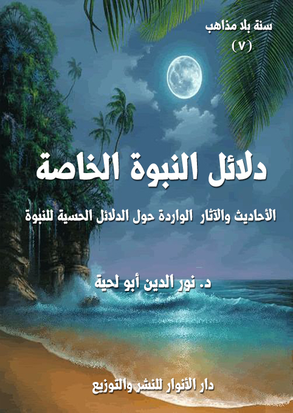

الوصف: الأحاديث والآثار الواردة حول الدلائل الحسية للنبوة
السلسلة: سنة بلا مذاهب
المؤلف: د. نور الدين أبو لحية
الناشر: دار الأنوار للنشر والتوزيع
الطبعة: الأولى، 1441 هـ
عدد الصفحات: 285
الكتاب موافق للمطبوع
ISBN: 978-620-3-85886-0
لمطالعة الكتاب من تطبيق مؤلفاتي المجاني وهو أحسن وأيسر: هنا

يحاول هذا الكتاب جمع ما أمكن من الأحاديث التي يمكن قبولها حول ما أطلقنا عليه [دلائل النبوة الخاصة]، وذلك من خلال المصادر السنية والشيعية.
ولا نقصد بدلائل النبوة الخاصة تلك التي تفرق بينها وبين الأدلة العامة، والتي تعنى بالبحث في البراهين العقلية على النبوة، كالاستدلال بالعناية والرعاية والهداية الإلهية وغيرها، وإنما نقصد مجموعة أمور:
أولها: تلك الخاصة بإثبات رسالة رسول الله صلى الله عليه وآله وسلم .. ذلك أن لكل نبي براهينه وأدلته الخاصة به، والتي تناسب الأقوام الذين أرسل إليهم، ولم نذكر كل تلك الأدلة هنا، لأنه يصعب إحصاؤها، وإنما ذكرنا أنواعا خاصة منها.
ثانيها: تلك الخاصة بعصر الرسالة، ذلك أن الله تعالى بكرمه ورحمته بخلقه أتاح لرسول الله صلى الله عليه وآله وسلم أن يظهر بعض الخوارق لقومه حتى يؤمنوا وتزول عنهم الشبهات والإشكالات.
ثالثها: تلك الخاصة بالذين يؤمنون بالخوارق الحسية المتعلقة بالأنبياء عليهم السلام، أو من سار على هديهم من ورثتهم من أئمة الهدى أو غيرهم من الصالحين، ولا يرون في ذلك أي غضاضة، ذلك أن إيمانهم بقدرة الله المطلقة يجعلهم لا يستغربون أي خارق من الخوارق، وخاصة إن دل عليه الدليل .. ذلك أن النبوة نفسها أعظم الخوارق.
دلائل النبوة الخاصة (5)
يحاول هذا الكتاب جمع ما أمكن من الأحاديث التي يمكن قبولها حول ما أطلقنا عليه [دلائل النبوة الخاصة]، وذلك من خلال المصادر السنية والشيعية.
ولا نقصد بدلائل النبوة الخاصة تلك التي تفرق بينها وبين الدلائل العامة، والتي تعنى بالبحث في البراهين العقلية على النبوة، كالاستدلال بالعناية والرعاية والهداية الإلهية وغيرها، وإنما نقصد مجموعة أمور:
أولها: تلك الخاصة بإثبات رسالة رسول الله صلى الله عليه وآله وسلم.. ذلك أن لكل نبي براهينه وأدلته الخاصة به، والتي تناسب الأقوام الذين أرسل إليهم، ولم نذكر كل تلك الأدلة هنا، لأنه يصعب إحصاؤها، وإنما ذكرنا أنواعا خاصة منها (1).
ثانيها: تلك الخاصة بعصر الرسالة، ذلك أن الله تعالى بكرمه ورحمته بخلقه أتاح لرسول الله صلى الله عليه وآله وسلم أن يظهر بعض الخوارق لقومه حتى يؤمنوا وتزول عنهم الشبهات والإشكالات، كما عبر الإمام الصادق عن ذلك بقوله: (إن من الناس من يؤمن بالكلام ومنهم من لا يؤمن إلا بالنظر، إن رجلا أتى النبي صلى الله عليه وآله وسلم فقال له: أرني آية، فقال رسول الله صلى الله عليه وآله وسلم لشجرتين: اجتمعا، فاجتمعتا، ثم قال: تفرقا، فافترقتا، ورجع كل واحدة منهما إلى مكانهما، قال: فآمن الرجل) (2)
وقال: (من الناس من لا يؤمن إلا بالمعاينة ومنهم من يؤمن بغيرها، إن رجلا أتى النبي صلى الله عليه وآله وسلم فقال: أرني آية، فقال بيده إلى النخل فذهبت يمنة، ثم قال: هكذا، فذهبت يسرة
__________
(1) ذكرنا بتفصيل أنواع تلك الأدلة، وكيفية تطبيقها في سلسلة [حقائق ورقائق]، لأن غرضها جميعا إثبات نبوة رسول الله (والرد على كل الشبهات المتعلقة بها..
(2) بصائر الدرجات: 71..
دلائل النبوة الخاصة (6)
فآمن الرجل) (1)
وعن ابن عباس قال: قدم ملوك حضرموت على النبي صلى الله عليه وآله وسلم فقالوا: كيف نعلم أنك رسول الله؟ فأخذ كفا من حصى فقال: هذا يشهد أني رسول الله، فسبح الحصى في يده وشهد أنه رسول الله (2).
ثالثها: تلك الخاصة بالذين يؤمنون بالخوارق الحسية المتعلقة بالأنبياء عليهم السلام، أو من سار على هديهم من ورثتهم من أئمة الهدى أو غيرهم من الصالحين، ولا يرون في ذلك أي غضاضة، ذلك أن إيمانهم بقدرة الله المطلقة يجعلهم لا يستغربون أي خارق من الخوارق، وخاصة إن دل عليه الدليل.. ذلك أن النبوة نفسها أعظم الخوارق.
ولذلك لا نرى ذكر مثل هذه الأحاديث أمام عامة الناس، وخاصة أولئك الذين قد يتهمون هذه الروايات بكونها من الخرافة.. ذلك أن في روايتها فتنة لهم، ونحن أمرنا أن نخاطب الناس على قدر عقولهم.
ومع ذلك أمرنا أيضا ألا نكتم شيئا من الرواية، وخاصة إن تواترت الأخبار الواردة فيها، ذلك أن التواتر من البراهين التي تخضع لها العقول السليمة.
ويدعم ذلك التواتر ما ورد في القرآن الكريم من ذكره للخوارق الحسية التي حصلت للأنبياء عليهم السلام، وهو ما يدل على ارتباط النبوة بأمثال تلك الخوارق.
وهذا لا يتناقض مع ما ورد في الحديث من قوله صلى الله عليه وآله وسلم: (ما من الأنبياء من نبي إلا قد أعطي من الآيات ما مثله آمن عليه البشر، وإنما كان الذي أوتيت وحيا أوحى الله إلي، فأرجو أن أكون أكثرهم تابعا يوم القيامة) (3)
__________
(1) بحار الأنوار (17/ 377)، الخرائج.
(2) مناقب آل أبى طالب 1: 80.
(3) رواه مسلم حديث (152)، البخاري حديث (4981)
دلائل النبوة الخاصة (7)
فرسول الله صلى الله عليه وآله وسلم لا ينفي في هذا الحديث الأدلة الحسية الكثيرة التي حصلت في عصره، وإنما يشير إلى الأدلة العامة، والتي ترتبط بجميع الأماكن والعصور.
ومع كون تلك الأدلة خاصة بعصر النبوة، إلا أننا لا ننكر دورها في زيادة الإيمان، وخاصة لأولئك البسطاء الطيبين الذين يذكرون أمثال تلك الأحاديث، ويتغنون بها في أشعارهم، فرحين بها، وربما يكون لها من التأثير في نفوسهم ما ليس للقرآن الكريم نفسه.
وبما أننا أمرنا أن نخاطب الناس جميعا خواصهم وعوامهم؛ فإن حرصنا على الخاصة لا يلغي حرصنا على العامة. ولذلك فإن تكذيب تلك النصوص بسبب رفض بعض الخاصة لها ظلم وإجحاف.
أما استبعاد عقول الخاصة لأمثال تلك الأدلة؛ فهو لا يرجع إلى غرابتها، أو ميلها إلى الخرافة، وإنما لمحدودية وعاء تلك العقول، ذلك أن قدرة الله تعالى لا حدود لها.
ومن الأمثلة على ذلك ما نورده من الأحاديث الواردة في المصادر السنية والشيعية حول حديث بعض الحيوانات، وإقرارها بنبوة رسول الله صلى الله عليه وآله وسلم.. فذلك لا يتنافى أولا مع القرآن الكريم الذي أخبر عن حديث الحيوانات، كما قال تعالى عن النملة وقصتها مع سليمان عليه السلام: {حَتَّى إِذَا أَتَوْا عَلَى وَادِ النَّمْلِ قَالَتْ نَمْلَةٌ يَاأَيُّهَا النَّمْلُ ادْخُلُوا مَسَاكِنَكُمْ لَا يَحْطِمَنَّكُمْ سُلَيْمَانُ وَجُنُودُهُ وَهُمْ لَا يَشْعُرُونَ (18) فَتَبَسَّمَ ضَاحِكًا مِنْ قَوْلِهَا وَقَالَ رَبِّ أَوْزِعْنِي أَنْ أَشْكُرَ نِعْمَتَكَ الَّتِي أَنْعَمْتَ عَلَيَّ وَعَلَى وَالِدَيَّ وَأَنْ أَعْمَلَ صَالِحًا تَرْضَاهُ وَأَدْخِلْنِي بِرَحْمَتِكَ فِي عِبَادِكَ الصَّالِحِينَ} [النمل: 18، 19]
وقال عن الهدهد: {وَتَفَقَّدَ الطَّيْرَ فَقَالَ مَا لِيَ لَا أَرَى الْهُدْهُدَ أم كَانَ مِنَ الْغَائِبِينَ (20) لَأُعَذِّبَنَّهُ عَذَابًا شَدِيدًا أَوْ لَأَذْبَحَنَّهُ أَوْ لَيَأْتِيَنِّي بِسُلْطَانٍ مُبِينٍ (21) فَمَكَثَ غَيْرَ بَعِيدٍ فَقَالَ أَحَطْتُ بِمَا لَمْ تُحِطْ بِهِ وَجِئْتُكَ مِنْ سَبَإٍ بِنَبَإٍ يَقِينٍ} [النمل: 20 - 22]
دلائل النبوة الخاصة (8)
وفي ذلك دلالة على إمكانية الحديث مع الحيوانات، وفهم كلامها..
أما الاعتراض بأن ذلك خاص بسليمان عليه السلام؛ فهو عجيب جدا، ذلك أن التخصيص يحتاج إلى مخصص.. والعقل المحدود لا يكون مخصصا أبدا.
أما كيفية ذلك فهي مما لا تحتاج العقول المسلمة لربها إليها، ذلك أن قدرة الله أعظم من أن تحصر أو يقترح عليها.. ولكن من باب التبسيط؛ فإن في قدرة الله تعالى أن يترجم للآذان ما تريد أن تقوله تلك الحيوانات، أو غيرها من الجمادات، من غير حاجة لنطقها.. ذلك أن النطق قد يستدعي أجهزة وأدوات خاصة لا تملكها تلك الحيوانات.
فما المانع أن يحدث الله تعالى في آذان الحاضرين لتلك الأحداث تلك الأصوات التي تترجم لهم ما تريده تلك الحيوانات أو الجمادات من المعاني حتى يترسخ إيمانهم، ويكون ذلك دليلهم إلى النبوة؟
وهكذا يقال في كل أنواع الخوارق من تكثير الطعام والماء وإجابة الدعاء والبركات المختلفة التي وردت الأدلة الكثيرة عليها.
وأحب أن أذكر هنا أنه ظهر في المسلمين وفي العصور الأخيرة من يستعجل بإنكار كل ما ورد من الأحاديث في هذا الباب، بناء على توهمه مخالفتها للعقل، ولسنا ندري أي عقل يقصدون.. هل العقل المادي الذي لا يؤمن بالله أصلا؟.. أم العقل المؤمن، والذي يرى أن قدرة الله أعظم من أن تحد بأي حدود؟
وقد توهم هؤلاء معارضة تلك الأحاديث للقرآن الكريم مع أنها لا تتعرض لذلك أصلا، بل إنه لا يمكن تفسير الكثير من الآيات ولا فهمها الفهم الصحيح البعيد عن التأويل المتكلف ما لم نثبت أمثال تلك الأحاديث.
فالله تعالى يقول: {وَإِذَا رَأَوْا آيَةً يَسْتَسْخِرُونَ (14) وَقَالُوا إِنْ هَذَا إِلَّا سِحْرٌ مُبِينٌ}
دلائل النبوة الخاصة (9)
[الصافات: 14، 15] فهاتان الآيتان، تشيران إلى وقوع الآيات منه صلى الله عليه وآله وسلم، وأنهم كانوا يقابلونها بدعوى أنها من السحر، كما حصل للأنبياء السابقين، كما قال تعالى عن موسى عليه السلام: {قَالَ آمَنْتُمْ لَهُ قَبْلَ أَنْ آذَنَ لَكُمْ إِنَّهُ لَكَبِيرُكُمُ الَّذِي عَلَّمَكُمُ السِّحْرَ} (طه: 71)
والله تعالى يقول في سورة القمر عند ذكره لمعجزة انشقاق القمر: {اقْتَرَبَتِ السَّاعَةُ وَانْشَقَّ الْقَمَرُ (1) وَإِنْ يَرَوْا آيَةً يُعْرِضُوا وَيَقُولُوا سِحْرٌ مُسْتَمِرٌّ (2) وَكَذَّبُوا وَاتَّبَعُوا أَهْوَاءَهُمْ وَكُلُّ أَمْرٍ مُسْتَقِرٌّ (3) وَلَقَدْ جَاءَهُمْ مِنَ الْأَنْبَاءِ مَا فِيهِ مُزْدَجَرٌ (4) حِكْمَةٌ بَالِغَةٌ فَمَا تُغْنِ النُّذُرُ} [القمر: 1 - 5]
والله تعالى يخبر أنهم رأوا الآيات الكثيرة الدالة على صدق رسول الله صلى الله عليه وآله وسلم، فهو يقول: {كَيْفَ يَهْدِي اللّهُ قَوْماً كَفَرُوا بَعْدَ إِيمَانِهِمْ وَشَهِدُوا أَنَّ الرَّسُولَ حَقٌّ وَجَاءهُمُ الْبَيِّنَاتُ وَاللّهُ لاَ يَهْدِي الْقَوْمَ الظَّالِمِينَ} [آل عمران:86]، ويقول: {وَإِذَا جَاءَتْهُمْ آيَةٌ قَالُوا لَنْ نُؤْمِنَ حَتَّى نُؤْتَى مِثْلَ مَا أُوتِيَ رُسُلُ اللَّهِ اللَّهُ أعلم حَيْثُ يَجْعَلُ رِسَالَتَهُ سَيُصِيبُ الَّذِينَ أَجْرَمُوا صَغَارٌ عِنْدَ اللَّهِ وَعَذَابٌ شَدِيدٌ بِمَا كَانُوا يَمْكُرُونَ} [الأنعام: 124]
وقد ترك هؤلاء أمثال هذه الآيات الصريحة، وما يدل عليها من مئات الأحاديث الواردة في جميع المصادر الإسلامية، وذهبوا إلى آيات متشابهات، فهموا غير المراد منها، ومن الأمثلة عنها:
1. استدلالهم بقوله تعالى: {قُلْ إِنِّي عَلَى بَيِّنَةٍ مِنْ رَبِّي وَكَذَّبْتُمْ بِهِ مَا عِنْدِي مَا تَسْتَعْجِلُونَ بِهِ إِنِ الْحُكْمُ إِلَّا لِلَّهِ يَقُصُّ الْحَقَّ وَهُوَ خَيْرُ الْفَاصِلِينَ} (الأنعام:57)، فقد توهموا أن {مَا تَسْتَعْجِلُونَ بِهِ} المراد به الآيات والخوارق الحسية..
وذلك غير صحيح؛ فالاستعجال هو طلب تقدم شيء وعدوا به أو هددوا..
دلائل النبوة الخاصة (10)
وبالرجوع إلى القرآن الكريم نجد الكفار الذي قاموا بفعل الاستعجال، استعجلوا النبي صلى الله عليه وآله وسلم في أمرين.. أحدهما القيامة، فقد كانوا يكذبون بها أشد تكذيب، ولذلك كانوا يستعجلون حضورها، كما قال تعالى: {وَيَقُولُونَ مَتَى هَذَا الْوَعْدُ إِنْ كُنْتُمْ صَادِقِينَ (71) قُلْ عَسَى أَنْ يَكُونَ رَدِفَ لَكُمْ بَعْضُ الَّذِي تَسْتَعْجِلُونَ} [النمل: 71، 72]، وقال: {وَيَقُولُونَ مَتَى هَذَا الْوَعْدُ إِنْ كُنْتُمْ صَادِقِينَ (29) قُلْ لَكُمْ مِيعَادُ يَوْمٍ لَا تَسْتَأْخِرُونَ عَنْهُ سَاعَةً وَلَا تَسْتَقْدِمُونَ} [سبأ: 29، 30]
والثاني، فهو نزول العذاب بهم في الدنيا قبل القيامة، وهو ما تشير إليه هذه الآية بدليل قوله: {قُلْ لَوْ أَنَّ عِنْدِي مَا تَسْتَعْجِلُونَ بِهِ لَقُضِيَ الأمر بَيْنِي وَبَيْنَكُمْ} أي: لو كان مرجع ما تستعجلون به إلي، لأوقعت بكم ما تستحقونه من ذلك.
وقد أشار إلى هذا المعنى آيات كثيرة من القرآن الكريم، فقد كان المشركون لعتوهم يطلبون من رسول الله صلى الله عليه وآله وسلم أن ينزل بهم العذاب الذي يتوعد الله به الكافرين، فالله تعالى يقول: {قُلْ أَرَأَيْتُمْ إِنْ أَتَاكُمْ عَذَابُهُ بَيَاتًا أَوْ نَهَارًا مَاذَا يَسْتَعْجِلُ مِنْهُ الْمُجْرِمُونَ (50) أَثُمَّ إِذَا مَا وَقَعَ آمَنْتُمْ بِهِ آلْآنَ وَقَدْ كُنْتُمْ بِهِ تَسْتَعْجِلُونَ (51) ثُمَّ قِيلَ لِلَّذِينَ ظَلَمُوا ذُوقُوا عَذَابَ الْخُلْدِ هَلْ تُجْزَوْنَ إِلَّا بِمَا كُنْتُمْ تَكْسِبُونَ} [يونس: 50 - 52]
ويحكي الله تعالى عنهم استعجالهم العذاب، فيقول: {وَإِذْ قَالُوا اللَّهُمَّ إِنْ كَانَ هَذَا هُوَ الْحَقَّ مِنْ عِنْدِكَ فَأَمْطِرْ عَلَيْنَا حِجَارَةً مِنَ السَّمَاءِ أَوِ ائْتِنَا بِعَذَابٍ أَلِيمٍ} [الأنفال: 32]، وهذا من جهلهم وعُتُوِّهم وعنادهم وشدة تكذيبهم، وقد كان الأولى لهم أن يقولوا: (اللهم، إن كان هذا هو الحق من عندك، فاهدنا له، ووفقنا لاتباعه)، ولكن الكبر الذي امتلأت به نفوسهم منعهم من ذلك.
والله تعالى يحكي هذا عن الأمم السالفة، كما قال قوم شعيب له: {فَأَسْقِطْ عَلَيْنَا
دلائل النبوة الخاصة (11)
كِسَفًا مِنَ السَّمَاءِ إِنْ كُنْتَ مِنَ الصَّادِقِينَ} [الشعراء: 187]، وقال هؤلاء: {اللَّهُمَّ إِنْ كَانَ هَذَا هُوَ الْحَقَّ مِنْ عِنْدِكَ فَأَمْطِرْ عَلَيْنَا حِجَارَةً مِنَ السَّمَاءِ أَوِ ائْتِنَا بِعَذَابٍ أَلِيمٍ} [الأنفال: 32]
وقد كان في رسول الله صلى الله عليه وآله وسلم من الرحمة ما منعه أن يسأل الله عذابهم، بل كان حريصا عليهم حزينا على كفرهم، ولذلك لما عرض عليه تعذيبهم أبى ذلك؛ ففي الحديث الذي ذكر فيه رسول الله صلى الله عليه وآله وسلم ما لقيه من أهل الطائف: (فإذا أنا بسحابة قد أظَلَّتْني، فنظرت فإذا فيها جبريل، عليه السلام، فناداني، فقال: إن الله قد سمع قول قومك لك، وما ردوا عليك، وقد بعث إليك مَلَك الجبال لتأمره بما شئت فيهم، فناداني مَلَك الجبال وسلم علي، ثم قال: يا محمد، إن الله قد سمع قول قومك لك، وقد بعثني ربك إليك، لتأمرني بأمرك، فما شئت؟ إن شئت أطبقت عليهم الأخشبين)، فقال رسول الله صلى الله عليه وآله وسلم: (بل أرجو أن يخرج الله من أصلابهم من يعبد الله، لا يشرك به شيئا) (1)، فقد عرض عليه عذابهم واستئصالهم، فاستأنى بهم، وسأل لهم التأخير، لعل الله أن يخرج من أصلابهم من لا يشرك به شيئا.
2. استدلالهم بقوله تعالى: {وَأَقْسَمُوا بِاللّهِ جَهْدَ أَيْمَانِهِمْ لَئِن جَاءتْهُمْ آيَةٌ لَّيُؤْمِنُنَّ بِهَا قُلْ إِنَّمَا الآيَاتُ عِندَ اللّهِ وَمَا يُشْعِرُكُمْ أَنَّهَا إِذَا جَاءتْ لاَ يُؤْمِنُونَ} [الأنعام: 109]
فالآية الكريمة تنص على أن الكفار {أَقْسَمُوا بِاللّهِ جَهْدَ أَيْمَانِهِمْ لَئِن جَاءتْهُمْ آيَةٌ} من مقترحاتهم أو الآية التي يختارونها {لَّيُؤْمِنُنَّ بِهَا}
وقد أمر الله تعالى نبيه صلى الله عليه وآله وسلم بأن يرد عليهم بقوله {إِنَّمَا الآيَاتُ عِندَ اللّهِ}، فهو وحده القادر عليها، والذي يظهر منها ما يشاء.
ثم خاطبهم بقوله {وَمَا يُشْعِرُكُمْ أَنَّهَا إِذَا جَاءتْ لاَ يُؤْمِنُونَ} أي الآية المقترحة إذا جاءت لا يؤمنون بها.
__________
(1) البخاري 4/ 237 (3231) ومسلم 3/ 1420 (111 - 1795).
دلائل النبوة الخاصة (12)
وهذا لا يعني عدم وجود الآيات، ولكنه يعني أن هؤلاء اقترحوا معجزات معينة من باب السخرية والاستهزاء لا من باب الاسترشاد والتحقق، والله تعالى لا يجيب المستهزئين أو المنكرين لما يطلبون، فإن أجابهم، ثم لم يؤمنوا أنزل بهم العذاب.
وقد روي في سبب نزول هذه الآية أن قريشا كلموا رسول الله صلى الله عليه وآله وسلم، فقالوا: يا محمد تخبرنا أن موسى كان معه عصا يضرب بها الحجر، فانفجرت منه اثنتا عشرة عينا، وتخبرنا أن عيسى كان يحيي الموتى، وتخبرنا أن ثمود كان لهم ناقة فآتنا من الايات حتى نصدقك، فقال رسول الله صلى الله عليه وآله وسلم: (أي شيء تحبون أن آتيكم به)، قالوا: تجعل لنا الصفا ذهبا، فقال لهم: (فإن فعلت تصدقوني؟)، قالوا: نعم والله لئن فعلت لنتبعنك أجمعون، فقام رسول الله صلى الله عليه وآله وسلم يدعو، فجاءه جبريل عليه السلام؛ فقال له: (ما شئت إن شئت أصبح الصفا ذهبا، ولئن أرسل آية فلم يصدقوا عند ذلك ليعذبنهم وإن شئت فاتركهم حتى يتوب تائبهم)، فقال رسول الله: (بل أتركهم حتى يتوب تائبهم) (1)
فهذا النص يدل على أن رحمة الله ورحمة رسوله صلى الله عليه وآله وسلم بقومه وبالناس كافة جعلته يمتنع من تلك الآية التي اقترحوها في ذلك المحل، وهو لا يعني عدم الآيات، وإنما يعني ما اقترحوه، لأنهم لم يقترحوه بدوافع الصدق والاسترشاد والتحقق.
فلو نزلت تلك الآية ولم يؤمن هؤلاء وجب هلاكهم لأنها سنته تعالى فيما مضى من القرون والأمم السابقة، فالله تعالى يُنزل الآية، فإن لم يؤمنوا بها يهلكهم لكفرهم وعنادهم، كما حدث مع قوم ثمود لما جاءتهم الناقة، كما قال تعالى في الآية التي هي من الأدلة التي استدللت بها: {وَمَا مَنَعَنَا أَن نُّرْسِلَ بِالآيَاتِ إِلاَّ أَن كَذَّبَ بِهَا الأَوَّلُونَ وَآتَيْنَا ثَمُودَ النَّاقَةَ مُبْصِرَةً فَظَلَمُوا بِهَا وَمَا نُرْسِلُ بِالآيَاتِ إِلاَّ تَخْوِيفاً} [الإسراء:59]
__________
(1) رواه أحمد، سبل الهدى والرشاد (7/ 11).
دلائل النبوة الخاصة (13)
وهذا المعنى نجده في كتب أهل الكتاب أنفسهم الذي يثيرون الشبه حول المعجزات الحسية لرسول الله صلى الله عليه وآله وسلم، ويتوهمون أنه لم يأت بأي أدلة غير القرآن الكريم؛ ففي إنجيل (مرقس:8/ 11 - 12): (فخرج الفريسيون وابتدأوا يحاورونه طالبين منه آية من السماء لكي يجربوه. فتنهد بروحه وقال لماذا يطلب هذا الجيل آية. الحق اقول لكم لن يعطى هذا الجيل آية)
وفي إنجيل (لوقا:23/ 8 - 12): (واما هيرودس فلما رأى يسوع فرح جدا لأنه كان يريد من زمان طويل أن يراه لسماعه عنه أشياء كثيرة وترجى أن يرى آية تصنع منه. وسأله بكلام كثير فلم يجبه بشيء. ووقف رؤساء الكهنة والكتبة يشتكون عليه باشتداد. فاحتقره هيرودس مع عسكره واستهزأ به وألبسه لباسا لامعا ورده الى بيلاطس)
وهذا النص يظهر هنا للعيان أن المسيح ما أظهر ولو معجزة واحدة مع أنه كان أنسب وقت لظهور معجزة، وقد كان هيرودس يترجى أن يرى منه معجزة واحدة، ولو رأى هيرودس معجزة واحدة لوبخ اليهود، وما احتقر المسيح حينذاك، فهل هذا ينفي ظهور المعجزات من المسيح؟
3. استدلالهم بقوله تعالى: {وَقَالُوا لَنْ نُؤْمِنَ لَكَ حَتَّى تَفْجُرَ لَنَا مِنَ الأرض يَنْبُوعًا (90) أَوْ تَكُونَ لَكَ جَنَّةٌ مِنْ نَخِيلٍ وَعِنَبٍ فَتُفَجِّرَ الْأَنْهَارَ خِلَالَهَا تَفْجِيرًا (91) أَوْ تُسْقِطَ السَّمَاءَ كَمَا زَعَمْتَ عَلَيْنَا كِسَفًا أَوْ تَأْتِيَ بِاللَّهِ وَالْمَلَائِكَةِ قَبِيلًا (92) أَوْ يَكُونَ لَكَ بَيْتٌ مِنْ زُخْرُفٍ أَوْ تَرْقَى فِي السَّمَاءِ وَلَنْ نُؤْمِنَ لِرُقِيِّكَ حَتَّى تُنَزِّلَ عَلَيْنَا كِتَابًا نَقْرَؤُهُ قُلْ سُبْحَانَ رَبِّي هَلْ كُنْتُ إِلَّا بَشَرًا رَسُولًا} [الإسراء: 90 - 93]
فالمشركون ـ كما تدل هذه الآيات الكريمة ـ علقوا إيمانهم بالرسول صلى الله عليه وآله وسلم بأن يفجر لهم من الأرض ينبوعاً، أو بأن تكون له جنة من نخيل وعنب يفجر الأنهار خلالها تفجيراً، أو
دلائل النبوة الخاصة (14)
أن يأخذهم بعذاب من السماء، فيسقطها عليهم قطعاً كما أنذرهم أن يكون ذلك يوم القيامة! أو أن يأتي بالله والملائكة قبيلاً يناصره ويدفع عنه كما يفعلون هم في قبائلهم! أو أن يكون له بيت من المعادن الثمينة، أو أن يرقى في السماء، ولا يكفي أن يعرج إليها وهم ينظرونه، بل لا بد أن يعود إليهم ومعه كتاب محبر يقرأونه.
وكل ذلك يدل على عقولهم الضعيفة، وما كان للنبي صلى الله عليه وآله وسلم أن يذعن لها، كما يقول سيد قطب في تعليقه على الآيات الكريمة: (وتبدو طفولة الإدراك والتصور، كما يبدو التعنت في هذه المقترحات الساذجة. وهم يسوون بين البيت المزخرف والعروج إلى السماء! أو بين تفجير الينبوع من الأرض ومجيء اللّه - سبحانه - والملائكة قبيلا! والذي يجمع في تصورهم بين هذه المقترحات كلها هو أنها خوارق. فإذا جاءهم بها نظروا في الإيمان له والتصديق به! وغفلوا عن الخارقة الباقية في القرآن، وهم يعجزون عن الإتيان بمثله في نظمه ومعناه ومنهجه، ولكنهم لا يلتمسون هذا الإعجاز بحواسهم فيطلبون ما تدركه الحواس! والخارقة ليست من صنع الرسول، ولا هي من شأنه، إنما هي من أمر اللّه سبحانه وفق تقديره وحكمته.. وليس من شأن الرسول أن يطلبها إذا لم يعطه اللّه إياها. فأدب الرسالة وإدراك حكمة اللّه في تدبيره يمنعان الرسول أن يقترح على ربه ما لم يصرح له به) (1)
ولهذا، فإن القرآن الكريم ينص على أن مقصود الكفار بهذه الإقتراحات العناد والتعنت واللجاج، ولو جاءتهم كل آية لقالوا هذا سحر، كما قال تعالى: {لَوْ نَزَّلْنَا عَلَيْكَ كِتَاباً فِي قِرْطَاسٍ فَلَمَسُوهُ بِأيديهِمْ لَقَالَ الَّذِينَ كَفَرُوا إِنْ هَذَا إِلاَّ سِحْرٌ مُّبِينٌ} [الأنعام:7]
-\--\-
بناء على هذا حاولنا في هذا الكتاب أن نجمع أكبر قدر من الأحاديث التي لا نرى
__________
(1) فى ظلال القرآن (4/ 2250).
دلائل النبوة الخاصة (15)
غضاضة في قبولها، وإن كنا لا نثق تماما ببعض التفاصيل الواردة فيها، لأنها نقلت بالمعنى.
ولهذا فإنا ذكرنا الحادثة الواحدة من مصادر متعددة، وبصيغ مختلفة، حتى يفيد ذلك الدلالة على الكثرة المفيدة للتواتر المعنوي.
ومع أن أكثر الأحاديث الواردة في هذا الباب من المتفق عليه بين السنة والشيعة إلا أنا آثرنا أن نخصص أحاديث كل مدرسة منهما بفصل خاص بها، وقد بدأنا بالمدرسة السنية ردا على أولئك الذين يرمون المدرسة الشيعية بالخرافة نتيجة اهتمامها بأمثال تلك الروايات، مع أن أكثرها منقول من المدرسة السنية نفسها.
ونحب أن ننبه إلى أننا بدل رفض بعض الأحاديث الواردة في مصادر كلا المدرستين قمنا بتعديلات على ألفاظها بحيث يمكن قبولها، ولو بشكل عام.. ولهذا حذفنا ما ورد في الروايات الشيعية من الألفاظ التي تربط إثبات النبوة بإثبات إمامة أئمة الهدى.. ذلك أن مثل تلك الروايات كثيرة جدا، وقد سبق ذكرها في كتاب [الإمامة والامتداد الرسالي]، ولا معنى لإقحام الإمامة في كل محل.
بالإضافة إلى أنه من المتفق عليه عند الأمة جميعا أن كل الخوارق التي حصلت كان الغرض منها إثبات رسالة رسول الله صلى الله عليه وآله وسلم.. أما الإمامة فهي تابعة للنبوة، وليست مزاحمة لها، ولذلك فإن من آمن بالنبوة، وصدقها في كل ما تذكره آمن بالإمامة بالبداهة، لأنها من وصايا النبوة.
وننبه في الأخير إلى أننا مع إيرادنا للكثير من الأحاديث الواردة في هذا الباب، وتساهلنا معها، لا يعني ذلك أننا نقبلها جميعا، وبكل ما ورد فيها، ولكنا في نفس الوقت لا نستطيع أن نحكم أهواءنا فيما لا نرى تناقضه مع العقل والنصوص المقدسة.
دلائل النبوة الخاصة (16)
دلائل النبوة في المصادر السنية
نحاول في هذا الفصل جمع ما نراه مقبولا من الأحاديث الواردة حول دلائل النبوة الخاصة في المصادر السنية، وقد اعتمدنا في تخريجها على ما ورد في كتاب [سبل الهدى والرشاد، في سيرة خير العباد، وذكر فضائله وأعلام نبوته وأفعاله وأحواله في المبدأ والمعاد] للشيخ محمد بن يوسف الصالحي الشامي (المتوفى: 942 هـ)، باعتباره من أوثق الكتب، وأكثرها اهتماما بجمع الطرق المختلفة للأحاديث.
وقد استبعدنا ما لا نراه مناسبا، أو ما نراه معارضا للقرآن الكريم، وتصرفنا في بعض الروايات بما يزيل عنها ذلك التعارض.
وقد قسمنا هذا الفصل ـ بحسب أنواع الدلائل ـ إلى خمسة أقسام:
أولا ـ ما ورد حول بركاته صلى الله عليه وآله وسلم على كل ما ارتبط به.
ثانيا ـ ما ورد حول إجابة دعواته صلى الله عليه وآله وسلم.
ثالثا ـ ما ورد حول عصمته صلى الله عليه وآله وسلم من الناس.
رابعا ـ ما ورد حول الآيات الحسية.
خامسا ـ ما ورد حول الآيات العلمية والإدراكية.
أولا ـ ما ورد حول بركاته على كل ما ارتبط به
وهي أحاديث تتوافق مع ما ورد في القرآن الكريم حول البركة التي وهبها الله تعالى للصالحين من عباده، كقوله تعالى عن المسيح عليه السلام: {وَجَعَلَنِي مُبَارَكًا أَيْنَ مَا كُنْتُ} [مريم: 31]
دلائل النبوة الخاصة (17)
وهو ما نرى اهتمام جميع أهل الأديان به؛ فكلهم ينسبون البركة لأنبيائهم وقديسيهم، ولهذا نرى المسيحيين يشيدون كثيرا بما ورد في الكتاب المقدس عن بركات المسيح عليه السلام، ويعتبرونها من البراهين الدالة على خصوصيته، مع أن ما ورد فيه لا يساوي شيئا أمام ما ورد من الأحاديث عن رسول الله صلى الله عليه وآله وسلم.. بالإضافة إلى أن أسانيد تلك الروايات الواردة في كتب الحديث لا تقل عن نظيرتها في الكتاب المقدس.
وقد ذكرنا هنا نماذج عن الأحاديث الواردة في هذا ا لباب، وتتعلق بما يلي:
1 ـ ما ورد في بركته على أنواع الأطعمة.
2 ـ ما ورد في بركته على الولائم وغيرها.
3 ـ ما ورد في بركته على الماء.
4 ـ ما ورد في بركته على الحيوانات.
5 ـ ما ورد في بركته على المرضى.
6 ـ ما ورد في بركته على الأصحاء.
7 ـ ما ورد في بركته على الموتى.
وهذه هي الأحاديث، بحسب هذا الترتيب:
1 ـ ما ورد في بركته على أنواع الأطعمة
سنذكر هنا ما ورد من الأحاديث حول أنواع الأطعمة التي ورد في الروايات الحديث عن تخصيصها ببركته صلى الله عليه وآله وسلم، وهي: الشعير، والتمر، والسمن، واللحم، والبيض، واللبن.. وغيرها، وهي مجرد نماذج عن بركاته صلى الله عليه وآله وسلم.
ونحب أن ننبه إلى أن المسيحيين يشيدون كثيرا بهذه الحادثة الواردة في الكتاب المقدس، والتي تشبه كثيرا ما ورد في الأحاديث التي سنوردها، فهي تنص على أن المسيح
دلائل النبوة الخاصة (18)
عليه السلام: (أخذ الأرغفة الخمسة والسمكتين ورفع نظره نحو السماء وبارك وكسر وأعطى الأرغفة للتلاميذ والتلاميذ للجموع، فأكل الجميع وشبعوا، ثم رفعوا ما فضل من الكسر: اثنتي عشرة قفة مملوءة، والأكلون كانوا نحو خمسة آلاف رجل ما عدا النساء والأولاد) (متى:14/ 19 - 21) (1)
وهذا نفسه ينطبق على رسول الله صلى الله عليه وآله وسلم وجميع الأنبياء عليهم السلام.. فمن الأحاديث الواردة في ذلك:
[الحديث: 1] عن جابر أن رجلا أتى النبي صلى الله عليه وآله وسلم يستطعمه فأطعمه شطر وسق شعير فما زال يأكل منه هو وامرأته ومن ضيفهما حتى كالوه فأخبر النبي صلى الله عليه وآله وسلم فقال رسول الله صلى الله عليه وآله وسلم: (لو لم تكله لأكلتم منه، ولقام لكم) (2)
[الحديث: 2] عن نوفل بن الحارث بن عبد المطلب أنه استعان برسول الله صلى الله عليه وآله وسلم في التزويج فأنكحه امرأة فالتمس شيئا فلم يجده فبعث رسول الله صلى الله عليه وآله وسلم أبا رافع وأبا أيوب بدرعه فرهناه عند يهودي بثلاثين صاعا من شعير، فدفعه رسول الله صلى الله عليه وآله وسلم إليه، قال: فطعمنا منه نصف سنة ثم كلناه فوجدناه كما أدخلناه، قال نوفل: فذكرت ذلك لرسول الله صلى الله عليه وآله وسلم فقال: (لو لم تكله لأكلت منه ما عشت) (3)
[الحديث: 3] عن عائشة قالت: لقد توفي رسول الله صلى الله عليه وآله وسلم وما في بيتي من شيء يأكله ذو كبد إلا شطر وسق من شعير في رف لي فأكلت منه حتى طال علي فكلته ففني (4).
[الحديث: 4] عن أبي هريرة قال: كان رسول الله صلى الله عليه وآله وسلم في غزاة فأصابهم عوز من
__________
(1) وانظر: مرقس:6/ 13 - 21؛ لوقا:9/ 10 - 17؛ ويوحنا:6/ 1 - 14.
(2) رواه أحمد 3/ 337، 347 ومسلم (9) والبيهقي في الدلائل 6/ 114.
(3) رواه الحاكم في المستدرك 3/ 346 والبيهقي في الدلائل 6/ 114.
(4) رواه البخاري ومسلم، سبل الهدى: 9/ 470.
دلائل النبوة الخاصة (19)
الطعام فقال: (يا أبا هريرة عندك شيء؟) قلت: شيء من تمر في مزود لي قال: (جيء به) قال فجئت بالمزود، قال: (هات نطعا)، فجئت بالنطع فبسطته، فأدخل يده فقبض على التمر، فإذا هو إحدى وعشرون تمرة فجعل يضع كل تمرة ويسمي الله عز وجل حتى أتى على التمر، فقال به هكذا فجمعه فقال: (ادع عشرة)، فدعوت عشرة، فأكلوا حتى شبعوا وكذلك حتى أكل الجيش كله وفضل تمرات، فقلت: يا رسول الله، ادع لي فيهن بالبركة فقال: فقبضهن ثم دعا فيهن بالبركة ثم قال: (خذهن فاجعلهن في المزود، وإذا أردت أن تأخذ منهن شيئا فأدخل يدك فيه ولا تكفأ فيكفأ عليك) (1)
[الحديث: 5] عن العرباص بن سارية قال: كنت مع رسول الله صلى الله عليه وآله وسلم بتبوك، فقال ليلة لبلال: (هل من عشاء؟) فقال: والذي بعثك بالحق لقد نفضنا جرابنا، قال: (انظر عسى تجد شيئا)، فأخذ الجرب ينفضها جرابا جرابا. فتقع التمرة والتمرتان حتى رأيت في يده سبع تمرات ثم دعا بصحفة فوضع التمر فيها ثم وضع يده على التمرات وقال: (كلوا باسم الله) فأكلنا ثلاثة أنفس فأحصيته أربعا وخمسين تمرة أعدها عدا ونواها في يدي الأخرى وصاحبي يصنعان كذلك فشبعنا ورفعنا أيدينا فإذا التمرات السبع كما هن فقال: (يا بلال ارفعهن، فإنه لا يأكل منها أحد إلا نهل منها شبعا) فلما كان من الغد دعا بلالا بالتمرات فوضع يده عليها ثم قال (كلوا باسم الله)، فأكلنا حتى شبعنا وإنا لعشرة ثم رفعنا أيدينا وإذا التمرات كما هي، فقال رسول الله صلى الله عليه وآله وسلم: (لولا أني مستح من ربي لأكلنا من هذه التمرات حتى نرد إلى المدينة عن آخرنا) فأعطاهن غلاما فولى يلوكهن (2).
[الحديث: 6] عن محمد بن عمرو الأسلمي قال: قال رجل من بني سعد: جئت مع
__________
(1) رواه أحمد وابن سعد والترمذي وابن حبان والبيهقي في الدلائل 6/ 110، سبل الهدى: 9/ 471.
(2) رواه أبو نعيم وابن عساكر، سبل الهدى: 9/ 471.
دلائل النبوة الخاصة (20)
رسول الله صلى الله عليه وآله وسلم وهو في نفر من أصحابه وهو سابعهم، فأسلمت، فقال: (يا بلال، أطعمنا)، فبسط نطعا ثم جعل يخرج شيئا له فأخرج شيئا من تمر معجون بالسمن والأقط، فقال رسول الله صلى الله عليه وآله وسلم: (كلوا) فأكلنا حتى شبعنا فقلت: يا رسول الله، إني كنت أكل هذا وحدي، ثم جئته من الغد، فإذا عشرة نفر حوله فقال: (أطعمنا يا بلال)، فجل يخرج من جراب تمرا بكفه قبضه قبضة، فقال: (أخرج ولا تخف من ذي العرش إقلالا) فجاء بالجراب فنثره فحزرته مدين فوضع النبي صلى الله عليه وآله وسلم يده على التمر ثم قال: (كلوا باسم الله)، فأكل القوم، وأكلت معهم حتى ما أجد له مسلكا وبقي على النطع مثل الذي جاء به كأنا لم نأكل منه تمرة واحدة ثم غدونا من الغد وعاد نفر عشرة يزيدون رجلا أو رجلين، فقال: (يا بلال، أطعمنا) فجاء بذلك الجراب بعينه فنثره فوضع يده عليه، وقال: (كلوا باسم الله) فأكلنا، ثم رفع مثل الذي صب ففعل ذلك ثلاثة أيام (1).
[الحديث: 7] عن دلين بن سعيد الخثعمي والنعمان بن مقرن قالا: أتينا رسول الله صلى الله عليه وآله وسلم ونحن أربعون وأربعمائة نسأله الطعام، فقال النبي صلى الله عليه وآله وسلم لعمر: (قم فأعطهم)، فقال: يا رسول الله، ما عندي إلا ما يقيظني والصبية، قال: (قم فأعطهم)، قال: يا رسول الله، سمعا وطاعة، فقام عمر وقمنا معه وصعد بنا إلى غرفة له فإذا فيها من التمر مثل الفصيل الرابض قال: شأنكم؛ فأخذ كل رجل منا حاجته ما شاء قال: وإني لمن آخرهم فكأنا لم نرزأ منه تمرة (2).
[الحديث: 8] عن أبي رجاء قال: خرج رسول الله صلى الله عليه وآله وسلم حتى دخل حائطا لبعض الأنصار فإذا هو يسنو فيه فقال: (ما تجعل لي إن أرويت حائطك هذا)، قال: إني أجهد أن
__________
(1) رواه أبو نعيم، سبل الهدى: 9/ 472.
(2) رواه أحمد وأبو داود وابن حبان، البخاري في التاريخ 3/ 255، وسبل الهدى: 9/ 472.
دلائل النبوة الخاصة (21)
أرويه فلا أطيق ذلك فقال له رسول الله صلى الله عليه وآله وسلم: (تجعل لي مائة تمرة أختارها من تمرك) قال: نعم، فأخذ رسول الله صلى الله عليه وآله وسلم الترب فما لبث أن أرواه حتى قال الرجل: غرقت على حائطي فاختار رسول الله صلى الله عليه وآله وسلم من تمره مائة تمرة، قال: فأكل رسول الله صلى الله عليه وآله وسلم وأصحابه حتى شبعوا ثم رد عليه مائة تمرة كما أخذها (1).
[الحديث: 9] عن جابر، قال: (توفي أبي، وعليه ديون ليهودي منها ثلاثون وسقا فاستعنت بالنبي صلى الله عليه وآله وسلم علي غرمائه أن يضعوا من دينه، فطلب إليهم فلم يفعلوا فاستنظرهم فلم يفعلوا فعرضت عليهم أن يأخذوا تمري كله فأبوا ولم يروا أن فيه وفاء، فطاف رسول الله صلى الله عليه وآله وسلم في النخل ودعا في تمره بالبركة، ثم قال: (إذا جددته فوضعته في المربد فاجعله أصنافا، العجوة على حدة، وعذق ابن زيد على حدة)، ثم أرسل إلي، ففعلت فلما وضعته في المربد أرسلت إليه فجاء أبو بكر وعمر فطاف حول أعظمها بيدرا ثلاث مرات ثم جلس عليه ودعا بالبركة ثم قال: (ادع غرماءك فأوفهم) فما تركت أحدا له علي دين إلا قضيته وأنا أرضى أن يرد الله عز وجل أمانة والدي ولا أرجع إلى إخوتي منه بتمرة فسلم والله البيادر كلها، حتى إني لأنظر إلى البيدر الذي عليه رسول الله صلى الله عليه وآله وسلم كأنه لم تنقص منه تمرة واحدة فقلت: يا رسول الله ألا ترى أنى كلت لغريمي تمره فوفاه الله عز وجل وفضل من التمر كذا وكذا فقال ابن عمر: فجاء يهرول فقال: سل جابر عن غريمه وغيره، فقال: ما أنا بسائله قد علمت أن الله عز وجل سوف يوفيه إذا أجزت فيه فكرر عليه الكلمة ثلاث مرات كل ذلك يقول: ما أنا بسائله، وكان لا يراجع بعد المرة الثالثة، فقال: (يا جابر، ما فعل غريمك وتمرتك)، قال: قلت: وفاه الله عز وجل وفضل لنا من التمر كذا وكذا (2).
__________
(1) رواه أبو نعيم وابن عساكر، الطبراني في الكبير 18/ 244، سبل الهدى: 9/ 472.
(2) البخاري 4/ 344 (2127، 2709، (2781، 4053) والنسائي 6/ 46.
دلائل النبوة الخاصة (22)
[الحديث: 10] عن ابنة بشير بن سعد قالت: دعتني أمي فأعطتني جفنة من تمر في ثوبي ثم قالت: يا بنية، اذهبي إلى أبيك وخالك عبد الله بغدائهما، قالت: فأخذته ثم انطلقت بها فمررت برسول الله صلى الله عليه وآله وسلم فقال: (تعالي ما معك؟) فقلت: يا رسول الله هذا تمر بعثتني به أمي إلى أبي بشير بن سعد وخالي عبد الله بن رواحة يتغديانه فقال: (هاتيه)، فصببته في كفي رسول الله صلى الله عليه وآله وسلم فما ملأها ثم أمر بثوب فبسط ثم دعا بالتمر فصبه فوق الثوب ثم قال لإنسان عنده: (أخرج في أهل الخندق أن هلموا إلى الغداء)، فاجتمع أهل الخندق عليه، فجعلوا يأكلون منه وجعل يزيد حتى صدر أهل الخندق عنه وإنه ليسقط من أطراف الثوب (1).
[الحديث: 11] عن أبي هريرة قال: خرجت يوما من بيتي إلى المسجد لم يخرجني إلا الجوع فوجدت نفرا قالوا: ما أخرجنا إلا الجوع فدخلنا على رسول الله صلى الله عليه وآله وسلم فأخبرناه فدعا بطبق فيه تمر فأعطى كل رجل منا تمرتين فقال: (كلوا هاتين التمرتين واشربوا عليهما فإنهما ستجزيانكم يومكم هذا) (2)
[الحديث: 12] عن عبد الله بن أبي أوفى قال: بينما نحن جلوس عند رسول الله صلى الله عليه وآله وسلم أتاه غلام فقال: بأبي أنت يا رسول الله غلام يتيم وأخت له يتيمة وأم له أرملة أطعمنا أطعمك الله مما عنده، فقال النبي صلى الله عليه وآله وسلم: (انطلق إلى أهلنا فأتنا بما وجدت عندهم) فأتى بواحدة وعشرين تمرة فوضعها في كف النبي صلى الله عليه وآله وسلم فأشار النبي صلى الله عليه وآله وسلم بكفه إلى فيه، ونحن نرى أنه يدعو بالبركة ثم قال: (يا غلام، سبعا لك وسبعا لأمك، وسبعا لأختك فتعشى بتمرة وتغدى بأخرى) (3)
__________
(1) رواه ابن سعد، سبل الهدى: 9/ 474.
(2) رواه ابن سعد، سبل الهدى: 9/ 474.
(3) رواه البيهقي، سبل الهدى: 9/ 474.
دلائل النبوة الخاصة (23)
[الحديث: 13] عن أم أنس، قالت: كانت لنا شاة فجمعت من سمنها في عكة فملأتها العكة وبعثت بها مع الجارية فقالت: أبلغي هذه العكة رسول الله صلى الله عليه وآله وسلم فقالت: يا رسول الله هذه عكة سمن بعثت بها إليك أم سليم، قال: (فرغوا لها عكتها) ففرغت العكة فدفعت إليها فانطلقت وجاءت أم سليم، فرأت العكة ممتلئة تقطر فقالت أم سليم: أليس قد أمرتك أن تنطلقي بها إلى رسول الله صلى الله عليه وآله وسلم فقالت: قد فعلت فإن لم تصدقيني فانطلقي فسلي رسول الله صلى الله عليه وآله وسلم فانطلقت أم سليم، فقالت: يا رسول الله إني بعثت إليك بعكة سمن قال: (قد فعلت جاءت بها)، قالت: والذي بعثك بالهدى ودين الحق إنها للممتلئة تقطر سمنا فقال لها رسول الله صلى الله عليه وآله وسلم: (يا أم سليم أتعجبين إن كان الله أطعمك كما أطعمت نبيه كلي وأطعمي)، فجاءت إلى البيت، ففتت لنا كذا وكذا وتركت فيها ما ائتدمنا شهرا أو شهرين (1)
[الحديث: 14] عن أم أوس البهزية قالت: سليت سمنا لي فجعلته في عكة فأهديته إلى رسول الله صلى الله عليه وآله وسلم فقبله، وترك في العكة قليلا ونفخ فيه، ودعا بالبركة، ثم قال: (ردوا عليها عكتها) فردوها عليها وهي ممتلئة سمنا، قالت: فظننت أن رسول الله صلى الله عليه وآله وسلم لم يقبلها فجاءت ولها صراخ فقالت: يا رسول الله إنما سليته لك لتأكله فعلم أنه قد استجيب له، فقال: (اذهبوا فقولوا لها لتأكل سمنها وتدعو بالبركة)، فأكلت بقية عمر رسول الله صلى الله عليه وآله وسلم وولاية أبي بكر وولاية عمر وولاية عثمان حتى كان من أمر علي ومعاوية ما كان (2).
[الحديث: 15] عن أبي هريرة قال: كانت امرأة من دوس يقال لها أم شريك أسلمت فأقبلت تطلب من يصحبها إلى رسول الله صلى الله عليه وآله وسلم فلقيت رجلا من اليهود، فقال: تعالي أنا
__________
(1) رواه أبو يعلى والطبراني وأبو نعيم وابن عساكر، سبل الهدى: 9/ 467.
(2) رواه الطبراني والبيهقي، سبل الهدى: 9/ 467.
دلائل النبوة الخاصة (24)
أصحبك، قالت: انظرني حتى أملأ سقائي ماء، قال: معى ماء فانطلقت معه، فساروا حتى أمسوا، فنزل اليهودي ووضع سفرته وتعشى، وقال: يا أم شريك، تعالي إلى العشاء، قالت: اسقني، فإني عطشى ولا أستطيع أن أكل حتى أشرب، قال: لا أسقيك قطرة حتى تهودي، قالت: والله لا أتهود أبدا فأقبلت إلى بعيرها فعقلته ووضعت رأسها على ركبته، قالت: فما أيقظني إلا برد دلو قد وقع على جبيني فرفعت رأسي فنظرت إلى ماء أشد بياضا من اللبن وأحلى من العسل فشربت حتى رويت ثم نضحت على سقائي حتى ابتل ثم ملأته ثم رفع بين يدي وأنا أنظر حتى توارى مني في السماء فلما أصبحت جاء اليهودي، فقال: يا أم شريك قلت: والله قد سقاني الله. قال: من أين؟ أنزل عليك من السماء ماء؟ قالت: نعم، والله لقد أنزل على من السماء ماء ثم رفع بين يدي حتى توارى عني في السماء، ثم أقبلت حتى دخلت على رسول الله صلى الله عليه وآله وسلم فوهبت نفسها له فزوجها زيدا وأمر لها بثلاثين صاعا وقال: (كلوا ولا تكيلوا)، وكان معها عكة سمن هدية لرسول الله صلى الله عليه وآله وسلم فأمرت جاريتها أن تحملها إلى رسول الله صلى الله عليه وآله وسلم فانطلقت فأخذوها، فأفرغوها، وأمرها رسول الله صلى الله عليه وآله وسلم إذا ردتها أن تعلقها ولا توكئها فدخلت أم شريك فوجدتها ملأى، فقالت: للجارية: ألم آمرك أن تذهبي إلى رسول الله صلى الله عليه وآله وسلم؟ قالت: قد فعلت ثم أقبلت بها ما ينظر منها شيء، ولكنه قال: (علقوها ولا توكئوها)، فذكروا ذلك لرسول الله صلى الله عليه وآله وسلم فأمرهم أن لا يوكئوها، فلم تزل حتى أوكأتها أم شريك ثم كالوا الشعير فوجدوه ثلاثين صاعا لم ينقص منه شيء (1).
[الحديث: 16] عن حمزة الأسلمي قال: خرج رسول الله صلى الله عليه وآله وسلم إلى تبوك، وخرجت على خدمته ذلك السفر، فنظرت إلى نحي السمن قد قل ما فيه وهيأت للنبي صلى الله عليه وآله وسلم طعاما ووضعت السمن في الشمس ونمت فانتبهت بخرير النحي فقمت فأخذت برأسه بيدي
__________
(1) رواه البيهقي، سبل الهدى: 9/ 467.
دلائل النبوة الخاصة (25)
فقال رسول الله صلى الله عليه وآله وسلم: (لو تركته لسال واديا سمنا) (1)
[الحديث: 17] عن جابر قال: إن البهزية أم مالك كانت تهدي لرسول الله صلى الله عليه وآله وسلم في عكة لها سمنا، فيأتيها بنوها يسألونها عن إدام وليس عندها شيء فعمدت إلى العكة التي كانت تهدي فيها إلى النبي صلى الله عليه وآله وسلم فوجدت فيها سمنا فما زال يقيم لها إدام بنيها حتى عصرته فأتت النبي صلى الله عليه وآله وسلم فقال: (أعصرتيها؟) قالت: نعم، قال: (لو تركتها ما زال قائما) (2)
[الحديث: 18] عن أم مالك الأنصارية قالت: جاءت أم مالك بعكة سمن إلى رسول الله صلى الله عليه وآله وسلم فأمر رسول الله صلى الله عليه وآله وسلم بلالا بعصرها، ثم دفعها إليه فرجعت فإذا هي مملوءة فأتيت رسول الله صلى الله عليه وآله وسلم فقلت: يا رسول الله، نزل في شيء؟ قال: (وما ذاك يا أم مالك؟) قالت: رددت هديتي فدعا بلالا، فسأله عن ذلك، فقال: والذي بعثك بالحق لقد عصرتها حتى استحييت، فقال رسول الله صلى الله عليه وآله وسلم: (هنيئا لك يا أم مالك، هذه بركة عجل الله تعالى لك ثوابها) (3)
[الحديث: 19] عن البراء وعلي: إن الله تعالى لما أنزل: {وَأَنْذِرْ عَشِيرَتَكَ الْأَقْرَبِينَ} [الشعراء: 214] جمع رسول الله صلى الله عليه وآله وسلم بني عبد المطلب وهم يومئذ أربعون رجلا يأكلون المسنة ويشربون العس فأمر عليا أن يصنع لهم طعاما وأن يجعل عليه رجل شاة فصنعها ثم قربها إلى رسول الله صلى الله عليه وآله وسلم فأخذ منها بضعة فأكل منها ثم تتبع بها جوانب القصعة ثم قال: (ادنوا باسم الله) فدنا القوم فأكلوا عشرة عشرة، فأكلوا حتى صدروا ما نرى إلا أثر أصابعهم، والله إن كان الرجل ليأكل مثل ما قدم لجميعهم، ثم قال: (يا علي، اسق القوم) فجاءهم بذلك العس فشرب منه ثم ناولهم، وقال: (اشربوا باسم الله) فشربوا حتى رووا
__________
(1) رواه الطبراني والبيهقي وأبو نعيم، أبو نعيم في الدلائل (155)، سبل الهدى: 9/ 468.
(2) رواه أحمد ومسلم 4/ 1784 (8/ 2280) سبل الهدى: 9/ 468.
(3) رواه ابن أبي شيبة 11/ 495.
دلائل النبوة الخاصة (26)
عن آخرهم، وايم الله، إن كان الرجل منهم ليشرب مثله.. الحديث (1).
[الحديث: 20] عن خالد بن عبد العزى بن سلامة أن النبي صلى الله عليه وآله وسلم أجزره شاة وكان عيال خالد كثيرا يذبح الشاة فلا يبد عياله عظما عظما وأن النبي صلى الله عليه وآله وسلم أكل منها ثم قال: (أرني دلوك يا أبا حباش) فوضع فيه فضلة الشاة، ثم قال: (اللهم بارك لأبي حباش) فانقلب به، فنثره لهم، وقال: (تواسوا فيه فأكل منه عياله وأفضلوا (2)
[الحديث: 21] عن مسعود بن خالد، قال: بعثت إلى رسول الله صلى الله عليه وآله وسلم شاة ثم ذهبت في حاجة فرد رسول الله صلى الله عليه وآله وسلم شطرها فرجعت فإذا لحم فقلت: يا أم خناس ما هذا اللحم؟ قالت: رد رسول الله صلى الله عليه وآله وسلم من الشاة التي بعثت بها إليه شطرها، قلت: ما لك لا تطعمينه عيالك، قالت: هذا سؤرهم، وكلهم قد أطعمت، وكانوا يذبحون الشاتين والثلاثة فلا تجزئهم (3).
[الحديث: 22] عن جابر قال: لما قتل أبي ترك دينا.. فقلت لامرأتي: إن رسول الله صلى الله عليه وآله وسلم يحب النوم نصف النهار فدخلت وفرشت له فنام فذبحت له عناقا فلما استيقظ وضعتها بين يديه، فقال: (ادع أبا بكر)، ثم دعا الذين كانوا معه، فدخلوا فأكلوا حتى شبعوا وفضل منا لحم كثير (4).
[الحديث: 23] عن أبي رافع مولى رسول الله صلى الله عليه وآله وسلم قال: أهديت لنا شاة، فجعلتها في قدر، فدخل رسول الله صلى الله عليه وآله وسلم فقال: (ما هذا يا أبا رافع؟) فقلت: شاة أهديت لنا، فطبختها في القدر، فقال: (ناولني الذراع) فناولته ثم قال: (ناولني الذراع يا أبا رافع)، فناولته ثم قال:
__________
(1) رواه ابن إسحاق وابن جرير وابن أبي حاتم والبيهقي وأبو نعيم وابن مردويه وأبو نعيم، سبل الهدى: 9/ 476.
(2) رواه الحسن بن سفيان والنسائي في الكنى والطبراني والبيهقي، سبل الهدى: 9/ 476.
(3) رواه الطبراني، سبل الهدى: 9/ 477.
(4) رواه الحاكم، سبل الهدى: 9/ 477.
دلائل النبوة الخاصة (27)
(ناولني الذراع الآخر) فقلت: يا رسول الله، إنما للشاة ذراعان، فقال رسول الله صلى الله عليه وآله وسلم: (أما إنك لو مسكت لناولتني ذراعا ما دعوت به) (1)
[الحديث: 24] عن أبي هريرة أن شاة طبخت فقال رسول الله صلى الله عليه وآله وسلم: (أعطني الذراع)، فناولته إياه، ثم قال: (الذراع)؛ فناولته إياه، ثم دعا بذراع آخر، فقلت: يا رسول الله، إنما للشاة ذراعان، قال: (أما إنك لو التمستها لوجدتها) (2)
[الحديث: 25] عن أسامة بن زيد أن امرأة جاءت بابن لها فذكر الحديث وفيه: فأهدت للنبي صلى الله عليه وآله وسلم شاة مشوية، فقال: (خذ الشاة منها)، ثم قال: (ناولني ذراعها)، فناولته ثم قال: (ناولني ذراعها)، فقلت يا رسول الله إنما هما ذراعان، وقد ناولتك فقال: (والذي نفسي بيده، لو سكت ما زلت تناولني ذراعا ما قلت لك ناولني ذراعا) (3)
[الحديث: 26] عن أبي عبيد مولى رسول الله صلى الله عليه وآله وسلم أنه طبخ للنبي صلى الله عليه وآله وسلم قدرا فيه لحم، فقال: (ناولني ذراعها) فناوله ثم قال: (ناولني ذراعها) فناوله، ثم قال: (ناولني ذراعها)، فقلت: يا رسول الله، كم للشاة من ذراع، فقال: (والذي نفسي بيده، لو سكت لأعطتك ذراعا ما دعوت به) (4)
[الحديث: 27] عن عبد الرحمن بن أبي بكر قال: كنا مع رسول الله صلى الله عليه وآله وسلم ثلاثين ومائة فقال: (هل مع أحد منكم من طعام؟) فإذا مع رجل صاع من طعام أو نحوه، فعجن ثم جاء رجل مشرك مشعان طويل بغنم يسوقها، فاشترى منه رسول الله صلى الله عليه وآله وسلم شاة، فصنعت، وأمر رسول الله صلى الله عليه وآله وسلم بسواد البطن أن يشوى، قال: وايم الله، ما من الثلاثين ومائة إلا وقد
__________
(1) رواه أحمد 6/ 392 وأبو يعلى، سبل الهدى: 9/ 490.
(2) رواه أحمد، 2/ 517، سبل الهدى: 9/ 490.
(3) رواه أبو يعلى وأبو نعيم، سبل الهدى: 9/ 490.
(4) رواه أحمد، 3/ 484، 485، والدرامي، سبل الهدى: 9/ 490.
دلائل النبوة الخاصة (28)
حز له رسول الله صلى الله عليه وآله وسلم حزة حزة من سواد بطنها. إن كان شاهدا أعطاه، وإن كان غائبا خبأ له، وجعل منها قصعتين فأكلنا منها أجمعون، وشبعنا وفضل في القصعتين، فحملته على البعير (1).
[الحديث: 28] عن جابر قال: لما أراد رسول الله صلى الله عليه وآله وسلم غزو ذات الرقاع جاء له علبة زيد بثلاث بيضات أداحي، فقال: يا رسول الله، وجدت هذه البيضات في مفحص نعام، فقال: (دونك يا جابر، فاعمل هذه البيضات)، فعملتهن ثم جئت بهن في قصعة، فجعلت أطلب خبزا فلا أجده، فجعل رسول الله صلى الله عليه وآله وسلم وأصحابه يأكلون من ذلك البيض بغير خبز حتى انتهى إلى حاجته، والبيض في القصعة كما هو ثم قام فأكل منه عامة أصحابه ثم رحلنا مبردين قال ابن سعد: وكانوا أربعمائة ويقال: سبعمائة (2).
[الحديث: 29] عن ابنة خباب بن الأرث قالت: خرج خباب في سرية فكان رسول الله صلى الله عليه وآله وسلم يتعاهدنا حتى كان يحلب عنزا لنا، فكان يحلبها في جفنة لنا فتمتلئ فلما قدم خباب حلبها، فعاد حلابها كما كان، فقالت أمي: أفسدت علينا شاتنا، قال: وما ذاك؟ قالت: إن كانت لتحلب ملء هذه الجفنة، قال: ومن كان يحلبها؟ قالت: رسول الله صلى الله عليه وآله وسلم قال: وقد عدلتيني به؟ هو والله أعظم بركة (3).
[الحديث: 30] عن نضلة بن عمرو الغفاري أنه حلب لرسول الله صلى الله عليه وآله وسلم إناء فشرب ثم شرب نضلة فامتلأ، فقال: يا رسول الله، إني كنت لأشرب السقية فما أمتلئ، فقال رسول
__________
(1) البخاري 3/ 14، 213 ومسلم في الأشربة (175) وأحمد 1/ 197، 198 والبيهقي في الكبرى 9/ 215 وفي الدلائل 6/ 95..
(2) رواه أبو نعيم، سبل الهدى: 9/ 476.
(3) رواه أحمد وأبو داود الطيالسي وابن سعد والطبراني، أحمد 5/ 111، وسبل الهدى: 9/ 466.
دلائل النبوة الخاصة (29)
الله صلى الله عليه وآله وسلم: (إن المؤمن ليشرب في معاء واحد، وإن الكافر ليشرب في سبعة أمعاء) (1)
[الحديث: 31] عن أبي العالية قال: بعث النبي صلى الله عليه وآله وسلم إلى أزواجه يطلب طعاما، وعنده ناس من أصحابه، فلم يوجد، فنظر إلى عناق في الدار ما نتجت قط فمسح مكان الضرع، فدفعت بضرع مليء بين رجليها فدعى بقف فحلب فيه فبعث إلى أبياته بعثا ثم حلب فشرب وشربوا (2)
[الحديث: 32] عن أبي هريرة قال: والله الذي لا إله إلا هو إن كنت لأعتمد بكبدي على الأرض من الجوع، وإني كنت لأشد الحجر على بطني من الجوع ولقد قعدت يوما على طريقهم الذي يخرجون فيه فمر بي أبو بكر فسألته عن آية من كتاب الله عز وجل ما سألته إلا ليستتبعني فمر ولم يفعل، ثم مر عمر فسألته عن آية من كتاب الله عز وجل ما سألته إلا ليستتبعني فمر ولم يفعل، فمر أبو القاسم صلى الله عليه وآله وسلم فتبسم حين رآني وعرف ما في نفسي وما في وجهي، ثم قال: (يا أبا هر) فقلت: لبيك يا رسول الله، فقال: (الحق) ومضى فتبعته، فدخل واستأذنت فأذن لي، فدخلت فوجدت لبنا في قدح، فقال: (من أين هذا اللبن؟) فقالوا: أهدى ذلك فلان أو فلانة، فقال: (يا أبا هر)، قلت: لبيك يا رسول الله، قال: (الحق بأهل الصفة فادعهم لي) وقال: وأهل الصفة أضياف الإسلام لا يأوون إلى أهل ولا مال، إذا أتته صدقة بعث بها إليهم ولم يتناول منها شيئا، وإذا أتته هدية أرسل إليهم، فأصاب منها وأشركهم فيها فساءني ذلك، فقلت: وما هذا اللبن في أهل الصفة؟ كنت أرجو أن أصيب من هذا اللبن شربة أتقوى بها بقية يومي وليلتي، وإني لرسول فإذا جاءوا أمرني أن أعطيهم، وما عسى أن يبلغني من هذا اللبن، ولم يكن من طاعة الله وطاعة رسوله بد، فأتيتهم،
__________
(1) رواه مسلم (3/ 1632).
(2) رواه البيهقي في الشعب 5/ 23.
دلائل النبوة الخاصة (30)
فدعوتهم، فأقبلوا وأخذوا مجالسهم من البيت، فقال: (يا أبا هر)، قلت: لبيك يا رسول الله، قال: (خذ فأعطهم فأخذت القدح فجعلت أعطيه الرجل فيشرب حتى يروى، ثم يرد علي القدح أعطيه الآخر فيشرب حتى يروى ثم يرد علي القدح حتى انتهيت إلى رسول الله صلى الله عليه وآله وسلم وقد روي القوم كلهم فأخذ القدح فوضعه على يده فنظر إلي وتبسم، وقال: (يا أبا هر)، قلت: لبيك يا رسول الله، قال: (بقيت أنا وأنت)، قلت: صدقت يا رسول الله، قال: (اقعد فاشرب) فشربت فقال: (اشرب) فشربت حتى قلت: لا والذي بعثك بالحق ما أجد له مسلكا فأعطيته القدح فحمد الله عز وجل وسمى وشرب الفضلة (1).
2 ـ ما ورد في بركته على الولائم وغيرها
من الأحاديث الواردة في ذلك:
[الحديث: 33] ما ورد في تكثيره صلى الله عليه وآله وسلم طعام أبي طلحة؛ فعن مبارك بن فضالة عن ثابت عن أنس أنه كان شاهد أبا طلحة قال لأم سليم: لقد سمعت صوت رسول الله صلى الله عليه وآله وسلم ضعيفا أعرف فيه الجوع، فهل عندك من شيء؟ فقالت: ما عندنا إلا نحو من مد شعير، قال: فاعجنيه وأصلحيه، عسى أن ندعو رسول الله صلى الله عليه وآله وسلم فيأكل عندنا، قالت: فعجنته وخبزته، فجاء قرصا، فقال: ادع لي رسول الله صلى الله عليه وآله وسلم قال أنس: فذهبت فوجدت رسول الله صلى الله عليه وآله وسلم في المسجد ومعه الناس، قال مبارك بن فضالة، فأحسبه قال: بضعة وثمانون، فقمت عليهم فقال رسول الله صلى الله عليه وآله وسلم: (أرسلك أبو طلحة؟) فقلت: نعم، فقال رسول الله صلى الله عليه وآله وسلم لمن معه: (قوموا) فانطلق وانطلقت بين أيديهم حتى جئت أبا طلحة فأخبرته فقال أبو طلحة: فضحتنا، قلت: إني لم أستطع أن أرد على رسول الله صلى الله عليه وآله وسلم أمرا، فتلقاه أبو طلحة فدهش لمن
__________
(1) البيهقي 7/ 83، 88، 8/ 55 والحاكم 3/ 15 والبيهقي في الدلائل 6/ 101 ورواه البخاري في كتاب الرقاق، سبل الهدى: 9/ 465.
دلائل النبوة الخاصة (31)
أقبل مع رسول الله صلى الله عليه وآله وسلم فمشى جنبه، فقال: يا رسول الله، إنما هو قرص فقال: (إن الله عز وجل سيبارك فيه)، فلما انتهى رسول الله صلى الله عليه وآله وسلم إلى الباب قال لهم: (اقعدوا) ودخل رسول الله صلى الله عليه وآله وسلم فقال أبو طلحة: يا أم سليم قد جاء رسول الله صلى الله عليه وآله وسلم والناس وليس عندنا ما نطعمهم، فقالت: الله ورسوله أعلم، فدعا رسول الله صلى الله عليه وآله وسلم بالقرص، ودعا بجفنة فوضعه فيها، وقال: (هل من سمن) قال أبو طلحة: قد كان في العكة شيء قال: فجاء بها فجعل هو ورسول الله صلى الله عليه وآله وسلم يعصرانها حتى خرج شيء مسح رسول الله صلى الله عليه وآله وسلم به سبابته ثم مسح القرص فانتفخ، وقال: (باسم الله) فانتفخ فلم يزل يصنع كذلك والقرص ينتفخ حتى رأيت القرص في الجفنة ثم قال: (ادع عشرة من أصحابي)، فدعوت له عشرة، قال: فوضع رسول الله صلى الله عليه وآله وسلم يده وسط القرص، وقال: (كلوا باسم الله) فأكلوا من حوالي القرص حتى شبعوا فلم يزل يدعو عشرة بعشرة يأكلون من ذلك القرص حتى أكل منه بضعة وثمانون من حوالي القرص حتى شبعوا، وإن وسط القرص حيث وضع رسول الله صلى الله عليه وآله وسلم يده كما هو، وأكل رسول الله صلى الله عليه وآله وسلم وأبو طلحة وأم سليم وأنا حتى شبعنا وفضلت فضلة أهديناها لجيران لنا (1)
[الحديث: 34] ما ورد في تكثيره صلى الله عليه وآله وسلم طعام جابر بن عبد الله؛ فعنه قال: كنا يوم الخندق مع رسول الله صلى الله عليه وآله وسلم فعرضت كدية شديدة فجاؤوا النبي صلى الله عليه وآله وسلم، فقالوا: هذه كدية من الجبل عرضت فقال: (أنا نازل) ثم قام وبطنه معصوب بحجر ولبثنا ثلاثة أيام لا نذوق ذواقا فأخذ رسول الله صلى الله عليه وآله وسلم المعول فضرب فعادت كثيبا مهيلا. فقلت: يا رسول الله، ائذن لي إلى البيت، فأذن لي فقلت لامرأتي: إني رأيت من رسول الله صلى الله عليه وآله وسلم خمصا شديدا ما في ذلك صبر فعندك شيء؟ فأخرجت لي جرابا فيه صاع من شعير ولنا عناق فذبحتها وطحنت ففرغت
__________
(1) البخاري 1/ 115، 7/ 89 ومسلم (142) والترمذي (3630) والبيهقي 7/ 273 وفي الدلائل 6/ 89 وأبو نعيم في الدلائل 147 ومالك في الموطأ 927.
دلائل النبوة الخاصة (32)
إلى فراغي وقطعتها في برمتها والعجين قد انكسر والبرمة بين الأثافي قد كادت أن تنضج ثم وليت إلى رسول الله صلى الله عليه وآله وسلم فقالت: لا تفضحني برسول الله صلى الله عليه وآله وسلم وبمن معه، فجئته فساررته فقلت: اطعم لي فقم أنت يا رسول الله ورجل أو رجلان قال: (كم هو؟) فذكرت له، قال: (كثير طيب)، قل لها: لا تنزع البرمة والخبز من التنور حتى آتيكم واستعر صحافا) ثم صاح رسول الله صلى الله عليه وآله وسلم فقال: (يا أهل الخندق إن جابرا صنع لكم سؤرا فحيهلا بكم)، فلقيت من الحياء ما لا يعلمه إلا الله عز وجل فجئت وجاء رسول الله صلى الله عليه وآله وسلم يقدم الناس حتى جئت امرأتي فقلت: ويحك جاء النبي صلى الله عليه وآله وسلم بالمهاجرين والأنصار ومن معهم فقالت: هل سألك؟ قلت: نعم، فقالت: الله ورسوله أعلم، قال: فكشفت عني غما شديدا، فدخل رسول الله صلى الله عليه وآله وسلم فقال: (ادخلوا ولا تضاغطوا فأخرجت له عجينا فبصق فيه وبارك ثم عمد إلى برمتنا فبصق فيها وبارك ثم قال: (يا جابر، ادع خبازة فلتخبز معك واقدح من برمتكم ولا تنزلوها) وجعل رسول الله صلى الله عليه وآله وسلم يبرد ويغرف اللحم ويخمر هذا ويخمر هذا فما زال يقرب إلى الناس حتى شبعوا أجمعين ويعود التنور والقدر أملأ ما كانا فكلما فرغ قوم جاء قوم حتى صدر أهل الخندق وهم ألف حتى تركوه، وانحرفوا وإن برمتنا لتغط كما هي، وإن عجيننا ليختبز كما هو ثم قال رسول الله صلى الله عليه وآله وسلم: (كلي وأهدي فإن الناس أصابتهم مجاعة) فلم نزل نأكل ونهدي يومنا (1)
[الحديث: 35] ما ورد في تكثيره صلى الله عليه وآله وسلم حيس أم سليم؛ فعن أنس قال: لما تزوج رسول الله صلى الله عليه وآله وسلم زينب بنت جحش قالت لي أمي: يا أنس أن رسول الله صلى الله عليه وآله وسلم أصبح عروسا ولا أدري أصح له (غذاء) فهلم تلك العكة فأتيتها بالعكة وبتمر فجعلت منه حيسا فقالت: يا أنس: اذهب بهذا إلى النبي صلى الله عليه وآله وسلم وامرأته، فلما أتيت رسول الله صلى الله عليه وآله وسلم بتور من حجارة فيه ذلك الحيس
__________
(1) البخاري 7/ 395 والبغوي في الشرح 14/ 5.
دلائل النبوة الخاصة (33)
قال: (دعه ناحية البيت وادع أبا بكر، وعمر وعليا وعثمان ونفرا من أصحابه ثم ادع لي أهل المسجد ومن رأيت في الطريق) فجعلت أتعجب من قلة الطعام وكثرة ما يأمرني أن أدعو الناس وكرهت أن أعصيه حتى امتلأ البيت والحجرة، فقال: (هات ذلك التور) فجئت به فوضعه قدامه فعمس ثلاث أصابع في التور فجعل التمر يربو فجعلوا يتغدون ويخرجون حتى إذا فرغوا أجمعون، وبقي في التور نحو ما جئت به، فقال: (ضعه قدام زينب)، قال ثابت: يا حمزة، كم ترى كان الذين أكلوا من ذلك التور؟ قال: واحدا وسبعين أو اثنين وسبعين (1)
[الحديث: 36] ما ورد في تكثيره صلى الله عليه وآله وسلم طعام أبي أيوب؛ فعنه قال: صنعت لرسول الله صلى الله عليه وآله وسلم وأبي بكر طعاما قدر ما يكفيهما، فأتيتهما به فقال رسول الله صلى الله عليه وآله وسلم: (اذهب فادع ثلاثين من أشراف الأنصار،) قال: فشق ذلك علي، وقلت: ما عندي شيء أزيده، قال: فكأني تثاقلت، فقال: (اذهب فأدع لي ثلاثين من الأنصار فدعوتهم فجاؤوا، فقال: أطعموا فأكلوا حتى صدروا ثم شهدوا أنه رسول الله صلى الله عليه وآله وسلم وبايعوه قبل أن يخرجوا ثم قال: اذهب فادع لي ستين من الأنصار، قال أبو أيوب: فو الله لأنا بالستين أجود مني بالثلاثين، قال: فدعوتهم فقال رسول الله صلى الله عليه وآله وسلم: (أطعموا فأكلوا حتى صدروا) ثم شهدوا أنه رسول الله وبايعوه قبل أن يخرجوا، ثم قال: (اذهب فادع لي تسعين من الأنصار فلأنا أجود بالتسعين مني بالثلاثين)، قال: فدعوتهم فأكلوا حتى صدروا ثم شهدوا أنه رسول الله صلى الله عليه وآله وسلم وبايعوه قبل أن يخرجوا فأكل من طعامي ذلك مائة وثمانون رجلا كلهم من الأنصار (2)
[الحديث: 37] ما ورد في تكثيره صلى الله عليه وآله وسلم طعام ابنته فاطمة؛ فعن جابر قال: قام رسول
__________
(1) رواه أبو يعلى وأبو نعيم وابن عساكر، سبل الهدى: 9/ 481.
(2) الطبراني في الكبير 4/ 221، 222 والبيهقي في الدلائل 6/ 94 وابن عبد البر في التمهيد 1/ 294.
دلائل النبوة الخاصة (34)
الله صلى الله عليه وآله وسلم أياما لم يطعم طعاما حتى شق ذلك عليه فطاف في منازل أزواجه فلم يصب عند واحدة منهن شيئا، فأتى فاطمة، فقال: (يا بنية، هل عندك شيء أكلة، فإني جائع) فقالت: لا والله، فلما خرج من عندها رسول الله صلى الله عليه وآله وسلم بعثت إليها جارة لها برغيفين وقطعة لحم، فأخذته منها فوضعته في جفنة لها وغطت عليها، وقالت: والله، لأوثرن بهذا رسول الله صلى الله عليه وآله وسلم على نفسي ومن عندي فكانوا جميعا محتاجين إلى شبعة طعام فبعثت حسنا أو حسينا إلى رسول الله صلى الله عليه وآله وسلم فرجع إليها فقالت له: قد آتى الله بشيء فخبأته لك، قال: (هلمي يا بنية)، فكشفت عن الجفنة، فإذا هي مملؤة خبزا ولحما، فلما نظرت إليها بهتت وعرفت أنها بركة من الله عز وجل، فحمدت الله عز وجل وصلت على نبيه صلى الله عليه وآله وسلم وقدمته إلى رسول الله صلى الله عليه وآله وسلم فلما رآه حمد الله عز وجل، وقال: (من أين لك هذا يا بنية؟) قالت: يا أبت، هذا من عند الله، إن الله يرزق من يشاء بغير حساب، فقال: (الحمد لله الذي جعلك شبيهة بسيدة نساء بني إسرائيل فإنها كانت إذا رزقها الله عز وجل شيئا فسئلت عنه قالت هو من عند الله، إن الله يرزق من يشاء بغير حساب،) فبعث رسول الله صلى الله عليه وآله وسلم إلى علي ثم أكل رسول الله صلى الله عليه وآله وسلم وعلى وفاطمة وحسن وحسين وجميع أزواج النبي صلى الله عليه وآله وسلم وأهل بيته حتى شبعوا وبقيت الجفنة كما هي فأوسعت بقيتها على جميع جيرانها، وجعل الله عز وجل فيها بركة وخيرا كثيرا (1)
[الحديث: 38] عن ابن عباس قال: لما نزل رسول الله صلى الله عليه وآله وسلم مر الظهران في عمرته بلغ أصحابه أن قريشا تقول ما يتباعثون من العجف، فقال أصحابه: لو انتحرنا من ظهورنا، فأكلنا من لحمه وحسونا من مرقة لاصبحنا غدا ندخل على القوم وبنا جمامة فقال: (لا تفعلوا ولكن اجمعوا لي من أزوادكم) فجمعوا له وبسطوا الأنطاع، فأكلوا حتى تولوا وحثا
__________
(1) رواه أبو يعلى، سبل الهدى: 9/ 483.
دلائل النبوة الخاصة (35)
كل واحد منهم في جرابه (1)
[الحديث: 39] عن أبي هريرة قال: قال لي رسول الله صلى الله عليه وآله وسلم: (ادع لي أصحابك)؛ فجعلت أتتبعهم رجلا رجلا، فجئنا باب النبي صلى الله عليه وآله وسلم فاستأذنا فأذن لنا، فوضعت بين أيدينا صحفة صنيع قدر مد من شعير فوضع رسول الله صلى الله عليه وآله وسلم عليها يده وقال: (كلوا باسم الله) فأكلنا ما شئنا وكنا ما بين السبعين إلى الثمانين، ثم رفعنا أيدينا، فقال رسول الله صلى الله عليه وآله وسلم حين وضعت الصحفة: (والذي نفسي بيده ما أمسى لآل محمد طعام)، قيل لأنس: كم كانت حين فرغتم منها؟ قال: مثلها حين وضعت إلا أن فيها أثر الأصابع (2).
[الحديث: 40] عن واثلة بن الأسقع، قال: بعثني أهل الصفة إلى رسول الله صلى الله عليه وآله وسلم يشكون الجوع فالتفت في بيته، فقال: (هل من شيء؟) قالوا: نعم، كسرة أو كسرتين وشيء من لبن فأتي به ففتوه فتا دقيقا، ثم صب عليه اللبن ثم حلبه بيده حتى جعله كالثريد ثم قال: (يا واثلة، ادع عشرة من أصحابك) ففعلت، فقال رسول الله صلى الله عليه وآله وسلم: (كلوا باسم الله من حواليها، وأبقوا رأسها فإن البركة تأتيها من فوقها وإنها تمد) فرأيتهم يأكلون ويتخللون أصابعه حتى تمثلوا شبعا ثم ذهبوا، فقال: (جيء بعشرة)، فقال لهم مثل ذلك، فأكلوا حتى شبعوا ثم قال: (هل بقي أحد)، قلت: نعم، عشرة، قال: (جى بهم)، فقال لهم مثل ما قال لمن قبلهم فأكلوا حتى شبعوا، وحتى انتهوا وإن فيها فضلة، فقمت متعجبا مما رأيت (3).
[الحديث: 41] عن حمزة بن عمرو الأسلمي، قال: عملت طعاما للنبي صلى الله عليه وآله وسلم ثم ذهبت به فتحرك به النحي فأهريق ما فيه فقلت: على يدي أهريق طعام رسول الله صلى الله عليه وآله وسلم فقال رسول الله صلى الله عليه وآله وسلم: (ادنه) فقلت: يا رسول الله لا أستطيع فرجعت مكاني فإذا النحي يقول قب
__________
(1) رواه أحمد، 1/ 305 ـ والبيهقي، سبل الهدى: 9/ 484.
(2) رواه أبو جعفر الفريابي وابن سعد وابن أبي شيبة والطبراني، سبل الهدى: 9/ 486.
(3) رواه الطبراني والحاكم وصححه وأبو نعيم وابن عساكر، سبل الهدى: 9/ 486.
دلائل النبوة الخاصة (36)
قب، فقلت: مه قد أهريق فضلة فضلت فيه، فاجتذبته، فإذا هو قد ملئ إلى يديه فأوكيته ثم جئت إلى رسول الله صلى الله عليه وآله وسلم فذكرت له ذلك، فقال: (أما إنك لو تركته لمليء إلى فيه ثم أوكى) (1)
[الحديث: 42] عن جابر بن عبد الله قال: صنعت أمي طعاما إلى رسول الله صلى الله عليه وآله وسلم قالت: ادعه، فجئت فساررته، فقال لأصحابه: (قوموا)، فقام معه خمسون رجلا، فقال: (ادخلوا عشرة عشرة) فأكلوا حتى شبعوا وفضل نحو ما كان (2).
[الحديث: 43] عن صهيب قال: صنعت لرسول الله صلى الله عليه وآله وسلم طعاما فأتيته وهو في نفر من أصحابه فقمت حياله، فلما نظر إلى أومأت إليه، فقال: (وهؤلاء) قلت: لا، مرتين يفعل ذلك أو ثلاثا فقلت: نعم، وهؤلاء وإنما كان شيئا يسيرا صنعته لك فأكلوا وفضل منهم (3).
[الحديث: 44] عن أسماء بنت يزيد قالت: رأيت رسول الله صلى الله عليه وآله وسلم صلى في مسجدنا المغرب، فجئت إلى منزلي فجئته بعرق وأرغفة فقلت: بأبي وأمي تعش، فقال: لأصحابه: (كلوا باسم الله)، فأكل هو وأصحابه الذين جاءوا معه، ومن كان حاضرا من أهل الدار، فو الذي نفسي بيده لرأيت بعض العرق لم يتعرقه وعامة الخبز وإن القوم أربعون رجلا (4).
[الحديث: 45] عن عبد الله بن طهفة قال: كان رسول الله صلى الله عليه وآله وسلم إذا اجتمع الضيفان قال: (لينقلب كل رجل مع جليسه)، فكنت أنا ممن انقلب مع رسول الله صلى الله عليه وآله وسلم فقال: (يا عائشة، هل من شيء؟)، قالت: حويسة كنت أعددتها لإفطارك، فأتي بها في قعبة فأكل منها رسول الله صلى الله عليه وآله وسلم شيئا ثم قدمها إلينا ثم قال: (بسم الله كلوا) فأكلنا منها حتى والله ما ننظر إليها، ثم قال: (هل من شراب؟) فقالت لبينة: أعددتها لإفطارك، فجاءت بها فشرب منها
__________
(1) رواه الطبراني وأبو نعيم والبيهقي، سبل الهدى: 9/ 487.
(2) رواه الطبراني، سبل الهدى: 9/ 487.
(3) رواه أبو نعيم، سبل الهدى: 9/ 487.
(4) رواه ابن سعد: 1/ 2/ 110..
دلائل النبوة الخاصة (37)
شيئا، ثم قال: (باسم الله اشربوا)، فشربنا حتى والله ما ننظر إليها (1).
[الحديث: 46] عن أبي هريرة قال: دعاني رسول الله صلى الله عليه وآله وسلم ليلة فانطلق إلى المنزل فقال: (هلموا إلى الطعام الذي عندكم فأعطوني صحفة فيها عصيدة بتمر) فأتيته بها، فقال: (ادع أهل المسجد) فقلت في نفسي: الويل لي مما أرى من قلة الطعام والويل لي من المعصية، فدعوتهم، فاجتمعوا، فوضع النبي صلى الله عليه وآله وسلم أصابعه فيها وغمز نواحيها وقال: (كلوا بسم الله) فأكلوا حتى شبعوا وأكلت حتى شبعت ورفعتها فإذا هي كهيئتها حين وضعتها إلا أن فيها أثر الأصابع (2).
[الحديث: 47] عن عبد الله بن مغيث أبي بردة الأنصاري قال: أرسلت أم عامر الأشهلية بقصعة فيها حيس إلى رسول الله صلى الله عليه وآله وسلم وهو في قبته وعنده أم سلمة فأكلت أم سلمة حاجتها ثم خرجت بالقعبة، فنادى منادي رسول الله صلى الله عليه وآله وسلم إلى عشائه فأكل أهل الخندق وهي كما هي (3).
[الحديث: 48] عن أبي هريرة قال: أتت علي ثلاثة أيام لم أطعم فجئت أريد الصفة فجعلت أسقط فجعل الصبيان يقولون: جن أبو هريرة، قال فجعلت أناديهم، وأقول: بل أنتم المجانين حتى انتهينا إلى الصفة، فوافقت رسول الله صلى الله عليه وآله وسلم أتى بقصعة من ثريد، فدعا عليها أهل الصفة وهم يأكلون منها، فجعلت أتطاول كي يدعوني حتى قام القوم وليس في القصعة إلا شيء في نواحي القصعة، فجمعه رسول الله صلى الله عليه وآله وسلم فصارت لقمة فوضعه على أصابعه، فقال لي: (كل باسم الله)، فو الذي نفسي بيده ما زلت أكل منها حتى شبعت (4).
__________
(1) رواه أحمد وابن سعد وأبو نعيم، سبل الهدى: 9/ 487.
(2) رواه الطبراني، سبل الهدى: 9/ 488.
(3) رواه ابن عساكر، سبل الهدى: 9/ 488.
(4) رواه ابن حبان في صحيحه، سبل الهدى: 9/ 488.
دلائل النبوة الخاصة (38)
[الحديث: 49] عن أنس قال: جئت رسول الله صلى الله عليه وآله وسلم فوجدته جالسا مع أصحابه يحدثهم قد عصب بطنه بعصابة، فقلت لبعض أصحابه: لم عصب رسول الله صلى الله عليه وآله وسلم بطنه فقالوا: من الجوع، فذهبت إلى أبي طلحة فأخبرته فدخل على أمي فقال: هل من شيء؟ قالت: نعم عندي كسر من خبز وتمرات، فإن جاءنا رسول الله صلى الله عليه وآله وسلم وحده أشبعناه وإن جاء معه بأحد قل عنهم، فقال لي أبو طلحة: قم قريبا من رسول الله صلى الله عليه وآله وسلم فإذا قام فدعه حتى يتفرق عنه أصحابه ثم اتبعه حتى إذا قام على عتبة بابه، فقل: أبي يدعوك، ففعلت ذلك، فلما قلت: أبي يدعوك، قال لأصحابه: (يا هؤلاء تعالوا) ثم أخذ بيدي فشدها، ثم أقبل بأصحابه حتى إذا دنونا من بيتنا أرسل يدي فدخلت وأنا حزين لكثرة من جاء به، فقلت: يا أبتاه، قد قلت لرسول الله صلى الله عليه وآله وسلم الذي قلت لي فدعا أصحابه، وقد جاء بهم، فخرج أبو طلحة، فقال: يا رسول الله، إنما أرسلت أنسا يدعوك وحدك ولم يكن عندي ما يشبع من أرى، فقال: رسول الله صلى الله عليه وآله وسلم ادخل، فإن الله سيبارك فيما عندك، فدخلت فقال: (اجمعوا ما عندكم ثم قربوه) فقربنا ما كان عندنا من خبز وتمر، فجعلناه على حصير فدعا فيه بالبركة، فقال: (يدخل علي ثمانية) فأدخلت عليه ثمانية، فجعل كفه فوق الطعام، فقال: (كلوا وسموا الله عز وجل) فأكلوا من بين أصابعه حتى شبعوا، ثم أمرني أن أدخل عليه ثمانية فما زال ذلك أمره حتى دخل عليه ثمانون رجلا كلهم يأكل حتى يشبع، ثم دعاني وأمي وأبا طلحة، فقال: (كلوا)، فأكلنا حتى شبعنا، ثم رفع يده، فقال: يا أم سليم، أين هذا من طعامك حين قدمتيه؟ فقالت: بأبي أنت وأمي، لولا أني رأيتهم يأكلون لقلت: ما نقص من طعامنا شيء (1).
[الحديث: 50] عن أبي هريرة قال: جاء أعرابي إلى النبي صلى الله عليه وآله وسلم ليسأله عن شيء فدخل
__________
(1) مسلم (143/ 2040) والبيهقي في الدلائل 1/ 963 وأبو نعيم في الدلائل 148.
دلائل النبوة الخاصة (39)
يطلب له فأصابه لقمة في بعض حجره، فأخذها، ففتها أجزاء، ووضع يده عليها ثم قال: (كل)، فأكل الأعرابي حتى شبع وفضلت منه فضلة فجعل الأعرابي ينظر إليه ويقول: إنك لرجل صالح فقال رسول الله صلى الله عليه وآله وسلم: (أسلم) فجعل يأبى الإسلام ويقول إنك لرجل صالح (1)
[الحديث: 51] عن صفية أم المؤمنين قالت: جاءني رسول الله صلى الله عليه وآله وسلم يوما، فقال: (هل عندك شيء، فإني جائع)، قلت لا، إلا مدين من طحين قال: (فاسخنيه) فجعلته في القدر وأنضجته، فقلت: قد نضج ثم دعا ينحي ليس فيه إلا القليل فعصر حافتيه في القدر موضع يده فقال: (بسم الله ادعي أخواتك، فإني أعلم أنهن يجدن مثل ما أجد) فدعوتهن فأكلنا حتى شبعنا ثم جاء أبو بكر فدخل ثم عمر فدخل ثم جاء رجل فأكلوا حتى شبعوا وفضل عنهم (2).
[الحديث: 52] عن الإمام علي قال: نمنا ليلة بغير عشاء فأصبحت؛ فالتمست فأصبت ما أشتري به طعاما ولحما بدرهم، ثم أتيت به فاطمة فخبزت وطبخت فلما فرغت، قالت: لو أتيت أبي، فدعوته، فجئت إلى رسول الله صلى الله عليه وآله وسلم وهو يقول: (أعوذ بالله من الجوع ضجيعا)، فقلت: يا رسول الله، عندنا طعام فهلم، فجاءوا والقدر تفور، فقال: (اغرفي لعائشة في صحفة) حتى غرفت لجميع نسائه، ثم قال: (اغرفي لأبيك وزوجك)، فغرفت، فقال: (اغرفي فكلي،)، فغرفت ثم رفعت القدر، وإنها لتفيض فأكلنا منها ما شاء الله عز وجل (3)
[الحديث: 53] عن أبي سلمة بن نفيل السكوني قال: كنا جلوسا عند رسول الله صلى الله عليه وآله وسلم
__________
(1) رواه أحمد في الزهد والبزار والبيهقي، سبل الهدى: 9/ 489.
(2) رواه الطبراني، سبل الهدى: 9/ 484.
(3) ابن سعد 1/ 1/ 124..
دلائل النبوة الخاصة (40)
إذ قال له قائل: يا رسول الله هل أتيت بطعام من السماء، وفي لفظ: من الجنة؟ قال: (نعم)، قال: وبماذا؟ قال: (بطعام مسخنة)، قالوا: فهل كان فيها فضل عنك؟ قال: (نعم)، قال: فما فعل به؟ قال: (رفع إلى السماء) (1)
[الحديث: 54] عن سمرة بن جندب أن رسول الله صلى الله عليه وآله وسلم أتى بقصعة فيها ثريد، فأكل وأكل القوم، فلم يزالوا يتداولونها إلى قريب من الظهر، يأكل قوم ثم يقومون، ويجيء قوم فيتعاقبونه. فقال له رجل: هل كانت تمد بطعام؟ قال: أما من الأرض فلا، إلا أن تكون كانت تمد من السماء (2).
3 ـ ما ورد في بركته على المياه
وهي أحاديث كثيرة جدا، وبعضها متواتر، وأهميتها تكمن في تلبية رسول الله صلى الله عليه وآله وسلم للحاجات الشديدة للماء، خاصة في تلك البيئة الصحراوية الجافة، ولهذا كان لتلك البركات آثارها الدعوية الكبيرة.
وسنورد هنا ما ورد من بركاته حول:
1. نبع الماء بين أصابعه الشريفة، وهي حادثة متواترة، قال القرطبي: قصة نبع الماء من بين أصابعه صلى الله عليه وآله وسلم تكررت منه في عدة مواطن في مشاهد عظيمة ووردت عنه من طرق كثيرة يفيد عمومها العلم القطعي المستفاد من التواتر المعنوي.. ولم يسمع بمثل هذه المعجزة العظيمة من غير نبينا صلى الله عليه وآله وسلم حيث نبع الماء من بين عظمه وعصبه ولحمه ودمه) (3)
__________
(1) رواه أحمد 4/ 104، والنسائي والدارمي والحاكم، سبل الهدى: 9/ 492.
(2) رواه أحمد والنسائي والترمذي وابن حبان والحاكم والبيهقي وصححوه، سبل الهدى: 9/ 492.
(3) سبل الهدى: (9/ 447).
دلائل النبوة الخاصة (41)
ونقل ابن عبد البر عن المزني أنه قال: (نبع الماء من بين أصابع النبي صلى الله عليه وآله وسلم أبلغ في المعجزة من نبع الماء من الحجر حيث ضربه موسى صلى الله عليه وآله وسلم بالعصا فتفجرت منه المياه، لأن خروج الماء من الحجارة معهود، بخلاف خروجه من بين اللحم والدم) (1)
2. في تكثيره صلى الله عليه وآله وسلم ماء الميضاة والقدح.
3. في تكثيره صلى الله عليه وآله وسلم ماء عين تبوك.
4. في تكثيره صلى الله عليه وآله وسلم ماء بئر بقباء.
5. في تكثيره صلى الله عليه وآله وسلم ماء بئر باليمن.
6. في تكثيره صلى الله عليه وآله وسلم ماء قطيعة برهاط باليمن.
7. في تكثيره صلى الله عليه وآله وسلم ماء بئر أنس بن مالك.
8. في تكثيره صلى الله عليه وآله وسلم ماء بئر الحديبية.
9. في تكثيره صلى الله عليه وآله وسلم ماء بئر غرس.
10. في تكثيره صلى الله عليه وآله وسلم ماء المزادتين.
11. في عذوبة ماء بئر باليمن ببركته صلى الله عليه وآله وسلم.
12. في نبع الماء من الأرض له صلى الله عليه وآله وسلم.
وهذه هي الأحاديث، بحسب هذا الترتيب:
[الحديث: 55] ما ورد حول نبع الماء الطّهور من بين أصابعه صلى الله عليه وآله وسلم، فعن أنس: كان رسول الله صلى الله عليه وآله وسلم بالزوراء وحانت صلاة العصر والتمس الناس الوضوء فلم يجدوا ماء، فأتى رسول الله صلى الله عليه وآله وسلم بوضوء، فوضع رسول الله صلى الله عليه وآله وسلم يده في ذلك الإناء فحين بسط يده فيه فضمّ
__________
(1) سبل الهدى: (9/ 447).
دلائل النبوة الخاصة (42)
أصابعه، وأمر الناس أن يتوضأوا منه فرأيت الماء ينبع من بين أصابع النبي صلى الله عليه وآله وسلم فتوضأوا من عند آخرهم.. قال قتادة: قلت لأنس: كم كنتم؟ قال: كنا زهاء ثلاثمائة (1).
[الحديث: 56] عن عبد الله بن مسعود قال: بينما نحن عند رسول الله صلى الله عليه وآله وسلم ليس معنا ماء، فقال: اطلبوا من معه فضل ماء، فأتى بماء فوضعه في إناء، فوضع يده فيه، فجعل الماء يجري، وفي لفظ يخرج من بين أصابعه، ثم قال: (حيّ على الطّهور المبارك، البركة من الله) فتوضأوا وشربوا، قال عبد الله: كنا نسمع تسبيح الطعام وهو يؤكل (2).
[الحديث: 57] عن أنس أن رسول الله صلى الله عليه وآله وسلم خرج ذات يوم لبعض مخارجه، معه ناس من أصحابه، فانطلقوا يسيرون، فحضرت الصلاة فلم يجد القوم ماء يتوضئون به، فقالوا: يا رسول الله: والله ما نجد ماء نتوضأ به، ورأى في وجوه أصحابه كراهية ذلك، فانطلق رجل من القوم فجاء بقدح فيه ماء يسير، فأخذ رسول الله صلى الله عليه وآله وسلم فتوضأ منه ثم مدّ أصابعه الأربع في القدح ثم قال: (هلموا فتوضأوا)، فتوضأ القوم حتى بلغوا ما يريدون، قال الحسن: سئل أنس كم بلغوا؟ قال: سبعين أو ثمانين (3).
[الحديث: 58] عن زياد بن الحارث قال: كنت مع رسول الله صلى الله عليه وآله وسلم في سفر، فقال: (هل معك من ماء؟) فقلت: لا إلا شيء قليل لا يكفيك، فقال: (اجعله في إناء وائتني به)، ففعلت فوضع كفه في الماء، فرأيت الماء بين أصبعين من أصابعه عينا تفور، فقال: (ناد في أصحابي من كان له حاجة في الماء)، فناديت فيهم فأخذ من أراد منهم (4).
__________
(1) البخاري 6/ 580 (3572) ومسلم 4/ 1783 (7/ 2279).
(2) الدارمي 1/ 15 والنسائي 1/ 60 وابن أبي شيبة 11/ 474 وأبو نعيم في الدلائل (144) وأحمد 1/ 460 وابن عبد البر في التمهيد 1/ 219 والطحاوي في المشكل 4/ 332 والبيهقي في الدلائل 4/ 129، 6/ 62..
(3) أحمد في المسند 3/ 216 والبيهقي في الدلائل 4/ 124..
(4) أحمد 4/ 244، 250 والبيهقي 1/ 58..
دلائل النبوة الخاصة (43)
[الحديث: 59] عن جابر بن عبد الله قال: عطش النّاس يوم الحديبية، وكان الذي بين يديه ركوة يتوضّأ منها وجهش الناس نحوه، قال: (ما لكم؟) قالوا: ليس عندنا ماء نتوضأ به ولا ماء نشربه إلا ما بين يديك، فوضع يده في الرّكوة فجعل الماء يفور من بين أصابعه كأمثال العيون، فشربنا وتوضأنا، قال سالم: قلت لجابر: كم كنتم؟ قال: لو كنا مائة ألف لكفانا، كنا خمس عشرة مائة (1).
[الحديث: 60] عن البراء بن عازب قال: كنا يوم الحديبية أربع عشرة مائة، والحديبية بئر فنزحناها فلم نترك فيها قطرة ماء فبلغ رسول الله صلى الله عليه وآله وسلم فأتاها فجلس على شفيرها ثم دعا بإناء من ماء فمضمض وبخّ في البئر، فمكث غير بعيد ثم استقينا حتى روينا وصررنا ركائبنا (2).
[الحديث: 61] قال أبو قتادة: بينما نحن مع رسول الله صلى الله عليه وآله وسلم نسير في الجيش إذ لحقهم عطش كاد يقطع أعناق الرجال والخيل والركاب عطشا فدعا بركوة فيها ماء فوضع أصابعه عليها، فنبع الماء من بين أصابعه، فاستقى النّاس، وفاض الماء حتى رووا خيلهم وركابهم، وكان من العسكر اثنا عشر ألف بعير، والناس ثلاثون ألفا، والخيل اثنا عشر ألف فرس (3).
[الحديث: 62] قال ابن عباس: أصبح رسول الله صلى الله عليه وآله وسلم ذات يوم وليس في العسكر ماء، فقال رجل: يا رسول الله، ليس في العسكر ماء، قال: هل عندك شيء؟ قال: نعم فأتي بإناء فيه شيء من ماء فجعل رسول الله صلى الله عليه وآله وسلم أصابعه في الإناء وفتح أصابعه، قال: فرأيت العيون تنبع من بين أصابع النبي صلى الله عليه وآله وسلم فأمر بلالا ينادي في الناس بالوضوء المبارك (4).
__________
(1) البخاري 6/ 581 (3576) (4152) ومسلم 3/ 1484 (73/ 1856).
(2) البخاري 6/ 581 (3577، 4150، 4151)..
(3) رواه أبو نعيم، سبل الهدى: (9/ 449).
(4) رواه أحمد والبزّار، سبل الهدى: (9/ 449).
دلائل النبوة الخاصة (44)
[الحديث: 63] قال ابن عباس: دعا رسول الله صلى الله عليه وآله وسلم بلالا، فطلب الماء، فقال: لا والله ما وجدتّ. قال: (هل من شيء؟) فأتاه بشيء فبسط كفه فيه، فانبعث تحت يده عين فكان ابن مسعود يشرب وغيره يتوضأ (1).
[الحديث: 64] قال أبو ليلى الأنصاري: كنا مع رسول الله صلى الله عليه وآله وسلم في سفر، فأصابنا عطش فشكونا إليه، فأمره بحفرة فوضع عليها نطعا ووضع يده عليها، وقال: (هل من ماء؟) فأتي بماء، فقال لصاحب الإداوة: (صبّ الماء على كفّي واذكر اسم الله)، ففعل.. قال أبو ليلى: فلقد رأيت الماء ينبع من بين أصابع النبي صلى الله عليه وآله وسلم حتى روى القوم وسقى ركابهم (2).
[الحديث: 65] قال جابر: غزونا مع رسول الله صلى الله عليه وآله وسلم ونحن يومئذ بضع عشرة مائة فحضرت الصلاة فقال رسول الله صلى الله عليه وآله وسلم: (وهل في القوم من ماء؟) فجاءه ماء وعبّه رسول الله صلى الله عليه وآله وسلم في قدح وتوضأ رسول الله صلى الله عليه وآله وسلم فأحسن الوضوء، ثم انصرف وترك القدح فركب الناس القدح وقالوا: تمسحوا تمسحوا، فقال رسول الله صلى الله عليه وآله وسلم: على رسلكم حين سمعهم يقولون ذلك، قال: فوضع رسول الله صلى الله عليه وآله وسلم كفه في الماء ثم قال: (سبحان الله)، ثم قال: (أسبغوا الوضوء)، قال جابر: والذي ابتلاني ببصري، فلقد رأيت العيون عيون الماء يومئذ تخرج من بين أصابع النبي صلى الله عليه وآله وسلم فما رفعهما حتى توضئوا أجمعون (3).
[الحديث: 66] قال أبو رافع: أنه خرج مع رسول الله صلى الله عليه وآله وسلم في سفر، فقال: (يا قوم كلّ رجل يلتمس من إداوته)، فلم يجدوا غير واحد فصبه في إناء ثم قال: (توضئوا) فنظرت
__________
(1) رواه الدّارميّ وأبو نعيم، أحمد 5/ 426، سبل الهدى: (9/ 450)
(2) رواه الطبراني وأبو نعيم، سبل الهدى: (9/ 450).
(3) رواه أحمد والشيخان، سبل الهدى: (9/ 450).
دلائل النبوة الخاصة (45)
إلى الماء وهو يفور من بين أصابع النبي صلى الله عليه وآله وسلم حتى توضأ الركب أجمعون ثم جمع كفيه فما خلتها إلا النطفة التي صب أول مرة (1).
[الحديث: 67] قال: أبو عمرة الأنصاري: كنا مع رسول الله صلى الله عليه وآله وسلم في غزوة غزاها وأصاب الناس مخمصة ثم دعا بركوة فوضعت بين يديه، ثم دعا بماء، وصبه فيها، ثم مسح فيها بما شاء الله أن يتكلم، ثم أدخل خنصره فيها، فأقسم بالله لقد رأيت أصابع النبي صلى الله عليه وآله وسلم تفجر ماء مع الماء، ثم أمر الناس فشربوا وملأوا قربهم وإداواتهم، فضحك رسول الله صلى الله عليه وآله وسلم حتى بدت نواجذه، ثم قال: (أشهد أن لا إله إلا الله، وأن محمداً عبده ورسوله لا يلقى الله بهما أحد يوم القيامة إلا دخل الجنة) (2)
[الحديث: 68] قال جابر: أن رسول الله صلى الله عليه وآله وسلم قال له في غزوة ذات الرّقاع: (يا جابر، ناد بوضوء)، فقلت: ألا وضوء، ألا وضوء، قلت: يا رسول الله، ما وجدت في الرّكب من قطرة، وكان رجل من الأنصار يبرد لرسول الله صلى الله عليه وآله وسلم الماء، فقال لي: (انطلق إلى فلان الأنصاري فانظر هل في أشجابه من شيء)، فانطلقت إليه فنظرت فيها فلم أجد فيها إلا قطرة من عزلاء شجب منها لو أني أفرغه لشربة يابسة فأتيت رسول الله صلى الله عليه وآله وسلم فأخبرته فقال: (اذهب فأتيني به، فذهبت فأتيته به فأخذه بيده فجعل يتكلم بشيء لا أدري ما هو ويغمزه بيده، ثم أعطانيه، فقال: (يا جابر، ناد بجفنة الركب) فقلت يا جفنة الركب فأتيته بها فوضعت بين يدي رسول الله فقام رسول الله صلى الله عليه وآله وسلم بيده في الجفنة هكذا، فبسطها في الجفنة وفرّق بين أصابعه ثم وضعها في قعر الجفنة وقال: (خذ يا جابر، فصبّ عليّ، وقل: بسم الله)، فرأيت الماء يفور من بين أصابعه ففارت الجفنة، ودارت حتى امتلأت، فقال: (يا
__________
(1) رواه أبو نعيم، سبل الهدى: (9/ 450).
(2) رواه أبو نعيم، سبل الهدى: (9/ 450).
دلائل النبوة الخاصة (46)
جابر، ناد من كانت له حاجة بماء) فأتى الناس فاستقوا حتى رووا ورفع رسول الله صلى الله عليه وآله وسلم يده من الجفنة وهي ملأى (1).
[الحديث: 69] عن أنس ما أن رسول الله صلى الله عليه وآله وسلم كان في سفر، فقال لأبي قتادة: (أمعكم ماء؟) قلت: نعم، في ميضاة فيها شيء من ماء، قال: (ائت بها) قال: فأتيته بها فقال لأصحابه: (تعالوا مسّوا منها فتوضئوا)، وجعل يصبّ عليهم، فتوضأ القوم، وبقيت جرعة، فقال: (يا أبا قتادة، احفظها، فإنها ستكون لها نبأ) فذكر الحديث إلى أن قال: فقالوا: يا رسول الله، هلكنا عطشنا، انقطعت الأعناق، فقال: (لا هلك عليكم) ثم قال: (يا أبا قتادة، ائت بالميضاة) فأتيته بها، فقال: (أطلقوا لي غمري) يعني قدحي فحللته فأتيته به، فجعل يصب فيه ويسقي الناس، فازدحم الناس، فقال رسول الله صلى الله عليه وآله وسلم: (أيها الناس أحسنوا الملأ، فكلكم سيروى)، فشرب القوم، وسقوا دوابّهم وركابهم وملئوا ما كان معهم من إداوة وقربة ومزادة حتى لم يبق غيري وغيره، قال: (اشرب يا أبا قتادة)، قلت: اشرب أنت يا رسول الله، قال: (ساقي القوم آخرهم شربا) فشربت، وشرب بعدي، وبقي في الميضاة نحو مما كان فيها وهم يومئذ ثلاثمائة (2).
[الحديث: 70] عن سلمة بن الأكوع قال: غزونا مع رسول الله صلى الله عليه وآله وسلم هوازن فأصابنا جهد شديد فأتى بشيء من ماء في إداوة، فأمر بها فصبّت في قدح، فجعلنا نتطهّر حتى تطهرنا جميعا، وفي لفظ: فأفرغها في قدح فتوضأنا كلّنا ندغفقه دغفقة وكنا أربع عشرة مائة (3).
__________
(1) رواه مسلم والبيهقي وأبو نعيم، سبل الهدى: (9/ 450).
(2) مسلم 1/ 472 (311/ 681) وأبو داود في الأدب باب (130) والنسائي 1/ 76 وأحمد 1/ 398 والدارمي 1/ 358..
(3) الدلائل للبيهقي (4/ 119).
دلائل النبوة الخاصة (47)
[الحديث: 71] عن جابر ومعاذ بن جبل أن رسول الله صلى الله عليه وآله وسلم قال في غزوة تبوك: (إنكم ستأتون غدا إن شاء الله عين تبوك، وإنكم لن تأتوها حتى يضحى النهار فمن جاءها فلا يمسّ من مائها شيئا حتى آتي) فجئنا وقد سبق إليها رجلان والعين مثل الشراك تبضّ بشيء من ماء، فسألهما رسول الله صلى الله عليه وآله وسلم: (هل مسيتما من مائها شيئا؟) قالا: نعم، فقال لهما ما شاء الله أن يقول، ثم غرفوا من العين قليلا قليلا حتى اجتمع في شيء، ثم غسل رسول الله صلى الله عليه وآله وسلم وجهه ويديه، ثم أعاده فيها فجرت العين بماء كثير، فاستقى الناس، ثم قال رسول الله صلى الله عليه وآله وسلم: (يا معاذ، يوشك إن طالت بك حياة أن ترى ماء ههنا قد ملئ جنانا) (1)
[الحديث: 72] عن يحيى بن سعيد أن أنس بن مالك أتاهم بقباء، فسأله عن بئر هناك قال: فدللته عليها فقال: لقد كانت هذه وإن الرجل لينضح على حماره فتنزح، فجاء رسول الله صلى الله عليه وآله وسلم وأمر بذنوب فسقى فإما أن يكون توضأ منه وإما أن يكون تفل فيه ثم أمر به فأعيد في البئر فما نزحت بعد (2).
[الحديث: 73] عن أنس أن النبي صلى الله عليه وآله وسلم سكب من فضل وضوئه في بئر قباء فما نزحت بعد (3).
[الحديث: 74] عن زياد بن الحارث الصّدائيّ قال: قلت: يا رسول الله، أن بئرنا إذا كان الشتاء وسعنا ماؤها واجتمعنا عليها، وإذا كان في الصيف قل ماؤها وتفرقنا عن مياه حولنا وقد أسلمنا وكل من حولنا لنا عدوّ، فادع الله لنا في بئرنا فيسقينا ماؤها فنجتمع عليها ولا نتفرق فدعا بسبع حصيات فعرّكهن بيده ودعا فيهن، ثم قال: (اذهبوا بهذه الحصيات،
__________
(1) أحمد (5/ 237، 238).
(2) رواه ابن سعد والبيهقي، سبل الهدى: (9/ 457).
(3) رواه البيهقي، سبل الهدى: (9/ 457).
دلائل النبوة الخاصة (48)
فإذا أتيتم البئر فألقوا واحدة واحدة واذكروا اسم الله عز وجل)، قال: ففعلنا ما قال لنا، فما استطعنا أن ننظر إلى قعرها يعني البئر (1).
[الحديث: 75] عن راشد بن عبد ربّه السّلميّ قال: كان الصنم الذي يقال له سواع بالمعلاة قال: فأرسلتني بنو ظفر بهدية إليه فألفيت مع الفجر إلى صنم قبل صنم سواع، وإذا صارخ يصرخ من جوفه العجب كل العجب من خروج نبيّ من بني عبد المطلب يحرم الزنا والرّبا والذبح للأصنام وحرست السّماء ورمينا بالشّهب، ثم هتف هاتف من جوف صنم آخر ترك الضماد وكان يعبد خرج أحمد نبي يصلي الصلاة ويأمر بالزكاة والصيام والبر والصّلة للأرحام، ثم هتف من جوف صنم آخر هاتف إنّ الذي ورث النبوة والهدى بعد ابن مريم من قريش مهتدي نبي يخبر بما سبق، وما يكون في غد، قال راشد: فألقيت سواعا مع الفجر وثعلبان يلحسان ما حوله ويأكلان ما يهدى له ثم يعرجان عليه ببولهما فعند ذلك أقول في ذلك:
أربّ يبول الثعلبان برأسه... لقد ذلّ من بالت عليه الثّعالب
وذلك عند مخرج رسول الله صلى الله عليه وآله وسلم إلى المدينة، فخرج راشد حتى أتى إلى رسول الله صلى الله عليه وآله وسلم بالمدينة فأسلم وبايعه، ثم طلب منه قطيعة برهاط فأقطعه إيّاها وأعطاه إداوة مملوءة من ماء، وتفل فيها، وقال له: (أفرغها في أعلى القطيعة ولا تمنع الناس فضولها) ففعل فجاء الماء عينا جمة إلى اليوم فغرس عليها النّخل، ويقال: إن رهاط كلّها تشرب منه وسماه الناس ماء الرسول وأهل رهاط يغتسلون منه ويستقون به (2).
__________
(1) رواه الحارث بن أبي أسامة وأبو نعيم والبيهقي في الدلائل 4/ 127، 5/ 357.
(2) أبو نعيم في الدلائل (81).
دلائل النبوة الخاصة (49)
[الحديث: 76] عن أنس قال: أتى رسول الله صلى الله عليه وآله وسلم منزلنا فسقيناه من بئر كانت لنا في دارنا وكانت تسمى في الجاهلية (النزور) فتفل فيها فكانت لا تنزح بعد (1).
[الحديث: 77] عن البراء قال: قدمنا مع رسول الله صلى الله عليه وآله وسلم الحديبية ونحن أربع عشرة مائة والحديبية بئر فنزحناها فلم نترك فيها قطرة، فقعد رسول الله صلى الله عليه وآله وسلم على شفيرها، قال البراء: وأتي بدلو فيه ماء فبصق ودعا. ثم قال: (دعوها ساعة) وقال سلمة: فجاشت فأرووا أنفسهم وركابهم بالماء فسقينا واستقينا (2).
[الحديث: 78] عن أنس قال: جئنا مع رسول الله صلى الله عليه وآله وسلم إلى قباء فانتهى إلى بئر غرس وإنه ليستقى منه على حمار ثم نقوم عامّة النّهار ما نجد فيها ماء فمضمض في الدلو ورده فجاشت بالرواء (3).
[الحديث: 79] عن عمران بن حصين: كنا مع رسول الله صلى الله عليه وآله وسلم في سفر فاشتكى إليه الناس العطش، فنزل ثم دعا عليّا، ورجلا آخر وفي رواية: وعمران بن حصين، فقال: (اذهبا فابغيا الماء فإنّكما ستجدان امرأة بمكان كذا وكذا معها بعير عليه مزادتان فأتيا بها) فانطلقا فلقيا امرأة بين مزادتين من ماء على بعير لها فقالا لها: أين الماء؟ قالت: عهدي بالماء أمس هذه الساعة. فقالا لها: انطلقي إذا، قالت: إلى أين؟ قالا: إلى رسول الله صلى الله عليه وآله وسلم قالت: الذي يقال له الصّابئ؟ قالا: هو الذي تعنين (4)، فانطلقا فجاءا بها إلى النبي صلى الله عليه وآله وسلم وحدثاه بالحديث، قال: فاستنزلوها عن بعيرها ودعا النبي صلى الله عليه وآله وسلم بإناء، فأفرغ فيه من أفواه المزادتين
__________
(1) رواه أبو نعيم والبزار، سبل الهدى: (9/ 459).
(2) رواه البخاري ومسلم، سبل الهدى: (9/ 459).
(3) رواه ابن سعد، سبل الهدى: (9/ 460).
(4) في قول الإمام عليّ ورفيقه لها لما قالت: الصّابئ: (هو الذي تعنين) أدب حسن ولو قالا لها: لا، لفات المقصود أو نعم لما يحسن بهما إذ فيه طلب تقرير ذلك فتخلّصا أحسن تخليص، سبل الهدى: (9/ 461).
دلائل النبوة الخاصة (50)
فمضمض في الماء وأعاده في أفواه المزادتين وأوكأ أفواههما، وأطلق الغرارتين ونودي في الناس اسقوا واستقوا فسقى من شاء واستقى من شاء وملأنا كل قربة معنا وإداوة وهي قائمة تنظر ما يفعل بمائها وأيم الله، لقد أقلع عنها وإنها ليخيل إليها أنها أشد ملئة منها حيث ابتدأ فيها فقال النبي صلى الله عليه وآله وسلم: (اجمعوا لها طعاما) فجمعوا لها ما بين عجوة ودقيقة وسويقة حتى جمعوا لها طعاما فجعلوه في ثوب وحملوها على بعيرها ووضعوا الثوب بين يديها، وقالوا لها: تعلمين ما رزأنا من مائك شيئا ولكن الله هو الذي أسقانا.. الحديث وفيه أنها أسلمت وقومها بعد ذلك (1).
[الحديث: 80] عن همّام بن نقيد السّعديّ قال: قدمت على رسول الله صلى الله عليه وآله وسلم فقلت: يا رسول الله: حفرنا لنا بئرا فخرجت مالحة فدفع إليّ إداوة فيها ماء، فقال: (صبّه)، فصببته فيها، فعذبت فهي أعذب ماء بئر باليمن (2).
[الحديث: 81] عن عمرو بن سعيد قال: قال أبو طالب: إن أول ما أنكرت من ابن أخي أنا كنا بذي المجاز في إبلنا، وكان رديفي في يوم صائف فأصابني عطش شديد فقلت له: يا ابن أخي أذاني العطش فثنى رجله، فنزل، فقال: (يا عم، أتريد ماء؟) قلت: نعم، فقال: (انزل) فنزلت، فانتهيت إلى صخرة فركضها برجله، وقال شيئا فنبعت ماء لم أر مثله فشربت حتى رويت فقال: (أرويت)، قلت: (نعم، فركضها ثانية فعادة كما كانت) (3)
[الحديث: 82] عن علي السلمي قال: خرجنا مع رسول الله صلى الله عليه وآله وسلم حتى نزلنا القاحة وهي التي تسمى اليوم السقيا، لم يكن بها ماء، فبعث رسول الله صلى الله عليه وآله وسلم إلى مياه بني غفار على ميل من القاحة ونزل رسول الله صلى الله عليه وآله وسلم في صدر الوادي واضطجع بعض أصحابه ببطن
__________
(1) رواه أحمد والشيخان، سبل الهدى: (9/ 461).
(2) رواه ابن السّكن، سبل الهدى: (9/ 463).
(3) رواه ابن سعد، سبل الهدى: 9/ 463.
دلائل النبوة الخاصة (51)
الوادي فبحث بيده في البطحاء فنديت فجلس ففحص، فانبعث عليه الماء، فأخبر النبي صلى الله عليه وآله وسلم فسقى واستقى جميع من معه حتى اكتفوا، فقال رسول الله صلى الله عليه وآله وسلم: (هذه سقيا سقاكموها الله عز وجل)، فسميت السقيا (1).
4 ـ ما ورد في بركته على الحيوانات
من الأحاديث الواردة في ذلك:
[الحديث: 83] عن أبي قرصافة قال: كان بدء إسلامي أني كنت يتيما بين أمي وخالتي وكان أكثر ميلي لخالتي، وكنت أرعى شويهات لي وكانت خالتي كثيرا ما تقول لي: يا بني، لا تمر على هذا الرجل فيغويك ويضلك فكنت أخرج حتى آتي المرعى، وأترك شويهاتي وأتى رسول الله صلى الله عليه وآله وسلم فلا أزال أسمع منه ثم أروح غنمي ضمرا يابسات الضروع فقالت لي خالتي: ما لغنمك يابسات الضروع؟ قلت: لا أدري، ثم عدت إليه اليوم الثاني، ففعل كما فعل اليوم الأول، ثم إني رحت بغنمي كما رحت في اليوم الأول، ثم عدت إليه في اليوم الثالث، فلم أزل عنده أسمع منه حتى أسلمت وبايعته وصافحته، وشكوت إليه أمر خالتي، وأمر غنمي، فقال لي رسول الله صلى الله عليه وآله وسلم: (جئني بالشياة) فجئته بهن، فمسح ظهورهن وضروعهن ودعا فيهن بالبركة، فامتلأت لحما ولبنا، فلما دخلت على خالتي بهن قالت: يا بني هكذا فارع، قلت: يا خالة، ما رعيت إلا حيث أرعى كل يوم ولكن أخبرك بقصتي، وأخبرتها بالقصة، وإتياني رسول الله صلى الله عليه وآله وسلم وأخبرتها بسيرته وبكلامه، فقالت أمي وخالتي: اذهب بنا إليه فذهبت أنا وأمي وخالتي فأسلمنا، وبايعنا رسول الله صلى الله عليه وآله وسلم وصافحهن (2).
[الحديث: 84] عن حماد بن سلمة، قال: سمعت شيخا من قيس يحدث عن أبيه،
__________
(1) رواه أبو نعيم رواه ابن سعد، سبل الهدى: 9/ 463.
(2) رواه الطبراني في الكبير 3/ 1 وأبو نعيم في الدلائل 162، سبل الهدى: 10/ 31.
دلائل النبوة الخاصة (52)
قال: جاءنا رسول الله صلى الله عليه وآله وسلم وعندنا بكرة صعبة لا نقدر عليها، فدنا منها رسول الله صلى الله عليه وآله وسلم فمسح ضرعها فاحتفل فحلب (1).
[الحديث: 85] عن جابر قال: غزوت مع رسول الله صلى الله عليه وآله وسلم فتلاحق بي وتحتي ناضح أعيا ولا يكاد يسير حتى ذهب الناس فجعلت أرقيه ويهمني شأنه فإذا رسول الله صلى الله عليه وآله وسلم في آخر الناس فقال لي: (ما لبعيرك؟) قلت: عليل فمسح في نحره من الماء ثم ضربه ودعا له، فوثب ثم قال: (اركب باسم الله)، قلت: إني أرضى أن يساق معنا قال: (اركب) فركبت، فو الذي نفسي بيده، لقد رأيتني وإني لأكفه عن رسول الله صلى الله عليه وآله وسلم إرادة ألا يسبقه فما ركبت دابة قبله ولا بعده أوسع ولا أوطأ منه، وما زال بين الإبل يسير قدامها، فقال رسول الله صلى الله عليه وآله وسلم: (كيف ترى بعيرك؟) قلت: بخير، قد أصابته بركتك (2).
[الحديث: 86] عن أبي هريرة أن رسول الله صلى الله عليه وآله وسلم بعث رجلا فأتاه، فقال: يا رسول الله أعيتني ناقتي أن تنبعث، فأتاها فضربها برجله، قال أبو هريرة: والذي نفسي بيده، لقد رأيتها تسبق القائد (3).
[الحديث: 87] عن الحكم بن أيوب، قال: كنت مع رسول الله صلى الله عليه وآله وسلم إذ حلب ناقتي فرجها رسول الله صلى الله عليه وآله وسلم فتقدمت الركاب (4).
[الحديث: 88] عن فضالة بن عبيد، قال: غزا رسول الله صلى الله عليه وآله وسلم غزوة تبوك، فجهد الظهر جهدا شديدا فشكوا ذلك لرسول الله صلى الله عليه وآله وسلم ورآهم رجالا لا يزجون ظهرهم، فوقف في مضيق، والناس يمرون فيه فنفخ فيها نفخا وقال: (اللهم بارك فيها واحمل عليها في
__________
(1) رواه أحمد، سبل الهدى: 9/ 510.
(2) رواه البخاري 4/ 320 (2097، 2718، 2967) ومسلم 3/ 1221 (110/ 715).
(3) رواه مسلم، سبل الهدى: 9/ 515.
(4) رواه ابن حبان في تاريخه والحسن بن سفيان والطبراني، سبل الهدى: 9/ 515.
دلائل النبوة الخاصة (53)
سبيلك، فإنك تحمل على القوي والضعيف والرطب واليابس في البر والبحر)، فاستمرت فما دخلت المدينة إلا وهي تنازعنا أزمتها (1).
5 ـ ما ورد في بركته على المرضى
من الأحاديث الواردة في ذلك:
[الحديث: 89] عن حبيب بن فديك أن أباه خرج به إلى رسول الله صلى الله عليه وآله وسلم وعيناه مبيضتان لا يبصر بهما شيئا، فسأله: (ما أصابك؟) فقال: وقعت رجلي على بيضة حية فأصيب بصري، فنفث رسول الله صلى الله عليه وآله وسلم في عينيه فأبصر فرأيته وهو يدخل الخيط في الإبرة وإنه لابن ثمانين سنة، وإن عينيه لمبيضتان (2).
[الحديث: 90] عن سهل بن سعد أن رسول الله صلى الله عليه وآله وسلم قال يوم خيبر: (لأعطين (هذه) الراية غدا رجلا يفتح الله على يديه)، فلما أصبح، قال: (أين علي بن أبي طالب؟) قالوا: يشتكي عينيه، قال: (فأرسلوا إليه) فبصق رسول الله صلى الله عليه وآله وسلم في عينيه ودعا له فبرأ كأن لم يكن به وجع (3).
[الحديث: 91] عن علي قال: بعثني رسول الله صلى الله عليه وآله وسلم إلى خيبر، فقلت: إني رمد فتفل في عيني فما وجدت حرا ولا بردا ولا رمدت عيناي (4).
[الحديث: 92] عن أبي سعيد الخدري أن قتادة بن النعمان أصيبت عينه يوم أحد، فسالت حدقته على وجنته، فأرادوا أن يقطعوها، فقالوا: حتى تستأمر رسول الله صلى الله عليه وآله وسلم فاستأمروه، فقال: (لا)، فدعي به فرفع حدقته ثم غمزها براحته، وقال: (اللهم اكسبه
__________
(1) رواه الطبراني في الكبير 11/ 376.
(2) رواه ابن أبي شيبة والبيهقي وأبو نعيم، سبل الهدى: 10/ 17.
(3) رواه البخاري ومسلم، سبل الهدى: 10/ 17.
(4) رواه الطبراني، سبل الهدى: 10/ 17.
دلائل النبوة الخاصة (54)
جمالا، وبزق فيها)، فكانت (1) أصح عينيه وأحسنها (2)
[الحديث: 93] عن رفاعة بن رافع بن مالك قال: رميت بسهم يوم بدر، ففقئت عيني، فبصق فيها رسول الله صلى الله عليه وآله وسلم ودعا لي فما آذاني منها شيء (3).
[الحديث: 94] عن عبد الرحمن بن الحارث بن عبيدة عن جده قال: أصيبت عين أبي ذر يوم أحد، فبزق فيها رسول الله صلى الله عليه وآله وسلم فكانت أصح عينيه (4).
[الحديث: 95] عن شمر بن عطية عن بعض أشياخه أن النبي صلى الله عليه وآله وسلم جاءته امرأة بصبي قد شب فقالت: يا رسول الله إن ابني هذا لم يتكلم منذ ولد، فقال: (من أنا؟) قال: أنت رسول الله (5).
[الحديث: 96] عن معرض بن معيقيب اليمامي قال: حججت حجة الوداع، فدخلت دارا بمكة، فرأيت فيها رسول الله صلى الله عليه وآله وسلم ورأيت منه عجبا جاءه رجل من أهل اليمامة بغلام يوم ولد، فقال له رسول الله صلى الله عليه وآله وسلم: (من أنا؟) قال: أنت رسول الله، قال: (صدقت، بارك الله فيك)، ثم إن الغلام لم يتكلم بعد ذلك حتى شب فكنا نسميه مبارك اليمامة (6).
[الحديث: 97] عن عكرمة والزهري وعاصم بن عمرو بن قتادة مرسلا أن مخوس
__________
(1) وفي لفظ: فكان لا يدري أي عينيه أصيبت.
(2) رواه أبو يعلى والبيهقي عن قتادة، والبيهقي وابن سعد عن زيد بن أسلم، وأبو نعيم عن أبي سعيد الخدري عن قتادة بن النعمان، وكان أخوه لأمه وأبو ذر الهروي، سبل الهدى: 10/ 17.
(3) رواه الحاكم والبيهقي وأبو نعيم، سبل الهدى: 10/ 18.
(4) رواه أبو نعيم، سبل الهدى: 10/ 18.
(5) رواه البيهقي، سبل الهدى: 10/ 19.
(6) رواه البيهقي، سبل الهدى: 10/ 19.
دلائل النبوة الخاصة (55)
بن معدي كرب، قال: يا رسول الله، ادع الله أن يذهب عني الرتة (1)، فدعا له، فذهبت (2).
[الحديث: 98] عن ابن أبي عبيد من ولد عمار بن ياسر، قال: وفد مخوس بن معدي كرب فيمن معه على رسول الله صلى الله عليه وآله وسلم ثم خرجوا من عنده، فأصابت مخوسا اللقوة، فرجع منهم نفر، فقالوا: يا رسول الله، سيد العرب ضربته اللقوة، فادللنا على دوائه، فقال رسول الله: (خذوا بخيط فاحموه في النار ثم اقلبوا شفرة عينه ففيها شفاؤه وإليها مصيره) فصنعوه به فبرأ (3).
[الحديث: 99] عن محمد بن إبراهيم أن رسول الله صلى الله عليه وآله وسلم أتى برجل في رجله قرحة قد أعيت الأطباء فوضع أصبعه على ريقه، ثم رفع طرف الخنصر فوضعها على التراب ثم رفعها، فوضعها على القرحة، ثم قال: (باسمك اللهم ريق بعضنا بتربة أرضنا ليشفى سقيمنا بإذن ربنا) (4)
[الحديث: 100] عن شرحبيل الجحفي قال: أتيت رسول الله صلى الله عليه وآله وسلم وبكفي سلعة فقلت: يا رسول الله هذه السلعة قد آذتني وتحول بيني وبين قائم السيف أن أقبض عليه، وعنان الدابة فنفث في كفي ووضع كفه على السلعة، فما زال يطحنها بكفه حتى رفعها عنها، وما أرى أثرها (5).
[الحديث: 101] عن عبد الله الجحفي عن أشياخهم، قالوا: إن أبا سبرة قال: يا رسول الله، إن بظهر كفي سلعة (6)، قد منعتني من خطام راحلتي، فدعا رسول الله صلى الله عليه وآله وسلم
__________
(1) الرتة: العجمة في اللسان وهي اللثغة والتردد في النطق.
(2) رواه ابن سعد، سبل الهدى: 10/ 20.
(3) رواه ابن سعد، سبل الهدى: 10/ 20.
(4) رواه البيهقي في الدلائل 6/ 170.
(5) رواه البخاري في التاريخ والطبراني والبيهقي، سبل الهدى: 10/ 21.
(6) السلعة: الغدة تكون في العنق.
دلائل النبوة الخاصة (56)
بقدح فجعل يضرب به على السلعة يمسحها فذهبت (1).
[الحديث: 102] عن أبيض بن حمال أنه كان بوجهه جدرة، وفي لفظ حذارة وهي وقد التقمت وجهه، وفي لفظ: التقمت أنفه فدعاه رسول الله صلى الله عليه وآله وسلم فمسح وجهه فلم يمس من ذلك اليوم منها أثر (2).
[الحديث: 103] عن عروة أن ملاعب الأسنة أرسل إلى رسول الله صلى الله عليه وآله وسلم يستشفيه من وجع كان به الدبيلة (3)، فتناول النبي صلى الله عليه وآله وسلم مدرة من الأرض، فتفل فيها ثم ناولها لرسوله، فقال: (دفها بماء ثم اسقها إياه)، ففعل فبرأ، ويقال: إنه بعث إليه بعكة عسل فلم يزل يلعقها حتى برا (4).
[الحديث: 104] عن محمد بن حاطب عن أمه أم جميل، قالت: أقبلت بك من أرض الحبشة حتى إذا كنت من المدينة بليلة طبخت طبيخا، ففني الحطب، فخرجت أطلب الحطب، فتناولت القدر، فانكفأت على ذراعك، فأتيت بك رسول الله صلى الله عليه وآله وسلم فجعل يتفل على يدك وهو يقول: (اذهب البأس رب الناس، اشف أنت الشافي، لا شفاء إلا شفاؤك شفاء لا يغادر سقما) فما قمت بك من عنده حتى برأت يدك (5).
[الحديث: 105] عن يزيد بن ذكوان أن عبد الله بن رواحة قال: يا رسول الله، أشتكي ضرس آذاني واشتد علي فوضع رسول الله صلى الله عليه وآله وسلم يده على الخد الذي فيه الوجع فقال:
__________
(1) رواه البيهقي عن الواقدي وابن سعد، سبل الهدى: 10/ 21.
(2) رواه الطبراني برجال ثقات وأبو نعيم والبيهقي وأبو داود والترمذي والنسائي في الكبرى وابن ماجه وابن حبان، سبل الهدى: 10/ 21.
(3) الدبيلة: خراج ودمل كبير تظهر في الجوف فتقتل صاحبها غالبا.
(4) رواه أبو نعيم والواقدي، سبل الهدى: 10/ 21.
(5) رواه البخاري في التاريخ والنسائي والطيالسي وابن أبي شيبة ومسدد وأبو يعلى وابن حبان والحاكم والبيهقي، سبل الهدى: 10/ 22.
دلائل النبوة الخاصة (57)
(اللهم أذهب عنه سوء ما يجد وفحشه بدعوة نبيك المبارك المكين عندك) سبع مرات. فشفاه الله تعالى قبل أن يبرح (1).
[الحديث: 106] عن أسماء بنت أبي بكر أنها أصابها ورم في رأسها ووجهها، فوضع رسول الله صلى الله عليه وآله وسلم يده على رأسها ووجهها من فوق الثياب، فقال: (باسم الله، أذهب عنها سوءه وفحشه بدعوة نبيك الطيب المبارك المكين عندك)، ففعل ذلك ثلاث مرات، فذهب الورم (2).
[الحديث: 107] روي أن رجلا من ليث يقال له فراس بن عمرو أصابه صداع شديد، فذهب به أبوه إلى النبي صلى الله عليه وآله وسلم فأخذ رسول الله صلى الله عليه وآله وسلم بجلدة ما بين عينيه فجذبها فنبتت في موضع أصابع رسول الله صلى الله عليه وآله وسلم من جبينه شعرة فذهب عنه الصداع فلم يصدع (3).
[الحديث: 108] عن عبد الله بن أنيس قال: ضرب المستنير بن رزام اليهودي وجهي فشجني منقلة أو مأمومة، فأتيت بها رسول الله صلى الله عليه وآله وسلم فكشف عنها ونفث فيها فما آذاني منها شيء (4).
[الحديث: 109] عن معاوية بن الحكم، قال: كنا مع رسول الله صلى الله عليه وآله وسلم فأنزى أخي علي بن الحكم فرسه خندقا فقصر الفرس فدق جدار الخندق ساقه، فأتيت النبي صلى الله عليه وآله وسلم علي فرسه، فمسح ساقه فما نزل عنها حتى برأت (5).
[الحديث: 110] عن البراء بن عبد الله بن عتيكة: لما قتل أبو رافع ونزل من درجة
__________
(1) رواه البيهقي، سبل الهدى: 10/ 22.
(2) رواه البيهقي، سبل الهدى: 10/ 22.
(3) رواه البيهقي، سبل الهدى: 10/ 22.
(4) رواه أبو القاسم البغوي والطبراني، سبل الهدى: 10/ 23.
(5) رواه ابن أبي السكن وأبو نعيم، سبل الهدى: 10/ 23.
دلائل النبوة الخاصة (58)
بيته سقط إلى الأرض فانكسرت ساقه، قال: فحدثت النبي صلى الله عليه وآله وسلم فقال: (ابسط رجلك)، فبسطتها فمسحها فكأنما لم أشكها قط (1).
[الحديث: 111] عن أبي أزهر قال: إن خالد بن الوليد أثقل بالجراحة يوم حنين فرأيت النبي صلى الله عليه وآله وسلم بعد أن هزم الله الكفار ورجع المسلمون إلى رحالهم يمشي، يقول: (من يدل على رحل خالد بن الوليد)، قال: فمشيت أو قال: سعيت بين يديه، وأنا محتلم أقول: من يدل على رحل خالد بن الوليد، حتى دللنا على رحله، فإذا بخالد بن الوليد مستند إلى مؤخرة رحله، فأتاه رسول الله صلى الله عليه وآله وسلم فنظر إلى جرحه فنفث فيه فبرأ (2).
[الحديث: 112] عن عبد الله بن الحارث بن أوس أن الحارث بن أوس أصابه في قتل كعب بن الأشرف بعض أسيافهم فجرح في رأسه وفي رجله فاحتملوه فجاؤوا به النبي صلى الله عليه وآله وسلم فتفل على جرحه فلم يؤذه (3).
[الحديث: 113] روي أن أبا جهل قطع يوم بدر يد معوذ بن عفراء فجاء النبي صلى الله عليه وآله وسلم يحمل يده فبصق رسول الله صلى الله عليه وآله وسلم عليها وألصقها فلصقت (4).
[الحديث: 114] عن يزيد بن أبي عبيد، قال: رأيت أثر ضربة في ساق سلمة بن الأكوع، فقلت: يا أبا مسلم، ما هذه الضربة؟ قال: هذه ضربة أصابتها يوم خيبر، فقال الناس: أصيب سلمة، فأتيت النبي صلى الله عليه وآله وسلم، فنفث فيها ثلاث نفثات، فما اشتكيتها حتى الساعة (5).
__________
(1) رواه البخاري، سبل الهدى: 10/ 23.
(2) رواه أحمد وعبيد بن حميد، سبل الهدى: 10/ 23.
(3) رواه البيهقي، سبل الهدى: 10/ 23.
(4) رواه ابن وهب، سبل الهدى: 10/ 23.
(5) رواه البخاري، سبل الهدى: 10/ 23.
دلائل النبوة الخاصة (59)
[الحديث: 115] عن حبيب بن يساف قال: شهدت مع رسول الله صلى الله عليه وآله وسلم مشهدا فأصابتني ضربة على عاتقي فتعلقت يدي فأتيت النبي صلى الله عليه وآله وسلم فتفل فيها وألزقها فالتأمت وبرأت وقتلت الذي ضربني (1).
[الحديث: 116] عن عروة وابن شهاب قالا: بعث رسول الله صلى الله عليه وآله وسلم ثلاثين رجلا فأقبل المستنير بن رزام اليهودي فضرب المستنير وجه عبد الله بن أنيس فشجه مأمومة، فقدم على رسول الله صلى الله عليه وآله وسلم فبصق في شجته، فلم يؤذه حتى مات (2).
[الحديث: 117] عن عائذ بن عمرو قال: أصابتني رمية يوم حنين في وجهي فسال الدم على وجهي وصدري فتناول النبي صلى الله عليه وآله وسلم الدم بيده عن وجهي وصدري إلى ثندوتي ثم دعا لي قال: جئت مع والد عبد الله فرأيت أثر يد رسول الله صلى الله عليه وآله وسلم إلى منتهى ما مسح صدره فإذا غرة سائلة كغرة الفرس (3).
[الحديث: 118] عن عبد الرحمن بن أزهر قال: كان خالد بن الوليد خرج يوم حنين، وكان على رسول الله صلى الله عليه وآله وسلم فلقد رأيت رسول الله صلى الله عليه وآله وسلم بعد ما هزم الله الكفار ورجع المسلمون إلى رحالهم يمشي في المسلمين، ويقول: (من يدلني على رحل خالد بن الوليد)، فسعيت بين يدي رسول الله صلى الله عليه وآله وسلم، وأنا غلام محتلم أقول: من يدل على رحل خالد بن الوليد، حتى دللنا عليه فإذا خالد مستند إلى مؤخرة رحله، فأتاه رسول الله صلى الله عليه وآله وسلم فنظر إلى جرحه فتفل فيه (4).
[الحديث: 119] عن سفينة أنه قيل له ما اسمك؟ قال: سماني رسول الله صلى الله عليه وآله وسلم سفينة
__________
(1) رواه البيهقي، سبل الهدى: 10/ 23.
(2) رواه أبو نعيم والبيهقي، سبل الهدى: 10/ 23.
(3) رواه الحاكم وأبو نعيم وابن عساكر، سبل الهدى: 10/ 23.
(4) رواه عبد الرزاق وابن عساكر، سبل الهدى: 10/ 23.
دلائل النبوة الخاصة (60)
قيل: ولم؟ قال: خرج رسول الله صلى الله عليه وآله وسلم ومعه أصحابه فثقل عليهم متاعهم فحملوه على ظهري، فقال رسول الله صلى الله عليه وآله وسلم: (احمل، فإنما أنت سفينة)، فلو حملت يومئذ وقر بعير أو بعيرين أو ثلاثة أو أربعة أو خمسة أو ستة أو سبعة ما ثقل علي (1).
[الحديث: 120] عن سلمة بن الأكوع أن رسول الله صلى الله عليه وآله وسلم مر على الناس ينتضلون فقال: (ما أحسن هذا اللهو! ارموا وأنا معكم جميعا)، فلقد رموا عامة يومهم ذلك ثم تفرقوا على السواء ما نضل بعضهم بعضا (2).
[الحديث: 121] عن علي قال: بعثني رسول الله صلى الله عليه وآله وسلم إلى اليمن، فقلت: يا رسول الله، تبعثني، وأنا شاب أقضي بينهم، ولا أدري ما القضاء؟ فضرب بيده في صدري وقال: (اللهم اهد قلبه، وثبت لسانه) فو الذي فلق الحبة، ما شككت في قضاء بين اثنين (3).
[الحديث: 122] عن أبي أمامة قال: كانت امرأة ترافث الرجال، وكانت بذيئة فمرت بالنبي صلى الله عليه وآله وسلم وهو يأكل ثريدا فطلبت منه فناولها، فقالت: أطعمني مما في فيك، فأعطاها، فأكلت، فعلاها الحياء، فلم ترافث أحدا حتى ماتت (4).
[الحديث: 123] عن الوازع أنه انطلق إلى رسول الله صلى الله عليه وآله وسلم بابن له مجنون، فمسح وجهه ودعا له فلم يكن في ألوفد أحد بعد دعوة رسول الله صلى الله عليه وآله وسلم أعقل منه (5).
[الحديث: 124] عن جابر قال: عادني رسول الله صلى الله عليه وآله وسلم في بني سلمة، فوجدني لا أعقل، فدعا بماء فتوضأ فرش منه علي فأفقت (6).
__________
(1) رواه أحمد وابن سعد والبيهقي، سبل الهدى: 10/ 25.
(2) رواه البيهقي، سبل الهدى: 10/ 25.
(3) رواه البيهقي والحاكم، سبل الهدى: 10/ 26.
(4) رواه الطبراني، سبل الهدى: 10/ 26.
(5) رواه أبو نعيم، سبل الهدى: 10/ 26.
(6) رواه البخاري ومسلم، سبل الهدى: 10/ 26.
دلائل النبوة الخاصة (61)
[الحديث: 125] عن ابن عباس أن امرأة جاءت بابن لها، فقالت: يا رسول الله، إن بابني هذا جنونا، وإنه يأخذه عند غدائنا وعشائنا فيفسد علينا، فمسح رسول الله صلى الله عليه وآله وسلم صدره ودعا له، فثغ ثغة فخرج من جوفه مثل الجرو الأسود فشفي (1).
[الحديث: 126] عن محمد بن سيرين أن امرأة جاءت بابن لها إلى رسول الله صلى الله عليه وآله وسلم فقالت: هذا ابني، وقد أتى عليه كذا وكذا، وهو كما ترى، فادع الله تعالى أن يميته، قال: (أدعو الله تعالى أن يشفيه ويشب ويكون رجلا صالحا فيقاتل في سبيل الله، فيقتل فيدخل الجنة)، فدعا الله تعالى فشفاه الله تعالى، وشب وكان رجلا صالحا فقاتل في سبيل الله فقتل (2).
[الحديث: 127] عن الوازع أنه وفد إلى رسول الله صلى الله عليه وآله وسلم فذكر الحديث وفيه: فقال الوازع: يا نبي الله، بأبي أنت وأمي جئت بابن أخ لي مصابا لتدعو الله تعالى له وهو في الركاب قال: (فائت به)، فأتيته فجئت به رسول الله صلى الله عليه وآله وسلم وهو ينظر نظر المجنون، فقال رسول الله صلى الله عليه وآله وسلم: (اجعل ظهره من قبلي)، فأقمته فجعلت ظهره من قبل رسول الله صلى الله عليه وآله وسلم ووجهه من قبلي، فأخذه ثم جره بجامع ثيابه، فرفع يده حتى رأيت بياض إبطه، ثم ضرب بيديه ظهره، وقال: (أخرج عدو الله)، فالتفت، وهو ينظر نظر الصحيح، فأقعده بين يديه، ودعا له ومسح وجهه، وقال: فلم تزل تلك المسحة في وجهه، وهو شيخ كبير، وكان وجهه وجها عذرا شبابا وما كان في القوم رجل يفضل عليه بعد دعوة رسول الله صلى الله عليه وآله وسلم (3).
[الحديث: 128] عن أبي بن كعب، قال: كنت عند النبي صلى الله عليه وآله وسلم فجاء أعرابي فقال: يا نبي الله، إن لي أخا أصابه وجع، قال: (وما وجعه؟) قال: به لمم. قال: (فأتني به) فأتاه به
__________
(1) رواه الدارمي والطبراني، سبل الهدى: 10/ 26.
(2) رواه البيهقي، سبل الهدى: 10/ 26.
(3) رواه البزار، سبل الهدى: 10/ 26.
دلائل النبوة الخاصة (62)
فوضعه بين يديه، فعوذه النبي صلى الله عليه وآله وسلم بفاتحة الكتاب، وأربع آيات من آخر سورة البقرة وهاتين الآيتين: {وَإِلَهُكُمْ إِلَهٌ وَاحِدٌ لَا إِلَهَ إِلَّا هُوَ الرَّحْمَنُ الرَّحِيمُ} [البقرة: 163]، وآية الكرسي وآية من آل عمران: {شَهِدَ اللَّهُ أَنَّهُ لَا إِلَهَ إِلَّا هُوَ وَالْمَلَائِكَةُ وَأُولُو الْعِلْمِ قَائِمًا بِالْقِسْطِ لَا إِلَهَ إِلَّا هُوَ الْعَزِيزُ الْحَكِيمُ} [آل عمران: 18] وآية من الأعراف {إِنَّ رَبَّكُمُ اللَّهُ الَّذِي خَلَقَ السَّمَاوَاتِ وَالأرض فِي سِتَّةِ أَيَّامٍ ثُمَّ اسْتَوَى عَلَى الْعَرْشِ يُغْشِي اللَّيْلَ النَّهَارَ يَطْلُبُهُ حَثِيثًا وَالشَّمْسَ وَالْقَمَرَ وَالنُّجُومَ مُسَخَّرَاتٍ بِأَمْرِهِ أَلَا لَهُ الْخَلْقُ وَالأمر تَبَارَكَ اللَّهُ رَبُّ الْعَالَمِينَ} [الأعراف: 54] وآخر سورة المؤمنين: {فَتَعَالَى اللَّهُ الْمَلِكُ الْحَقُّ لَا إِلَهَ إِلَّا هُوَ رَبُّ الْعَرْشِ الْكَرِيمِ} [المؤمنون: 116]، وآية من سورة الجن: {وَأَنَّهُ تَعَالَى جَدُّ رَبِّنَا مَا اتَّخَذَ صَاحِبَةً وَلَا وَلَدًا} [الجن: 3]، وعشر آيات من أول الصافات وثلاث آيات من آخر سورة الحشر وقل هو الله أحد والمعوذتين فقام الرجل كأنه لم يشك شيئا قط (1).
[الحديث: 129] عن غيلان بن سلمة الثقفي، قال: خرجنا مع رسول الله صلى الله عليه وآله وسلم فنزلنا منزلا، فأقبلت امرأة بابن لها، فقالت: يا نبي الله ما كان في الحي غلام أحب إلي من ابني هذا، فأصابته الموتة، فأنا أتمنى موته، فادع الله له، فأدنى رسول الله صلى الله عليه وآله وسلم الغلام منه، ثم قال: (باسم الله، أنا رسول الله، أخرج عدو الله)، ثلاثا، ثم قال: (اذهبي بابنك لن تري بأسا إن شاء الله)، ثم رجعنا، فجاءت أم الغلام، فقالت: والذي بعثك بالحق ما زال من أعقل غلمان الحي (2).
[الحديث: 130] عن أم جندب قالت: رأيت رسول الله صلى الله عليه وآله وسلم لما انصرف من جمرة العقبة جاءته امرأة ومعها ابن لها به مس قالت: يا نبي الله، هذا به بلاء لا يتكلم، فأمرها
__________
(1) رواه الحاكم، سبل الهدى: 10/ 26.
(2) رواه أبو نعيم وابن عساكر، سبل الهدى: 10/ 26.
دلائل النبوة الخاصة (63)
رسول الله صلى الله عليه وآله وسلم فجاءت بتور من حجارة فيه ماء فأخذه فمج فيه، ودعا فيه وأعاده فيه ثم أمرها، فقال: (اسقيه واغسليه فيه) قال: فتبعتها، فقلت: صبي لي من هذا الماء، قالت: خذي منه، فأخذت منه جفنة فسقيته ابني عبد الله فعاش فكان من بره ما شاء الله أن يكون، ولقيت المرأة فزعمت أن ابنها برئ وعقل عقلا ليس كعقول الناس (1).
[الحديث: 131] عن جابر أنه خرج مع رسول الله صلى الله عليه وآله وسلم في سفر، فإذا نحن بامرأة قد عرضت لرسول الله صلى الله عليه وآله وسلم معها صبي تحمله، فقالت: يا رسول الله، إن ابني هذا يأخذه الشيطان كل يوم ثلاث مرات لا يدعه فوقف رسول الله صلى الله عليه وآله وسلم فتناوله فجعله بينه وبين مقدمة الرجل، فقال رسول الله صلى الله عليه وآله وسلم: (اخسأ عدو الله أنا رسول الله) ثلاثا ثم ناولها إياه فلما رجعنا عرضت لنا المرأة كبشان تقودهما، والصبي تحمله فقالت: يا رسول الله، اقبل مني هذين، فو الذي بعثك بالحق، ما عاد إليه بعد، فقال رسول الله صلى الله عليه وآله وسلم: (خذوا أحدهما) (2)
[الحديث: 132] عن رفاعة بن رافع قال: أخذت شحمة فازدردتها، فاشتكيت منها سنة ثم إني ذكرت ذلك لرسول الله صلى الله عليه وآله وسلم فمسح بطني فألقيتها خضراء، فو الذي بعثه بالحق، ما اشتكيت بطني حتى الساعة (3).
[الحديث: 133] عن جرهد بن خويلد أنه أكل بيده الشمال، فقال له رسول الله صلى الله عليه وآله وسلم: (كل باليمين)، فقال: إنها مصابة، فنفث فيها رسول الله صلى الله عليه وآله وسلم فما اشتكى حتى مات (4).
[الحديث: 134] عن علي قال: أتى على رسول الله صلى الله عليه وآله وسلم وأنا شاك، فقال: (اللهم
__________
(1) رواه أحمد وابن أبي شيبة وأبو نعيم، سبل الهدى: 10/ 28.
(2) رواه إسحاق بن راهويه وابن أبي شيبة، سبل الهدى: 10/ 28.
(3) رواه أبو نعيم والبيهقي، سبل الهدى: 10/ 30.
(4) رواه الطبراني في الكبير 2/ 306.
دلائل النبوة الخاصة (64)
اشفه) أو قال: (عافه)، فما اشتكيت وجعي ذلك بعد (1).
[الحديث: 135] عن جابر قال: عادني رسول الله صلى الله عليه وآله وسلم وأبو بكر في بني سلمة فوجدني لا أعقل فدعا بماء فتوضأ فرش منه علي فأفقت (2).
[الحديث: 136] عن أبي العشراء عن أبيه قال: لما مرض أبي أتاه رسول الله صلى الله عليه وآله وسلم فتفل عليه من قرنه إلى قدمه ثلاث مرات بريقه إلى جسده (3).
6 ـ ما ورد في بركته على الأصحاء
من الأحاديث الواردة في ذلك:
[الحديث: 137] عن أبي الطفيل أن رجلا ولد له غلام على عهد رسول الله صلى الله عليه وآله وسلم فأتى به فدعا له بالبركة، وأخذ بجبهته، فنبت شعره في جبهته كأنها هلبة فرس، فشب الغلام، فلما كان زمن الخوارج أجابهم فأخذه أبوه فأوثقه وحبسه، فسقطت تلك الشعرة فشق عليه سقوطها، فقيل له: هذا مما هممت به، ألم تر بركة رسول الله صلى الله عليه وآله وسلم وقعت، فلم نزل به حتى تاب، فرد الله تعالى عليه الشعرة بعد في وجهه، قال أبو الفضل: فرأيتها بعد ما نبتت قد سقطت ثم رأيتها قد نبتت (4).
[الحديث: 138] عن أبي عطية البكري، قال: انطلق بي أهلي إلى رسول الله صلى الله عليه وآله وسلم وأنا شاب فمسح رأسي، قال: فرأيت أبا عطية أسود الرأس واللحية وكانت قد أتت عليه مائة سنة (5).
__________
(1) رواه الحاكم 2/ 620 وأحمد 1/ 84، 128 والبيهقي في الدلائل 6/ 179 وأبو نعيم في الدلائل (161)
(2) رواه البخاري ومسلم، سبل الهدى: 10/ 30.
(3) رواه ابن عدي، سبل الهدى: 10/ 38.
(4) رواه البيهقي، سبل الهدى: 10/ 32.
(5) رواه الطبراني بسند جيد، سبل الهدى: 10/ 32.
دلائل النبوة الخاصة (65)
[الحديث: 139] عن عمرو بن ثعلبة الجهني قال: لقيت رسول الله صلى الله عليه وآله وسلم بالسالة فأسلمت فمسح رأسي، قال الراوي: فأتت على عمرو مائة سنة، وما شاب موضع يد رسول الله صلى الله عليه وآله وسلم من رأسه (1).
[الحديث: 140] عن مدلوك أبي سفيان قال: أتيت رسول الله صلى الله عليه وآله وسلم مع موالي فأسلمت فمسح رسول الله صلى الله عليه وآله وسلم يده على رأسي قال: فرأينا مسح رسول الله صلى الله عليه وآله وسلم من رأسه أسود وقد شاب ما سوى ذلك (2).
[الحديث: 141] عن عبد الله بن هلال الأنصاري قال: ذهب بي أبي إلى رسول الله صلى الله عليه وآله وسلم فقال: يا رسول الله ادع الله له فما أنسى. وضع رسول الله صلى الله عليه وآله وسلم يده على رأسي حتى وجدت بردها فدعا لي، وبارك علي، فرأيته أبيض الرأس واللحية ما يستطيع أن يفرق رأسه من الكبر، وكان يصوم النهار ويقوم الليل (3).
[الحديث: 142] عن محمد بن أنس قال: قدم النبي صلى الله عليه وآله وسلم المدينة وأنا ابن أسبوعين، فأتي بي فمسح رأسي، ودعا لي بالبركة وحج حجة الوداع، وأنا ابن عشرين سنة.. قال يونس: ولقد عمر أبي حتى شاب كل شيء منه، وما شاب موضع يد النبي صلى الله عليه وآله وسلم من رأسه، ولا من لحيته (4).
[الحديث: 143] عن محمد عبد الرحمن بن سعد أن رسول الله صلى الله عليه وآله وسلم مسح رأس عبادة بن سعد بن عثمان الزرقي، ودعا له، فمات وهو ابن ثمانين سنة، وما شاب (5).
__________
(1) رواه الطبراني، سبل الهدى: 10/ 32.
(2) رواه البخاري في التاريخ وابن سعد والبيهقي، سبل الهدى: 10/ 32.
(3) رواه البغوي في معجمه والبيهقي والطبراني، سبل الهدى: 10/ 32.
(4) رواه البخاري في تاريخه والبيهقي، سبل الهدى: 10/ 32.
(5) رواه الزبير بن بكار، سبل الهدى: 10/ 32.
دلائل النبوة الخاصة (66)
[الحديث: 144] عن بشير بن عقربة الجهني أن رسول الله صلى الله عليه وآله وسلم مسح رأسه، فكان أثر يده من رأسه أسود، وسائره أبيض (1).
[الحديث: 145] عن أبي زيد الأنصاري قال: مسح رسول الله صلى الله عليه وآله وسلم بيده على رأسي وقال: (اللهم جمله وأدم جماله) قال: فبلغ بضعا ومائة سنة وما في لحيته بياض، ولقد كان منبسط الوجه، ولم ينقبض وجهه حتى مات (2).
[الحديث: 146] عن أنس أن يهوديا أخذ من لحية النبي صلى الله عليه وآله وسلم فقال: (اللهم جمله) فاسودت لحيته بعد ما كانت بيضاء (3).
[الحديث: 147] عن قتادة، قال: حلب يهودي للنبي صلى الله عليه وآله وسلم ناقة، فقال: (اللهم جمله) فاسود شعره، حتى صار اشد سوادا من كذا وكذا، قال معمر: وسمعت قتادة يذكر أنه عاش تسعين سنة فلم يشب (4).
[الحديث: 148] عن الذيال بن عبيد أنه سمع جده حنظلة بن جذيم بن حنيفة التميمي أن أباه قدم على رسول الله صلى الله عليه وآله وسلم فقال: يا رسول الله، إن لي بنين ذوي لحى وإن هذا أصغرهم، فادع الله له، فمسح رأسه، وقال: (بارك الله فيك) أو قال: (بورك فيك)، قال الذيال: (فلقد رأيت حنظلة) يؤتى بالإنسان الوارم وجهه فيتفل على يديه ويقول: باسم الله، ويضع يده على رأسه موضع كف رسول الله صلى الله عليه وآله وسلم ثم يمسح موضع الورم، فيذهب الورم (5).
__________
(1) رواه ابن عساكر وإسحاق بن إبراهيم الرملي وأبو يعلى في فوائده، سبل الهدى: 10/ 32.
(2) رواه الترمذي وحسنه والبيهقي وصححه، سبل الهدى: 10/ 32.
(3) رواه البيهقي، سبل الهدى: 10/ 32.
(4) رواه عبد الرزاق، سبل الهدى: 10/ 33.
(5) رواه أحمد، سبل الهدى: 10/ 33.
دلائل النبوة الخاصة (67)
[الحديث: 149] عن بشر بن معاوية بن ثور أنه وفد من بني البكاء على رسول الله صلى الله عليه وآله وسلم ثلاثة نفر، معاوية بن ثور، وابنه بشر، والفجيع بن عبد الله، ومعهم عبد عمرو البكائي فقال معاوية: يا رسول الله، إني أتبرك بمسك فامسح وجه ابني بشر، فمسح وجهه، ودعا له، فكانت في وجهه مسحة النبي صلى الله عليه وآله وسلم كالغرة، وكان لا يمسح شيئا إلا برأ وأعطاه أعنزا عفرا قال الجعد: فالسنة ربما أصابت بني البكاء ولا تصيبهم (1).
قال محمد بن بشر بن معاوية:
وأبي الذي مسح الرسول برأسه... ودعا له بالخير والبركات
أعطاه أحمد إذ أتاه أعنزا... عفرا نواجل ليس باللجبات
يملأن وفد الحي كل عشية... ويعود ذاك الملء بالغدوات
بورك في منح وبورك مانحا... وعليه مني ما حييت صلاتي
[الحديث: 150] عن محمد بن صالح عن أبي وجزة السعدي قال: قدم وفد محارب سنة عشر في حجة الوداع وهم عشرة نفر منهم سواء بن الحارث، وابنه خزيمة، فمسح رسول الله صلى الله عليه وآله وسلم وجه خزيمة، فصارت له غرة بيضاء (2).
[الحديث: 151] عن خزيمة بن عاصم البكائي أنه قدم على رسول الله صلى الله عليه وآله وسلم فمسح رسول الله صلى الله عليه وآله وسلم وجهه فما زال جديدا حتى مات (3).
[الحديث: 152] عن أبي العلاء بن عمير قال: كنت عند قتادة بن ملحان حيث حضر فمر رجل من أقصى الدار فأبصرته في وجه قتادة، قال: وكنت إذا رأيته كأن على وجهه
__________
(1) رواه ابن سعد وابن شاهين وعبد الله بن عامر البكائي عن أبيه، والبخاري في تاريخه، وأبو نعيم وأبو القاسم البغوي في معجمه، سبل الهدى: 10/ 33.
(2) رواه ابن سعد، سبل الهدى: 10/ 33.
(3) رواه ابن شاهين، سبل الهدى: 10/ 33.
دلائل النبوة الخاصة (68)
الدهان، كان رسول الله صلى الله عليه وآله وسلم يمسح وجهه (1).
[الحديث: 153] عن عائذ بن عمرو قال: أصابتني رمية وأنا أقاتل بين يدي رسول الله صلى الله عليه وآله وسلم يوم خيبر في وجهي، فلما سالت الدماء على وجهي وجبيني وصدري، فوضع رسول الله صلى الله عليه وآله وسلم يده فسلت الدم عن وجهي وصدري إلى ثندوتي ثم دعا لي، قال حشرج: فكان عائذ يخبرنا بذلك حياته، فلما هلك وغسلناه نظرنا إلى ما كان يصف لنا من أثر يد رسول الله صلى الله عليه وآله وسلم التي مسها ما كان يقول لنا من صدره، فإذا غرة سائلة كغرة الفرس (2).
[الحديث: 154] عن أبي العلاء قال: عدت قتادة بن ملحان في مرضه، فمر رجل في مؤخرة الدار، فرأيته في وجه قتادة، وكان رسول الله صلى الله عليه وآله وسلم مسح وجهه، وكنت قلما رأيته إلا رأيت كأن على وجهه الدهان (3).
[الحديث: 155] عن وائل بن حجر قال: كنت أصافح النبي صلى الله عليه وآله وسلم أو يمس جلدي جلده فأعرف في يدي بعد ثالثة أصيب من ريح المسك (4).
[الحديث: 156] عن أبي جحيفة قال: خرج رسول الله صلى الله عليه وآله وسلم بالهاجرة فأتي بوضوء فتوضأ، فجعل الناس يأخذون من فضل وضوئه فيتمسحون به (5).
[الحديث: 157] عن أبي موسى قال: كنت عند رسول الله صلى الله عليه وآله وسلم وهو نازل بالجعرانة فذكر حديثا وفيه ثم دعا رسول الله صلى الله عليه وآله وسلم بقدح فيه ماء فغسل يديه ووجهه ومج فيه، ثم قال لهما: (اشربا منه، وافرغا على وجوهكما ونحوركما) (6)
__________
(1) رواه أحمد برجال الصحيح، سبل الهدى: 10/ 33.
(2) رواه الطبراني، سبل الهدى: 10/ 33.
(3) رواه البيهقي، سبل الهدى: 10/ 33.
(4) رواه البيهقي وابن عساكر، سبل الهدى: 10/ 36.
(5) رواه البخاري ومسلم والبرقاني وأبو سعيد بن الأعرابي، سبل الهدى: 10/ 37.
(6) رواه البخاري تعليقا وأسنده الإسماعيلي، سبل الهدى: 10/ 37.
دلائل النبوة الخاصة (69)
[الحديث: 158] عن عروة عن مروان والمسور بن مخرمة يصدق كل واحد منهما صاحبه أن النبي صلى الله عليه وآله وسلم كان إذا توضأ كادوا يقتتلون على وضوئه (1).
[الحديث: 159] عن المسور بن مخرمة قال: خرج رسول الله صلى الله عليه وآله وسلم عام الحديبية يريد زيارة البيت، ولا يريد قتالا، فذكر الحديث، وفيه: أن قريشا بعثت إليه عروة بن مسعود الثقفي فجعل عروة يرمق أصحاب رسول الله صلى الله عليه وآله وسلم بعينيه قال: فو الله ما بصق رسول الله صلى الله عليه وآله وسلم إلا وقعت في كف رجل منهم، فدلك بها وجهه وجلده، وإذا أمرهم ابتدروا أمره، وإذا توضأ كادوا يقتتلون على وضوئه، وإذا تكلم خفضوا أصواتهم عنده، ما يحدون النظر إليه تعظيما له، فرجع إلى أصحابه، وقد رأى ما يصنع برسول الله صلى الله عليه وآله وسلم فرجع إلى قريش فقال: يا معشر قريش، إني جئت كسرى في ملكه، وجئت قيصر والنجاشي في ملكهما، فو الله ما رأيت ملكا قط يعظمه أصحابه ما يعظم أصحاب محمد محمدا.. ولقد رأيت قوما لا يسلمونه لشيء أبدا، فروا رأيكم فيه (2).
[الحديث: 160] عن أنس قال: كان رسول الله صلى الله عليه وآله وسلم إذا صلى الغداة جاء خدم أهل المدينة بآنيتهم فيها الماء فلم يؤت بإناء إلا غمس يده فيه فربما في الغداة جاءوا الباردة فيغمس يده فيها (3).
[الحديث: 161] روي أن أبا محذورة كانت له قصة في مقدم رأسه يرسلها فتبلغ الأرض إذا جلس فقلنا له: ألا تحلقها؟ فقال: إن رسول الله صلى الله عليه وآله وسلم مسح عليها بيده، فلم أكن لأحلقها حتى أموت، فما حلقها حتى مات (4).
__________
(1) رواه البخاري تعليقا وأسنده الإسماعيلي، سبل الهدى: 10/ 37.
(2) رواه البخاري وغيره، سبل الهدى: 10/ 37.
(3) رواه أبو الحسن بن الضحاك، سبل الهدى: 10/ 37.
(4) رواه أبو القاسم البغوي، سبل الهدى: 10/ 38.
دلائل النبوة الخاصة (70)
[الحديث: 162] عن أبي سعيد الخدري قال: كنت يوما عند رسول الله صلى الله عليه وآله وسلم فأتى بتمر يفرقه علينا وكنا ندنيه منه ليمسه لما نرجو من بركة يده، فإذا رآه قد اجتمع فرقه بيننا (1).
[الحديث: 163] عن عروة عن السائب بن يزيد قال: ذهبت بي خالتي إلى رسول الله صلى الله عليه وآله وسلم فقالت: يا رسول الله، إن ابن أختي وقع فمسح رأسي، ودعا لي بالبركة ثم توضأ فشربت من وضوئه (2).
[الحديث: 164] عن الأسلع بن شريك قال: كنت أرحل ناقة رسول الله صلى الله عليه وآله وسلم فأصابتني جنابة في ليلة باردة وأراد رسول الله صلى الله عليه وآله وسلم الرحلة، وكرهت أن أرحل ناقته، وأنا جنب وخشيت أن أغتسل بالماء البارد، فأمرض، فأموت فأمرت رجلا من الأنصار فرحلها ووضعت أحجارا فأسخنت بها ماء فاغتسلت ثم لحقت برسول الله صلى الله عليه وآله وسلم وأصحابه، فقال لي: (يا أسلع مالي أرى راحلتك قد تغيرت؟) فقلت: يا رسول الله، لم أرحلها، رحلها رجل من الأنصار (3).
[الحديث: 165] عن أم إسحاق قالت: هاجرت مع أخي إلى رسول الله صلى الله عليه وآله وسلم فقال لي: نسيت نفقتي بمكة، فرجع ليأخذها فقتله زوجي، فقدمت على رسول الله صلى الله عليه وآله وسلم فقلت له: أخي قتل، فأخذ كفا من ماء فنفخه في وجهي، فكانت تصيبها المصيبة، فترى الدموع في عينيها ولا تسيل على خدها (4).
[الحديث: 166] عن الزهري، قال: حدثني من لا أتهم من الأنصار أن رسول الله صلى الله عليه وآله وسلم كان إذا توضأ ابتدروا وضوءه، فمسحوا به وجوههم وجلودهم، فقال رسول الله صلى الله عليه وآله وسلم:
__________
(1) رواه أبو سعيد بن الأعرابي، سبل الهدى: 10/ 38.
(2) رواه البخاري، سبل الهدى: 10/ 38.
(3) رواه الطبراني، سبل الهدى: 10/ 38.
(4) رواه أبو نعيم، سبل الهدى: 10/ 38.
دلائل النبوة الخاصة (71)
(لم تفعلون هذا؟) فقالوا: نلتمس البركة (1).
[الحديث: 167] عن ابن مسعود قال: رأيت رسول الله صلى الله عليه وآله وسلم كحل علي ببزاقه (2).
[الحديث: 168] عن العطاف بن خالد بن أمية أن زينب بنت أبي سلمة دخلت. وهي صغيرة على رسول الله صلى الله عليه وآله وسلم في مغتسله فنضح في وجهها الماء وقال: (ارجعي)، قال عطاف: قالت أمي: ورأيت زينب وهي عجوز كبيرة ما نقص من وجهها شيء (3).
[الحديث: 169] عن خالد بن الوليد قال: اعتمرنا مع رسول الله صلى الله عليه وآله وسلم فعلق شعره فاستبق الناس إلى شعره، فسبقت إلى الناصية فأخذتها فاتخذت قلنسوة فجعلتها في مقدمة القلنسوة فما وجهت في وجه إلا فتح لي (4).
[الحديث: 170] عن سفينة أن رسول الله صلى الله عليه وآله وسلم احتجم ثم قال: (خذ هذا الدم فادفنه من الدواب والناس) قال: فذهبت فتغيبت فقال لي: (ما صنعت؟)، قلت: شربته، فتبسم (5).
[الحديث: 171] عن أبي عقيل الديلي قال: أتيت رسول الله صلى الله عليه وآله وسلم فآمنت به، وصدقت وسقاني رسول الله صلى الله عليه وآله وسلم شربة سويق، شرب رسول الله صلى الله عليه وآله وسلم أولها وشربت آخرها فما زلت أجد بلتها على فؤادي إذا ظمئت، وبردها إذا أضحيت (6).
[الحديث: 172] عن حنش بن عقيل قال: دعاني النبي صلى الله عليه وآله وسلم إلى الإسلام، فأسلمت
__________
(1) رواه عبد الرزاق، سبل الهدى: 10/ 38.
(2) رواه أبو نعيم، سبل الهدى: 10/ 39.
(3) رواه عبد الله بن أحمد، سبل الهدى: 10/ 39.
(4) رواه أبو الحسن بن الضحاك وأبو يعلى بسند صحيح، سبل الهدى: 10/ 39.
(5) رواه أبو يعلى، سبل الهدى: 10/ 40.
(6) رواه الطبراني، سبل الهدى: 10/ 41.
دلائل النبوة الخاصة (72)
فسقاني فضلة سويق فما زلت أجد ريها إذا عطشت، وشبعتها إذا جعت (1).
[الحديث: 173] عن عدة من أصحاب النبي صلى الله عليه وآله وسلم فيهم أبو أسيد وأبو حميد وأبو سهل بن سعد يقولون: أتى رسول الله صلى الله عليه وآله وسلم بئر بضاعة، فتوضأ في الدلو، ورده في البئر ومج مرة أخرى في الدلو، وبصق فيها وشرب من مائها، وكان إذا مرض المريض في عهده يقول: (اغسلوه من ماء بضاعة)، فيغسل، فكأنما حل من عقال (2).
[الحديث: 174] عن حنظلة بن قيس أن عبد الله بن عامر بن كريز أتي به رسول الله صلى الله عليه وآله وسلم فتفل عليه وعوده فجعل يتسرع ريق النبي صلى الله عليه وآله وسلم فقال: (إنه ليشفى) وكان لا يعالج أرضا إلا ظهر له فيها الماء (3).
[الحديث: 175] عن ثابت بن قيس بن شماس أنه فارق جميلة بنت عبد الله بن أبي وهي حامل بمحمد، فلما ولدته حلفت لا تلبنه من لبنها، فدعا به رسول الله صلى الله عليه وآله وسلم فبزق في فيه، وحنكه بتمرة عجوة، وسماه محمدا، وقال: اختلف به، فإن الله رازقه، فأتيته في اليوم الأول والثاني والثالث، فإذا أنا بامرأة من العرب، تسأل عن ثابت بن قيس ابن شماس فقلت: ما تريدين منه؟ فقالت: رأيت أني أرضع ابنا له، يقال له: محمد، قال: فأنا ثابت، وهذا ابني محمد، قال: وإذا درعها ينعصر من لبنها (4).
[الحديث: 176] عن أبي قتادة أن رسول الله صلى الله عليه وآله وسلم بصق على أثر سهم في وجهه في يوم ذي قرد، قال: فما ضرب علي قط ولا قاح (5).
__________
(1) رواه قاسم بن ثابت في الدلائل، سبل الهدى: 10/ 41.
(2) رواه ابن سعد، سبل الهدى: 10/ 41.
(3) رواه الحاكم، سبل الهدى: 10/ 41.
(4) رواه الحاكم وصححه وأقره الذهبي، سبل الهدى: 10/ 41.
(5) رواه البيهقي، سبل الهدى: 10/ 41.
دلائل النبوة الخاصة (73)
[الحديث: 177] عن عكرمة أن رسول الله صلى الله عليه وآله وسلم تفل على رجل زيد بن معاذ حين أصابها السيف أي العلب حين قتل ابن الأشرف فبرأت (1).
[الحديث: 178] عن بشير بن عقربة، قال: لما قتل أبي يوم أحد، أتيت رسول الله صلى الله عليه وآله وسلم وأنا أبكي، فقال: (أما ترضى أن أكون أبوك، وعائشة أمك)، فمسح رأسي فكان أثر يده من رأسي أسود وسائره أبيض، وكانت بي رثة فتفل فيها فانحلت (2).
[الحديث: 179] عن جرهد أنه أتى رسول الله صلى الله عليه وآله وسلم وبين يديه طعام، فأدنى جرهد يده الشمال وكانت يده اليمنى مصابة، فنفث عليها رسول الله صلى الله عليه وآله وسلم فما شكا حتى مات (3).
[الحديث: 180] عن وائل بن حجر قال: أتى رسول الله صلى الله عليه وآله وسلم بدلو من ماء زمزم، فشرب، ثم توضأ، ثم مجه في الدلو مسكا أو أطيب من المسك، واستنثر خارجا من الدلو (4).
[الحديث: 181] عن أبي هريرة قال: خرجنا مع رسول الله صلى الله عليه وآله وسلم حتى إذا كنا ببعض الطريق سمع صوت الحسن والحسين، وهما يبكيان، فقال لفاطمة: (ما شأن ابني؟) قالت: العطش، فنادى في الناس (هل أحد منكم معه ماء؟) فلم يجد أحد منهم قطرة، فقال: (ناوليني أحدهما) فناولته إياه من تحت الخدر، فأخذه فضمه إلى صدره وهو يضغو لم يسكت، فادلع لسانه فجعل يمصه حتى هدأ، وسكن فلم أسمع له بكاء، والآخر يبكي كما هو ما يسكت، فقال: (ناوليني الآخر) فناولته إياه ففعل به كذلك فسكتا فما سمع لهما صوتا (5).
__________
(1) رواه عبد بن حميد، سبل الهدى: 10/ 42.
(2) رواه ابن عساكر، سبل الهدى: 10/ 42.
(3) رواه الطبراني، سبل الهدى: 10/ 42.
(4) رواه الحميدي برجال ثقات، سبل الهدى: 10/ 42.
(5) رواه الطبراني وابن عساكر، سبل الهدى: 10/ 42.
دلائل النبوة الخاصة (74)
7 ـ ما ورد في بركته على الموتى
من الأحاديث الواردة في ذلك:
[الحديث: 182] عن أنس قال: كنا في الصفة عند رسول الله صلى الله عليه وآله وسلم فأتته عجوز عمياء مهاجرة ومعها ابن لها قد بلغ فلم يلبث أن أصابه وباء المدينة فمرض أياما ثم قبض فغمضه النبي صلى الله عليه وآله وسلم وأمر بجهازه، فلما أردنا أن نغسله، قال: (يا أنس، ائت أمه فأعلمها)، قال: فأعلمتها فجاءت حتى جلست عند قدميه، فأخذت بهما، ثم قالت: اللهم، إني أسلمت لك طوعا وخلعت الأوثان زهدا وهاجرت إليك رغبة، اللهم لا تشمت بي عبدة الأوثان، ولا تحملني من هذه المصيبة ما لا طاقة لي بحملها، قال: فو الله ما انقضى كلامها حتى حرك قدميه وألقى الثوب عن وجهه، وطعم وطعمنا معه، وعاش حتى قبض النبي صلى الله عليه وآله وسلم حتى هلكت أمه (1).
[الحديث: 183] عن أنس قال: عدنا شابا من الأنصار وعنده أم له عجوز، فما برحنا أن فاض يعني مات ومددنا على وجهه الثوب، وقلنا لأمه: يا هذه، احتسبي مصابك عند الله، قالت: أمات ابني؟ قلنا: نعم، قالت: اللهم إن كنت تعلم أني هاجرت إليك، وإلى نبيك رجاء أن تعينني عند كل شدة، فلا تحمل علي هذه المصيبة اليوم، قال أنس: فو الله، ما برحت حتى كشف الثوب عن وجهه وطعم وطعمنا معه (2).
[الحديث: 184] عن كعب بن مالك قال: أتى جابر بن عبد الله رسول الله صلى الله عليه وآله وسلم فرأى وجهه متغيرا فرجع إلى امرأته، فقال: قد رأيت وجه رسول الله صلى الله عليه وآله وسلم متغيرا وما أحسب إلا متغيرا من الجوع، فذكر الحديث السابق في باب تكثيره صلى الله عليه وآله وسلم الأطعمة وزاد فقال: فكان
__________
(1) رواه ابن أبي الدنيا وأبو نعيم والبيهقي، سبل الهدى: 10/ 14.
(2) رواه البيهقي، سبل الهدى: 10/ 14.
دلائل النبوة الخاصة (75)
رسول الله صلى الله عليه وآله وسلم يقول: (كلوا ولا تكسروا عظما) ثم جمع العظام في وسط الجفنة فوضع يده عليها ثم تكلم بكلام لم أسمعه فإذا الشاة قد قامت تنفض أذنيها، فقال: (خذ شاتك يا جابر بارك الله لك)، قال: فأخذتها ومضيت، وإنها لتنازعني أذنها حتى أتيت المنزل فقالت المرأة: ما هذا يا جابر، فقلت: والله، هذه شاتنا التي ذبحناها لرسول الله صلى الله عليه وآله وسلم دعا الله تعالى فأحياها لنا، فقالت: أشهد أنه رسول الله صلى الله عليه وآله وسلم (1).
[الحديث: 185] عن ضمرة قال: كان لرجل غنم وكان له ابن يأتي النبي صلى الله عليه وآله وسلم بقدح من لبن إذا حلب ثم إن النبي صلى الله عليه وآله وسلم افتقده فجاء أبوه، فأخبره أن ابنه هلك، فقال النبي صلى الله عليه وآله وسلم: (أتريد أن أدعو الله تعالى أن ينشره لك أو تصبر، فيؤخره لك إلى يوم القيامة فيأتيك فيأخذ بيدك فينطلق بك إلى الجنة، فتدخل من أي أبواب الجنة شئت؟) فقال الرجل: من لي بذلك يا رسول الله؟ قال: (هو لك ولكل مؤمن) (2)
[الحديث: 186] عن أبي سبرة النخعي قال: أقبل رجل من اليمن، فلما كان ببعض الطريق نفق حماره فقام وتوضأ وصلى ركعتين، ثم قال: اللهم إني جئت مجاهدا في سبيلك، وابتغاء مرضاتك، وأنا أشهد أنك تحيي الموتى، وتبعث من في القبور لا تجعل لأحد علي اليوم منة، أطلب إليك أن تبعث حماري، فقام الحمار ينفض أذنيه (3).
[الحديث: 187] عن أبي هريرة وأنس وابن عباس وجابر وغيرهم أن خيبر لما فتحت أهدت يهودية للنبي صلى الله عليه وآله وسلم شاة مصلية فأخذ الذراع فلما بسط القوم أيديهم قال: (كفوا أيديكم، فإن عضوها يخبرني أنها مسمومة) ودعا اليهودية، فقال: (أسممت هذه الشاة؟) قالت: من أخبرك؟ قال: (هذا العظم لساقها وهو في يده)، قالت: نعم، قال: (فما حملك على
__________
(1) رواه أبو نعيم، سبل الهدى: 10/ 14.
(2) رواه أبو نعيم، سبل الهدى: 10/ 15.
(3) رواه البيهقي، سبل الهدى: 10/ 15.
دلائل النبوة الخاصة (76)
هذا؟) قالت: قلت: إن كان نبيا، فلا يضره، وإن الله سيطلعه عليه، وإن لم يكن نبيا استرحنا منه، فقال رسول الله صلى الله عليه وآله وسلم: (ما كان الله ليسلطك علي) فعفا عنها ولم يعاقبها (1).
[الحديث: 188] عن ابن عباس قال: أقبلت يوم بدر من قتال المشركين وأنا جائع، ثم استقبلتني امرأة يهودية على رأسها جفنة فيها جدي مشوي، فقالت: الحمد لله يا محمد، الذي سلمك، كنت نذرت لله إن سلمك الله وقدمت المدينة سالما لأذبحن هذا الجدي فلأشوينه ولأحملنه إليك لتأكل منه، فاستنطق الله تعالى الجدي، فقال: يا محمد لا تأكلني فإني مسموم (2).
[الحديث: 189] عن عبيد بن مرزوق قال: كانت امرأة بالمدينة تقم المسجد، فماتت، فلم يعلم بها النبي صلى الله عليه وآله وسلم فمر على قبرها فقال: (ما هذا القبر؟) قالوا له: أم محجن قال النبي صلى الله عليه وآله وسلم: (كانت تقم المسجد؟) قالوا: نعم، فصف الناس، فصلى عليها، ثم قال: (أي العمل وجدت أفضل) قالوا: يا رسول الله، أتسمع ما تقول؟ قال: (ما أنتم بأسمع منها) فذكر أنها أجابته: قم المسجد (3).
[الحديث: 190] عن أبي حميد الساعدي أن رسول الله صلى الله عليه وآله وسلم قال يوم تبوك: (لا يخرجن أحد منكم إلا ومعه صاحب له)، ففعل الناس ما أمرهم رسول الله صلى الله عليه وآله وسلم به إلا رجلين من بني ساعدة خرج أحدهما لحاجته، وخرج الآخر في طلب بعير له، فأما الذي خرج لحاجته فإنه خنق على مذهبه أي موضعه ثم دعا له صلى الله عليه وآله وسلم فشفي (4).
8 ـ ما ورد في بركته على كل من صاحبه
__________
(1) رواه البخاري ومسلم والبيهقي وأبو نعيم وغيرهم، سبل الهدى: 10/ 15.
(2) رواه أبو نعيم، سبل الهدى: 10/ 16.
(3) رواه أبو الشيخ وابن حبان، سبل الهدى: 10/ 16.
(4) رواه أحمد، سبل الهدى: 10/ 16.
دلائل النبوة الخاصة (77)
من الأحاديث الواردة في ذلك:
[الحديث: 191] عن عبد الله بن عباس قال: حدثتني حليمة، قالت: قدمت على أتان لي قمراء قد أزمّت بالرّكب حتى شقّ ذلك عليهم ضعفاً وعجفاً ومعي صبيّ لنا وشارف لنا والله ما تبضّ بقطرة، وما ننام ليلنا أجمع، من صبيّنا ذاك لا يجد في شارفنا ما يكفيه ولا في ثديي ما يغنيه فقدمنا مكة.. فو الله ما علمت امرأةً منا إلا وقد عرض عليها رسول الله صلى الله عليه وآله وسلم فتأباه إذا قيل لها بأنه يتيم، وذلك أنّا إنما كنا نرجو المعروف من أبي الصبيّ، فكنا نقول يتيم ما عسى تصنع أمه وجده. فكنا نكرهه لذلك. فو الله ما بقي من صواحبي امرأة إلا أخذت رضيعاً غيري، فلما لم أجد غيره قلت لزوجي: والله إني لأكره أن أرجع من بين صواحبي ليس معي رضيع، لأنطلقن إلى ذلك اليتيم فلآخذنّه. فذهبت فأخذته فجئت به رحلى. فقالت آمنة: يا حليمة قيل لي ثلاث ليال: استرضعي ابنك في بني سعد بن بكر ثم في آل أبي ذؤيب. قالت حليمة: فإنّ زوجي أبو ذؤيب. وإنها أخبرتها بما رأت في حمله وحين وضعته.. قالت حليمة: فلما وضعته في حجري أقبل عليه ثدياي. بما شاء الله من لبن، فشرب حتى روي ثم شرب أخوه حتى روي ثم ناما. وقام زوجي إلى شارفنا فإذا إنها لحافل، فحلب فشرب وشربت حتى انتهينا، وبتنا بخير ليلة. فقال صاحبي: تعلّمي يا حليمة والله إني لأراك قد أخذت نسمةً مباركة ألم ترى إلى ما بتنا فيه الليلة من الخير والبركة حين أخذناه؟ قلت: والله إني لأرجو ذلك.
قالت: ثم رجعنا وركبت أتاني وحملته عليها معي، فو الله لقد قطعت أتاني بالرّكب حتى ما يتعلق بها حمار، حتى إن صواحبي ليقلن لي يا بنت أبي ذؤيب ويحك! أربعي علينا أهذه أتانك التي خرجت عليها معنا؟ فأقول نعم والله إنها لهي فيقلن: والله إنّ لها لشأناً.. ثم قدمنا أرض بني سعد، وما أعلم أرضاً من أرض الله تعالى أجدب منها، فكانت غنمي
دلائل النبوة الخاصة (78)
تسرح ثم تروح شباعاً لبّنا فنحلب ونشرب وما يحلب إنسانٌ قطرة لبن ولا يجدها في ضرع، إن كان الحاضر من قومنا ليقولون لرعاتهم: ويحكم انظروا حيث تسرح غنم حليمة فاسرحوا معهم. فيسرحون مع غنمي حيث تسرح فتروح أغنامهم جياعاً ما فيها قطرة لبن وتروح غنمي شباعاً لبّناً.
قالت: ولما دخلت به إلى منزلي لم يبق منزل من منازل بني سعد إلا شممنا منه ريح المسك وألقيت محبته صلى الله عليه وآله وسلم في قلوب الناس حتى إنّ أحدهم كان إذا نزل به أذى في جسده أخذ كفه صلى الله عليه وآله وسلم فيضعها على موضع الأذى فيبرأ سريعاً بإذن الله تعالى. وكانوا إذا اعتلّ لهم بعير أو شاة فعلوا ذلك (1).
[الحديث: 192] روي عن بعض من كان يرعى غنم حليمة أنهم كانوا يرون غنمها ما ترفع برؤوسها وترى الخضر في أفواهها وأبعارها، وما تزيد غنمنا على أن تربض ما تجد عوداً تأكله (2).
[الحديث: 193] روي أن حليمة كانت لا تدع رسول الله صلى الله عليه وآله وسلم يذهب مكاناً بعيداً، فغفلت عنه يوما فخرج مع أخته الشّيماء في الظهيرة فخرجت حليمة تطلبه حتى وجدته مع أخته فقالت: في هذا الحر؟ فقالت أخته: يا أمّه ما وجد أخي حراراً رأيت غمامة تظلّ عليه إذا وقف وقفت وإذا سار سارت حتى انتهى إلي هذا الموضع. قالت: حقّاً يا بنية؟.. قالت: إي والله (3).
[الحديث: 194] عن ابن عباس وغيره قالوا: لما توفي عبد المطلب قبض أبو طالب رسول اللَّه صلى الله عليه وآله وسلم فكان يكون معه، وكان يحبه حبا شديدا لا يحبه ولده وكان لا ينام إلا إلى جنبه
__________
(1) رواه ابن إسحاق وابن راهوية وأبو يعلى والطبراني وابن حبان، سبل الهدى: (1/ 386).
(2) رواه أبو نعيم، سبل الهدى: (1/ 386).
(3) رواه ابن سعد، سبل الهدى: (1/ 386).
دلائل النبوة الخاصة (79)
وصب به صبابة لم يصب مثلها قط، وكان يخصه بالطعام وكان عيال أبي طالب إذا أكلوا جميعا أو فرادى لم يشبعوا وإذا أكل معهم رسول اللَّه صلى الله عليه وآله وسلم شبعوا. وكان أبو طالب إذا أراد أن يغديهم أو يعشيهم يقول: كما أنتم حتى يحضر ابني. فيأتي رسول اللَّه صلى الله عليه وآله وسلم فيأكل معهم فيفضلون من طعامهم، وإن لم يكن معهم لم يشبعهم، وإن كان لبنا شرب أولهم ثم يتناول العيال القعب فيشربون منه فيروون عن آخرهم من القعب الواحد، وإن كان أحدهم ليشرب قعباً وحده فيقول أبو طالب: إنك لمبارك. وكان الصبيان يصيحون رمصاً شعثاً ويصبح رسول اللَّه صلى الله عليه وآله وسلم دهينا كحيلا (1).
[الحديث: 195] عن أم أيمن قالت: ما رأيت رسول اللَّه صلى الله عليه وآله وسلم شكا جوعا ولا عطشا لا في كبره ولا في صغره، وكان يغدو إذا أصبح فيشرب من ماء زمزم شربة فربما عرضنا عليه الغداء فيقول: أنا شبعان (2).
[الحديث: 196] عن ابن عباس قال: كان أبو طالب يقرب للصبيان تصبيحهم فيضعون أيديهم فينتهبون ويكف رسول اللَّه صلى الله عليه وآله وسلم يده فلما رأى ذلك أبو طالب عزل له طعامه (3).
[الحديث: 197] عن جلهمة بن عرفطة قال: قدمت مكة وقريش في قحط، فقائل منهم يقول: اعتمدوا واللات والعزى. وقائل منهم يقول: اعتمدوا مناة الثالثة الأخرى فقال شيخ وسيم حسن الوجه جيد الرأي: أنى تؤفكون وفيكم بقية إبراهيم وسلالة إسماعيل. قالوا: كأنك عنيت أبا طالب؟ قال: إيها. فقاموا بأجمعهم وقمت معهم فدققنا عليه بابه فخرج إلينا رجل حسن الوجه عليه إزار قد اتشح به فثاروا إليه فقالوا: يا أبا طالب
__________
(1) رواه ابن سعد والحسن بن عرفة وابن عساكر،، سبل الهدى: (2/ 135).
(2) رواه أبو نعيم،، سبل الهدى: (2/ 135).
(3) رواه الحسن بن سفيان، سبل الهدى: (2/ 135).
دلائل النبوة الخاصة (80)
أقحط الوادي وأجدب العيال فهلم فاستسق لنا فخرج أبو طالب ومعه غلام كأنه شمس دجنة تجلت عليه سحابة قتماء وحوله أغيلمة فأخذه أبو طالب فألصق ظهره بالكعبة ولاذ بإصبعه الغلام وما في السماء قزعة فأقبل السحاب من هاهنا وها هنا وأغدق واغدودق وانفجر له الوادي وأخصب النادي والبادي (1). وفي ذلك يقول أبو طالب:
وأبيض يستسقي الغمام بوجهه... ثمال اليتامى عصمة للأرامل
يلوذ به الهلاك من آل هاشمٍ... فهم عنده في نعمة وفواضل
[الحديث: 198] عن عمرو بن سعيد أن أبا طالب قال: كنت بذي المجاز مع ابن أخي، يعني النبي صلى الله عليه وآله وسلم، فأدركني العطش فشكوت إليه فقلت: يا ابن أخي قد عطشت. وما قلت له ذلك وأنا أرى عنده شيئاً إلا الجزع قال: فثنى وركه ثم قال: يا عم عطشت؟ قلت: نعم. فأهوى بعقبه إلى الأرض فإذا أنا بالماء فقال اشرب فشربت (2).
ثانيا ـ ما ورد حول إجابة دعواته
وهي أحاديث تتوافق مع ما ورد في القرآن الكريم حول استجابة الله تعالى لعباده الصالحين؛ فكيف برسول الله صلى الله عليه وآله وسلم والذي هو أشرف الصالحين وأعظمهم، قال تعالى: {وَإِذَا سَأَلَكَ عِبَادِي عَنِّي فَإِنِّي قَرِيبٌ أُجِيبُ دَعْوَةَ الدَّاعِ إِذَا دَعَانِ فَلْيَسْتَجِيبُوا لِي وَلْيُؤْمِنُوا بِي لَعَلَّهُمْ يَرْشُدُونَ} [البقرة: 186]
وذكر النماذج الكثيرة عن ذلك من أدعية الأنبياء عليهم السلام، وكيف استجاب الله دعواتهم، كقوله تعالى عن أيوب عليه السلام: {وَأَيُّوبَ إِذْ نَادَى رَبَّهُ أَنِّي مَسَّنِيَ الضُّرُّ وَأَنْتَ أَرْحَمُ الرَّاحِمِينَ (83) فَاسْتَجَبْنَا لَهُ فَكَشَفْنَا مَا بِهِ مِنْ ضُرٍّ وَآتَيْنَاهُ أهله وَمِثْلَهُمْ مَعَهُمْ رَحْمَةً مِنْ عِنْدِنَا وَذِكْرَى لِلْعَابِدِينَ} [الأنبياء: 83، 84]
__________
(1) رواه ابن عساكر، سبل الهدى، (2/ 137).
(2) رواه ابن سعد، سبل الهدى، (2/ 137).
دلائل النبوة الخاصة (81)
وقوله عن زكريا عليه السلام: {وَزَكَرِيَّا إِذْ نَادَى رَبَّهُ رَبِّ لَا تَذَرْنِي فَرْدًا وَأَنْتَ خَيْرُ الْوَارِثِينَ (89) فَاسْتَجَبْنَا لَهُ وَوَهَبْنَا لَهُ يَحْيَى وَأَصْلَحْنَا لَهُ زَوْجَهُ إِنَّهُمْ كَانُوا يُسَارِعُونَ فِي الْخَيْرَاتِ وَيَدْعُونَنَا رَغَبًا وَرَهَبًا وَكَانُوا لَنَا خَاشِعِينَ} [الأنبياء: 89، 90]
وقوله عن يونس عليه السلام: {وَذَا النُّونِ إِذْ ذَهَبَ مُغَاضِبًا فَظَنَّ أَنْ لَنْ نَقْدِرَ عَلَيْهِ فَنَادَى فِي الظُّلُمَاتِ أَنْ لَا إِلَهَ إِلَّا أَنْتَ سُبْحَانَكَ إِنِّي كُنْتُ مِنَ الظَّالِمِينَ (87) فَاسْتَجَبْنَا لَهُ وَنَجَّيْنَاهُ مِنَ الْغَمِّ وَكَذَلِكَ نُنْجِي الْمُؤْمِنِينَ} [الأنبياء: 87، 88]
وغيرها من الآيات الكثيرة، وسنذكر هنا الأحاديث الواردة حول:
1 ـ إجابة دعائه صلى الله عليه وآله وسلم في إغاثة الملهوفين.
2 ـ إجابة دعائه صلى الله عليه وآله وسلم للمؤمنين.
3 ـ إجابة دعائه صلى الله عليه وآله وسلم على المستكبرين.
وهذه هي الأحاديث، بحسب هذا الترتيب:
1 ـ ما ورد حول إجابة دعائه في إغاثة الملهوفين
من الأحاديث الواردة في ذلك:
[الحديث: 199] قال ابن عمر: (ربما ذكرت قول الشاعر وأنا أنظر إلى وجه رسول الله صلى الله عليه وآله وسلم يستسقي فما ينزل حتى يجيش كل ميزاب (1):
وأبيض يستسقى الغمام بوجهه... ثمال اليتامى عصمة للأرامل
[الحديث: 200] عن أنس قال: (دخل رجل المسجد يوم جمعة من باب كان وجاه منبر رسول الله صلى الله عليه وآله وسلم ورسول الله صلى الله عليه وآله وسلم يخطب على المنبر؛ فاستقبل رسول الله صلى الله عليه وآله وسلم قائما فقال: يا رسول الله هلكت الأموال وانقطعت السبل فادع الله عز وجل أن يغيثنا؛ فرفع رسول الله
__________
(1) رواه البخاري وابن ماجه، سبل الهدى: 9/ 440
دلائل النبوة الخاصة (82)
صلى الله عليه وآله وسلم يديه ثم قال: (اللهم أغثنا اللهم أغثنا)، مرتين قال أنس: وأيم الله لا نرى في السماء من سحاب ولا قرحة وما بينا وبين سلع من بيت ولا دار؛ فطلعت من ورائه سحابة كأمثال الجبال، ثم لم ينزل عن المنبر حتى رأيت الماء يتحادر على لحيته متوالية، وما رأيت الشمس صبحا، وما زالت تمطر إلى الجمعة المقبلة، ثم دخل ذلك الرجل من ذلك الباب ورسول الله صلى الله عليه وآله وسلم قائم يخطب واستقبله رسول الله صلى الله عليه وآله وسلم قائما وقال: يا رسول الله هلكت الأموال وانقطعت السبل ادع الله عز وجل أن يمسكها؛ فرفع رسول الله صلى الله عليه وآله وسلم يديه فقال: (اللهم حوالينا ولا علينا اللهم على الآكام والجبال والظراب وبطون الأودية ومنابت الشجر)؛ فما جعل يسير إلى ناحية من السحاب إلا تمزقت حتى صارت المدينة في مثل الجوبة حتى سال الوادي شهرا ولم يجيء أحد إلا حدث بالجود (1).
[الحديث: 201] عن أنس قال: جاء أعرابي إلى رسول الله صلى الله عليه وآله وسلم فقال: يا رسول الله، لقد أتيناك وما لنا بعير يئط، ولا صبي يصيح وأنشد:
أتيناك والعذراء يدمى لبانها... وقد شغلت أم الصبي عن الطفل
وألقى بكفيه الصبي استكانة... من الجوع ضعفا ما يمر وما يحلي
ولا شيء مما يأكل الناس عندنا... سوى الحنظل القامي والعلهز الغسل
وليس لنا إلا إليك فرارنا... وأين فرار الناس إلا إلى الرسل
فقام رسول الله صلى الله عليه وآله وسلم حتى صعد المنبر ثم رفع يديه فقال: (اللهم اسقنا غيثا مغيثا مريئا مريعا غدقا طبقا عاجلا غير رائث نافعا غير ضار تملأ به الضرع وتنبت به الزرع وتحيي به الأرض بعد موتها وكذلك تخرجون)؛ فو الله ما رد يديه إلى نحره حتى ألقت السماء بأردافها وجاء أهل الوطابة يضجون: يا رسول الله الغرق؛ فرفع يديه إلى السماء وقال: (اللهم
__________
(1) رواه أحمد والشيخان، سبل الهدى: 9/ 440
دلائل النبوة الخاصة (83)
حوالينا ولا علينا)؛ فانجاب السحاب من المدينة فضحك رسول الله صلى الله عليه وآله وسلم حتى بدت نواجذه ثم قال: (لله در أبي طالب لو كان حيا قرت عيناه)، فقال علي: كأنك أردت يا رسول الله قوله:
وأبيض يستسقى الغمام بوجهه... ثمال اليتامى عصمة للأرامل
وقام رجل من كنانة فقال:
لك الحمد والحمد لمن شكر... سقينا بوجه النبي المطر
دعا الله خالقه دعوة... إليه وأشخص منه البصر
أغاث به الله عليا مضر... وهذا العيان لذاك الخبر
فلم تك إلا ككف الردا... وأسرع حتى رأينا الدرر
وكان كما قال عمه أبو طالب: أبيض ذو غرر.
به الله يسقي صوب الغمام... ومن يكفر الله يلقى الغير
فقال النبي صلى الله عليه وآله وسلم إن يك شاعرا يحسن فقد أحسنت (1)
[الحديث: 202] قال أبو أمامة: قام رسول الله صلى الله عليه وآله وسلم ضحى في المسجد، فكبر ثلاث تكبيرات ثم قال: (اللهم ارزقنا سمنا ولبنا وشحما ولحما)، وما نرى في السماء من سحاب؛ فثارت ريح وغبرة، ثم اجتمع السحاب؛ فصبت السماء فصاح أهل الأسواق ورسول الله صلى الله عليه وآله وسلم قائم فسالت في الطرق فما رأيت عاما كان أكثر لبنا وسمنا وشحما ولحما منه إن هو إلا في الطرق ما يشتريه أحد) (2)
[الحديث: 203] قالت الربيع بنت معوذ بن عفراء: (بينا نحن عند رسول الله صلى الله عليه وآله وسلم في بعض أسفاره إذا احتاج الناس إلي فالتمسوا في الركب ماء فلم يجدوا فدعا رسول الله صلى الله عليه وآله وسلم
__________
(1) رواه البيهقي وابن عساكر، سبل الهدى: 9/ 440
(2) رواه أبو نعيم والبيهقي، سبل الهدى: 9/ 441
دلائل النبوة الخاصة (84)
فأمطرت حتى استقى الناس وسقوا) ((1)
[الحديث: 204] قالت عائشة: (شكا الناس إلى رسول الله صلى الله عليه وآله وسلم قحوط المطر فخرج إلى المصلى وقعد على المنبر ورفع يديه حتى رأى بياض إبطيه فأنشأ الله سبحانه وتعالى سبحانه فرعدت وبرقت ثم أمطرت فلم يأت المسجد حتى سالت السيول فقال: أشهد أن الله على كل شيء قدير وأني عبد الله ورسوله) (2)
[الحديث: 205] قال كعب بن مرة أو مرة بن كعب البهزي: دعا رسول الله صلى الله عليه وآله وسلم على مضر فأتاه أبو سفيان فقال: إن قومك قد هلكوا فادع الله لهم فقال: (اللهم اسقنا غيثا مغيثا غدقا طبقا مريعا نافعا غير ضار، عاجلا غير رائث)، فما لبثنا إلا جمعة حتى مطرنا فأتوه فشكوا إليه المطر فقالوا: لقد تهدمت البيوت فقال: اللهم حوالينا ولا علينا فجعل السحاب يتقطع يمينا وشمالا (3)
[الحديث: 206] عن أبي لبابة: أن وفد بني فزارة أتوا رسول الله صلى الله عليه وآله وسلم لما فصل من غزوة تبوك مقرين بالإسلام، وقدموا على إبل ضعاف عجاف؛ فسألهم رسول الله صلى الله عليه وآله وسلم عن بلادهم فقالوا: يا رسول الله أسنت بلادنا، وأجدبت جنانا، وعزر عيالنا، وهلكت مواشينا فادع الله لنا أن يغيثنا، واشفع لنا إلى ربك، فقال رسول الله صلى الله عليه وآله وسلم: (سبحان الله ويلك أن اشفع إلى ربي فمن ذا الذي يشفع ربنا إليه لا إله إلا الله العلي العظيم، وسع كرسيه السموات والأرض، تئط من عظمته وجلاله كما يئط الرجل الحديد)، فقام رسول الله صلى الله عليه وآله وسلم فصعد المنبر وتكلم بكلمات، ورفع يديه حتى رؤي بياض إبطيه وكان مما حفظ من دعائه قال: (اللهم اسق بلدك وبهائمك وانشر رحمتك، وأحيي بلدك الميت، اللهم اسقنا غيثا مغيثا مريعا طبقا
__________
(1) رواه أبو نعيم، سبل الهدى: 9/ 441.
(2) رواه أبو نعيم، سبل الهدى: 9/ 441.
(3) رواه ابن ماجة والبيهقي، سبل الهدى: 9/ 442.
دلائل النبوة الخاصة (85)
واسعا عاجلا غير آجل، نافعا غير ضار، اللهم سقيا رحمة لا سقيا عذاب ولا هدم ولا غرق ولا محق اللهم اسقنا الغيث وانصرنا على الأعداء)، فقام أبو لبابة الأنصاري فقال: يا رسول الله صلى الله عليه وآله وسلم أن التمر في المرابد ثلاث مرات، فقال رسول الله صلى الله عليه وآله وسلم: (اسقنا حتى يقوم أبو لبابة يسد ثعلب مربده بإزاره)، قال: فلا والله ما في السماء سحاب ولا قزعة وما بين المسجد وبين سلع من بناء ولا دار؛ فطلعت من وراء سلع سحابة مثل الترس؛ فلما توسطت السماء، انتشرت وهم ينظرون ثم أمطرت فو الله ما رأوا الشمس ستا، وقام أبو لبابة يسد ثعلب مربده بإزاره لئلا يخرج التمر منه؛ فجاء ذلك الرجل أو غيره فقال: يا رسول الله هلكت الأموال وانقطعت السبل؛ فصعد رسول الله صلى الله عليه وآله وسلم المنبر فدعا ورفع يديه مدا حتى رؤي بياض إبطيه ثم قال: (اللهم حوالينا ولا علينا اللهم على الآكام والظراب وبطون الأودية ومنابت الشجر) فانجابت السحابة عن المدينة كانجياب الثوب (1).
[الحديث: 207] قال ابن عباس: جاء أعرابي إلى النبي صلى الله عليه وآله وسلم فقال: يا رسول الله لقد جئتك من عند قوم ما يتزود لهم راع ولا يحصد لهم فحل؛ فصعد المنبر؛ فحمد الله وأثنى عليه ثم قال: (اللهم اسقنا غيثا مغيثا مريئا طبقا مريعا غدقا عاجلا غير رائث)، ثم نزل فما يأتيه أحد من وجه من وجوه إلا قالوا أحينا (2).
[الحديث: 208] قال عمر: خرجنا إلى تبوك في قيظ شديد فنزلنا منزلا وأصابنا فيه عطش حتى ظننا أن رقابنا ستقطع حتى إن الرجل لينحر بعيره فيعصر فرثه فيشربها به ويجعل ما بقي على كبده فقال أبو بكر: يا رسول الله أن الله قد عودك في الدعاء خيرا فادع الله لنا، فقال أتحب ذلك قال: نعم؛ فرفع يديه نحو السماء فلم يرجعها حتى قالت السماء
__________
(1) رواه أبو الشيخ والبيهقي بإسناد حسن، سبل الهدى: 9/ 442.
(2) رواه ابن ماجة، سبل الهدى: 9/ 443.
دلائل النبوة الخاصة (86)
فأظلت ثم سكبت فملأوا ما معهم ثم ذهبنا ننظر فلم نجدها جازت العسكر (1).
قال الواقدي كان مع المسلمين في هذه الغزوة اثنا عشر ألف بعير ومثلها من الخيل وكانوا ثلاثين ألفا من المقاتلة.
[الحديث: 209] عن عبد الرحمن بن إبراهيم المزي عن أشياخهم قالوا: قدم وفد بني مرة على رسول الله صلى الله عليه وآله وسلم فقال رسول الله صلى الله عليه وآله وسلم: كيف البلاد قالوا: والله إنا لمسنتون وما في المال مخ فادع الله لنا فقال: (اللهم اسقهم الغيث)؛ فرجعوا إلى بلادهم فوجدوها قد مطرت في اليوم الذي دعى لهم رسول الله صلى الله عليه وآله وسلم فقدم عليه قادم وهو متجهز لحجة الوداع فقال: يا رسول الله: رجعنا إلى بلادنا فوجدناها مصبوبة مطرا لذلك اليوم الذي دعوت لنا فيه، ثم قلدتنا أقلاد الزرع في كل خمسة عشرة مطيرة جودا، وقد رأيت الإبل تأكل وهي برك وإن غنمنا ما توارى من أبياتها، فترجع، فتقيل في أهلنا، فقال رسول الله صلى الله عليه وآله وسلم: (الحمد لله الذي هو صنع ذلك) (2)
[الحديث: 210] قال ابن عباس: إن ناسا من مضر أتوا رسول الله صلى الله عليه وآله وسلم فسألوه أن يدعو الله أن يسقيهم فقال: (اللهم اسقنا غيثا مغيثا هنيئا مريئا مريعا غدقا طبقا نافعا غير ضار عاجلا غير رائث فأطبقت عليهم حتى مطروا سبعا) (3)
[الحديث: 211] عن محمد بن عمر الأسلمي عن أشياخه: أن وفد سلامان قدموا في شوال سنة عشر فقال لهم رسول الله صلى الله عليه وآله وسلم: كيف البلاد عندكم؟ قالوا: مجدبة فادع الله أن يسقينا في أوطاننا فقال: (اللهم اسقهم الغيث في بلادهم) فقالوا: يا رسول الله ارفع يديك
__________
(1) رواه ابن خزيمة وابن جرير وابن حبان والحاكم وصححه، سبل الهدى: 9/ 443.
(2) رواه ابن سعيد وأبو نعيم، سبل الهدى: 9/ 443.
(3) رواه أبو نعيم، سبل الهدى: 9/ 443.
دلائل النبوة الخاصة (87)
فإنه أكثر وأطيب فتبسم ورفع يديه حتى بدا بياض إبطيه ثم رجعوا إلى بلادهم فوجدوها قد مطرت في اليوم الذي دعا فيه رسول الله صلى الله عليه وآله وسلم في تلك الساعة (1).
2 ـ ما ورد حول إجابة دعائه للمؤمنين
من الأحاديث الواردة في ذلك:
[الحديث: 212] عن أبي هريرة قال: قال رسول الله صلى الله عليه وآله وسلم: (اللهم اجعل رزق آل محمد قوتا) قال البيهقي: وقد رزقوا ذلك وصبروا عليه (2).
[الحديث: 213] عن عمران بن حصين قال: كنت مع النبي صلى الله عليه وآله وسلم إذ أقبلت فاطمة فوقفت بين يديه، فنظر إليها ووجهها مصفر من شدة الجوع فرفع يده فوضعها على صدرها في موضع القلادة، وفرج أصابعه ثم قال: (اللهم مشبع الجاعة، ورافع الوضيعة، ارفع فاطمة بنت محمد)، قال عمران بن حصين فنظرت إليها وقد ذهبت الصفرة من وجهها فلقيتها بعدها، فسألتها فقالت: ما جعت بعد يا عمران (3).
[الحديث: 214] عن علي قال: مرضت فعادني رسول الله صلى الله عليه وآله وسلم وأنا أقول: اللهم إن كان أجلي قد حضر فأرحني وإن كان متأخرا فارفعني، وإن كان بلاء فصبرني، فقال: (اللهم اشفه اللهم عافه)، ثم قال: فقمت فما عاد ذلك الوجع بعد (4).
[الحديث: 215] عن علي أن رسول الله صلى الله عليه وآله وسلم دعا لعلي فقال: (اللهم أذهب عنه الحر والبرد)، فكان يلبس في الشتاء ثياب الصيف، ويلبس في الصيف ثياب الشتاء ولا يصيبه
__________
(1) رواه أبو نعيم، سبل الهدى: 9/ 444.
(2) رواه البخاري ومسلم، سبل الهدى: 10/ 201.
(3) رواه البيهقي، سبل الهدى: 10/ 201.
(4) رواه البيهقي، سبل الهدى: 10/ 201.
دلائل النبوة الخاصة (88)
حر ولا برد (1).
[الحديث: 216] عن أبي الحويرث قال: قدم وفد تجيب على رسول الله صلى الله عليه وآله وسلم سنة تسع وفيهم غلام فقال يا رسول الله: اقض لي حاجتي قال: (وما حاجتك)؟ قال: تسأل الله أن يغفر لي ويرحمني ويجعل غناي في قلبي فقال: (اللهم اغفر له وارحمه واجعل غناه في قلبه) فرجعوا ثم وافوا رسول الله صلى الله عليه وآله وسلم في الموسم بمنى سنة عشر فسألهم عن الغلام، فقالوا: ما رأينا مثله أقنع منه بما رزقه الله فقال رسول الله صلى الله عليه وآله وسلم: (إني لأرجو أن يموت جميعا) (2)
[الحديث: 217] عن النابغة عبد الله بن قيس الجعدي قال: أتيت رسول الله صلى الله عليه وآله وسلم فأنشدته:
أتيت رسول الله إذ جاء بالهدى... ويتلو كتابا واضح الحق نيرا
بلغنا السماء مجدنا وثراؤنا... وإنا لنرجو فوق ذلك مظهرا
فقال لي: (إلى أين المظهر يا أبا ليلى؟ قال: قلت: إلى الجنة قال: (كذلك إن شاء الله) ثم قال:
ولا خير في حلم إذا لم تكن له... بوادر تحمي صفوه أن يكدرا
ولا خير في جهل إذا لم يكن له... حليم إذا ما أورد الأمر أصدرا
فقال النبي صلى الله عليه وآله وسلم: (صدقت لا يفضض الله فاك)، قال الراوي: فبقي عمره أحسن الناس ثغرا كلما سقطت سنة عادت أخرى مكانها، وكان معمرا (3).
[الحديث: 218] عن أبي أمامة أن رسول الله صلى الله عليه وآله وسلم قال للنابغة إذ أنشده قصيدته: (لا يفضض الله فاك)، فما سقطت سن.
__________
(1) رواه ابن ماجة والبيهقي، سبل الهدى: 10/ 201.
(2) رواه الحافظ السلفي، سبل الهدى: 10/ 203.
(3) رواه البخاري ومسلم، سبل الهدى: 10/ 202.
دلائل النبوة الخاصة (89)
وفي رواية فكان أحسن الناس ثغرا إذا سقطت له سنة نبتت له أخرى، وعاش عشرين ومائة سنة وما ذهب له سن (1).
[الحديث: 219] عن أم ولد عبد الله بن عتبة قالت: قلت لسيدي عبد الله بن عتبة: إيش تذكر من النبي صلى الله عليه وآله وسلم قال: أذكر أني غلام خماسي أو سداسي، أجلسني النبي صلى الله عليه وآله وسلم في حجره ودعا لي ولولدي بالبركة: قالت: فنحن نعرف ذلك إنا لا نهرم (2).
[الحديث: 220] عن ثابت بن يزيد أنه قال لرسول الله صلى الله عليه وآله وسلم: يا رسول الله إن رجلي عرجاء لا تمس الأرض.. قال: فدعا لي فبرأت حتى استوت مثل الأخرى (3).
[الحديث: 221] عن ضباعة بنت الزبير قالت: دعا رسول الله صلى الله عليه وآله وسلم للمقداد بن الأسود بالبركة، فكانت له غرائر من الورق في بيت المقداد (4).
[الحديث: 222] عن عمرو بن الحمق أنه سقى رسول الله صلى الله عليه وآله وسلم لبنا فقال: (اللهم أمتعه بشبابه)، فمرت به ثمانون سنة لم ير الشعرة البيضاء (5).
[الحديث: 223] عن سبرة أن أباه أتى النبي صلى الله عليه وآله وسلم فدعا لولده، فلم يزالوا في شرف إلى اليوم (6).
[الحديث: 224] عن ضمرة بن ثعلبة أنه أتى رسول الله صلى الله عليه وآله وسلم فقال: يا رسول الله، ادع الله لي بالشهادة، فقال رسول الله صلى الله عليه وآله وسلم: (اللهم إني أحرم دم ابن ثعلبة على المشركين والكفار)، فكنت أحمل في عرض القوم، فيتراءى لي رسول الله صلى الله عليه وآله وسلم خلفهم فقال لي: يا ابن ثعلبة، إنك
__________
(1) رواه البيهقي، سبل الهدى: 10/ 203.
(2) رواه البيهقي، سبل الهدى: 10/ 203.
(3) رواه الطبراني في (مسند الشاميين) وابن مندة والباوردي في (المعرفة)، سبل الهدى: 10/ 204.
(4) رواه أبو نعيم في الدلائل، سبل الهدى: 10/ 204.
(5) رواه ابن أبي شيبة في (مسنده) وأبو نعيم وابن عساكر، سبل الهدى: 10/ 204.
(6) رواه الطبراني، سبل الهدى: 10/ 204.
دلائل النبوة الخاصة (90)
لتغرر، وتحمل على القوم، فقال: إن رسول الله صلى الله عليه وآله وسلم يتراءى لي خلفهم، فأحمل عليهم حتى أقف عنده، ثم يتراءى لي أصحابي فأحمل حتى أكون مع أصحابي، قال: فعمر زمانا طويل من دهره (1).
[الحديث: 225] عن سليمان بن صرد أن أبي بن كعب أتى النبي صلى الله عليه وآله وسلم برجلين قد اختلفا في القراءة كل واحد منهما يقول: أقرأني رسول الله صلى الله عليه وآله وسلم فاستقرأهما، فقال: (أحسنتما) قال أبي فدخل في قلبي من الشك أشد مما كنت عليه في الجاهلية، فضرب رسول الله صلى الله عليه وآله وسلم في صدري وقال: (اللهم أذهب عنه الشيطان) فارفضضت عرقا، وكأني أنظر إلى الله فرقا (2).
[الحديث: 226] عن سليمان بن صرد أن رسول الله صلى الله عليه وآله وسلم قال: (الهم فقهه في الدين وعلمه التأويل)، فسمي بعد الحبر، فكان يقال له حبر الأمة (3).
[الحديث: 227] عن أنس قال: قالت أمي: يا رسول الله، خادمك أنس أدع الله له قال: (اللهم أكثر ماله وولده وبارك له فيما أعطيته!)، قال أنس: فو الله إن مالي لكثير، وإن ولدي وولد ولدي ليتعادون نحو المائة (4).
[الحديث: 228] عن بهية بنت عبد الله البكرية قالت: وفدت مع أبي إلى النبي صلى الله عليه وآله وسلم فبايع الرجال وصافحهم، وبايع النساء ولم يصافحهن، قالت: فنظر إلي، فدعاني ومسح برأسي، ودعا لي ولولدي فولد لها ستون ولدا أربعون رجلا وعشرون امرأة (5).
[الحديث: 229] عن الجعد بن عبد الرحمن بن عوف قال: مات السائب ابن يزيد
__________
(1) رواه الطبراني، سبل الهدى: 10/ 204.
(2) رواه البيهقي، سبل الهدى: 10/ 205.
(3) رواه البخاري ومسلم، سبل الهدى: 10/ 205.
(4) رواه البخاري ومسلم، سبل الهدى: 10/ 205.
(5) رواه الباوردي، سبل الهدى: 10/ 205.
دلائل النبوة الخاصة (91)
وهو ابن أربع وتسعين سنة، وكان جلدا معتدلا وقال: لقد علمت ما متعت بسمعي وبصري إلا بدعاء النبي صلى الله عليه وآله وسلم (1).
[الحديث: 230] عن أنس بن مالك أن رسول الله صلى الله عليه وآله وسلم قال لعبد الرحمن بن عوف: (بارك الله لك!)، قال عبد الرحمن: فلقد رأيتني ولو رفعت حجرا لرجوت أن أصيب تحته ذهبا أو فضة قال القاضي: وفتح الله عليه ومات، فجعل الذهب في تركته بالقوس، حتى كلت فيه الأيدي، وأخذت كل زوجة ثمانين ألفا، وكن أربعا (2).
[الحديث: 231] عن عروة البارقي أن رسول الله صلى الله عليه وآله وسلم دعا له بالبركة في بيعه فكان لو اشترى التراب لربح فيه (3).
[الحديث: 232] عن عروة البارقي قال: قال لي رسول الله صلى الله عليه وآله وسلم: (بارك الله لك في صفقة يمينك)، فكنت أقوم بالكناسة (4) فما أرجع إلى أهلي حتى أربح أربعين ألفا (5).
[الحديث: 233] عن قتادة قال: جاء يهودي إلى النبي صلى الله عليه وآله وسلم فقال النبي صلى الله عليه وآله وسلم: (اللهم جمله) فاسود شعره، حتى صار أشد سوادا من كذا وكذا، وفي رواية عن أنس فاسودت لحيته بعد أن كانت بيضاء (6).
[الحديث: 234] عن عمرو بن أخطب الأنصاري قال: استسقى رسول الله صلى الله عليه وآله وسلم فأتيته بقدح، فكانت فيه شعرة فأخذتها فقال: (اللهم جمله)، قال الراوي: فرأيته وهو ابن
__________
(1) رواه البخاري، سبل الهدى: 10/ 206.
(2) رواه البخاري ومسلم، سبل الهدى: 10/ 206.
(3) رواه البيهقي، سبل الهدى: 10/ 207.
(4) الكناسة: مكان بالكوفة.
(5) رواه أبو نعيم، سبل الهدى: 10/ 207.
(6) رواه البخاري في (الأدب) والنسائي.
دلائل النبوة الخاصة (92)
أربع وتسعين سنة ليس في لحيته شعرة بيضاء (1).
[الحديث: 235] عن أم قيس أنها قالت: توفي ابني فجزعت، فقلت للذي يغسله: لا تغسل ابني بالماء البارد فيقتله، فانطلق عكاشة بن محصن إلى رسول الله صلى الله عليه وآله وسلم فأخبره بقولها ثم قال: (طال عمرها، فلا تعلم امرأة عمرت ما عمرت) (2)
[الحديث: 236] عن أبي زيد عمرو بن أخطب الأنصاري قال: قال رسول الله صلى الله عليه وآله وسلم: (ادن مني) فدنوت، فمسح بيده على رأسي ولحيتي، وقال: (اللهم جمله، وأدم جماله)، فبلغ بضعا ومائة سنة، وما في لحيته بياض إلا نبذة يسيرة ولقد كان منبسط الوجه حتى مات (3).
[الحديث: 237] عن أنس قال: اشتكى ابن لأبي طلحة، فمات، وأبو طلحة خارج، فلما رأت امرأته أنه قد مات هيأت شيئا، ونحته من جانب البيت، فلما جاء أبو طلحة فقال: كيف الغلام قالت: هدأت نفسه، وأرجو أن قد استراح فظن أبو طلحة أنها صادقة، فلما أصبح اغتسل وكان قد أصابها، فلما أراد أن يخرج قالت: أرأيت أن رجلا أعارك عارية، ثم أخذها منك أجزعت؟ قال: لا، قالت: فإن الله قد أعارك ابنك وقد أخذه منك، فصلى مع النبي صلى الله عليه وآله وسلم ثم أخبره لما كان منهما، فقال النبي صلى الله عليه وآله وسلم: (بارك الله لكما في ليلتكما!) قال: فولدت غلاما فجئت به إلى النبي صلى الله عليه وآله وسلم فحنكه ثم مسح بناصيته، وسماه عبد الله، فكانت تلك المسحة غرة في وجهه وما كان في الأنصار ناشيء أفضل منه (4).
[الحديث: 238] عن أبي عقيل أنه كان يخرج به جده عبد الله بن هشام إلى السوق ليشتري الطعام فيتلقاه ابن الزبير وابن عمر فيقولان له: أشركنا، فإن رسول الله صلى الله عليه وآله وسلم قد دعا
__________
(1) رواه أحمد وأبو يعلى وابن حبان والطبراني، سبل الهدى: 10/ 208.
(2) رواه عبد الرزاق، سبل الهدى: 10/ 208.
(3) رواه أحمد، سبل الهدى: 10/ 208.
(4) رواه البخاري ومسلم والبيهقي، سبل الهدى: 10/ 208.
دلائل النبوة الخاصة (93)
لك بالبركة فيشركهم، فربما أصاب الراحلة كما هي فيبعث بها إلى المنزل (1).
[الحديث: 239] عن شيخ من أهل المدينة قال: بعث رسول الله صلى الله عليه وآله وسلم حكيم بن حزام بدينار يبتاع له به أضحية فمر بها، فباعها بدينارين فابتاع له أضحية بدينار وجاء له بدينار، فدعا له أن يبارك له في تجارته، وروي أيضا عن حكيم أنه كان رجلا مجدودا في التجارة ما باع شيئا قط إلا ربح فيه (2).
[الحديث: 240] عن جرير قال: كنت لا أثبت على الخيل، فذكرت ذلك لرسول الله صلى الله عليه وآله وسلم فضرب بيده في صدري حتى رأيت أثر يده في صدري، وقال: (اللهم ثبته واجعله هاديا مهديا!) قال: فما وقعت عن فرس بعد (3).
[الحديث: 241] عن ابن عباس أن امرأة سوداء أتت النبي صلى الله عليه وآله وسلم فقالت: إني أصرع فادع الله لي قال: (إن شئت صبرت ولك الجنة، وإن شئت دعوت الله أن يعافيك)، فقالت: أصبر، قالت: فإني أتكشف فادع الله أن لا أتكشف، فدعا لها (4).
[الحديث: 242] عن صخر الغامدي قال: قال رسول الله صلى الله عليه وآله وسلم: (اللهم بارك لأمتي في بكورها)، وكان صخر رجلا تاجرا يبعث غلمانه أول النهار فأثرى وكثر ماله، حتى لم يدر أين يضعه (5).
[الحديث: 243] عن ابن عمر أن امرأة شكت زوجها إلى النبي صلى الله عليه وآله وسلم فقال: (أتبغضينه؟) قالت: نعم، قال: (أدنيا رؤوسكما)، فوضع جبهتها على جبهة زوجها ثم قال:
__________
(1) رواه البخاري، سبل الهدى: 10/ 208.
(2) رواه ابن سعد، سبل الهدى: 10/ 209.
(3) رواه البخاري، سبل الهدى: 10/ 209.
(4) رواه البخاري ومسلم، سبل الهدى: 10/ 209.
(5) رواه أحمد والأربعة وابن خزيمة، سبل الهدى: 10/ 209.
دلائل النبوة الخاصة (94)
(اللهم ألف بينهما، وحبب أحدهما إلى صاحبه)، ثم لقيته المرأة بعد فقبلت رجليه فقال: (كيف أنت؟ وكيف زوجك؟) قالت: ما طارق ولا تالد ولا ولد أحب إلي منه فقال: (أشهد أني رسول الله) (1)
[الحديث: 244] عن جابر أن امرأة كان بينها وبين زوجها خصومة فأتيا رسول الله صلى الله عليه وآله وسلم فقالت المرأة: هذا زوجي، والذي بعثك بالحق، ما في الأرض أبغض إلي منه، وقال الآخر: هذه امرأتي، والذي بعثك بالحق ما في الأرض أبغض إلي منها، فأمرهما رسول الله صلى الله عليه وآله وسلم أن يدنوا إليه، ثم دعا لهما، فلم يفترقا من عنده حتى قالت المرأة: والذي بعثك بالحق ما خلق الله شيئا أحب إلي منه، وقال الرجل: والذي بعثك بالحق، ما خلق الله شيئا أحب إلي منها (2).
[الحديث: 245] عن زيد بن ثابت قال: نظر رسول الله صلى الله عليه وآله وسلم قبل اليمن فقال: (اللهم، أقبل بقلوبهم)، ثم نظر إلى العراق فقال: (اللهم، أقبل بقلوبهم) (3)
[الحديث: 246] عن أبي أمامة قال: جاء ثعلبة بن حاطب، فقال: يا رسول الله، ادع الله أن يرزقني مالا وولدا، فقال: (ويحك يا ثعلبة، قليل تطيق شكره خير من كثير لا تطيقه) فأبى، فقال: (ويحك يا ثعلبة، أما تحب أن تكون مثلي، فلو شئت أن يسير ربي معي هذه الجبال ذهبا لسارت)، فقال: يا رسول الله، ادع الله أن يرزقني مالا وولدا، فو الذي بعثك بالحق، إن أتاني الله مالا أعطين كل ذي حق حقه، فدعا له فاشترى غنما، فبورك له فيها، ونمت كما ينمو الدود حتى ضاقت به المدينة، فتنحى بها فكان يشهد الصلاة بالنهار مع رسول الله صلى الله عليه وآله وسلم ولا يشهدها بالليل ثم نمت فتنحى بها فكان لا يشهد الصلاة لا بالليل ولا
__________
(1) رواه البيهقي، سبل الهدى: 10/ 210.
(2) رواه الطبراني، سبل الهدى: 10/ 210.
(3) رواه البيهقي، سبل الهدى: 10/ 210.
دلائل النبوة الخاصة (95)
بالنهار إلا من جمعة إلى جمعة ثم نمت فتنحى بها فكان لا يشهد جمعة ولا جنازة، فقال رسول الله صلى الله عليه وآله وسلم: (ويح ثعلبة بن حاطب)، ثم إن الله أمر رسوله أن يأخذ الصدقات فبعث رجلين وكتب لهما أسنان الإبل والغنم كيف يأخذانها وأمرهما أن يمرا على ثعلبة فمرا به فسألاه الصدقة فقال: أرياني كتابكما فنظر فيه فقال: ما هذه إلا جزية انطلقا حتى تفرغا ثم مرا، فلما فرغا مرا به فقال: ما هذه إلا جزية انطلقا حتى أرى رأيي فانطلقا حتى أتيا المدينة فلما رآهما رسول الله صلى الله عليه وآله وسلم قال قبل أن يكلمهما: (ويح ثعلبة بن حاطب)، وأنزل الله تعالى: ومنهم من عاهد الله لئن أتانا من فضله الآيات الثلاث، فبلغ ثعلبة ما أنزل فيه فقدم على رسول الله صلى الله عليه وآله وسلم بصدقته، فقال: (إن الله منعني أن أقبل منك)، فجعل يبكي ويحثي التراب على رأسه فلم يقبل منه رسول الله صلى الله عليه وآله وسلم ولا أبو بكر ولا عمر حتى هلك في خلافة عثمان (1).
[الحديث: 247] عن زيد بن ثابت قال: قال رسول الله صلى الله عليه وآله وسلم: (نضر الله امرأ سمع مقالتي، فبلغها فوعاها فأداها كما سمعها) (2)
[الحديث: 248] عن لقيط بن أرطأة السكوني قال: أتيت رسول الله صلى الله عليه وآله وسلم ورجلاي معوجتان لا تمسان الأرض فدعا لي النبي صلى الله عليه وآله وسلم فمشيت على الأرض (3).
[الحديث: 249] عن الوليد بن قيس قال: كان بي برص فدعا لي رسول الله صلى الله عليه وآله وسلم فبرأت منه (4).
[الحديث: 250] عن سلمان أن رسول الله صلى الله عليه وآله وسلم خرج يعود رجلا من الأنصار، فلما دخل عليه وضع يده على جبينه فقال: (كيف تجدك؟) فلم يحر إليه شيئا فقيل يا رسول الله،
__________
(1) رواه الباوردي وابن شاهين وابن السكن والبيهقي، سبل الهدى: 10/ 211.
(2) رواه الأربعة، سبل الهدى: 10/ 211.
(3) رواه الطبراني، سبل الهدى: 10/ 213.
(4) رواه الطبراني، سبل الهدى: 10/ 213.
دلائل النبوة الخاصة (96)
إنه عنك مشغول، فقال: (خلوا بيني وبينه)، فخرج الناس من عنده وتركوا رسول الله صلى الله عليه وآله وسلم فرفع رسول الله صلى الله عليه وآله وسلم يده فأشار المريض أن أعد يدك حيث كانت، ثم ناداه يا فلان ما تجد؟ قال: أجد خيرا. وقد حضرني اثنان أحدهما أسود، والآخر أبيض، فقال رسول الله صلى الله عليه وآله وسلم: (أيهما أقرب منك؟) قال: الأسود، قال: (إن الخير قليل وإن الشر كثير)، قال: فمتعني يا رسول الله منك بدعوة، فقال رسول الله صلى الله عليه وآله وسلم: (اللهم اغفر الكثير وأنم القليل) ثم قال رسول الله صلى الله عليه وآله وسلم: (ما ترى؟) قال: خيرا بأبي أنت وأمي أرى الخير ينمى وأرى الشر يضمحل، وقد استأخر عني الأسود، قال: (أي عملك كان أملك بك؟) قال: كنت أسقي الماء، قال رسول الله صلى الله عليه وآله وسلم: (اسمع يا سلمان هل تنكر مني شيئا؟) قال: نعم بأبي وأمي، قد رأيتك في مواطن ما رأيتك على مثل حالك اليوم قال: (إني أعلم ما يلقى ما منه عرق إلا وهو يألم الموت على حدته) (1)
[الحديث: 251] عن بلال قال: أذنت في غداة بادرة، فخرج رسول الله صلى الله عليه وآله وسلم فلم ير في المسجد أحدا، قال: (أين الناس يا بلال؟) قال: منعهم البرد، فقال: (اللهم أذهب عنهم البرد)، قال بلال: فرأيتهم يتروحون (2).
[الحديث: 252] عن عبد الرحمن بن أبي ليلى قال: كان علي يلبس في الحر الشديد العباء المحشو الثخين وما يبالي الحر، ويلبس في البرد الشديد الثوبين الخفيفين وما يبالي البرد، وسئل عن ذلك فقال: إن النبي صلى الله عليه وآله وسلم قال في خيبر: (لأعطين الراية رجلا يحبه الله ورسوله يفتح الله عليه غير فرار) فدعاني فأعطاني الراية ثم قال: (اللهم اكفه الحر والبرد) فما وجدت بعد ذلك حرا ولا بردا (3).
__________
(1) رواه الطبراني، سبل الهدى: 10/ 213.
(2) رواه البيهقي وأبو نعيم والطبراني، سبل الهدى: 10/ 213.
(3) رواه الطبراني والبيهقي، سبل الهدى: 10/ 213.
دلائل النبوة الخاصة (97)
[الحديث: 253] عن شبرمة بن الطفيل قال: رأيت عليا بذي قار عليه إزار ورداء في يوم شديد البرد وإن جبهته لترشح عرقا (1).
[الحديث: 254] عن أم سلمة قالت خطبني رسول الله صلى الله عليه وآله وسلم فقلت: ما مثلي ينكح، أما أنا فلا ولد في وأنا غيور ذات عيال، فقال: (أنا أكبر منك، وأما الغيرة فيذهبها الله تعالى، وأما العيال فإلى الله ورسوله)، فكانت في النساء، كأنها ليست منهن لا تجد ما يجدن من الغيرة (2).
[الحديث: 255] عن حنظلة بن حذيم قال: وفدت مع جدي حذيم فقال: يا رسول الله إن لي بنين ذوي لحى وهذا أصغرهم، فأدناني رسول الله صلى الله عليه وآله وسلم، ومسح على رأسي، وقال: (بارك الله فيك)، قال الذيال: فلقد رأيت حنظلة يؤتى بالرجل الوارم وجهه أو الشاة الوارم ضرعها، فيقول: بسم الله على موضع كف رسول الله صلى الله عليه وآله وسلم فيمسحه فيذهب الورم (3).
3 ـ ما ورد حول إجابة دعائه على المستكبرين
من الأحاديث الواردة في ذلك:
[الحديث: 256] عن سلمة بن الأكوع أن رجلا أكل عند النبي صلى الله عليه وآله وسلم بشماله، فقال: (كل بيمينك)، فقال: لا أستطيع، قال: (لا استطعت، ما منعه إلا الكبر)، قال فما رفعها إلى فيه بعد (4).
[الحديث: 257] عن عقبه بن عامر أن رسول الله صلى الله عليه وآله وسلم رأى سبيعة الأسلمية تأكل
__________
(1) رواه أبو نعيم، سبل الهدى: 10/ 213.
(2) رواه أبو يعلى وابن منيع والبيهقي، سبل الهدى: 10/ 213.
(3) رواه الطبراني وأحمد، سبل الهدى: 10/ 213.
(4) رواه مسلم، سبل الهدى: 10/ 215.
دلائل النبوة الخاصة (98)
بشمالها، فقال: (أخذها داء غزة)، فلما مرت بغزة أصابها الطاعون فقتلها (1).
[الحديث: 258] عن بريدة أن رسول الله صلى الله عليه وآله وسلم سأل عن رجل يقال له قيس فقال: (لا أقرته الأرض)، فكان لا يدخل أرضا يستقر بها حتى يخرج منها (2).
[الحديث: 259] عن ابن عباس قال رسول الله صلى الله عليه وآله وسلم: (ادع لي معاوية)، فقلت: إنه يأكل، فقال في الثالثة: (لا أشبع الله بطنه) فما شبع بطنه أبدا (3).
[الحديث: 260] عن أنس أن رسول الله صلى الله عليه وآله وسلم رأى رجلا ساجدا وهو يقول: بشعره هكذا يكفه عن التراب فقال: (اللهم قبح شعره) قال: فسقط (4).
[الحديث: 261] عن جابر بن عبد الله قال: خرجنا مع رسول الله صلى الله عليه وآله وسلم في بعض مغازيه فقال لرجل: ضرب الله عنقك، فسمعه الرجل فقال: يا رسول الله في سبيل الله، فقتل الرجل في سبيل الله (5).
[الحديث: 262] روي أن عتبة بن أبي لهب قال: يا محمد هو يكفر بالذي دنا فتدلى، فكان قاب قوسين أو أدنى، كذا في حديث هبار، وفي حديث طاوس وأبو الضحى، ويكفر برب النجم، إذا هوى فقال رسول الله صلى الله عليه وآله وسلم: (سلط عليه كلبا من كلابك)، وكان أبو لهب يحتمل البز إلى الشام، ويبعث بولده مع غلمانه ووكلائه، ويقول: إنكم قد عرفتم سني وحقي، وإن محمدا قد دعا على ابني دعوة، والله ما آمنها عليه، فتعاهدوه، فكانوا إذا نزلوا المنزل ألزقوه إلى الحائط وغطوا عليه الثياب والمتاع حتى نزلوا في مكان من الشام يقال له
__________
(1) رواه البيهقي، سبل الهدى: 10/ 215.
(2) رواه البيهقي، سبل الهدى: 10/ 215.
(3) رواه مسلم والبيهقي، سبل الهدى: 10/ 215.
(4) رواه أبو نعيم، سبل الهدى: 10/ 215.
(5) رواه البيهقي، سبل الهدى: 10/ 215.
دلائل النبوة الخاصة (99)
الزرقاء ليلا، فطاف بهم الأسد، فجعل عتبة يقول: يا ويل أمي هو والله أكلي كما دعا محمد علي، قتلني محمد وهو بمكة وأنا بالشام، لا والله ما أظلت السماء، على ذي لهجة أصدق من محمد، ثم وضعوا العشاء فلم يدخل يده فيه ثم جاء النوم، فحاطوا أنفسهم بمتاعهم ووسطوه بينهم، وناموا فجاء الأسد يهمس يستنشق رؤوسهم رجلا رجلا، حتى انتهى إليه، وقال هبار: فجاء الأسد فشم وجوهنا فلما لم يجد ما يريد تقابض ثم وثب، فإذا هو فوق المتاع فشم وجهه ثم هزمه هزمة ففضخ رأسه فقال وهو بآخر رمق: ألم أقل لكم إن محمدا أصدق الناس؟ ومات فبلغ ذلك أبا لهب، فقال: ألم أقل لكم إني أخاف عليه دعوة محمد؟ قد والله عرفت ما كان لينفلت من دعوة محمد.
زاد القرظي أن حسان بن ثابت قال في ذلك:
سائل بن الأشقر إن جئتهم... ما كان أبناء أبي واسع؟!
لا وسع الله قبره... بل ضيق الله على القاطع
رحم بني جده ثابت... يدعو إلى نور له ساطع
أسبل بالحجر لتكذيبه... دون قريش نهزة القادع
فاستوجب الدعوة منه بما... بين للناظر والسامع
إن سلط الله بها كلبه... يمشي الهوينا مشية الخادع
حتى أتاه وسط أصحابه... وقد علتهم سنة الهاجع
فالتقم الرأس بيافوخه... والنحر منه فغرة الجائع (1)
[الحديث: 263] عن ضمرة ومهاجر ابني حبيب قالا: خرج رسول الله صلى الله عليه وآله وسلم في سرية فصلى بأصحابه على ظهر فاقتحم رجل من الناس، فصلى على الأرض، فقال: (خالف
__________
(1) رواه البيهقي وأبو نعيم عن أبي نوفل بن أبي عقرب عن أبيه، والبيهقي عن قتادة وأبو نعيم وابن عساكر عن عروة عن هبار بن الأسود، وأبو نعيم عن طاوس، وابن إسحاق وأبو نعيم عن محمد بن كعب القرظي، سبل الهدى: 10/ 215.
دلائل النبوة الخاصة (100)
خالف الله به) فما مات الرجل حتى خرج من الإسلام (1).
[الحديث: 264] عن أبي يحيى عن فروخ مولى عثمان أن عمر، قيل له: إن مولاك فلانا قد احتكر طعاما فقال: قد سمعت رسول الله صلى الله عليه وآله وسلم يقول: (من احتكر على المسلمين طعامهم ضربه الله بالجذام أو بالإفلاس)، فقال مولاه: نشتري بأموالنا ونبيع فذكر أبو يحيى أنه رأى مولى عمر بعد حين مجذوما (2).
[الحديث: 265] عن البراء بن عازب في حديث هجرة النبي صلى الله عليه وآله وسلم أن رسول الله صلى الله عليه وآله وسلم دعا عليه قال: (اللهم اكفناه بما شئت)، فساخت به فرسه في الأرض إلى بطنها (3).
[الحديث: 266] عن أبي نوفل عن أبيه قال: كان لهب بن أبي لهب يسب النبي صلى الله عليه وآله وسلم فقال رسول الله صلى الله عليه وآله وسلم: (اللهم سلط عليه كلبك)، فخرج يريد الشام في قافلة من أصحابه، فنزلوا منزلا، فقال: والله إني لأخاف دعوة محمد قالوا له: كلا، قال: فحفظوا المتاع حوله، وقعدوا يحرسونه، فجاء السبع فانتزعه، فذهب به (4).
[الحديث: 267] عن عبد الرحمن بن أبي بكر قال: كان الحكم بن أبي العاص يجلس عند رسول الله صلى الله عليه وآله وسلم فإذا تكلم النبي صلى الله عليه وآله وسلم اختلج فبصر به النبي صلى الله عليه وآله وسلم فقال: (أنت كذلك) فما زال يختلج حتى مات.
وفي رواية: مر النبي صلى الله عليه وآله وسلم بأبي الحكم، فجعل يغمز بالنبي صلى الله عليه وآله وسلم فقال: فرآه، فقال: (اللهم اجعل به وزعا)، فرجف مكانه والوزع الارتعاش (5).
__________
(1) رواه ابن عساكر، سبل الهدى: 10/ 217.
(2) رواه البيهقي، سبل الهدى: 10/ 217.
(3) رواه أبو نعيم في المستخرج عن مسلم، سبل الهدى: 10/ 220.
(4) رواه الحارث برجال ثقات، سبل الهدى: 10/ 220.
(5) رواه الطبراني والبيهقي، سبل الهدى: 10/ 221.
دلائل النبوة الخاصة (101)
[الحديث: 268] عن معاوية بن حيدة قال: أتيت رسول الله صلى الله عليه وآله وسلم فلما دفعت إليه قال: (أما إني سألت الله أن يعينني عليكم بالسنة تحفيكم، وبالرعب أن يجعله في قلوبكم)، فقال: بيديه جميعا، أما إني قد خلقت هكذا وهكذا ألا أومن بك، ولا أتبعك، فما زالت السنة تحفيني، وما زال الرعب يجعل في قلبي حتى قمت بين يديك (1).
[الحديث: 269] عن يزيد بن نمران، قال: رأيت رجلا بتبوك مقعدا، فقال: مررت برسول الله صلى الله عليه وآله وسلم وأنا على حمار، وهو يصلي فقال: (اللهم اقطع أثره)، فما مشيت عليها بعد (2).
[الحديث: 270] عن ابن عباس ان رسول الله صلى الله عليه وآله وسلم بعث بكتابه إلى كسرى، فلما قرأه كسرى مزقه فدعا عليهم رسول الله صلى الله عليه وآله وسلم أن يمزقوا كل ممزق (3).
[الحديث: 271] عن عبد الرحمن بن عبد القارئ أن رسول الله صلى الله عليه وآله وسلم بعث بكتابه إلى كسرى، فمزقه كسرى فقال رسول الله صلى الله عليه وآله وسلم: (اللهم مزق ملكه) (4)
[الحديث: 272] عن عمير بن إسحاق قال: كتب رسول الله صلى الله عليه وآله وسلم إلى كسرى وقيصر، فأما قيصر فوضعه وأما كسرى فمزقه، فبلغ ذلك رسول الله صلى الله عليه وآله وسلم فقال: (أما هؤلاء فيمزقون، وأما هؤلاء فستكون لهم بقية) (5)
ثالثا ـ ما ورد حول عصمته من الناس
وهي أحاديث تتوافق مع ما ورد في القرآن الكريم حول حماية الله تعالى لعباده الصالحين؛ ليؤدوا وظائفهم الرسالية التي كلفوا بها؛ فكيف برسول الله صلى الله عليه وآله وسلم والذي هو
__________
(1) رواه البيهقي، سبل الهدى: 10/ 221.
(2) رواه أحمد وأبو داود، سبل الهدى: 10/ 221.
(3) رواه البخاري، سبل الهدى: 10/ 222.
(4) رواه البيهقي، سبل الهدى: 10/ 222.
(5) رواه البيهقي، سبل الهدى: 10/ 222.
دلائل النبوة الخاصة (102)
أشرف الصالحين وأعظمهم، قال تعالى: {وَلَقَدِ اسْتُهْزِئَ بِرُسُلٍ مِنْ قَبْلِكَ فَحَاقَ بِالَّذِينَ سَخِرُوا مِنْهُمْ مَا كَانُوا بِهِ يَسْتَهْزِئُونَ} [الأنعام:10]، وقال: {وَلَقَدِ اسْتُهْزِئَ بِرُسُلٍ مِنْ قَبْلِكَ فَحَاقَ بِالَّذِينَ سَخِرُوا مِنْهُمْ مَا كَانُوا بِهِ يَسْتَهْزِئُونَ} [الأنبياء:41]
ويشير إلى ذلك في حق رسول الله صلى الله عليه وآله وسلم قوله تعالى: {فَإِنْ آمَنُوا بِمِثْلِ مَا آمَنْتُمْ بِهِ فَقَدِ اهْتَدَوْا وَإِنْ تَوَلَّوْا فَإِنَّمَا هُمْ فِي شِقَاقٍ فَسَيَكْفِيكَهُمُ اللَّهُ وَهُوَ السَّمِيعُ الْعَلِيمُ} [البقرة:137]
وقد تحقق هذا الوعد الإلهي، وأشار القرآن الكريم إلى هذا التحقق، قال تعالى: {إِنَّا كَفَيْنَاكَ الْمُسْتَهْزِئينَ} [الحجر:95]
وسنذكر هنا ما ورد من الأحاديث في المصادر السنية عن ذلك، ومنها:
1 ـ ما ورد حول عصمته من المستهزئين.
2 ـ ما ورد حول عصمته من أبي جهل.
3 ـ ما ورد حول عصمته من المخزوميين.
4 ـ ما ورد حول عصمته من النضر بن الحارث.
5 ـ ما ورد حول عصمته من الحارث.
6 ـ ما ورد حول عصمته من شيبة بن عثمان.
7 ـ ما ورد حول عصمته من دعثور الغطفاني.
8 ـ ما ورد حول عصمته من سراقة بن مالك.
9 ـ ما ورد حول عصمته من المنافقين.
10 ـ ما ورد حول عصمته من زيد بن قيس وعامر بن الطفيل.
11 ـ ما ورد حول عصمته من اليهود.
12 ـ ما ورد حول عصمته من امرأة أبي لهب.
دلائل النبوة الخاصة (103)
13 ـ ما ورد حول عصمته ممن أراد الفتك به.
14 ـ ما ورد حول عصمته من أذى الهوام.
وهذه هي الأحاديث، بحسب هذا الترتيب:
[الحديث: 273] عن ابن عباس قال: المستهزؤون هم الوليد بن المغيرة والأسود بن عبد يغوث والأسود بن المطلب، والحارث بن عيطلة السهمي، فلما أكثروا برسول الله صلى الله عليه وآله وسلم الاستهزاء أتاه جبريل فشكا إليه فأراه الوليد، فأومأ جبريل إلى أكحله، قال: (ما صنعت؟) قال: كفيته ثم أراه الأسود بن المطلب فأومأ إلى عينيه، فقال: (ما صنعت؟) قال: كفيته، ثم أراه الأسود بن عبد يغوث، فأومأ إلى رأسه، فقال: (ما صنعت؟) قال: كفيته، فأما الوليد فمر به رجل من خزاعة، وهو يريش نبلا له، فأصاب أكحله، فقطعها، وأما الأسود بن المطلب فنزل تحت سمرة، فجعل يقول: يا بني ألا تدفعون عني فجعلوا يقولون: ما نرى شيئا، وهو يقول: قد هلكت ها هو ذا أطعن بالشوك في عيني فلم يزل كذلك حتى عميت عيناه، وأما الأسود بن عبد يغوث فخرج في رأسه قروح فمات منها وأما الحارث فأخذه الماء الأصفر في بطنه حتى خرج من فيه فمات منها، أما العاص فركب إلى الطائف على حمار فربض على شبرقة، فدخل في أخمص قدمه شوكة فقتلته (1).
[الحديث: 274] عن عبد الرحمن بن أبي بكر قال: كان رجل يجلس إلى النبي صلى الله عليه وآله وسلم فإذا تكلم النبي صلى الله عليه وآله وسلم بشيء اختلج بوجهه، فقال له النبي صلى الله عليه وآله وسلم: (كن كذلك) فلم يزل يختلج حتى مات (2).
[الحديث: 275] عن ابن عباس قال: مر النبي صلى الله عليه وآله وسلم علي ناس بمكة فجعلوا يغمزون
__________
(1) رواه أبو نعيم والبيهقي وصححه الضياء في المختارة، سبل الهدى: 10/ 254.
(2) رواه أبو الشيخ وابن مردويه والبيهقي، سبل الهدى: 10/ 254.
دلائل النبوة الخاصة (104)
في قفاه، ويقولون: هذا الذي يزعم أنه نبي، ومعه جبريل، فغمز جبريل، فوقع مثل الظفر في أجسادهم فصارت قروحا حتى نتنوا فلم يستطع أحد أن يدنو منهم فأنزل الله تعالى: {إِنَّا كَفَيْنَاكَ الْمُسْتَهْزِئينَ} [الحجر:95] (1)
[الحديث: 276] عن أبي هريرة قال: قال أبو جهل: هل يعفر محمد وجهه بين أظهركم؟ فقيل: نعم، فقال: واللات والعزى، لئن رأيته يفعل ذلك لأطأن على رقبته، أو لأعفرن وجهه في التراب فأتى رسول الله صلى الله عليه وآله وسلم وهو يصلي ليطأ على رقبته، فما فجئهم منه إلا وهو ينكص على عقبيه، ويتقي بيديه، فقيل له: ما لك؟ فقال: إن بيني وبينه خندقا من نار، وهولا وأجنحة، فقال رسول الله صلى الله عليه وآله وسلم: (لو دنا لاختطفته الملائكة عضوا عضوا)، فأنزل الله تعالى: {كَلَّا إِنَّ الْإِنْسَانَ لَيَطْغَى (6) أَنْ رَآهُ اسْتَغْنَى} [العلق: 6، 7] إلى آخر السورة (2).
[الحديث: 277] عن العباس قال: كنت يوما جالسا في المسجد، فأقبل أبو جهل، فقال: إن لله علي إن رأيت محمدا ساجدا أن أطأ على رقبته، فخرجت على رسول الله صلى الله عليه وآله وسلم حتى دخلت عليه، فأخبرته بقول أبي جهل، فخرج غضبانا حتى أتى المسجد فعجل قبل أن يدخل من الباب، فاقتحم الحائط فقلت: هذا يوم شر فاتزرت واتبعته (3).
[الحديث: 278] عن ابن عباس قال: قال أبو جهل: يا معشر قريش، إن محمدا قد أبى إلا ما ترون من عيب ديننا، وشتم آبائنا، وتسفيه أحلامنا، وسب آلهتنا، وإني لأعاهد الله لأجلسن له غدا بحجر فإذا سجد في صلاته فضحت به رأسه، فليصنع بعد ذلك بنو عبد مناف ما بدا لهم، فلما أصبح أبو جهل أخذ حجرا وقام رسول الله صلى الله عليه وآله وسلم يصلي، وقد غدت قريش فجلسوا في أنديتهم ينظرون، فلما سجد رسول الله صلى الله عليه وآله وسلم احتمل أبو جهل الحجر، ثم
__________
(1) رواه البزار والطبراني، سبل الهدى: 10/ 255.
(2) رواه أحمد والنسائي، سبل الهدى: 10/ 255.
(3) رواه البزار والطبراني والحاكم وصححه، سبل الهدى: 10/ 255.
دلائل النبوة الخاصة (105)
أقبل نحوه حتى إذا دنا منه ثم رجع، منتقعا لونه، قد يبست يداه على حجره، حتى قذف الحجر من يده، فأتى قريشا، فقالوا له: مالك؟ قال: لما قمت إليه عرض لي فحل من الإبل، فو الله ما رأيت مثل هامته ولا قصرته، ولا أنيابه لفحل قط، فهم أن يأكلني، فقال رسول الله صلى الله عليه وآله وسلم: (ذاك جبريل، لو دنا مني لأخذه) (1)
[الحديث: 279] عن ابن عباس قال: مر أبو جهل بالنبي صلى الله عليه وآله وسلم وهو يصلي، فقال: ألم أنهك أن تصلي يا محمد، لقد علمت ما بها أحد أكثر ناديا مني فانتهره النبي صلى الله عليه وآله وسلم فقال جبريل: فليدع ناديه سندع الزبانية، فو الله لو دعا ناديه لأخذته زبانية العذاب (2).
[الحديث: 280] عن ابن عباس إن ناسا من بني مخزوم تواصوا بالنبي صلى الله عليه وآله وسلم ليقتلوه، منهم أبو جهل والوليد بن المغيرة ونفر من بني مخزوم، فبينما النبي صلى الله عليه وآله وسلم قائما يصلي فلما سمعوا قراءته فأرسلوا إليه الوليد ليقتله، فانطلق حتى انتهى إلى المكان الذي يصلي فيه، فجعل يسمع قراءته ولا يراه، فرجع إليهم فأعلمهم بذلك، فأتاه من بعده أبو جهل والوليد ونفر منهم، فلما انتهوا إلى الصوت، فإذا الصوت من خلفهم، فينتهون إليه فيسمعونه أيضا من خلفهم، ثم انصرفوا ولم يجدوا إليه سبيلا (3).
[الحديث: 281] عن عروة أن النضر بن الحارث كان يؤذي رسول الله صلى الله عليه وآله وسلم ويتعرض له، فخرج رسول الله صلى الله عليه وآله وسلم يوما يريد حاجته في نصف النهار في حر شديد، فبلغ أسفل من ثنية الحجون، فرآه النضر بن الحارث، فقال: لا أجده أبدا أخلى منه الساعة، فاغتاله، فدنا إلى رسول الله صلى الله عليه وآله وسلم ثم انصرف راجعا مرعوبا إلى منزله فلقي أبا جهل، فقال: من أين؟ قال النضر: اتبعت محمدا رجاء أن أغتاله وهو وحده، فإذا أسود تضرب بأنيابها على رأسي فاتحة
__________
(1) رواه أحمد والترمذي، سبل الهدى: 10/ 255.
(2) رواه ابن إسحاق وأبو نعيم والبيهقي، سبل الهدى: 10/ 255.
(3) رواه البيهقي، سبل الهدى: 10/ 257.
دلائل النبوة الخاصة (106)
أفواهها فذعرت منها ووليت راجعا قال أبو جهل: هذا بعض سحره (1).
[الحديث: 282] عن جابر بن عبد الله قال: كنا مع رسول الله صلى الله عليه وآله وسلم بذات الرقاع فإذا أتينا على شجرة ظليلة، تركناها لرسول الله صلى الله عليه وآله وسلم وأن رجلا من بني محارب يقال له غورث قال لقومه من غطفان: لأقتلن لكم محمدا، فنزل رسول الله صلى الله عليه وآله وسلم تحت ظل شجرة، فعلق سيفه، فنمنا نومة، فإذا رسول الله صلى الله عليه وآله وسلم يدعونا، فجئناه فإذا عنده أعرابي جالس فقال: (إن هذا اخترط سيفي وأنا نائم، فاستيقظت وهو في يده صلتا فقال لي: من يمنعك مني؟ قلت: الله)، زاد الحاكم وفي رواية: فسقط السيف من يده، زاد أبو نعيم: وأخذه راجفا. وأخذ رسول الله صلى الله عليه وآله وسلم السيف وقال: (من يمنعك مني؟) قال: كن خيرا آخذ، فخلى سبيله فأتى أصحابه، فقال: جئتكم من عند خير الناس (2).
[الحديث: 283] قال عثمان بن شيبة: لما غزا رسول الله صلى الله عليه وآله وسلم حنينا فذكرت أبي وعمي، وقتل علي وحمزة إياهما فقلت: اليوم أدرك ثأري من محمد، فجئته من خلفه فدنوت منه حتى لم يبق إلا أن أسوره بالسيف إذ دفع لي شواظ من نار بيني وبينه كأنه البرق، فنكصت القهقرى، فالتفت إلى النبي صلى الله عليه وآله وسلم فقال: (يا شيبة، ادن مني) فوضع يده على صدري، واستخرج الله الشيطان من قلبي، فرفعت إليه بصري، وهو أحب إلي من سمعي وبصري (3).
[الحديث: 284] عن عبد الله بن أبي بكر قالوا: كنا مع رسول الله صلى الله عليه وآله وسلم فبلغ رسول الله صلى الله عليه وآله وسلم أن جمعا من غطفان من بني ثعلبة بن محارب بذي أمر، قد تجمعوا يريدون أن يصيبوا من أطراف رسول الله صلى الله عليه وآله وسلم، معهم رجل يقال له: دعثور بن الحارث، فخرج رسول الله صلى الله عليه وآله وسلم
__________
(1) رواه أبو نعيم، سبل الهدى: 10/ 258.
(2) رواه البخاري ومسلم وابن إسحاق وأبو نعيم والحاكم والبيهقي، سبل الهدى: 10/ 258.
(3) رواه البيهقي وأبو نعيم، سبل الهدى: 10/ 261.
دلائل النبوة الخاصة (107)
في أربعمائة وخمسين رجلا ومعهم أفراس فهزمت منه الأعراب فوق ذروة من الجبال، ونزل رسول الله صلى الله عليه وآله وسلم ذا أمر فعسكر به، وأصابهم مطر كثير، فذهب رسول الله صلى الله عليه وآله وسلم لحاجته، فأصابه ذلك المطر فبل ثوبه، وقد جعل وادي ذي أمر بينه وبين أصحابه، ثم نزع ثيابه فنشرها لتجف، وألقاها على شجرة ثم اضطجع تحتها والأعراب ينظرون، فقالت لدعثور وكان سيدها وأشجعها: قد أمكنك محمد، وقد انفرد من أصحابه، حيث إن غوث بأصحابه لم يغث حتى تقتله، فاختار سيفا من سيوفهم صارما، ثم أقبل حتى قام على رسول الله صلى الله عليه وآله وسلم بالسيف مشهورا فقال: يا محمد، من يمنعك مني اليوم، فقال: (الله عز وجل)، ودفع جبريل في صدره فوقع السيف من يده، فأخذه رسول الله صلى الله عليه وآله وسلم وقام على رأسه، فقال: (من يمنعك مني؟) قال: لا أحد، وأنا أشهد أن لا إله إلا الله، وأن محمدا رسول الله، لا أكثر عليك جمعا أبدا، فأعطاه سيفه ثم أدبر، ثم أقبل بوجهه فقال: والله، لأنت خير مني، فقال رسول الله صلى الله عليه وآله وسلم: (أنا أحق بذلك منك)، فأتى قومه فقالوا: أين ما كنت تقول، والسيف في يدك، قال: قد كان والله ذلك، ولكن نظرت إلى رجل أبيض طويل فدفع في صدري، فوقعت لظهري، وعرفت أنه ملك، وشهدت أن محمدا رسول الله، وجعل يدعو قومه إلى الإسلام، ونزلت هذه الآية: {يَاأَيُّهَا الَّذِينَ آمَنُوا اذْكُرُوا نِعْمَتَ اللَّهِ عَلَيْكُمْ إِذْ هَمَّ قَوْمٌ أَنْ يَبْسُطُوا إِلَيْكُمْ أيديهُمْ فَكَفَّ أيديهُمْ عَنْكُمْ وَاتَّقُوا اللَّهَ وَعَلَى اللَّهِ فَلْيَتَوَكَّلِ الْمُؤْمِنُونَ} [المائدة: 11] (1)
[الحديث: 285] عن أبي بكر قال: طلبنا القوم فلم يدركنا أحد منهم غير سراقة بن مالك على فرس له، فقلت: يا رسول الله هذا الطلب قد لحقنا قال: (لا تحزن، إن الله معنا)، فلما كان بيننا وبينه قيد رمح أو ثلاثة دعا عليه رسول الله صلى الله عليه وآله وسلم فقال: (اللهم، أكفناه بما شئت)، فساخت قوائم فرسه في الأرض إلى بطنها، قال: يا محمد، قد علمت أن هذا عملك فادع الله
__________
(1) رواه الواقدي، سبل الهدى: 10/ 257.
دلائل النبوة الخاصة (108)
أن ينجيني مما أنا فيه، فو الله لأعمين كل من ورائي من الطلب، فدعا له فانطلق راجعا (1).
[الحديث: 286] عن حذيفة في قوله تعالى: وهموا بما لم ينالوا أن رسول الله صلى الله عليه وآله وسلم رجع قافلا من تبوك إلى المدينة، حتى إذا كان ببعض الطريق مكر برسول الله صلى الله عليه وآله وسلم ناس من أصحابه فتآمروا عليه أن يطرحوه في عقبة في الطريق وفي لفظ: أن يقتلوه، فلما هموا وبلغوا العقبة أرادوا أن يسلكوها معه، فلما غشيهم رسول الله صلى الله عليه وآله وسلم أخبر خبرهم، فقال: (من شاء منكم أن يأخذ ببطن الوادي فإنه أوسع لكم)، وأخذ رسول الله صلى الله عليه وآله وسلم العقبة، وأخذ الناس ببطن الوادي إلا النفر الذين مكروا برسول الله صلى الله عليه وآله وسلم لما سمعوا ذلك استعدوا وتلثموا وقد هموا بأمر عظيم وأمر رسول الله صلى الله عليه وآله وسلم حذيفة بن اليمان، وعمار بن ياسر فمشيا معه مشيا وأمر عمارا أن يأخذ بزمام الناقة وأمر حذيفة أن يسوقها، فبينما هم يسيرون إذ سمعوا بالقوم من ورائهم، قد غشوهم، فغضب رسول الله صلى الله عليه وآله وسلم وأمر حذيفة أن يردهم وأبصر حذيفة غضب رسول الله صلى الله عليه وآله وسلم فرجع ومعه محجن فاستقبل وجوه رواحلهم، فضربها بالمجن وأبصر القوم وهم متلثمون لا يشعر إنما ذلك فعل المسافر، فرعبهم الله حين أبصروا حذيفة وظنوا أن مكرهم قد ظهر عليه فأسرعوا حتى خالطوا الناس، وأقبل حذيفة حتى أدرك رسول الله صلى الله عليه وآله وسلم، فلما أدركه قال: (اضرب الراحلة يا حذيفة، وامش أنت يا عمار)، فأسرعوا حتى استوى بأعلاها فخرجوا من العقبة ينتظرون الناس، فقال رسول الله صلى الله عليه وآله وسلم: (يا حذيفة، هل عرفت من هؤلاء الرهط، أو الركب أو أحدا منهم؟) قال: عرفت راحلة فلان وفلان، وقال: كانت ظلمة الليل وغشيتهم وهم متلثمون فقال رسول الله صلى الله عليه وآله وسلم: (هل علمتم شأنهم وما أرادوا؟) قالوا: لا، والله يا رسول الله، قال: (فإنهم مكروا ليسيروا معي حتى إذا أظلمت في العقبة طرحوني منها، وأن الله تعالى قد أخبرني بأسمائهم، وأسماء آبائهم، وهم
__________
(1) رواه البخاري ومسلم، سبل الهدى: 10/ 259.
دلائل النبوة الخاصة (109)
عبد الله بن سعد بن أبي السرح، وأبو حاضر الأعرابي، وأبو عامر والجلاس بن سويد بن الصامت، ومجمع بن جارية وفليح التيمي، وحصين بن نمير، وطعمة بن أبيرق وعبد الله بن عيينة، ومرة بن الربيع)، قيل: يا رسول الله، أفلا تأمر بهم فتضرب أعناقهم، قال: أكره أن يتحدث الناس، ويقولوا: إن محمدا وضع يده في أصحابه)، فلما أصبح أرسل إليهم كلهم، فقال: (أردتم كذا وكذا) فحلفوا بالله ما قالوا، ولا أرادوا الذي سألهم عنه فذلك قوله تعالى: {يَحْلِفُونَ بِاللَّهِ مَا قَالُوا وَلَقَدْ قَالُوا كَلِمَةَ الْكُفْرِ وَكَفَرُوا بَعْدَ إِسْلَامِهِمْ وَهَمُّوا بِمَا لَمْ يَنَالُوا} [التوبة: 74] فهم اثنا عشر رجلا، حاربوا الله ورسوله، وكان أبو عامر رأسهم، وله بنوا مسجد الضرار (1).
[الحديث: 287] روي أن عامر بن الطفيل قدم على رسول الله صلى الله عليه وآله وسلم وهو يريد أن يغدر به، فقال لأربد: إنا قدمنا على الرجل، فإني شاغل عنك وجهه، فإذا فعلت ذلك، فاعله بالسيف، قال: أفعل فلما قدمنا على رسول الله صلى الله عليه وآله وسلم فقال: أريدك يا محمد قم معي أكلمك، فقام معه فخليا إلى جدارا ووقف عامر يكلمه، فقال: يا محمد خالني قال: (لا، حتى تؤمن بالله وحده)، فلما أتى على رسول الله صلى الله عليه وآله وسلم فقال: أما والله، لأملأنها عليك خيلا حمرا ورجالا. فلما ولى قال رسول الله صلى الله عليه وآله وسلم: (اللهم، اكفني عامر بن الطفيل) فلما خرجوا من عند رسول الله صلى الله عليه وآله وسلم قال عامر لإربد: ويحك يا إربد، أين ما كنت أمرتك به؟ قال: والله، ما كان على ظهر الأرض رجل أخوف عندي على نفسي منك، وأيم الله، لا أخاف بعد اليوم أبدا، قال: لا أبا لك، لا تعجل علي، فو الله، ما هممت بالذي أمرتني به من مرة إلا دخلت بيني وبين الرجل حتى ما أرى غيرك، أفأضربك بالسيف؟ (2).
__________
(1) رواه ابن أبي حاتم وأبو الشيخ عن الضحاك والبيهقي، سبل الهدى: 10/ 262.
(2) رواه الطبراني وابن المنذر وأبو نعيم عن ابن عباس وابن جرير وأبو الشيخ عن ابن زيد والبيهقي عن ابن إسحاق، سبل الهدى: 10/ 260.
دلائل النبوة الخاصة (110)
[الحديث: 288] روي أنه خرج رسول الله صلى الله عليه وآله وسلم إلى بني النضير يستعينهم في عقل الكلابيين فقالوا: اجلس يا أبا القاسم، حتى تطعم وترجع بحاجتك، فجلس ومن معه في ظل جدار ينتظرون أن يصلحوا أمرهم فلما خلوا والشيطان معهم ائتمروا بقتل رسول الله صلى الله عليه وآله وسلم فقالوا: لن تجدوه من الآن، فقال رجل منهم: إن شئتم ظهرت فوق البيت الذي هو تحته فدليت عليه حجرا فقتلته، فجاؤوا إلى رحى عظيمة ليطرحوها عليه فأمسك الله عنها أيديهم، وأخبره بما ائتمروا به من شأنه، فقام ورجع أصحابه، ونزل القرآن {يَاأَيُّهَا الَّذِينَ آمَنُوا اذْكُرُوا نِعْمَتَ اللَّهِ عَلَيْكُمْ إِذْ هَمَّ قَوْمٌ أَنْ يَبْسُطُوا إِلَيْكُمْ أيديهُمْ فَكَفَّ أيديهُمْ عَنْكُمْ وَاتَّقُوا اللَّهَ وَعَلَى اللَّهِ فَلْيَتَوَكَّلِ الْمُؤْمِنُونَ} [المائدة: 11] (1)
[الحديث: 289] عن ابن عباس وغيره أنه لما نزلت: {تَبَّتْ يَدَا أَبِي لَهَبٍ وَتَبَّ} [المسد: 1] أقبلت العوراء أم جميل، ولها ولولة، وفي يديها فهر، وهي تقول: مذمما أبينا ودينه قلينا وأمره عصينا والنبي صلى الله عليه وآله وسلم جالس في المسجد ومعه أبو بكر إلى جنبه فقال أبو بكر: لقد أقبلت هذه، وأنا أخاف أن تراك، فقال: (إنها لن تراني)، وقرأ قرآنا فاعتصم به، كما قال تعالى: {وَإِذَا قَرَأْتَ الْقُرْآنَ جَعَلْنَا بَيْنَكَ وَبَيْنَ الَّذِينَ لَا يُؤْمِنُونَ بِالْآخِرَةِ حِجَابًا مَسْتُورًا} [الإسراء: 45] فجاءت حتى أقامت على أبي بكر فلم تر النبي صلى الله عليه وآله وسلم فقالت: أين الذي هجاني وهجا زوجي، فقال: لا ورب هذا البيت ما هجاك، فولت، وهي تقول: قد علمت قريش أني بنت سيدها وفي لفظ: يا أبا بكر، ما شأن صاحبك ينشد في الشعر، بلغني أن صاحبك هجاني فقال أبو بكر: والله ما صاحبي بشاعر ولا هجاك، فقالت: أليس قد قال: {فِي جِيدِهَا حَبْلٌ مِنْ مَسَدٍ} [المسد: 5]، فما يدريه ما في جيدي، قال النبي صلى الله عليه وآله وسلم: (قل لها: هل ترين عندي
__________
(1) رواه ابن جرير عن عكرمة وبرير بن أبي زياد وعبد الحميد عن مجاهد وابن إسحاق عن عاصم بن عمر، وابن قتادة، وعبد الله بن أبي بكر، وأبو نعيم والبيهقي عن الزهري وعروة بن الزبير، سبل الهدى: 10/ 260.
دلائل النبوة الخاصة (111)
أحدا، فإنها لن تراني، جعل الله بيني وبينها حجابا)، فسألها أبو بكر، فقالت: أتهزأ بي والله، ما أرى عندك أحدا، فانصرفت وهي تقول: قد علمت قريش أني بنت سيدها، فقال أبو بكر الصديق: يا رسول الله، إنها لم ترك، فقال: (حال بيني وبينها جبريل، يسترني بجناحيه حتى ذهبت) (1)
[الحديث: 290] عن محمد بن كعب القرظي قال: كان رسول الله صلى الله عليه وآله وسلم إذا نزل منزلا اختار له أصحابه شجرة ظليلة فيقيل تحتها، فأتاه أعرابي فاخترط سيفه، ثم قال: من يمنعك مني؟ قال: (الله)، فرعدت يد الأعرابي، وسقط السيف منه، وضرب برأسه الشجرة حتى انتثر دماغه، فأنزل الله تعالى: {وَاللَّهُ يَعْصِمُكَ مِنَ النَّاسِ} [المائدة: 67] (2)
[الحديث: 291] عن أبي هريرة قال: كنا إذا صحبنا رسول الله صلى الله عليه وآله وسلم في سفر تركنا له أعظم شجرة وأظلها فينزل تحتها، فنزل ذات يوم تحت شجرة وعلق سيفه فيها، فجاء رجل فأخذه فقال: يا محمد، من يمنعك مني؟ فقال رسول الله صلى الله عليه وآله وسلم: (الله يمنعني منك، ضع السيف) فوضعه، فنزلت: {وَاللَّهُ يَعْصِمُكَ مِنَ النَّاسِ} [المائدة: 67] (3)
[الحديث: 292] روي أن رهطا من قريش جلسوا في الحجر بعد بدر، فقالوا: قبح الله العيش بعد موت آبائنا ببدر، ليتنا أصبنا رجلا يقتل محمدا، وجعلنا له جعلا فقال رجل: أنا والله جريء الصدر، جواد الشد جيد الحديد، أقتله، فجعل له أربعة رهط، كل رهط منهم أوقية من ذهب، فخرج حتى قدم المدينة فنزل على رجل من قومه مسلم، فقال له: ما جاء بك قال: أسلمت، فجئت، قال: فأطلع الله نبيه صلى الله عليه وآله وسلم على ما في نفسه، فبعث إلى الرجل
__________
(1) رواه أبو يعلى وابن حبان والحاكم، وصححه ابن مردويه، والبيهقي عن أسماء بنت أبي بكر، وابن أبي شيبة والدارقطني وأبو نعيم عن ابن عباس وابن مردويه عن أبي بكر، سبل الهدى: 10/ 255.
(2) رواه ابن جرير، سبل الهدى: 10/ 261.
(3) رواه ابن حبان وابن مردويه، سبل الهدى: 10/ 261.
دلائل النبوة الخاصة (112)
الذي نزل عليه، ينظر ضيفه فيشده وثاقا، ثم ابعث به إلي قال: فجعل الرجل ينادي حين خرجوا به هكذا تفعلون بمن يتبعكم، هكذا تفعلون بمن اختار دينكم، فقال له النبي صلى الله عليه وآله وسلم: (أصدقني) حتى ظن الناس أنه لو صدقه خلى عنه، قال: ما جئت إلا لأسلم، قال: (كذبت)، ثم قص الرسول صلى الله عليه وآله وسلم قصته في قصة القوم، فقال ما كان ذلك فأمر به فصلب على ذباب، فإنه لأول مصلوب.
[الحديث: 293] عن أبي أمامة قال: إن رسول الله صلى الله عليه وآله وسلم دعا بخفيه يلبسهما فلبس أحدهما ثم جاء غراب فاحتمل الأخرى فرمى بها، فخرجت منه حية، فقال رسول الله صلى الله عليه وآله وسلم: (من كان يؤمن بالله واليوم الآخر فلا يلبس خفيه حتى ينفضهما) (1)
رابعا ـ ما ورد حول الآيات الحسية
والمراد منها تلك الخوارق التي حصلت لرسول الله صلى الله عليه وآله وسلم إما بناء على اقتراح بعضهم لذلك، أو حصلت من دون اقتراح، مما يدخل في إكرام الله تعالى لنبيه صلى الله عليه وآله وسلم.
وقد ذكرنا هنا الأحاديث الواردة في الآيات التالية:
1 ـ ما ورد حول انشقاق القمر.
2 ـ ما ورد حول تسبيح الطعام والشراب بين يديه.
3 ـ ما ورد حول تكثيره الذهب.
4 ـ ما ورد حول تأمين أسكفة الباب وحوائط البيت على دعائه.
5 ـ ما ورد حول تنكيس الأصنام حين أشار إليها.
6 ـ ما ورد حول إلانة الصخرة التي عجز الناس عنها.
7 ـ ما ورد حول سلام الأحجار عليه.
__________
(1) رواه أبو نعيم، سبل الهدى: 10/ 263.
دلائل النبوة الخاصة (113)
8 ـ ما ورد حول انقياد الحيوانات له.
9 ـ ما ورد حول إضاءة الأشياء له.
10 ـ ما ورد حول انقلاب الأعيان له.
وهذه هي الأحاديث، بحسب هذا الترتيب:
[الحديث: 294] عن أنس بن مالك قال: سأل أهل مكة النبي صلى الله عليه وآله وسلم آية، فانشق القمر بمكة مرتين (1).
[الحديث: 295] عن أنس: أن أهل مكة سألوا رسول الله صلى الله عليه وآله وسلم أن يريهم آية فأراهم القمر شقتين حتى رأوا حراء بينهما (2).
[الحديث: 296] عن أبي عبد الرحمن السلمي، قال: خطبنا حذيفة بن اليمان بالمدائن فحمد الله وأثنى عليه ثم قال: {اقْتَرَبَتِ السَّاعَةُ وَانْشَقَّ الْقَمَرُ} [القمر: 1] ألا وإن الساعة قد اقتربت، ألا وإن القمر قد انشق، ألا وإن الدنيا قد آذنت بفراق، ألا وإن اليوم المضمار وغدا السباق.. فلما كانت الجمعة الثانية انطلقت مع أبي إلى الجمعة فحمد الله وقال مثله وزاد: ألا وإن السابق من سبق إلي الجمعة (3).
[الحديث: 297] عن ابن عباس، قال: (إن القمر انشق في زمان النبي صلى الله عليه وآله وسلم) (4)
[الحديث: 298] عن ابن عباس، قال: اجتمع المشركون إلى رسول الله صلى الله عليه وآله وسلم منهم الوليد بن المغيرة، وأبو جهل بن هشام، والعاص بن وائل، والعاص بن هشام، والأسود بن عبد يغوث، والأسود بن المطلب بن أسد بن عبد العزى، وزمعة بن الأسود، والنضر بن
__________
(1) أحمد ج 1/ 377، 413، 447 و3/ 275 و4/ 82، ومسلم 50..
(2) البخاري، حديث 3627 ومسلم حديث (43 - 47 - 48).
(3) دلائل النبوة لأبي نعيم (233 – 236).
(4) البخاري: فتح الباري 8/ 499.
دلائل النبوة الخاصة (114)
الحارث، ونظراؤهم كثير، فقالوا للنبي صلى الله عليه وآله وسلم: إن كنت صادقا فشق لنا القمر فرقتين نصفا على أبي قبيس ونصفا على قعيقعان، فقال لهم النبي صلى الله عليه وآله وسلم: إن فعلت تؤمنوا؟ قالوا نعم! وكانت ليلة بدر؛ فسأل الله عزوجل أن يعطيه ما سألوا، فأمسى القمر قد سلب نصفا على أبي قبيس ونصفا على قعيقعان، ورسول الله صلى الله عليه وآله وسلم ينادي يا أبا سلمة بن عبد الأسد والأرقم بن الأرقم اشهدوا (1).
[الحديث: 299] عن ابن عباس قال: جاءت أحبار اليهود إلى رسول الله صلى الله عليه وآله وسلم فقالوا: أرنا آية حتى نؤمن بها، فسأل ربه فأراهم القمر قد انشق بجزئين، أحدهما على الصفا والآخر على المروة، قدر ما بين العصر إلى الليل ينظرون إليه ثم غاب (2).
[الحديث: 300] عن ابن مسعود قال: كنا نأكل مع رسول الله صلى الله عليه وآله وسلم فنسمع تسبيح الطعام، وهو يؤكل) (3)
[الحديث: 301] عن أنس أن رسول الله صلى الله عليه وآله وسلم أتي بطعام ثريد، فقال: (إن هذا الطعام يسبح)، قالوا: يا رسول الله، وتفقه تسبيحه، قال: (نعم)، ثم قال لرجل: (ادن هذه القصعة من هذا الرجل)، فأدناها منه فقال: نعم، يا رسول الله، هذا الطعام يسبح فقال: (ادنها من آخر) وأدناها منه فقال: هذا الطعام يسبح ثم قال: (ردها) فقال رجل: يا رسول الله، لو أمرت على القوم جميعا، فقال: (لا إنها لو سكتت عند رجل لقالوا: من ذنب ردها)، فردها (4).
__________
(1) دلائل النبوة لابي نعيم ص 234.
(2) رواه أبو نعيم، البداية والنهاية (3/ 148).
(3) رواه البخاري ومسلم والترمذي وأبو الشيخ وابن مردويه، سبل الهدى: 9/ 493.
(4) رواه أبو الشيخ، سبل الهدى: 9/ 493.
دلائل النبوة الخاصة (115)
[الحديث: 302] عن ابن مسعود قال: (كنا نسمع صوت الماء وتسبيحه وهو يشرب، الحديث وتقدم في باب نبع الماء من بين أصابع النبي صلى الله عليه وآله وسلم) (1)
[الحديث: 303] عن أبي ذر قال: كان بين يدي رسول الله صلى الله عليه وآله وسلم سبع حصيات أو قال: تسع حصيات، فأخذهن في كفه، فسبحن، حتى سمعت لهن حنينا كحنين النحل، ثم وضعهن فخرسن (2).
[الحديث: 304] عن ابن عباس قال: قدم ملوك حضرموت على رسول الله صلى الله عليه وآله وسلم وفيهم الأشعث بن قيس، فقالوا إنا قد خبأنا لك خبأ فما هو؟ قال: (سبحان الله! إنما يفعل هذا الكاهن والكهانة في النار)، فقالوا: فكيف نعلم أنك رسول الله عز وجل فأخذ رسول الله صلى الله عليه وآله وسلم كفا من حصى، فقال: (هذا يشهد أني رسول الله) فسبح الحصى في يده، فقالوا: نشهد أنك رسول الله عز وجل (3).
[الحديث: 305] عن أنس قال: تناول النبي صلى الله عليه وآله وسلم من الأرض سبع حصيات، فسبحن في يده، ثم ناولهن أبا بكر فسبحن كما سبحن في يد النبي صلى الله عليه وآله وسلم ثم ناولهن النبي صلى الله عليه وآله وسلم عمر فسبحن في يده كما سبحن في يد أبي بكر، ثم ناولهن عثمان فسبحن في كفه كما سبحن في يد أبي بكر وعمر (4).
[الحديث: 306] عن سلمان أن رسول الله صلى الله عليه وآله وسلم أتاه رجل من بعض المعادن بمثل بيضة الدجاجة من ذهب، فقال رسول الله صلى الله عليه وآله وسلم: (خذ هذه يا سلمان، فأدبها ما عليك)، فقلت: يا رسول الله، وأين تقع هذه مما علي؟ فقلبها رسول الله صلى الله عليه وآله وسلم على لسانه ثم قذفها إلي،
__________
(1) رواه النسائي وابن مردويه، سبل الهدى: 9/ 493.
(2) رواه الطبراني والبيهقي في الدلائل 6/ 65، سبل الهدى: 9/ 503.
(3) رواه أبو نعيم في الدلائل 1/ 78، والحكيم الترمذي، سبل الهدى: 9/ 503.
(4) رواه ابن عساكر، سبل الهدى: 9/ 503.
دلائل النبوة الخاصة (116)
ثم قال: (انطلق بها، فإن الله سيؤدي بها عنك، فوالذي نفسي بيده، لو وزنت لهم منها أربعين أوقية فأديتها إليهم وبقي عندي مثل ما أعطيتهم) (1)
[الحديث: 307] عن أبي أسيد الساعدي قال: قال رسول الله صلى الله عليه وآله وسلم للعباس بن عبد المطلب: (يا أبا الفضل، لا ترم منزلك غدا أنت وبنوك حتى آتيكم فإن لي فيكم حاجة)، فانتظروه، حتى جاء بعد ما أضحى، فدخل عليهم، فقال: (السلام عليكم) فقالوا: وعليك السلام ورحمة الله وبركاته، ثم قال لهم: (تقاربوا يزحف بعضكم إلى بعض) حتى إذا أمكنوه اشتمل عليهم بملاءته وقال: (يا رب، هذا عمي وصفو أبي وهؤلاء أهل بيتي فاسترهم من النار كستري إياهم بملاءتي هذه)، قال: فأمنت أسكفة الباب وحوائط البيت فقالت: آمين آمين آمين (2).
[الحديث: 308] عن جمع من الصحابة أن النبي صلى الله عليه وآله وسلم لما دخل مكة وجد بها ثلاثمائة وستين صنما فأشار إلى كل صنم بعصا، فقال: {جَاءَ الْحَقُّ وَزَهَقَ الْبَاطِلُ إِنَّ الْبَاطِلَ كَانَ زَهُوقًا} [الإسراء: 81] {جَاءَ الْحَقُّ وَمَا يُبْدِئُ الْبَاطِلُ وَمَا يُعِيدُ} [سبأ: 49] فكان لا يشير إلى صنم إلا سقط من غير أن يمسه بعصا، وفي ذلك يقول تميم بن أسد الخزاعي (3):
وفي الأصنام معتبر وعلم... لمن يرجو الثواب أو العقابا
[الحديث: 309] عن جابر وغيره، قالوا: عرض لنا في بعض الخندق صخرة عظيمة شديدة لا تأخذها المعاول، فشكونا ذلك لرسول الله صلى الله عليه وآله وسلم فقال: (إنا نازل)، ثم قال: فلما رآها
__________
(1) رواه أحمد 5/ 444 والطبراني في الكبير 6/ 277 أخرجه البيهقي 10/ 322 والخطيب في التاريخ 6/ 169 وابن عساكر كما في التهذيب 6/ 197 وأبو نعيم في الدلائل 1/ 89 وابن سعد 1/ 1/ 123.
(2) رواه ابن عساكر كما في التهذيب 7/ 238 والبيهقي في الدلائل 6/ 71.
(3) رواه البخاري ومسلم عن ابن مسعود وأحمد وأبو نعيم والبيهقي عن ابن عباس وابن إسحاق والبيهقي عن علي وأبو نعيم والبيهقي من طريق نافع عن ابن عمر، سبل الهدى: 9/ 507.
دلائل النبوة الخاصة (117)
أخذ المعول وقال: (باسم الله) وضربها ضربة تكسر ثلثها وبرقت برقة أضاءت ما بين لابتي المدينة حتى كأن مصباحا في جوف ليلة مظلمة، فقال: (الله أكبر، أعطيت مفاتيح فارس، والله إني لأبصر قصر المدائن الأبيض) ثم ضربه التالية فقطع بقية الحجر، وبرق منها برقة أضاء ما بين لابتيها، فقال (الله أكبر، أعطيت مفاتيح اليمن، والله إني لأبصر صنعاء من مكاني الساعة) (1)
[الحديث: 310] عن جابر بن سمرة، قال: قال رسول الله صلى الله عليه وآله وسلم (إني لأعرف حجرا كان يسلم علي قبل أن أبعث إني لأعرفه الآن) (2)
[الحديث: 311] عن علي قال: كنت مع رسول الله صلى الله عليه وآله وسلم بمكة فخرجنا في بعض نواحيها فما استقبله جبل ولا شجر إلا قال: السلام عليك، يا رسول الله (3).
[الحديث: 312] عن جابر بن سمرة قال: (لما كانت ليالي بعثت ما مررت بشجر ولا حجر إلا قال: السلام عليك، يا رسول الله) (4)
[الحديث: 313] عن ابن عباس قال: جاء قوم من الأنصار إلى رسول الله صلى الله عليه وآله وسلم فقالوا: يا رسول الله، أن لنا بعيرا فطم في حائط فجاء إليه رسول الله صلى الله عليه وآله وسلم فقال: (تعال)، فجاء مطأطئا رأسه حتى خطمه، وأعطاه أصحابه، فقال له أبو بكر: يا رسول الله، كأنه علم أنك نبي فقال رسول الله صلى الله عليه وآله وسلم: (ما بين لابتيها أحد إلا يعلم أني نبي إلا كفرة الإنس
__________
(1) رواه البخاري 7/ 395 والبغوي في الشرح 14/ 5، أحمد 4/ 303 وابن أبي شيبة 14/ 422 والبيهقي في الدلائل 3/ 421 والخطيب في التاريخ 1/ 131، 4/ 131.
(2) رواه مسلم 4/ 1782 وأحمد 5/ 89، 95 والطبراني في الكبير 2/ 257 وفي الصغير 1/ 6 وأبو نعيم في الدلائل (142) والبيهقي في الدلائل 2/ 153 وابن أبي شيبة 11/ 464..
(3) رواه الدارمي 1/ 12 والترمذي 5/ 593 (3626) والحاكم 2/ 65 والبيهقي في الدلائل 2/ 153..
(4) رواه أبو نعيم، سبل الهدى: 9/ 509.
دلائل النبوة الخاصة (118)
والجن) (1)
[الحديث: 314] عن جابر بن عبد الله قال: أقبلنا مع رسول الله صلى الله عليه وآله وسلم من سفر حتى إذا دفعنا إلى حائط من حوائط بني النجار إذا فيه جمل لا يدخل أحد إلا شد عليه، فذكر ذلك لرسول الله صلى الله عليه وآله وسلم فجاء حتى أتى الحائط فدعا البعير، فجاء واضعا مشفره إلى الأرض حتى برك بين يديه، فقال النبي صلى الله عليه وآله وسلم: (هاتوا خطامه)، ودفعه إلى صاحبه ثم التفت إلى الناس، فقال: (إنه ليس شيء بين السماء والأرض إلا يعلم أني رسول الله إلا عاصي الإنس والجن) (2)
[الحديث: 315] عن جابر بن عبد الله قال: أقبلنا على رسول الله صلى الله عليه وآله وسلم من سفر حتى إذا دفعنا إلى حائط من حيطان بني النجار إذا فيه جمل هائج لا يدخل الحائط أحد إلا شد عليه قال: فجاء رسول الله صلى الله عليه وآله وسلم حتى أتى الحائط، فدعا البعير فجاءه ووضع مشفره في الأرض حتى برك بين يديه، فقال النبي صلى الله عليه وآله وسلم: (هاتوا خطامه) فخطمه ودفعه إلى أصحابه ثم التفت إلى الناس، فقال: (ليس شيء بين السماء والأرض إلا يعلم أني رسول الله غير عصاة الجن والإنس) (3)
[الحديث: 316] عن أنس قال: كان أهل بيت من الأنصار، لهم جمل يستقون عليه الماء، وإنه استصعب عليهم فمنعهم ظهره، وإن الأنصار جاءوا إلى رسول الله صلى الله عليه وآله وسلم فقالوا: إنه كان لنا جمل نستقي عليه، وإنه استصعب علينا، ومنعنا ظهره، وقد عطش الزرع والنخل، فقال رسول الله صلى الله عليه وآله وسلم لأصحابه: (قوموا)، فقاموا فدخل الحائط، والجمل من ناحية، فمشى رسول الله صلى الله عليه وآله وسلم نحوه فقال الأنصار: يا رسول الله، قد صار مثل الكلب، وإنما
__________
(1) رواه الطبراني والبيهقي، سبل الهدى: 9/ 510.
(2) رواه مسلم، والدارمي 1/ 11 وأحمد 3/ 310 وأبو نعيم في الدلائل (135).
(3) رواه أبو بكر بن أبي شيبة وأحمد وعبد الله بن حميد والبزار، سبل الهدى: 9/ 510.
دلائل النبوة الخاصة (119)
نخاف عليك صولته، فقال رسول الله صلى الله عليه وآله وسلم: (ليس علي منه بأس)، فلما نظر الجمل إلى رسول الله صلى الله عليه وآله وسلم أقبل نحوه حتى خر ساجدا بين يديه، فأخذ رسول الله صلى الله عليه وآله وسلم بناصيته أذل ما كانت قط حتى أدخله في العمل (1).
[الحديث: 317] عن جابر بن عبد الله أن جملا جاء إلى رسول الله صلى الله عليه وآله وسلم، فلما كان قريبا منه خر الجمل ساجدا فقال رسول الله صلى الله عليه وآله وسلم: (يا أيها الناس، من صاحب هذا الجمل؟) فقال فتية من الأنصار: هو لنا يا رسول الله، قال: (فما شأنه؟) قالوا: سنونا عليه عشرين سنة فما كبرت سنه، أردنا نحره، فقال رسول الله صلى الله عليه وآله وسلم: (تبيعونه؟) فقالوا: هو لك يا رسول الله، فقال: (أحسنوا إليه حتى يأتيه أجله)، فقالوا يا رسول الله، نحن أحق أن نسجد لك من البهائم، فقال: (لا ينبغي لبشر أن يسجد لبشر ولو كان النساء لأزواجهن) (2)
[الحديث: 318] عن عائشة قالت: كان النبي صلى الله عليه وآله وسلم في نفر فجاء بعير فسجد له، فقال أصحاب رسول الله صلى الله عليه وآله وسلم يسجد لك البهائم والشجر، فنحن أحق أن نسجد لك، قال: (اعبدوا ربكم، وأكرموا أخاكم) (3)
[الحديث: 319] عن عبد الله بن جعفر قال: دخل رسول الله صلى الله عليه وآله وسلم حائطا من حيطان الأنصار فإذا جمل قد أتاه فجرجر وذرفت عيناه، فمسح رسول الله صلى الله عليه وآله وسلم من رأسه إلى سنامه وزفر له فسكن، فقال: (من صاحب هذا الجمل؟) فجاء فتى من الأنصار قال: هو لي يا رسول الله، قال: (أما تتقي الله في هذه البهيمة التي ملكتها، إنه شكا لي أنك تجيعه وتدئبه) (4)
[الحديث: 320] عن ابن عباس ان رجلا من الأنصار كان له فحلان فاغتلما
__________
(1) رواه أحمد 3/ 150 وأبو نعيم في الدلائل (137)، سبل الهدى: 9/ 511.
(2) رواه أحمد والبيهقي، سبل الهدى: 9/ 511.
(3) رواه أحمد 6/ 76 وأبو نعيم والطبراني، سبل الهدى: 9/ 511.
(4) رواه أحمد 1/ 204 والبيهقي، سبل الهدى: 9/ 512.
دلائل النبوة الخاصة (120)
فأدخلهما حائطا، فسد عليهما الباب، ثم جاء رسول الله صلى الله عليه وآله وسلم فأراد أن يدعو له، والنبي صلى الله عليه وآله وسلم قاعد معه نفر من الأنصار فقال: يا رسول الله، إني جئت في حاجة، وإن فحلين لي اغتلما، وإني أدخلتهما حائطا، وسددت عليهما الباب، فأحب أن تدعو لي أن يسخرهما الله عز وجل، فقال رسول الله صلى الله عليه وآله وسلم لأصحابه: (قوموا معنا) فذهب حتى أتى الباب، فقال: (افتح)، فأشفق الرجل على رسول الله صلى الله عليه وآله وسلم فقال: (افتح)، ففتح، فإذا أحد الفحلين قريب من الباب، فلما رأى رسول الله صلى الله عليه وآله وسلم سجد له فقال رسول الله صلى الله عليه وآله وسلم: (ائتني بشيء أشد به رأسه وأمكنك منه)، فجاء بخطام فشد رأسه وأمكنه منه ثم مشى إلى أقصى الحائط إلى الفحل الآخر، فلما رآه وقع ساجدا له، فقال للرجل: (ائتني بشيء أشد به رأسه)، فشد رأسه وأمكنه منه، فقال: (اذهب فإنهما لا يعصيانك) (1)
[الحديث: 321] عن بريدة أن رجلا من الأنصار أتى النبي صلى الله عليه وآله وسلم فقال: يا رسول الله إن لنا جملا صئولا في الدار وليس أحد منا يستطيع أن يقربه فقام معه النبي صلى الله عليه وآله وسلم وقمنا معه، فأتى ذلك الباب ففتحه فلما رآه الجمل جاء إليه فسجد له ووضع جرانه فأخذ النبي صلى الله عليه وآله وسلم برأسه فمسحه ثم دعا بالخطام فخطمه ثم دفعه إلي صاحبه، فقال له أبو بكر، وعمر وقد عرفك، يا رسول الله، إنك نبي، قال: (ليس شيء إلا يعرف أني رسول الله غير كفرة الجن والإنس) (2)
[الحديث: 322] عن عصمة قال: شرد علينا بعير ليتيم من الأنصار فلم يقدر على أخذه فذكرنا ذلك له فقام معنا حتى جاء الحائط الذي فيه البعير فلما رأى البعير رسول الله صلى الله عليه وآله وسلم، أقبل حتى سجد له فقلنا: يا رسول الله، لو أمرتنا أن نسجد لك كما يسجد للملوك!
__________
(1) رواه الطبراني في الكبير 11/ 356.
(2) رواه أبو نعيم، سبل الهدى: 9/ 512.
دلائل النبوة الخاصة (121)
فقال: (ليس ذاك في أمتي) (1)
[الحديث: 323] عن يعلى بن مرة قال: كنت جالسا مع رسول الله صلى الله عليه وآله وسلم ذات يوم إذ جاء جمل يرغو حتى ضرب بجرانه بين يديه ثم ذرفت عيناه حتى بل ما حوله، فقال رسول الله صلى الله عليه وآله وسلم: (أتدرون ما يقول البعير؟ إنه يزعم أن صاحبه يريد نحره)، ثم قال: (ويحك أنظر لمن هذا الجمل) فخرجت ألتمس صاحبه فوجدته لرجل من الأنصار فدعوته إليه، فقال: (ما لبعيرك يشكوك زعم أنك أفنيت شبابه حتى إذا كبر تريد أن تنحره؟) قال: صدقت والذي بعثك بالحق لقد هممنا البارحة أن ننحره ونقسم لحمه، قال: (فلا تفعل هبه لي أو بعنيه)، فقال يا رسول الله، مالي مال أحب إلي منه)، قال: (فاستوص به خيرا)، فقال لا جرم، لا أكرم مالا لي كرامته يا رسول الله (2).
[الحديث: 324] عن الحسن قال: بينا رسول الله صلى الله عليه وآله وسلم في مسجده إذا أقبل جمل ناد حتى وضع رأسه في حجر النبي صلى الله عليه وآله وسلم وجرجر، فقال النبي صلى الله عليه وآله وسلم لأصحابه: (إن هذا الجمل يزعم أنه لرجل وأنه يريد أن ينحره في طعام عن أبيه الآن فجاء يستغيث) فقال رجل: يا رسول الله هذا جمل فلان، وقد أراد ذلك، فدعا النبي صلى الله عليه وآله وسلم الرجل فسأله عن ذلك فأخبره أنه أراد ذلك، فطلب إليه النبي صلى الله عليه وآله وسلم أن لا ينحره ففعل (3).
[الحديث: 325] عن جابر قال: لما رجعنا من غزوة ذات الرقاع حتى إذا كنا بمهبط الحرة، أقبل جمل يرغل فقال رسول الله صلى الله عليه وآله وسلم: (أتدرون ما قال هذا الجمل هذا جمل يستعديني على سيده يزعم أنه يحرث عليه منذ سنين، وأنه أراد أن ينحره، اذهب يا جابر إلى صاحبه فأت به)، فقلت: لا أعرفه قال: (إنه سيدلك عليه) فخرج بين يديه مقنعا حتى وقف على
__________
(1) رواه الطبراني، سبل الهدى: 9/ 513.
(2) رواه أحمد والبيهقي، سبل الهدى: 9/ 513.
(3) رواه ابن سعد في الطبقات 1/ 1/ 124.
دلائل النبوة الخاصة (122)
صاحبه فجئت به) (1)
[الحديث: 326] عن عبد الله بن أبي أوفى قال: بينا نحن قعود مع رسول الله صلى الله عليه وآله وسلم إذا أتاه آت، فقال: إن ناضح آل فلان قد أبق عليهم، فنهض رسول الله صلى الله عليه وآله وسلم ونهضنا معه فقلنا يا رسول الله، لا تقربه، فإنا نخافه عليك، فدنا رسول الله صلى الله عليه وآله وسلم من البعير فلما رآه البعير سجد ثم إن رسول الله صلى الله عليه وآله وسلم مسح في غرة البعير من الماء ثم ضربه ودعا له ووضع يده على رأسه، فقال: (هاتوا السفار)، فجيء بالسفار فوضعه في رأسه وقال: (ادعوا لي صاحب البعير)، فدعي، فقال: (أحسن علفه ولا تشق عليه في العمل) (2)
[الحديث: 327] عن أنس قال: دخل رسول الله صلى الله عليه وآله وسلم حائطا للأنصار ومعه أبو بكر وعمر، ورجل من الأنصار وفي الحائط غنم فسجدت له (3).
[الحديث: 328] عن أبي سعيد وغيره، قال: بينما أعرابي ببعض نواحي المدينة في غنم له إذ عدا ذئب على شاة، فأخذها، فطلبها الراعي، فاستنقذها منه فصعد الذئب على تل فاقع واستقر، وقال: ألا تتقي الله عز وجل، تنزع مني رزقا ساقه الله عز وجل إلي؟ فقال: يا عجبا لذئب يقع على ذنبه يكلمني بكلام الإنس! فقال الذئب: أتعجب مني؟ فقال الرجل: كيف لا أعجب من ذئب مستذفر ذنبه يتكلم! فقال الذئب: والله إنك تصادف أعجب من هذا، قال: وماذا أعجب من هذا؟ قال: رسول الله صلى الله عليه وآله وسلم في النخلات بين الحرتين يحدث الناس عن نبأ ما سبق وما يكون بعد ذلك، يدعو الناس إلى الهدى، وإلى دين الحق وهم يكذبونه، فأقبل الراعي يسوق حتى دخل المدينة، فزواها إلى زاوية من زوايا المدينة، ثم أتى رسول الله صلى الله عليه وآله وسلم فأخبره؛ فقال له رسول الله صلى الله عليه وآله وسلم: (إذا صليت الصبح معنا غدا فأخبر
__________
(1) رواه البزار والطبراني، سبل الهدى: 9/ 514.
(2) رواه البيهقي وأبو نعيم في الدلائل (137)، سبل الهدى: 9/ 514.
(3) رواه أبو نعيم وأبو عبد الله بن حامد الفقيه، سبل الهدى: 9/ 516.
دلائل النبوة الخاصة (123)
الناس بما رأيت)، فلما أصبح الرجل وصلى الصبح فأمر رسول الله صلى الله عليه وآله وسلم فنودي الصلاة جامعة، ثم خرج فقال للأعرابي: (أخبرهم)، فأخبرهم، فقال رسول الله صلى الله عليه وآله وسلم: (صدق، والذي نفسي بيده، لا تقوم الساعة حتى يخرج من أهله فيخبره نعله أو سوطه أو عصاه بما أحدث أهله من بعده) (1)
وعن محمد بن جعفر بن خالد الدمشقي، قال رافع بن عمير الطائي فيما يزعمون: كلمه الذئب وهو في ضأن له يرعاها، فدعاه الذئب إلى رسول الله صلى الله عليه وآله وسلم وأمره باللحوق بالنبي صلى الله عليه وآله وسلم وله شعر قاله في ذلك يرحمه الله تعالى آمين:
دعيت الضأن أجمعها بكلبي... من اللص الخفي وكل ذيب
فلما أن سمعت الذئب نادى... يبشرني بأحمد من قريب
سعيت إليه قد شمرت ثوبي... على الساقين في ألوفد الركيب
فألفيت النبي يقول قولا... صدوقا ليس بالقول الكذوب
فبشرني بدين الحق حتى... تبينت الشريعة للمنيب
وأبصرت الضياء يضيء حولي... أمامي إن سعيت وعن جنوبي
ألا بلغ بني عمرو بن عوف... وأخبرهم جديدا أن أجيبي
دعاء المصطفى لا شك فيه... فإنك إن أجبت فلن تجيبي (2)
[الحديث: 329] عن عائشة قالت: كان لآل رسول الله صلى الله عليه وآله وسلم داجن فإذا خرج رسول الله صلى الله عليه وآله وسلم لعب واشتد وأقبل وأدبر، فإذا أحس برسول الله صلى الله عليه وآله وسلم قد دخل ربض فلم يترمرم ما
__________
(1) رواه أحمد والترمذي والحاكم وصححاه عن أبي سعيد والبيهقي عن ابن عمر، وأبو نعيم عن أنس وابن مسعود، وأحمد عن أبي هريرة، سبل الهدى: 9/ 517.
(2) رواه ابن عساكر، سبل الهدى: 9/ 517.
دلائل النبوة الخاصة (124)
دام رسول الله صلى الله عليه وآله وسلم في البيت كراهية أن يؤذيه (1).
[الحديث: 330] عن عبد الله بن قرط قال: قرب لرسول الله صلى الله عليه وآله وسلم خمس أو ست بدنات ينحؤرهن يوم عيد فطفقن يزدلفن إليه بأيتهن يبدأ، فلما وجبت جنوبها، قال: فتكلم بكلمة لم أفهمها، فسألت الذي يليه فقال: قال: (من شاء فليقتطع) (2)
[الحديث: 331] عن قتادة بن النعمان قال: خرجت ليلة من الليالي مظلمة، فقلت: لو أتيت رسول الله صلى الله عليه وآله وسلم وشهدت معه الصلاة، وآنسته بنفسي، ففعلت، فلما دخلت المسجد برقت السماء، فرآني رسول الله صلى الله عليه وآله وسلم فقال: (يا قتادة، ما هاج عليك؟) قلت: يا رسول الله، أردت بأبي أنت وأمي أن أؤنسك؛ فلما انصرف رسول الله صلى الله عليه وآله وسلم ومعه عرجون، قال: (خذ هذا العرجون فتحصن به، فإنك إذا خرجت أضاء لك عشرا أمامك، وعشرا خلفك)؛ فخرجت فأضاء لي العرجون مثل الشمعة فاستضأت به، فأتيت البيت فوجدتهم قد رقدوا، فنظرت في الزاوية، فإذا فيها قنفذ فلم أزل أضربه بالعرجون حتى خرج (3).
[الحديث: 332] عن أبي عبس بن جبر أنه كان يصلي مع رسول الله صلى الله عليه وآله وسلم الصلوات ثم يرجع إلى بني حارثة، فخرج في ليلة مظلمة، فنور له في عصاه حتى دخل على بني حارثة (4).
[الحديث: 333] عن أنس قال: كان عباد بن بشر وأسيد بن حضير عند رسول الله صلى الله عليه وآله وسلم في حاجة حتى ذهب من الليل ساعة، وهي ليلة شديدة الظلمة ثم خرجا، وبيد كل
__________
(1) رواه أحمد 6/ 112 والبيهقي في الدلائل 6/ 31 ومسدد وأبو يعلى والبزار والطبراني، سبل الهدى: 9/ 518.
(2) رواه أبو داود 2/ 369 (1765) والنسائي وأبو مسلم (الكجي)، سبل الهدى: 9/ 525.
(3) رواه الطبراني وأحمد في حديث طويل، والبزار، ورجال أحمد رجال الصحيح، وأبو نعيم بسند صحيح، سبل الهدى: 10/ 43.
(4) رواه الحاكم وأبو نعيم والبيهقي، سبل الهدى: 10/ 44.
دلائل النبوة الخاصة (125)
واحد منهما عصا، فأضاءت لهما عصا أحدهما، فمشيا في ضوئها، حتى إذا افترقت بهم الطريق، أضاءت للآخر عصاه حتى بلغ أهله (1).
[الحديث: 334] عن أنس أن النبي صلى الله عليه وآله وسلم وعمر سمرا عند أبي بكر يتحدثان عنده حتى ذهب الليل، ثم خرجا، وخرج أبو بكر معهما جميعا في ليلة مظلمة مع أحدهما عصا، فجعلت تضيء لهما، وعليهما نور حتى بلغوا المنزل (2).
[الحديث: 335] عن حمزة بن عمرو الأسلمي قال: كنا مع رسول الله صلى الله عليه وآله وسلم في سفر فتفرقنا في ليلة مظلمة، فأضاءت أصابعي حتى جمعوا عليها ظهرهم، وما هلك منهم وإن أصابعي لتنير (3).
[الحديث: 336] عن أبي هريرة قال: كنا نصلي مع رسول الله صلى الله عليه وآله وسلم العشاء، فكان يصلي، فإذا سجد وثب الحسن والحسين على ظهره، فإذا رفع رأسه أخذهما فوضعهما وضعا رقيقا، فإذا عاد عادا، فلما صلى جعل واحدا هاهنا وواحدا هاهنا فجئت فقلت: يا رسول الله، ألا أذهب بهما إلى أمهما؟ قال: (لا) فبرقت برقة، فقال: (الحقا بأمكما)، فما زالا يمشيان في ضوئها حتى دخلا (4).
[الحديث: 337] عن سالم بن أبي الجعد، قال: بعث رسول الله صلى الله عليه وآله وسلم رجلين في بعض أمره فقالا: يا رسول الله، ما معنا ما نتزوده، فقال: (ابتغيا لي سقاء) فجاءاه بسقاء، قالا: فأمرنا فملأناه ماء ثم أوكأه وقال: (اذهبا حتى تبلغا مكان كذا وكذا فإن الله عز وجل سيرزقكما) فانطلقا حتى أتيا ذلك المكان الذي أمرهما به رسول الله صلى الله عليه وآله وسلم فانحل سقاؤها فإذا
__________
(1) رواه ابن سعد والبيهقي والحاكم وصححه، سبل الهدى: 10/ 44.
(2) رواه أبو نعيم، سبل الهدى: 10/ 44.
(3) رواه البخاري في التاريخ والبيهقي وأبو نعيم والطبراني بسند جيد، سبل الهدى: 10/ 44.
(4) رواه الحاكم وصححه والبيهقي وأبو نعيم، سبل الهدى: 10/ 44.
دلائل النبوة الخاصة (126)
لبن وزبد فأكلا حتى شبعا (1).
[الحديث: 338] عن ابن إسحاق أن عكاشة بن محصن انقطع سيفه في يوم بدر فأعطاه رسول الله صلى الله عليه وآله وسلم جذلا من شجرة فصار في يده سيفا صارما صافي الحديد شديد المتن فقاتل بها حتى فتح الله عز وجل على رسول الله صلى الله عليه وآله وسلم ثم لم يزل عنده يشهد به المشاهد مع رسول الله صلى الله عليه وآله وسلم حتى قتل في الردة وهو عنده وكان ذلك يسمى القوي (2).
[الحديث: 339] عن معمر عن عبد الرحمن الجرشي قال: أخبرنا أشياخنا أن عبد الله بن جحش جاء إلى النبي صلى الله عليه وآله وسلم وقد ذهب سيفه فأعطاه النبي صلى الله عليه وآله وسلم عسيبا من نخل فرجع في يد عبد الله سيفا (3).
[الحديث: 340] عن عبد الله بن جحش أن سيفه انقطع فأعطاه رسول الله صلى الله عليه وآله وسلم عرجونا فصار في يده سيفا فكان يسمى العرجون ولم يزل بعد يتوارث حتى بيع من التركي بمائتي دينار (4).
[الحديث: 341] عن داود بن الحصين عن رجال من بني عبد الأشهل عدة، قالوا: انكسر سيف سلمة بن حريش يوم بدر فبقي أعزل لا سلاح معه فأعطاه رسول الله صلى الله عليه وآله وسلم قضيبا كان في يده من عراجين ابن طاب فقال: (اضرب به)، فإذا هو سيف جيد، فلم يزل عنده حتى قتل يوم جسر أبي عبيد (5).
خامسا ـ ما ورد حول الآيات العلمية والإدراكية
__________
(1) رواه ابن سعد مرسلا، 1/ 114.
(2) رواه ابن سعد عن زيد بن أسلم ويزيد بن رومان وغيرهما والبيهقي، سبل الهدى: 10/ 8.
(3) رواه عبد الرزاق، سبل الهدى: 10/ 9.
(4) رواه الزبير بن بكار في الموافقيات، سبل الهدى: 10/ 9.
(5) رواه البيهقي في الدلائل 2/ 370، 3/ 99.
دلائل النبوة الخاصة (127)
والمراد منها تلك الخوارق المرتبطة بالعلم، والذي تعجز عنه المدارك العادية، وقد أشار القرآن الكريم إلى هذا النوع من الآيات في قوله تعالى عن يوسف عليه السلام، وهو يبرهن لأصحابه في السجن عن نبوته: {لا يَأْتِيكُمَا طَعَامٌ تُرْزَقَانِهِ إِلَّا نَبَّأْتُكُمَا بِتَأْوِيلِهِ قَبْلَ أَنْ يَأْتِيَكُمَا ذَلِكُمَا مِمَّا عَلَّمَنِي رَبِّي} (يوسف: 37)
وأخبر عن المسيح عليه السلام، فقال: {وَرَسُولاً إِلَى بَنِي إِسْرائيلَ أَنِّي قَدْ جِئْتُكُمْ بِآيَةٍ مِنْ رَبِّكُمْ أَنِّي أَخْلُقُ لَكُمْ مِنَ الطِّينِ كَهَيْئَةِ الطَّيْرِ فَأَنْفُخُ فِيهِ فَيَكُونُ طَيْراً بِإِذْنِ اللَّهِ وَأُبْرِئُ الْأَكْمَهَ وَالْأَبْرَصَ وَأُحْيِي الْمَوْتَى بِإِذْنِ اللَّهِ وَأُنَبِّئُكُمْ بِمَا تَأكلونَ وَمَا تَدَّخِرُونَ فِي بُيُوتِكُمْ إِنَّ فِي ذَلِكَ لَآيَةً لَكُمْ إِنْ كُنْتُمْ مُؤْمِنِينَ} (آل عمران:49)، فقد أخبر المسيح عليه السلام أن من دلائل نبوته إخبارهم بما يأكلون، وما يدخرون في بيوتهم.
وقد ذكرنا هنا الأحاديث الواردة:
1 ـ حول رؤيته المعاني في صور حسية.
2 ـ حول رؤيته البرزخ والجنة والنار.
3 ـ ما ورد حول رؤية بعض أصحابه الملائكة وغيرهم.
4 ـ ما ورد حول إخباره بما في النفوس.
وهذه هي الأحاديث، بحسب هذا الترتيب:
[الحديث: 342] عن سلمان أنه كان في عصابة يذكرون الله عز وجل فمر بهم رسول الله صلى الله عليه وآله وسلم فجاء نحوهم قاصدا حتى دنا منهم، فكفوا عن الحديث إعظاما لرسول الله صلى الله عليه وآله وسلم قال: (ما كنتم تقولون؟ فإني رأيت الرحمة تنزل عليكم فأحببت أن أشارككم فيها) (1)
[الحديث: 343] عن سعد بن مسعود الصدفي قال: كان رسول الله صلى الله عليه وآله وسلم في مجلس
__________
(1) رواه الحاكم (1/ 122)
دلائل النبوة الخاصة (128)
فرفع طرفه إلى السماء ثم طأطأ نظره، ثم دفعه، فسئل عن ذلك، فقال: (إن هؤلاء القوم كانوا يذكرون الله) يعني أهل مجلس أمامه، (فنزلت عليهم السكينة تحملها الملائكة كالقبة فلما دنت تكلم رجل منهم بباطل فرفعت عنهم) (1)
[الحديث: 344] عن أنس قال: خرجت مع رسول الله صلى الله عليه وآله وسلم إلى المسجد وفيه قوم رافعو أيديهم يدعون، فقال: (ترى ما بأيديهم ما أرى؟) قلت: وما بأيديهم؟ قال: (بأيديهم نور)، قلت: ادع الله عز وجل أن يرينيه، فدعا الله عز وجل فأرانيه (2).
[الحديث: 345] عن البراء بن عازب قال: كان رجل يقرأ سورة الكهف وإلى جانبه حصان مربوط فتغشته سحابة، فجعلت تدنو وجعل فرسه ينفر، فلما أصبح أتى النبي صلى الله عليه وآله وسلم فذكر له، فقال: (تلك السكينة تنزلت للقرآن) (3)
[الحديث: 346] عن أسيد بن حضير قال: كنت أصلي إذ جاءني شيء فأظلني ثم ارتفع، فغدوت إلى النبي صلى الله عليه وآله وسلم فأخبرته، فقال: (تلك السكينة نزلت تسمع القرآن) (4)
[الحديث: 347] عن أسامة بن زيد قال: أشرف رسول الله صلى الله عليه وآله وسلم على أطم من آطام المدينة، فقال: (هل ترون ما أرى؟ إني لأرى مواقع الفتن تقع خلال بيوتكم كوقع المطر) (5)
[الحديث: 348] عن بلال قال: رفع رسول الله صلى الله عليه وآله وسلم بصره إلى السماء فقال: (سبحان الذي يرسل عليهم الفتن إرسال القطر) (6)
__________
(1) رواه ابن أبي حاتم وابن عساكر، سبل الهدى: 10/ 3.
(2) رواه البخاري في التاريخ، سبل الهدى: 10/ 3.
(3) رواه البخاري 6/ 170، 232 ومسلم في كتاب صلاة المسافرين (241) أخرجه الترمذي (2885) وأحمد 4/ 293، 298.
(4) رواه أبو نعيم 4/ 342.
(5) رواه البخاري 4/ 94 (1878) (7060) ومسلم 4/ 2211 (9/ 2885)
(6) رواه الطبراني، سبل الهدى: 10/ 7.
دلائل النبوة الخاصة (129)
[الحديث: 349] عن أبي بكر قال: كنت مع رسول الله صلى الله عليه وآله وسلم فرأيته يدفع عن نفسه شيئا، ولم أر معه أحدا، فقلت: يا رسول الله، ما الذي تدفع؟ قال: (هذه الدنيا مثلت لي، فقلت لها: إليك عني، ثم رجعت فقالت: إن أفلت مني فلن ينفلت مني من بعدك) (1)
[الحديث: 350] عن عطاء بن يسار مرسلا عن رسول الله صلى الله عليه وآله وسلم قال: (أتتني الدنيا خضرة حلوة ورفعت لي رأسها وتزينت لي، فقلت: لا أريدك، فقالت: إن انفلت مني لم ينفلت مني غيرك) (2)
[الحديث: 351] عن أنس قال: قال رسول الله صلى الله عليه وآله وسلم: (أتاني جبريل وفي يده مرآة بيضاء فيها نكتة سوداء، قلت: ما هذا يا جبريل؟ قال هذه الجمعة، يعرضها عليك ربك، لتكون لك عيدا ولقومك، قلت: ما هذه النكتة السوداء فيها؟ قال: هذه الساعة) (3)
[الحديث: 352] عن الحسين بن علي قال: لما توفي القاسم ابن رسول الله صلى الله عليه وآله وسلم قالت خديجة: وددت لو كان الله أبقاه حتى يستكمل رضاعه، فقال رسول الله صلى الله عليه وآله وسلم: (إن تمام رضاعه في الجنة)، قالت: لو أعلم ذلك يا رسول الله يهون علي أمره قال: (إن شئت دعوت الله عز وجل يسمعك صوته)، قالت: بل أصدق الله ورسوله (4).
[الحديث: 353] عن زيد بن ثابت قال: بينما رسول الله صلى الله عليه وآله وسلم في حائط بني النجار على بغلة له ونحن معه إذ جادت به فكادت تلقيه، وإذا بقبر ستة أو خمسة، فقال: (من يعرف أصحاب هذه الأقبر؟) فقال رجل: أنا، فقال: قوم هلكوا في الجاهلية فقال: (إن هذه الأمة
__________
(1) رواه الحاكم 4/ 309 والخطيب في التاريخ 10/ 268.
(2) رواه أحمد في الزهد، سبل الهدى: 10/ 7.
(3) رواه البزار وأبو يعلى الآجرى في الشريعة (265) وابن أبي شيبة 2/ 150 والطبري في التفسير 26/ 209، سبل الهدى: 10/ 7.
(4) رواه ابن ماجة، (1512)
دلائل النبوة الخاصة (130)
تبتلى في قبورها، فلولا أن تدافنوا لدعوت الله عز وجل أن يسمعكم من عذاب القبر) (1)
[الحديث: 354] عن ابن عباس قال: مر رسول الله صلى الله عليه وآله وسلم على قبرين فقال: (إنهما ليعذبان، أما أحدهما فكان لا يستبرئ من بوله وأما الآخر فكان يمشي بالنميمة بين الناس) (2)
[الحديث: 355] عن أسماء قالت: كسفت الشمس فصلى رسول الله صلى الله عليه وآله وسلم ثم حمد الله، وأثنى عليه، ثم قال: (ما من شيء لم أكن رأيته إلا رأيته في مقامي هذا حتى الجنة والنار) (3)
[الحديث: 356] عن ابن عباس قال: انكسفت الشمس على عهد رسول الله صلى الله عليه وآله وسلم فصلى ثم انصرف فقالوا: يا رسول الله، رأيناك تناولت شيئا في مقامك هذا ثم رأيناك تكعكعت قال: (إني رأيت الجنة، فتناولت عنقودا، ولو أصبته لأكلتم منه ما بقيت الدنيا، ورأيت النار فلم أر منظرا كاليوم قط أفظع ورأيت أكثرها النساء) (4)
[الحديث: 357] عن أنس قال: صلى رسول الله صلى الله عليه وآله وسلم ذات ليلة صلاة، فمد يده ثم أخرها فسألناه، فقال: (إنه عرضت علي الجنة، فرأيت قطوفها دانية، فأردت أن أتناول منها شيئا، وعرضت علي النار فيما بينكم وبيني كظلي وظلكم فيها) (5)
[الحديث: 358] عن أنس قال: بينا رسول الله صلى الله عليه وآله وسلم وبلال يمشيان فقال: (يا بلال، هل تسمع ما أسمع؟) قال: لا والله يا رسول الله، ما أسمع شيئا، قال: (ألا تسمع أهل القبور يعذبون؟) (6)
__________
(1) رواه مسلم (67) وأحمد 5/ 190
(2) رواه البخاري ومسلم، سبل الهدى: 10/ 11.
(3) رواه البخاري، سبل الهدى: 10/ 11.
(4) رواه البخاري، سبل الهدى: 10/ 11.
(5) رواه الحاكم، سبل الهدى: 10/ 11.
(6) رواه الحاكم 1/ 40 وأحمد 3/ 151، 259.
دلائل النبوة الخاصة (131)
[الحديث: 359] عن أبي أمامة قال: أتى رسول الله صلى الله عليه وآله وسلم بقيع الغرقد فوقف على قبرين ثريين، قال: (أدفنتم هاهنا فلانا وفلانة؟) أو قال: (فلانا وفلانا؟) قالوا: نعم، قال: قد أقعد فلان الآن يضرب)، ثم قال: (والذي نفسي بيده، لقد ضرب ضربة سمعها الخلائق إلا الثقلين ولولا تمريج قلوبكم وتزيدكم في الحديث لسمعتم ما أسمع)، ثم قال: (الآن يضرب هذا)، ثم قال: (والذي نفسي بيده، لقد ضرب ضربة ما بقي منه عظم إلا انقطع)، وقال: (تطاير قبره نارا)، قالوا: يا رسول الله، وما ذنبهما؟ قال: (أما هذا فإنه كان لا يستبرئ من البول، وأما هذا فكان يأكل لحوم الناس) (1)
[الحديث: 360] عن عمران بن حصين وغيره: أن رسول الله صلى الله عليه وآله وسلم قال: (اطلعت في الجنة فرأيت أكثر أهلها الضعفاء والفقراء، واطلعت في النار فرأيت أكثر أهلها الأغنياء) (2)
[الحديث: 361] عن عقبة بن عامر قال: صليت مع رسول الله صلى الله عليه وآله وسلم يوما فأطال القيام وكان إذا صلى لنا خفف فرأيته أهوى بيده ليتناول شيئا ثم ركع بعد ذلك، فلما سلم رسول الله صلى الله عليه وآله وسلم قال: (علمت أنه راعكم طول صلاتي وقيامي)، قلنا: أجل، يا رسول الله، وسمعناك تقول: (أي رب، وأنا فيهم؟) فقال رسول الله صلى الله عليه وآله وسلم: (والذي نفسي بيده، ما من شيء وعدتموه في الآخرة إلا قد عرض علي في مقامي هذا حتى عرضت علي النار، فأقبل منها حتى حاذى خبائي هذا فخشيت أن تغشاكم فقلت: أي رب، وأنا فيهم؟ فصرفها الله تعالى عنكم فأدبرت قطعا كأنها الزرابي فنظرت نظرة، فرأيت عمران بن حرثان بن الحارث أحد بني غفار متكئا في جهنم على قوسه، ورأيت فيها الحميرية صاحبة القطة التي ربطتها فلا هي أطعمتها ولا هي سقتها) (3)
__________
(1) رواه ابن خزيمة في كتاب السنة، سبل الهدى: 10/ 12.
(2) رواه أحمد عن عبد الله بن عمر والطبراني عن عمران بن حصين، سبل الهدى: 10/ 12.
(3) رواه الطبراني، سبل الهدى: 10/ 12.
دلائل النبوة الخاصة (132)
[الحديث: 362] عن عائشة قالت: قال رسول الله صلى الله عليه وآله وسلم: (رأيت جهنم يحطم بعضها على بعض ورأيت عمرا بن عامر الخزاعي يجر قصبه وهو أول من سيب السوائب) (1)
[الحديث: 363] عن جابر بن عبد الله وأبي بن كعب قالا: بينما نحن صفوفا خلف رسول الله صلى الله عليه وآله وسلم في الظهر أو العصر إذ رأيناه يتناول شيئا بين يديه في الصلاة ليأخذه ثم يتناوله ليأخذه ثم حيل بينه وبينه، ثم تأخر وتأخرنا ثم تأخر الثانية وتأخرنا فلما سلم، قال أبي بن كعب: يا رسول الله، رأيناك اليوم تصنع في صلاتك شيئا لم تكن تصنعه، قال: (إني عرضت لي الجنة بما فيها من الزهرة والنضرة، فتناولت قطفا منها لآتيكم به ولو أخذته لأكل منه من بين السماء والأرض لا ينقصونه فحيل بيني وبينه، ثم عرضت علي النار فلما وجدت حر شعاعها، تأخرت، وأكثر من رأيت فيها النساء اللاتي إن ائتمن أفشين وإن سئلن أخفين وإن أعطين لم يشكرن، ورأيت فيها لحي بن عمرو يجر قصبه في النار وأشبه من رأيت به معبد بن أكتم) قال معبد: أي رسول الله يخشى على من شبهه فإنه والد، قال: (لا، أنت مؤمن وهو كافر، وهو أول من جمع العرب على عبادة الأصنام) (2)
[الحديث: 364] عن عمران بن حصين قال: كانت الملائكة تسلم علي فلما اكتويت، انقطع عني فتركت الكي، فعادوا يسلمون، وكان يراهم عيانا (3).
[الحديث: 365] عن أبي عثمان النهدي قال: نبئت أن جبريل أتى النبي صلى الله عليه وآله وسلم وعنده أم سلمة، فجعل يتحدث، ثم قام، فقال النبي صلى الله عليه وآله وسلم: (من هذا؟) قالت: هذا دحية الكلبي، قالت: ما حسبته إلا إياه حتى سمعت خطبة النبي صلى الله عليه وآله وسلم يخبر جبريل قلت لأبي عثمان: ممن
__________
(1) رواه البخاري 6/ 69 والبيهقي في الكبرى 3/ 341
(2) رواه أحمد، سبل الهدى: 10/ 13.
(3) رواه مسلم، سبل الهدى: 10/ 45.
دلائل النبوة الخاصة (133)
سمعت هذا؟ قال: من أسامة (1).
[الحديث: 366] عن أبي هريرة قال: كان النبي صلى الله عليه وآله وسلم يوما بارزا للناس، فأتاه رجل، فقال: ما الإيمان؟ قال: (أن تؤمن بالله وملائكته وبكتابه ورسله، وتؤمن بالبعث)، قال: ما الإسلام؟ قال: (أن تعبد الله ولا تشرك به شيئا، وتقيم الصلاة، وتؤدي الزكاة، وتصوم رمضان)، قال: ما الإحسان؟ قال: (أن تعبد الله كأنك تراه، فإن لم تكن تراه، فإنه يراك)، قال: متى الساعة؟ قال: (ما المسؤول عنها بأعلم من السائل، وسأخبرك عن أشراطها إذا ولدت المرأة ربتها، وإذا تطاول رعاء الإبل إليهم (في البنيان) في خمس لا يعلمهن إلا الله)، ثم أدبر فقال: ردوه فلم يروا شيئا، فقال: (هذا جبريل جاء يعلم الناس دينهم) (2)
[الحديث: 367] عن حارثة بن النعمان قال: مررت على رسول الله صلى الله عليه وآله وسلم ومعه جبريل، فسلمت عليه ومررت، فلما رجعنا وانصرف رسول الله صلى الله عليه وآله وسلم قال: (هل رأيت الذي كان معي؟) قلت: نعم، قال: (فإنه جبريل قد رد عليك السلام) (3)
[الحديث: 368] عن تميم بن سلمة، قال: بينما أنا عند النبي صلى الله عليه وآله وسلم إذ انصرف من عنده رجل، فنظرت إليه موليا معتما بعمامة قد أرسلها من ورائه، قلت: يا رسول الله، من هذا؟ قال: (جبريل (4))
[الحديث: 369] عن ابن عباس قال: كنت مع أبي عند رسول الله صلى الله عليه وآله وسلم وعنده رجل يناجيه، فكان كالمعرض عن أبي فخرجنا، فقال: أي بني، ألم تر أن ابن عمك كالمعرض عني؟ قلت: نعم، يا أبت! إنه كان عنده رجل يناجيه، فرجع، فقال: يا رسول الله، قلت لعبد الله
__________
(1) رواه البخاري ومسلم، سبل الهدى: 10/ 45.
(2) رواه البخاري ومسلم، سبل الهدى: 10/ 45.
(3) رواه أحمد والطبراني والبيهقي بسند صحيح، سبل الهدى: 10/ 45.
(4) رواه أبو موسى المديني في المعرفة، سبل الهدى: 10/ 45.
دلائل النبوة الخاصة (134)
كذا وكذا فقال: إنه كان عندك رجل يناجيك، هل كان عندك أحد؟ قال: (وهل رأيته، يا عبد الله؟) قلت: نعم، قال: (ذاك جبريل هو الذي كان يشغلني عنك) (1)
[الحديث: 370] عن ابن عباس قال: رأيت جبريل مرتين ودعا لي رسول الله صلى الله عليه وآله وسلم مرتين (2).
[الحديث: 371] عن ابن عباس قال: عاد رسول الله صلى الله عليه وآله وسلم رجلا من الأنصار فلما دنا من منزله سمعته يتكلم في الداخل، فلما دخل لم ير أحدا، فقال رسول الله صلى الله عليه وآله وسلم: (من كنت تكلم؟) قال: يا رسول الله، دخل علي داخل ما رأيت رجلا قط بعدك أكرم مجلسا ولا أحسن حديثا منه، قال: (ذاك جبريل وإن منكم لرجالا لو أن أحدهم يقسم على الله لأبره) (3)
[الحديث: 372] عن محمد بن مسلمة، قال: مررت برسول الله صلى الله عليه وآله وسلم وهو واضع خده على خد رجل فلم أسلم ثم رجعت، فقال: (ما منعك أن تسلم؟) قلت: يا رسول الله، رأيتك فعلت بهذا الرجل شيئا ما فعلته بأحد من الناس فكرهت أن أقطع عليك حديثك، فمن كان يا رسول الله؟ قال: (جبريل) (4)
[الحديث: 373] عن عائشة قالت: (رأيت جبريل واقفا في حجرتي هذه ورسول الله صلى الله عليه وآله وسلم يناجيه، فقلت: يا رسول الله، من هذا؟ قال: (بمن تشبهينه؟) قالت: بدحية، فقال: (لقد رأيت جبريل)، قالت فما لبثت إلا اليسير حتى قال: (يا عائشة، هذا جبريل يقرئك السلام)، قلت: وعليه السلام جزاه الله من دخيل خيرا (5).
__________
(1) رواه أحمد والبيهقي، سبل الهدى: 10/ 45.
(2) رواه ابن سعد، سبل الهدى: 10/ 46.
(3) رواه البيهقي، سبل الهدى: 10/ 46.
(4) رواه الطبراني والبيهقي، سبل الهدى: 10/ 46.
(5) رواه الحاكم، سبل الهدى: 10/ 46.
دلائل النبوة الخاصة (135)
[الحديث: 374] عن أنس بن مالك قال: قال أبي بن كعب: لأدخلن المسجد ولأحمدن الله بمحامد لم يحمده بها أحد، فلما صلى وجلس ليحمد الله، ويثني عليه إذا هو بصوت عال من خلفه يقول: اللهم لك الحمد كله ولك الأمر كله، وبيدك الخير كله، وإليك يرجع الأمر كله علانيته وسره، لك الحمد إنك على كل شيء قدير، اغفر ما مضى من ذنوبي، واعصمني فيما بقي من عمري، وارزقني أعمالا زاكية، ترضى بها عني، وتب علي. فأتى رسول الله صلى الله عليه وآله وسلم فقص عليه، فقال: (ذاك جبريل عليه السلام) (1)
[الحديث: 375] عن حذيفة بن اليمان، قال: صلى بنا رسول الله صلى الله عليه وآله وسلم ثم خرج فتبعته فإذا عارض قد عرض له فقال لي: (يا حذيفة. هل رأيت العارض الذي عرض لي؟) قلت: نعم، قال: (ذاك ملك من الملائكة لم يهبط إلى الأرض قبلها، استأذن ربه فسلم علي، وبشرني بالحسن والحسين أنهما سيدا شباب أهل الجنة، وأن فاطمة سيدة نساء أهل الجنة) (2)
[الحديث: 376] عن أسيد بن حضير قال: بينما هو يقرأ من الليل سورة البقرة وفرسه مربوطة إذ جالت الفرس فسكت فسكنت، فرفع رأسه إلى السماء، فإذا هو بمثل الظلة فيها أمثال المصابيح عرجت إلى السماء حتى ما يراها، فلما أصبح حدث رسول الله صلى الله عليه وآله وسلم بذلك، فقال: (تلك الملائكة دنت لصوتك، ولو قرأت لأصبح الناس ينظرون إليها لا تتوارى منهم) (3)
[الحديث: 377] عن سلمة بن الأكوع أنه كان مع رسول الله صلى الله عليه وآله وسلم إذ جاءه رجل فقال: من أنت؟ قال: (أنا نبي)، قال: وما نبي؟ قال: (رسول الله)، قال: متى تقوم الساعة؟ قال: (غيب، ولا يعلم الغيب إلا الله)، قال: أرني سيفك، فأعطاه النبي صلى الله عليه وآله وسلم سيفه، فهزه
__________
(1) رواه ابن أبي الدنيا في كتاب الذكر، سبل الهدى: 10/ 46.
(2) رواه البيهقي وابن عساكر، سبل الهدى: 10/ 46.
(3) رواه البخاري ومسلم، سبل الهدى: 10/ 46.
دلائل النبوة الخاصة (136)
الرجل، ثم رده عليه، فقال رسول الله صلى الله عليه وآله وسلم: (أما إنك لم تكن تستطيع ذلك الذي أردت)، قال: وقد كان، ثم قال رسول الله صلى الله عليه وآله وسلم: (إن هذا أقبل، فقال: آتيه، فأسأله ثم آخذ السيف، فأقتله ثم أغمد السيف) (1)
[الحديث: 378] عن أنس قال: ذكروا رجلا عند النبي صلى الله عليه وآله وسلم فذكروا قوته في الجهاد واجتهاده في العبادة، فإذا هم بالرجل مقبل فقال له رسول الله صلى الله عليه وآله وسلم: (إني أرى على وجهه سفعة من الشيطان)، فلما دنا سلم فقال له رسول الله صلى الله عليه وآله وسلم: (هل حدثت نفسك بأنه ليس في القوم أحد خير منك؟) قال: نعم، ثم ذهب فاختط مسجدا، ووقف يصلي فقال رسول الله صلى الله عليه وآله وسلم: (من يقوم إليه فيقتله؟) فقام أبو بكر، فانطلق فوجده يصلي، فرجع، فقال: وجدته يصلي فهبت أن أقتله، فقال رسول الله صلى الله عليه وآله وسلم: (أيكم يقوم إليه فيقتله؟) فقام عمر، فصنع كما صنع أبو بكر، فقال رسول الله صلى الله عليه وآله وسلم: (أيكم يقوم إليه فيقتله؟) فقال علي: أنا قال: (أنت إن أدركته)، فذهب فوجده قد انصرف، فرجع، فقال رسول الله صلى الله عليه وآله وسلم: (هذا أول قرن خرج من أمتي لو قتلته ما اختلف اثنان بعده من أمتي) (2)
[الحديث: 379] عن أنس قال: كنت جالسا مع رسول الله صلى الله عليه وآله وسلم في مسجد الخيف فأتاه رجل من الأنصار، ورجل من ثقيف فلما سلما، قالا: جئناك، يا رسول الله، لنسألك، قال: (إن شئتما أخبرتكما بما تسألاني عنه فعلت، وإن شئتما أن أسكت وتسألاني فعلت)، قالا: لا، أخبرنا يا رسول الله، نزدد إيمانا أو نزدد يقينا، فقال الأنصاري للثقفي: سل رسول الله صلى الله عليه وآله وسلم قال: بل أنت فسله، فإني أعرف حقك، فسأله، فقال: أخبرنا يا رسول الله، قال: (جئت تسألني عن مخرجك من بيتك تؤم البيت الحرام ومالك فيه وعن طوافك بالبيت،
__________
(1) رواه الحاكم وصححه والطبراني، سبل الهدى: 10/ 49.
(2) رواه ابن أبي شيبة وأبو يعلى والبزار والبيهقي، سبل الهدى: 10/ 50.
دلائل النبوة الخاصة (137)
ومالك فيه، وركعتيك بعد الطواف، ومالك فيهما، وعن طوافك بالصفا والمروة، وعن وقوفك بعرفة، ومالك فيه، وعن رميك الجمار ومالك فيه، وعن نحرك ومالك فيه، وعن حلاقك رأسك، ومالك فيه، وعن طوافك، ومالك فيه) يعني الإفاضة قال: والذي بعثك بالحق عن هذا جئت أسألك! قال: (فإنك إذا خرجت من بيتك تؤم البيت الحرام، لم تضع ناقتك خفا ولن ترفعه إلا كتب الله لك به حسنة ومحا به عنك خطيئة، ويرفع لك بها درجة، وأما ركعتاك بعد الطواف فإنهما كعتق رقبة من ولد إسماعيل، وأما طوافك بالصفا والمروة فكعتقك سبعين رقبة، وأما وقوفك عشية عرفة، فإن الله تعالى يباهي بكم الملائكة يقول: هؤلاء عبادي جاءوني شعثا غبرا من كل فج عميق، يرجون رحمتي ومغفرتي، فلو كانت ذنوبكم عدد الرمل وكزبد البحر لغفرتها، أفيضوا مغفورا لكم، ولمن شفعتم له، وأما رميك الجمار فلك بكل حصاة رميتها تكفير كبيرة من الكبائر الموبقات الموجبات، وأما نحرك فمدخور لك عند ربك، وأما حلاق رأسك فبكل شعرة حلقتها حسنة يمحى عنك بها خطيئة)، قال: يا رسول الله، فإن كانت الذنوب أقل من ذلك؟ قال: (يدخر لك في حسناتك، وأما طوافك بالبيت بعد ذلك، فإنك تطوف ولا ذنب لك، يأتي ملك حتى يده بين كتفيك، ثم يقول: اعمل لما تستقبل فقد غفر لك ما مضى) قال الثقفي: أخبرني رسول الله، قال: جئت تسألني عن الصلاة!) قال: (إذا غسلت وجهك انتثرت الذنوب من أشفار عينيك، وإذا غسلت يديك انتثرت الذنوب من أظفار يديك، وإذا مسحت برأسك انتثرت الذنوب عن رأسك، وإذا غسلت رجليك انتثرت الذنوب من أظفار قدميك) (1)
[الحديث: 380] عن أبي سعيد الخدري قال: أصابنا جوع ما أصابنا مثله قط فقالت لي أختي: اذهب إلى رسول الله صلى الله عليه وآله وسلم فاسأله فجئت فإذا هو يخطب، فقال: (من يستعفف،
__________
(1) رواه أحمد والطبراني، سبل الهدى: 10/ 51.
دلائل النبوة الخاصة (138)
يعفه الله، ومن يستغن يغنه الله)، فقلت في نفسي: والله لكأنما أردت بهذا إلا جرم لا أسأله شيئا فرجعت إلى أختي فأخبرتها، فقالت: أحسنت، فلما كان من الغد فإني والله لأتعب نفسي تحت الأجم، إذ وجدت من دراهم يهود فابتعنا به، وأكلنا منه وجاءت الدنيا، فما من أهل بيت من الأنصار أكثر أموالا منا (1).
[الحديث: 381] عن وابصة بن معبد قال: جئت رسول الله صلى الله عليه وآله وسلم وأنا لا أريد أن أدع من البر والإثم شيئا إلا سألته عنه، فأتيته، وهو في عصابة من المسلمين حوله، فجعلت أتخطاهم لأدنو منه، فانتهرني بعضهم، فقال: إليك يا وابصة عن رسول الله صلى الله عليه وآله وسلم؟ فقلت: إني أحب أن أدنو منه، فقال رسول الله صلى الله عليه وآله وسلم: (دعوا وابصة، ادن مني وابصة)، فأدناني حتى كنت بين يديه، فقال: (أتسألني أم أخبرك؟) فقلت: لا، بل تخبرني، قال: (جئت تسأل عن البر والإثم؟) قلت: نعم، فجمع أنامله فجعل ينكت بهن في صدري وقال: (البر ما اطمأنت إليه النفس واطمأن إليه القلب، والإثم ما حاك في نفسك، وتردد في الصدر وإن أفتاك الناس وأفتوك) (2)
[الحديث: 382] عن جابر بن عبد الله قال: جاء رجل إلى رسول الله صلى الله عليه وآله وسلم فقال: يا رسول الله إن أبي يريد أن يأخذ مالي، فدعا أباه فهبط جبريل، فقال: إن الشيخ قد قال في نفسه شيئا لم تسمعه أذناه! فقال رسول الله صلى الله عليه وآله وسلم: (قلت في نفسك شيئا لم تسمعه أذناك؟) قال: لا يزال يزيدنا الله تعالى بك بصيرة ويقينا، نعم، قال: هات، فأنشأ يقول:
غذوتك مولودا ومنتك يافعا... تعل بما أجني عليك وتنهل
إذا ليلة ضاقتك بالسقم لم أبت... لسقمك إلا ساهرا أتململ
تخاف الردى نفسي عليك وإنها... لتعلم أن الموت حتم موكل
كأني أنا المطروق دونك بالذي... طرقت به دوني فعيناي تهمل
فلما بلغت السن والغاية التي... إليك مدى ما كنت فيك أؤمل
جعلت جزائي غلظة وفظاظة... كأنك أنت المنعم المتفضل
فليتك إذ لم ترع حق مودتي... فعلت كما الجار المجاور يفعل
فبكى رسول الله صلى الله عليه وآله وسلم وأخذ بتأنيب ابنه وقال: (أنت ومالك لأبيك) (3)
[الحديث: 383] عن جابر أن رسول الله صلى الله عليه وآله وسلم مر وأصحابه بامرأة فذبحت لهم شاة واتخذت لهم طعاما، فلما رجع، قالت: يا رسول الله إنا ذبحنا لكم شاة، واتخذنا لكم طعاما، فادخلوا فكلوا فدخل رسول الله صلى الله عليه وآله وسلم وأصحابه، وكانوا لا يبدءون حتى يبدأ النبي صلى الله عليه وآله وسلم فأخذ النبي صلى الله عليه وآله وسلم لقمة، فلم يستطع أن يسيغها، فقال النبي صلى الله عليه وآله وسلم: (هذه ذبحت بغير إذن أهلها)، فقالت المرأة: يا رسول الله، إنا لا نحتشم من آل معاذ، نأخذ منهم ويأخذون منا، في لفظ: إنا لا نحتشم من آل فلان ولا يحتشمون منا، نأخذ منهم، ويأخذون منا (4).
[الحديث: 384] عن أبي موسى أن رسول الله صلى الله عليه وآله وسلم زار قوما من الأنصار في دارهم فذبحوا له شاة، فأخذ رسول الله صلى الله عليه وآله وسلم من اللحم شيئا ليأكله، فمضغه ساعة لا يسيغه فقال: (ما شأن هذا اللحم؟) قالوا: شاة لفلان ذبحناها حتى يجيء نرضيه من ثمنها، فقال: (أعطوها الأسارى) (5)
[الحديث: 385] عن الحسن بن يحيى الخشني أن معاذا قال: قال رسول الله صلى الله عليه وآله وسلم: (تنزلون منزلا يقال له الجابية أو الجويبية فيصيبكم فيه داء مثل غدتي الجمل يستشهد الله
__________
(1) رواه البيهقي، سبل الهدى: 10/ 52.
(2) رواه مسدد والبزار والأصبهاني والبيهقي، سبل الهدى: 10/ 51..
(3) رواه البيهقي، سبل الهدى: 10/ 53.
(4) رواه أحمد، سبل الهدى: 10/ 53.
(5) رواه الطبراني، سبل الهدى: 10/ 53.
دلائل النبوة الخاصة (139)
تعالى به أنفسكم وزراريكم، ويزكي به أعمالكم) (1)
[الحديث: 386] عن شداد بن أوس أنه كان عند رسول الله صلى الله عليه وآله وسلم وهو يجود بنفسه، فقال: (مالك يا شداد؟) قال: ضاقت بي الدنيا، قال: (عليك، (الشام تفتح) ويفتح (بيت المقدس) فتكون أنت وولدك أئمة فيهم) (2)
[الحديث: 387] عن سهل بن سعد الساعدي أن رسول الله صلى الله عليه وآله وسلم التقى هو والمشركون، فاقتتلوا، فلما مال رسول الله صلى الله عليه وآله وسلم إلى عسكره، ومال الآخرون إلى عسكرهم، وفي أصحاب رسول الله صلى الله عليه وآله وسلم رجل لا يدع لهم شاذة ولا فاذة إلا تبعها يضربها بالسيف، فقالوا: ما أجزأ منا اليوم أحد كما أجزأ فلان فقال رسول الله صلى الله عليه وآله وسلم: (أما إنه من أهل النار)، فقال رجل من القوم: أنا صاحبه، قال: فخرج معه فكلما وقف وقف معه، وإذا أسرع أسرع معه، قال: فجرح الرجل جرحا شديدا فاستعجل الموت، فوضع نصل سيفه بالأرض وذبابه بين ثدييه، ثم تحامل على سيفه، فقتل نفسه فخرج الرجل إلى رسول الله صلى الله عليه وآله وسلم قال: أشهد أنك رسول الله، قال: (وما ذاك؟) قال: الرجل الذي ذكرت آنفا أنه من أهل النار، فأعظم الناس ذلك، فقلت: أنا لكم به، فخرجت في طلبه، ثم جرح جرحا شديدا، فاستعجل الموت فوضع نصل سيفه في الأرض وذبابه بين ثدييه، ثم تحامل عليه فقتل نفسه، فقال رسول الله صلى الله عليه وآله وسلم عند ذلك: (إن الرجل ليعمل بعمل أهل الجنة فيما يبدو للناس وهو من أهل النار، وإن الرجل ليعمل عمل أهل النار فيما يبدو للناس وهو من أهل الجنة) (3)
[الحديث: 388] عن أبي هريرة قال: شهدنا مع رسول الله صلى الله عليه وآله وسلم خيبر، فقال لرجل ممن يدعي الإسلام: (هذا من أهل النار) فلما حضر القتال، قاتل الرجل قتالا شديدا
__________
(1) رواه الطبراني، سبل الهدى: 10/ 54.
(2) رواه الطبراني، سبل الهدى: 10/ 54.
(3) رواه البخاري، سبل الهدى: 10/ 55.
دلائل النبوة الخاصة (140)
فأصابته جراحة، فقيل: يا رسول الله، إن الذي قلت إنه من أهل النار، فإنه قد قاتل اليوم قتالا شديدا وقد مات، فقال النبي صلى الله عليه وآله وسلم: (إلى النار)، زاد غيره: فكاد بعض الناس أن يرتاب فبينما هو على ذلك إذ وجد الرجل ألم الجراح، فأهوى بيده إلى كنانته، فانتزع منها سهما فانتحر بها، فاشتد رجال من المسلمين إلى رسول الله صلى الله عليه وآله وسلم فقالوا: يا رسول الله، صدق الله حديثك، قد انتحر فلان فقتل نفسه فقال رسول الله صلى الله عليه وآله وسلم: (يا بلال، قم فأذن: لا يدخل الجنة إلا مؤمن، وإن الله ليؤيد هذا الدين بالرجل الفاجر) (1)
[الحديث: 389] عن أم سلمة قالت: أهدي إلي بضعة من لحم فقلت للخادم: ارفعها إلى رسول الله صلى الله عليه وآله وسلم، وجاء سائل فقام على الباب، فقال: تصدقوا بارك الله فيكم، وذهب السائل، وجاء النبي صلى الله عليه وآله وسلم فقلت للخادم: أقربي إليه اللحم، فجاءت بها فإذا هي قد صارت مروة حجر، فقال النبي صلى الله عليه وآله وسلم: (أتاكم اليوم سائل فرددتموه؟) قلت: نعم، قال: (فإن ذاك لذاك)، فما زالت حجرا في ناحية بيتها تدق حتى ماتت (2).
[الحديث: 390] عن معاذ أن النبي صلى الله عليه وآله وسلم يوم بعثه إلى اليمن، حمل على ناقته وقال: (يا معاذ، انطلق، حتى تأتي الجند، فحينما بركت بك هذه الناقة، فأذن وصل وابتن مسجدا)، فانطلق معاذ حتى انتهى إلى الجند، دارت به الناقة وأبت أن تبرك، فقال: هل من جند غير هذا؟ قالوا: نعم، جند ركامة، فلما أتاه دارت، وبركت، فنزل معاذ بها فنادى بالصلاة ثم قام يصلي الجند (3).
[الحديث: 391] عن الزهري وغيره: أن المشركين اشتدوا على المسلمين كأشد ما كانوا حتى بلغ المسلمين الجهد، واشتد عليهم البلاء، حين هاجر المسلمون إلى النجاشي
__________
(1) رواه البخاري، سبل الهدى: 10/ 55.
(2) رواه البيهقي وأبو نعيم، سبل الهدى: 10/ 56.
(3) رواه ابن عبد الحكم في فتوح مصر، سبل الهدى: 10/ 58.
دلائل النبوة الخاصة (141)
وبلغهم كرمه إياهم، وأجمعت قريش أن يقتلوا رسول الله صلى الله عليه وآله وسلم علانية، فلما رأى أبو طالب عمل القوم جمع بني عبد المطلب، وأمرهم أن يدخلوا رسول الله صلى الله عليه وآله وسلم شعبهم ويمنعوه ممن أرادوا قتله، فاجتمعوا على ذلك مسلمهم وكافرهم، فلما عرفت قريش أن القوم منعوا رسول الله صلى الله عليه وآله وسلم فأجمعوا أمرهم أن لا يجالسوهم ولا يبايعوهم، ولا يدخلوا بيوتهم، حتى يسلموا رسول الله صلى الله عليه وآله وسلم للقتل وكتبوا صحيفة وعهودا ومواثيق، لا يقبلوا من بني هاشم أبدا صلحا حتى يسلموه للقتل، فلبث بنو هاشم في شعبهم ثلاث سنين، واشتد عليهم البلاء والجهد، وفي لفظ: فحصروا بني هاشم في شعب أبي طالب ليلة هلال المحرم سنة سبع من تنبؤ رسول الله صلى الله عليه وآله وسلم، فلما كان رأس ثلاث سنين تلاوم رجال من بني عبد مناف ومن بني قصي ورجال سواهم من قريش قد ولدتهم نساء من بني هاشم، ورأوا أنهم قد قطعوا الرحم، وأجمعوا أمرهم من ليلتهم على نقض ما تعاهدوا عليه من الغدر والبراءة منه وبعث الله تعالى على صحيفتهم الأرضة فأكلت كل ما كان فيها من عهد وميثاق، وكانت معلقة في سقف البيت، فأكلت ما كان فيها من جور وظلم وبقي ما فيها من ذكر الله تعالى (1).. ثم أطلع الله تعالى رسوله على أمر صحيفتهم، وأن الأرضة قد أكلت ما فيها من جور وظلم وبغي، وبقي ما كان فيها من ذكر الله تعالى، فذكر ذلك رسول الله صلى الله عليه وآله وسلم لأبي طالب، فقال أبو طالب: لا والثواقب، ما كذبني فانطلق يمشي بعصابة من بني عبد المطلب حتى أتى المسجد، وهو حافل من قريش فلما رأوهم عامرين بجماعتهم أنكروا ذلك، وظنوا أنهم خرجوا من شدة البلاء، فأتوا ليعطوهم رسول الله صلى الله عليه وآله وسلم فتكلم أبو طالب، فقال: قد حدثت أمور بينكم لم نذكرها لكم فأتوا بصحيفتكم التي تعاهدتم عليها، فلعله أن يكون بيننا
__________
(1) وفي لفظ: فأرسل الله تعالى على الصحيفة دابة فأكلت كل شيء فيها إلا اسم الله، وفي لفظ: إلا باسمك اللهم.
دلائل النبوة الخاصة (142)
وبينكم صلح، وإنما قال ذلك خشية أن ينظروا في الصحيفة قبل أن يأتوا بها، فأتوا بصحيفتهم معجبين بها لا يشكون أن رسول الله صلى الله عليه وآله وسلم مدفوعا إليهم، فوضعوها بينهم فقال أبو طالب: إنما أتيتكم لأعطيكم أمرا لكم فيه نصف، أن ابن أخي قد أخبرني أن الله تعالى بريء من هذه الصحيفة التي في أيديكم، ومحا منها كل اسم هو له فيها وترك فيها غدركم، وقطيعتكم إيانا، وتظاهركم علينا بالظلم، فإن كان ما قال ابن أخي كما قال فأفيقوا فو الله، لا يسلم أبدا حتى نموت من عند آخرنا، وإن كان باطلا رفعناه إليكم فقتلتم أو استحييتم، قالوا: قد رضينا بالذي تقول، ففتحوا الصحيفة فوجدوا الصادق المصدوق صلى الله عليه وآله وسلم قد أخبر خبرها، فلما رأتها قريش كالذي قال، قالوا: والله إن كان هذا قط إلا سحر من صاحبكم! فقال: أولئك النفر: إن الأولى بالكذب والسحر غيرنا فإنا نعلم أن الذي اجتمعتم عليه من قطيعتنا أقرب إلى الجبت والسحر، ولولا أنكم اجتمعتم على السحر لم تفسد صحيفتكم، وهي بأيديكم طمس الله تعالى ما كان فيها من اسم له وما كان من بغي تركه أفنحن السحرة أم أنتم؟ فقال عند ذلك النفر من بني عبد مناف ومن قصي: نحن براء من هذه الصحيفة، وخرج النبي صلى الله عليه وآله وسلم وأصحابه فعاشوا، وخالطوا الناس، وقال أبو طالب في الصحيفة:
ألم يأتكم أن الصحيفة مزقت... وأن كل ما لم يرضه الله يفسد
كان كاتب الصحيفة منصور بن عكرمة العبدري، فشلت يده حتى يبست فما كان ينتفع بها، فكانت قريش تقول بينها: إن الذي صنعنا إلى بني هاشم لظلم، انظروا ما أصاب منصور بن عكرمة (1).
[الحديث: 392] روي أن المشركين قالوا له: يا محمد، صف لنا بيت المقدس كيف بناؤه، وكيف هيئته وكيف قربه من الجبل؟ فقال لهم: (بناؤه كذا وهيئته كذا) حتى التبس
__________
(1) رواه البيهقي وأبو نعيم وغيرهما، سبل الهدى: 10/ 58.
دلائل النبوة الخاصة (143)
عليه النعت فوضع جبريل له بيت المقدس وسألوه عن أبوابه، ولم يكن أتاها فجعل ينظر إليه ويخبرهم بها، وأبو بكر يقول: صدقت، صدقت؛ فراجعها إن شئت (1).
[الحديث: 393] عن العباس بن عبد المطلب أنه قال: يا رسول الله، إني قد كنت مسلما فقال رسول الله صلى الله عليه وآله وسلم: (أعلم بإسلامك فإن يكن كما تقول فالله يجزيك بذلك فأما ظاهر منك فكان علينا فافد نفسك وابني أخيك نوفل بن الحارث بن عبد المطلب وعقيل بن أبي طالب بن عبد المطلب وحليفك عتبة بن عمرو أخي بني الحارث بن فهر)، قال: ما أخال ذاك عندي يا رسول الله. قال: (فأين المال الذي دفنته أنت وأم الفضل، فقلت لها: إن أصبت في سفري فهذا المال لبني الفضل بن العباس وعبد الله بن العباس وقثم بن العباس؟) فقال لرسول الله صلى الله عليه وآله وسلم: والله يا رسول الله إني لأعلم أنك رسول الله إن هذا شيء ما علمه أحد غيري وغير أم الفضل فاحسب لي يا رسول الله ما أصبتم مني عشرين أوقية من مال كان معي فقال رسول الله صلى الله عليه وآله وسلم: (لا ذاك شيء أعطاناه الله تعالى منك) ففدى نفسه وابني أخويه وحليفه، وأنزل الله عز وجل: {يَاأَيُّهَا النَّبِيُّ قُلْ لِمَنْ فِي أيديكُمْ مِنَ الْأَسْرَى إِنْ يَعْلَمِ اللَّهُ فِي قُلُوبِكُمْ خَيْرًا يُؤْتِكُمْ خَيْرًا مِمَّا أُخِذَ مِنْكُمْ وَيَغْفِرْ لَكُمْ وَاللَّهُ غَفُورٌ رَحِيمٌ} [الأنفال: 70] (2).
[الحديث: 394] روي أن جبريل أتى النبي صلى الله عليه وآله وسلم فأخبره أن الحارث بن سويد قتل المجذر بن زياد غيلة وأمره أن يقتله به فقتل رسول الله صلى الله عليه وآله وسلم الحارث بن سويد بالمجذر بن زياد وكان الذي ضرب عنقه بأمر رسول الله صلى الله عليه وآله وسلم عويم بن ساعدة على باب مسجد قباء (3).
[الحديث: 395] عن أبي هريرة، أن خبيبا لما قال: اللهم إني لا أجد من يبلغ رسولك عني السلام، فقال النبي صلى الله عليه وآله وسلم حينئذ: (وعليك السلام) قال أصحابه: يا رسول الله، من قال؟
__________
(1) سبل الهدى والرشاد في سيرة خير العباد (10/ 60)
(2) رواه البيهقي، سبل الهدى: 10/ 61.
(3) رواه ابن سعد، سبل الهدى: 10/ 61.
دلائل النبوة الخاصة (144)
قال: (خبيب يقتل)، وفي لفظ قال رسول الله صلى الله عليه وآله وسلم وهو جالس في ذلك اليوم الذي قتل فيه خبيب: (عليك السلام خبيب قتلته قريش) (1)
[الحديث: 396] عن أنس أن أناسا جاءوا إلى النبي صلى الله عليه وآله وسلم فقالوا: ابعث معنا رجالا يعلموننا القرآن والسنة، فبعث إليهم سبعين رجلا من الأنصار يقال لهم: القراء، فتعرضوا لهم فقتلوهم قبل أن يبلغوا المكان فقالوا: اللهم بلغ عنا نبينا إنا قد لقيناك، فرضينا عنك ورضيت عنا، فقال رسول الله صلى الله عليه وآله وسلم لأصحابه: (إن إخوانكم قتلوا، فقالوا: اللهم بلغ عنا نبينا أن قد لقيناك فرضينا عنك، ورضيت عنا) (2)
[الحديث: 397] عن ابن مسعود قال: بعث رسول الله صلى الله عليه وآله وسلم سرية، فلم نلبث إلا قليلا، حتى قام فحمد الله وأثنى عليه، ثم قال: (إن إخوانكم قد لقوا المشركين واقتطعوهم فلم يبق منهم أحد، وإنهم قالوا: ربنا بلغ قومنا إنا قد رضينا ورضي عنا ربنا، فأنا رسولهم إليكم، إنهم قد رضوا ورضي عنهم) (3)
[الحديث: 398] عن سهل بن سعد أن رسول الله صلى الله عليه وآله وسلم قال يوم فتح خيبر: (لأعطين هذه الراية غدا رجلا يفتح الله على يديه)، فلما أصبح قال: (أين علي بن أبي طالب؟) قالوا: يشتكي عينيه، قال: (فأرسلوا إليه)، فأتي به، فبصق رسول الله صلى الله عليه وآله وسلم في عينيه ودعا له فبرأ حتى كأن لم يكن به وجع (4).
[الحديث: 399] عن سلمة بن الأكوع قال: كان علي تخلف عن النبي صلى الله عليه وآله وسلم في خيبر وكان رمدا، فقال: أنا أتخلف عن رسول الله صلى الله عليه وآله وسلم!! فخرج فلحق به، فلما كان مساء الليلة
__________
(1) رواه البخاري والبيهقي، سبل الهدى: 10/ 61.
(2) رواه مسلم والبيهقي، سبل الهدى: 10/ 61.
(3) رواه البيهقي، سبل الهدى: 10/ 61.
(4) رواه البخاري ومسلم، سبل الهدى: 10/ 62.
دلائل النبوة الخاصة (145)
التي فتح الله في صباحها، قال رسول الله صلى الله عليه وآله وسلم: (لأعطين الراية غدا رجلا يحبه الله ورسوله، يفتح الله عليه)، فإذا نحن بعلي وما نرجوه، فقالوا: هذا علي، فأعطاه الراية ففتح الله عليه (1).
[الحديث: 400] عن بريدة أن رسول الله صلى الله عليه وآله وسلم قال في خيبر: (لأعطين الراية غدا رجلا يحب الله ورسوله يأخذها عنوة)، وليس ثم علي فتطاولت لها قريش، وجاء علي على بعير له وهو أرمد، قال: (ادن مني)، فتفل في عينيه فما وجعها حتى مضى لسبيله ثم أعطاه الراية (2).
[الحديث: 401] عن زيد بن خالد الجهني أن رسول الله صلى الله عليه وآله وسلم قال: (صلوا على صاحبكم، إنه غل في سبيل الله) ففتشنا متاعه فوجدنا فيه خرزا من خرز يهود ما يساوي درهمين (3).
[الحديث: 402] عن أبي هريرة قال: شهدنا مع رسول الله صلى الله عليه وآله وسلم حنينا فقال لرجل ممن يدعي الإسلام: (هذا من أهل النار)، فلما حضرنا القتال قاتل قتالا شديدا، فأصابته جراحة، فقيل: يا رسول الله، الرجل الذي قلت له آنفا: أنه من أهل النار، فإنه قاتل قتالا شديدا، وقد مات، فقال النبي صلى الله عليه وآله وسلم: (إلى النار)، فكاد بعض المسلمين أن يرتاب، فبينما هم على ذلك إذ قيل: فإنه لم يمت ولكن به جراحا شديدا، فلما كان من الليل لم يصبر على الجراح، فقتل نفسه، فأخبر النبي صلى الله عليه وآله وسلم فقال: (الله أكبر، أشهد أني عبد الله ورسوله)، ثم أمر بلالا فنادى في الناس أنه لا يدخل الجنة إلا نفس مسلمة، وإن الله يؤيد هذا الدين بالرجل الفاجر (4).
__________
(1) رواه البخاري ومسلم، سبل الهدى: 10/ 62.
(2) رواه البيهقي وأبو نعيم، سبل الهدى: 10/ 62.
(3) رواه أبو داود والنسائي، سبل الهدى: 10/ 63.
(4) رواه مسلم، سبل الهدى: 10/ 63.
دلائل النبوة الخاصة (146)
[الحديث: 403] عن سهل بن سعد الساعدي أن رسول الله صلى الله عليه وآله وسلم التقى هو والمشركون فاقتتلوا، فلما مال رسول الله صلى الله عليه وآله وسلم إلى عسكره، ومال الآخرون إلى عسكرهم، وفي أصحاب رسول الله صلى الله عليه وآله وسلم رجل لا يدع لهم شاذة ولا فاذة إلا تبعها فضربها بسيفه، فقالوا: ما أجزأ منا اليوم أحد كما أجزأ فلان! فقال رسول الله صلى الله عليه وآله وسلم: (إما أنه من أهل النار)، فقال رجل من القوم: أنا صاحبه أبدا، قال: فجرح الرجل جراحا شديدا، فاستعجل الموت فوضع سيفه بالأرض وذبابه بين ثدييه ثم تحامل على سيفه، فقتل نفسه، فخرج الرجل إلى رسول الله صلى الله عليه وآله وسلم فقال: أشهد أنك رسول الله صلى الله عليه وآله وسلم قال: (وما ذاك؟) قال: الرجل الذي ذكرت آنفا أنه من أهل النار فأعظم الناس ذلك فقلت: أنا لكم به فخرجت في طلبه حتى جرح جرحا شديدا فاستعجل الموت، فوضع نصل سيفه بالأرض وذبابه بين ثدييه، ثم تحامل عليه فقتل نفسه، فقال رسول الله صلى الله عليه وآله وسلم: (أن الرجل ليعمل بعمل أهل الجنة فيما يبدو للناس، وهو من أهل النار، وإن الرجل ليعمل بعمل أهل النار فيما يبدو للناس وهو من أهل الجنة) (1)
[الحديث: 404] عن موسى بن عقبة عن ابن شهاب قال: زعموا أن رسول الله صلى الله عليه وآله وسلم قال: مر علي جعفر بن أبي طالب في الملائكة يطير كما يطيرون له جناحان، وزعموا أن يعلى بن منيه قدم على رسول الله صلى الله عليه وآله وسلم يخبر أهل مؤتة، فقال له رسول الله صلى الله عليه وآله وسلم: (إن شئت فأخبرني، وإن شئت أخبرتك)، قال: أخبرني يا رسول الله به، فأخبره رسول الله صلى الله عليه وآله وسلم خبرهم كلهم ووصفه لهم فقال: والذي بعثك بالحق، ما تركت من حديثه حرفا لم تذكره، وإن أمرهم لكما ذكرت، فقال: (إن الله رفع لي الأرض حتى رأيت معتركهم) (2)
[الحديث: 405] عن أنس أن رسول الله صلى الله عليه وآله وسلم بعث زيدا وجعفرا وعبد الله ابن رواحة
__________
(1) سبل الهدى: 10/ 63.
(2) رواه البيهقي وأبو نعيم، سبل الهدى: 10/ 64.
دلائل النبوة الخاصة (147)
ودفع الراية إلى زيد فأصيبوا جميعا، فنعاهم رسول الله صلى الله عليه وآله وسلم قبل أن يجيء الخبر، فقال: (أخذ الراية زيد فأصيب، ثم أخذها جعفر فأصيب، ثم أخذها عبد الله بن رواحة فأصيب)، ثم أخذها خالد بن الوليد من غير أمره ففتح عليه (1).
[الحديث: 406] عن عروة قال: لما أجمع رسول الله صلى الله عليه وآله وسلم على المسير إلى مكة كتب حاطب بن أبي بلتعة إلى قريش يخبرهم بالذي أجمع رسول الله صلى الله عليه وآله وسلم عليه من المسير إليهم ثم أعطاه امرأة من مزينة، وجعل لها جعلا على أن تبلغه قريشا فجعلته في رأسها ثم فتلت عليه قرونها وخرجت به، فأتى رسول الله صلى الله عليه وآله وسلم الخبر من السماء بما صنع حاطب، فبعث علي بن أبي طالب والزبير بن العوام، فقال: (أدركا امرأة قد كتب معها حاطب كتابا إلى قريش يحذرهم) (2)
[الحديث: 407] عن علي قال: بعثني رسول الله صلى الله عليه وآله وسلم أنا والزبير والمقداد، فقال: (انطلقوا حتى تأتوا روضة خاخ، فإن بها ظعينة معها كتاب، فخذوه منها)، قال: فانطلقنا تعادي بنا خيلنا حتى أتينا الروضة، فإذا نحن بالظعينة، قلنا لها: أخرجي الكتاب، قالت: ما معي كتاب، فقلنا: لتخرجن الكتاب أو لنلقين الثياب، قال: فأخرجته من عقاصها فأتينا به رسول الله صلى الله عليه وآله وسلم فإذا فيه: من حاطب بن أبي بلتعة إلى أناس بمكة من المشركين يخبرهم ببعض أمر رسول الله فقال رسول الله صلى الله عليه وآله وسلم: (يا حاطب، ما هذا؟!) قال: يا رسول الله، لا تعجل علي، إني كنت امرأ ملصقا في قريش، يقول: كنت حليفا ولم أكن من أنفسها، وكان من معك من المهاجرين لهم قرابات يحمون أهليهم وأموالهم، فأحببت أن تكون إذ فاتني ذاك من النسب فيهم أن أتخذ عندهم يدا يحمون قرابتي، ولم أفعله ارتدادا عن ديني، ولا
__________
(1) رواه البخاري، سبل الهدى: 10/ 64.
(2) رواه ابن إسحاق والبيهقي، سبل الهدى: 10/ 64.
دلائل النبوة الخاصة (148)
رضى بالكفر بعد الإسلام، فقال رسول الله صلى الله عليه وآله وسلم: (أما إنه قد صدقكم)، فأنزل الله تعالى هذه الآية: {يَاأَيُّهَا الَّذِينَ آمَنُوا لَا تَتَّخِذُوا عَدُوِّي وَعَدُوَّكُمْ أَوْلِيَاءَ تُلْقُونَ إِلَيْهِمْ بِالْمَوَدَّةِ وَقَدْ كَفَرُوا بِمَا جَاءَكُمْ مِنَ الْحَقِّ يُخْرِجُونَ الرَّسُولَ وَإِيَّاكُمْ أَنْ تُؤْمِنُوا بِاللَّهِ رَبِّكُمْ إِنْ كُنْتُمْ خَرَجْتُمْ جِهَادًا فِي سَبِيلِي وَابْتِغَاءَ مَرْضَاتِي تُسِرُّونَ إِلَيْهِمْ بِالْمَوَدَّةِ وَأَنَا أعلم بِمَا أَخْفَيْتُمْ وَمَا أَعْلَنْتُمْ وَمَنْ يَفْعَلْهُ مِنْكُمْ فَقَدْ ضَلَّ سَوَاءَ السَّبِيلِ} [الممتحنة: 1] (1)
[الحديث: 408] عن أبي هريرة قال: قالت الأنصار يوم فتح مكة: أما الرجل فقد أدركته رغبة في قريته ورأفة بعشيرته، وكان الوحي إذا جاء لم يخف علينا، فإذا جاء فليس أحد يرفع طرفه إلى رسول الله صلى الله عليه وآله وسلم حتى ينقضي الوحي فلما رفع الوحي قال: (يا معشر الأنصار، قلتم: أما الرجل فأدركته رغبة في قريته، ورأفة بعشيرته كلا فما أسمي إذن كلا، إني عبد الله ورسوله المحيا محياكم، والممات مماتكم)، فأقبلوا يبكون، وقالوا والله، ما قلنا إلا للضن بالله ورسوله، فقال: (إن الله ورسوله يصدقانكم ويعذرانكم) (2)
[الحديث: 409] عن شيبة بن عثمان قال: خرجت مع النبي صلى الله عليه وآله وسلم يوم حنين، والله، ما خرجت إسلاما، ولكني خرجت اتقاء أن تظهر هوازن على قريش، فو الله، إني لواقف مع رسول الله صلى الله عليه وآله وسلم إذ قلت: يا رسول الله، إني لأرى خيلا بلقا قال: (يا شيبة، إنه لا يراها إلا كافر)، قال: فضرب بيده في صدري فقال: (اللهم اهد شيبة)، ففعل ذلك ثلاثا، فما رفع النبي صلى الله عليه وآله وسلم يده عن صدري الثالثة حتى ما أجد من خلق الله أحب إلي منه (3).
[الحديث: 410] عن شيبة بن عثمان قال: لما فتح رسول الله صلى الله عليه وآله وسلم مكة عنوة قلت: أسير مع قريش إلى هوازن، بحنين فعسى إن اختلطوا أن أصيب غرة من محمد فأكون أنا
__________
(1) رواه البخاري ومسلم، سبل الهدى: 10/ 64.
(2) رواه مسلم والطيالسي والبيهقي، سبل الهدى: 10/ 65.
(3) رواه البيهقي وابن عساكر، سبل الهدى: 10/ 66.
دلائل النبوة الخاصة (149)
الذي قمت بثأر قريش كلها، وأقول: لو لم يبق من العرب والعجم أحد إلا اتبع محمدا ما اتبعته أبدا فكنت مرصدا لما خرجت له لا يزداد الأمر في نفسي إلا قوة فلما اختلط الناس اقتحم رسول الله صلى الله عليه وآله وسلم عن بغلته فدنوت منه، ورفعت سيفي حتى كدت أسوره فرفع لي شواظ من نار كالبرق كاد يمحشني فوضعت يدي على بصري خوفا عليه فالتفت إلي رسول الله صلى الله عليه وآله وسلم وقال: ادن مني)، فدنوت فمسح صدري، وقال: (اللهم أعذه من الشيطان) فو الله لهو من حينئذ أحب إلي من سمعي وبصري ونفسي، وأذهب الله ما كان بي، فقال: (يا شيبة، الذي أراد الله بك خيرا مما أردت بنفسك؟) ثم حدثني بما أضمرت في نفسي! فقلت: بأبي أشهد أن لا إله إلا الله، وأنك رسول الله، استغفر لي يا رسول الله، قال: (غفر الله لك) (1)
[الحديث: 411] عن عروة قال: استأذن عيينة بن حصين رسول الله صلى الله عليه وآله وسلم أن يأتي أهل الطائف يكلمهم، لعل الله تعالى أن يهديهم فأذن له، فأتاهم، فقال: تمسكوا بمكانكم فو الله لنحن أذل من العبيد، وأقسم بالله لو حدث به حدث لتمسن العرب عز ومنعة فتمسكوا بحصنكم، وإياكم أن تعطوا بأيديكم ولا يتكاثرن عليكم قطع هذا الشجر، ثم رجع فقال له رسول الله صلى الله عليه وآله وسلم: (ماذا قلت لهم؟) قال: قلت لهم، وأمرتهم بالإسلام ودعوتهم إليه، وحذرتهم من النار، ودللتهم إلى الجنة، قال: (كذبت، بل قلت لهم: كذا وكذا)، فقال: صدقت، يا رسول الله، أتوب إلى الله تعالى وإليك من ذلك (2).
[الحديث: 412] عن جمع من الصحابة أن رسول الله صلى الله عليه وآله وسلم قال لرسول صاحب صنعاء: (اذهبوا إلى صاحبكم، فقولوا: إن ربي قد قتل ربكم الليلة (3))، فرجعا إلى باذان
__________
(1) رواه ابن سعد وابن عساكر، سبل الهدى: 10/ 66.
(2) رواه البيهقي وأبو نعيم، سبل الهدى: 10/ 67.
(3) وفي لفظ: (انطلقا إلى باذان فأعلماه أن ربي قد قتل كسرى في هذه الليلة)، وفي لفظ: (أبلغا صاحبكما أن ربي قد قتل ربه كسرى في هذه الليلة، لسبع ساعات مضت منها وإن الله سلط عليه ابنه شيرويه فقتله)
دلائل النبوة الخاصة (150)
بذلك فأسلم هو والأبناء الذين باليمن (1).
وفي رواية: فأخبرهما رسول الله صلى الله عليه وآله وسلم بإن الله قد قتل كسرى وسلط عليه ابنه شيرويه في ليلة كذا من شهر كذا بعد ما مضى من الليل، وقولا له: (إن ديني وسلطاني سيبلغ ما بلغ ملك كسرى، وقولا له: إن أسلمت أعطيتك ما تحت يدك)، فقدما على (باذان) فأخبراه، فقال دحية: ثم جاء الخبر بأن كسرى قد قتل تلك الليلة.
وفي رواية: فقال باذان: فو الله، ما هذا بكلام ملك، ولننظر ما قال، فلم يلبث أن قدم عليه كتاب شيرويه، أما بعد، فإني قتلت كسرى، فلا كسرى بعد اليوم، وقد قتل قيصر، فلا قيصر بعد اليوم، فكتب قوله في الساعة التي تحدث بها واليوم والشهر، فإذا كسرى قد قتل وإذا قيصر قد مات.
[الحديث: 413] عن ابن عباس أن رسول الله صلى الله عليه وآله وسلم قال: (إن ناسا من أمتي يشربون الخمر، يسمونها بغير اسمها) (2)
[الحديث: 414] عن عبادة بن الصامت قال: قال رسول الله صلى الله عليه وآله وسلم: (يستحل طائفة من أمتي الخمر يسمونها بغير اسمها) (3)
[الحديث: 415] عن ابن كيسان أن رسول الله صلى الله عليه وآله وسلم قال: (ستشرب أمتي من بعد الخمر، يسمونها بغير اسمها يكون عونهم عليها أمراءهم) (4)
[الحديث: 416] عن أبي أمامة قال: قال رسول الله صلى الله عليه وآله وسلم: (لا تذهب الأيام والليالي
__________
(1) رواه البزار والبيهقي وأبو نعيم عن دحية، وأبو نعيم عن سعيد بن جبير، وابن سعد عن ابن عباس، وأبو نعيم وأبو سعد في (شرف المصطفى)، وأحمد والبزار والطبراني وأبو نعيم عن أبي بكرة، والديلمي عن عمر، سبل الهدى: 10/ 67.
(2) رواه الطبراني والنسائي، سبل الهدى: 10/ 68.
(3) رواه أحمد وابن ماجه، وابن منيع، وابن أبي عاصم، والنسائي، والضياء، سبل الهدى: 10/ 68.
(4) رواه ابن عساكر، سبل الهدى: 10/ 68.
دلائل النبوة الخاصة (151)
حتى تشرب طائفة من أمتي الخمر، ويسمونها بغير اسمها) (1)
[الحديث: 417] عن جرير، قال: قال رسول الله صلى الله عليه وآله وسلم: (لتشربن طائفة من أمتي الخمر باسم يسمونها إياه) (2)
[الحديث: 418] عن أبي هريرة أن رسول الله صلى الله عليه وآله وسلم قال: (الإمام ضامن، والمؤذن مؤتمن)، فقال رجل: يا رسول الله، تركتنا نتنافس في الآذان، فقال: (إنه يكون زمان سفلتهم مؤذنوهم) (3)
وقال الحافظ أبو نعيم: هذا من دلائل رسول الله صلى الله عليه وآله وسلم أنا نشاهد جماعة أخزاهم الله تعالى من حيله إلا منا من المؤذنين يتنافسون عليه ويتحاسدون تشوقا وتكسبا، والفصحاء والأمناء عن التأذين مرفوعون.
[الحديث: 419] عن أنس أن رسول الله صلى الله عليه وآله وسلم قال: (تسألوني عن الساعة، والذي نفسي بيده، ما على الأرض نفس منفوسة اليوم يأتي عليها مائة سنة) (4)
[الحديث: 420] عن جابر أن رسول الله صلى الله عليه وآله وسلم قال: (تسألوني عن الساعة، وإنما علمها عند الله)، وأقسم بالله، ما على الأرض من نفس منفوسة اليوم يأتي عليها مائة سنة (5).
[الحديث: 421] عن أبي سعيد قال: قال رسول الله صلى الله عليه وآله وسلم: (لا تأتي مائة سنة، وعلى الأرض نفس منفوسة) (6)
[الحديث: 422] عن سفيان بن وهب الخولاني أن رسول الله صلى الله عليه وآله وسلم قال: (لا تأتي مائة
__________
(1) رواه ابن ماجه، والطبراني في الكبير، وأبو نعيم في الحلية، والضياء في المختارة، سبل الهدى: 10/ 68.
(2) رواه عبد الرزاق، سبل الهدى: 10/ 68.
(3) رواه أبو طاهر السلفي في بعض أجزائه، سبل الهدى: 10/ 68.
(4) رواه ابن حبان، سبل الهدى: 10/ 69.
(5) رواه أحمد ومسلم وأبو عوانة، وابن حبان، والحاكم، سبل الهدى: 10/ 69.
(6) رواه مسلم وابن حبان، سبل الهدى: 10/ 69.
دلائل النبوة الخاصة (152)
سنة وعلى ظهرها أحد باق) (1)
[الحديث: 423] عن أبي شهم قال: أتيت المدينة، فمرت بي امرأة، فأخذت بثوب امرأة، فأصبح رسول الله صلى الله عليه وآله وسلم يبايع الناس، قال: فأتيته فلم يبايعني، وقال: (أنت صاحب الجبذة بالأمس)، فقلت: يا رسول الله، لا أعود له يا رسول الله، فبايعني (2).
[الحديث: 424] عن معاذ بن جبل، قال: صلى رسول الله صلى الله عليه وآله وسلم يوما صلاة فأطال فيها فلما انصرف قلنا (أو قالوا): يا رسول الله! أطلت اليوم الصلاة، قال: (صليت صلاة رغبة ورهبة سألت الله عز وجل لأمتي ثلاثا. فأعطاني اثنتين ورد علي واحدة. سألته أن لا يسلط عليهم عدوا من غيرهم فأعطانيها، وسألته أن لا يهلكهم غرقا، فأعطانيها وسألته أن لا يجعل بأسهم بينهم فردها علي) (3)
[الحديث: 425] عن أبي هريرة قال النبي صلى الله عليه وآله وسلم: (لا تقوم الساعة حتى يقبض العلم وتكثر الزلازل ويتقارب الزمان وتظهر الفتن ويكثر الهرج وهو القتل حتى يكثر فيكم المال فيفيض) (4)
[الحديث: 426] عن عبد الله بن بسر أن النبي صلى الله عليه وآله وسلم قال له: (يعيش هذا الغلام قرنا)، فعاش مائة سنة (5).
[الحديث: 427] عن عقبة بن عامر قال: سمعت رسول الله صلى الله عليه وآله وسلم يقول: (ستفتح عليكم الأرضون ويكفيكم الله فلا يعجز أحدكم أن يلهو بأسهمه) (6)
__________
(1) رواه الطبراني في الكبير، والحاكم، وابن عساكر والحسن بن سفيان وابن شاهين، وابن قانع، سبل الهدى: 10/ 69.
(2) رواه ابن أبي شيبة، سبل الهدى: 10/ 70.
(3) رواه الترمذي، سبل الهدى: 10/ 70.
(4) رواه البخاري، سبل الهدى: 10/ 70.
(5) رواه البخاري في التاريخ الصغير، سبل الهدى: 10/ 70.
(6) رواه أحمد ومسلم، سبل الهدى: 10/ 71.
دلائل النبوة الخاصة (153)
[الحديث: 428] عن أبي سعيد الخدري أن النبي صلى الله عليه وآله وسلم قال: (إن الدنيا خضرة حلوة، وإن الله مستخلفكم فيها، لينظر كيف تعملون، فاتقوا الدنيا واتقوا النساء فإن أول فتنة بني إسرائيل كانت في النساء) (1)
[الحديث: 429] عن عمرو بن عوف أن النبي صلى الله عليه وآله وسلم قال: (والله، ما أخشى عليكم الفقر، ولكن أخشى عليكم أن تبسط عليكم الدنيا، كما بسطت على من كان قبلكم، فتنافسوا كما تنافسوا وتلهيكم كما ألهتهم) (2)
[الحديث: 430] عن جابر قال: قال رسول الله صلى الله عليه وآله وسلم: (هل لكم من أنماط (3)؟) قلنا: يا رسول الله، وأنى لنا أنماط؟ قال: (إنها ستكون لكم أنماط، فأنا أقول اليوم لامرأتي نحي عني أنماطك، فتقول: ألم يقل رسول الله صلى الله عليه وآله وسلم إنها ستكون لكم أنماط بعدي) (4)
[الحديث: 431] عن طلحة النضري أن رسول الله صلى الله عليه وآله وسلم قال: (عسى أن تدركوا زمانا حتى يغدى على أحدكم بجفنة، ويراح عليه بأخرى، وتلبسون أمثال أستار الكعبة)، قالوا: يا رسول الله، أنحن اليوم خير أم ذاك اليوم؟ قال: (بل أنتم اليوم خير، أنتم اليوم متحابون، وأنتم يومئذ متباغضون، يضرب بعضكم رقاب بعض) (5)
[الحديث: 432] عن الحسن مرسلا أن رسول الله صلى الله عليه وآله وسلم قال: (ستفتح مشارق الأرض ومغاربها على أمتي ألا وعمالها في النار، إلا من اتقى الله، وأدى الأمانة) (6)
[الحديث: 433] عن وحشي قال: قال رسول الله صلى الله عليه وآله وسلم: (لعلكم ستفتحون بعدي
__________
(1) رواه مسلم، سبل الهدى: 10/ 71.
(2) رواه البخاري ومسلم، سبل الهدى: 10/ 71.
(3) الأنماط: نوع من البسط له حمل رقيق يغشى به الفرش والهوادج واحدها نمط.
(4) رواه البخاري ومسلم، سبل الهدى: 10/ 71.
(5) رواه أحمد، والحاكم وصححه، والبيهقي، سبل الهدى: 10/ 71.
(6) رواه أبو نعيم في الحلية، سبل الهدى: 10/ 71.
دلائل النبوة الخاصة (154)
مدائن عظاما، وتتخذون في أسواقها مجالس، فإذا كان ذلك فردوا السلام، وغضوا من أبصاركم، وأهدوا الأعمى، وأعينوا المظلوم) (1)
[الحديث: 434] عن طلحة بن عبد الله البصري، قال: قال رسول الله صلى الله عليه وآله وسلم: (إنكم ستدركون زمانا من أدركه منكم يلبسون فيه مثل أستار الكعبة، ويغدى ويراح عليه بالجفان) (2)
[الحديث: 435] عن ابن عمر قال: قال رسول الله صلى الله عليه وآله وسلم: (إذا مشت أمتي بالمطيطياء وخدمها أبناء فارس والروم، رد الله بأسهم بينهم، وسلط شرارهم على خيارهم) (3)
__________
(1) رواه الطبراني في الكبير، سبل الهدى: 10/ 72.
(2) رواه البغوي، سبل الهدى: 10/ 72.
(3) رواه الترمذي، سبل الهدى: 10/ 72.
دلائل النبوة الخاصة (155)
دلائل النبوة في المصادر الشيعية
نحاول في هذا الفصل جمع ما نراه مقبولا من الأحاديث الواردة حول دلائل النبوة الخاصة في المصادر الشيعية، بحسب ما ورد في كتاب [بحار الأنوار] والمصادر التي اعتمد عليها.
وبما أن من أغراض هذه السلسلة بيان توافق المدارس الإسلأمية على الأحاديث، فقد كررنا بعض ما ورد في المصادر السنية بحسب ما ورد في المصادر الشيعية، لنبين اتفاق الأمة على أكثر الأحاديث، وأن الخلاف بينهم لا يعدو بعض الأحاديث التي تحتاج إلى المزيد من التحقيق والبحث لتبين الحق فيها.
وقد استبعدنا هنا مثلما استبعدنا في الفصل السابق ما لا نراه مناسبا، أو ما نراه معارضا للقرآن الكريم، وتصرفنا في بعض الروايات بما يزيل عنها ذلك التعارض.
وقد قسمنا هذا الفصل ـ بحسب أنواع الدلائل ـ إلى ثمانية أقسام:
أولا ـ ما ورد حول دلالة القرآن الكريم على النبوة.
ثانيا ـ ما ورد حول اتفاق الأنبياء في أنواع الدلائل على النبوة.
ثالثا ـ ما ورد حول احتجاج أئمة الهدى بأنواع الدلائل على النبوة.
رابعا ـ ما ورد حول بركاته صلى الله عليه وآله وسلم على كل ما ارتبط به.
خامسا ـ ما ورد حول استجابة الله لدعائه صلى الله عليه وآله وسلم.
سادسا ـ ما ورد حول حول عصمته صلى الله عليه وآله وسلم من الناس.
سابعا ـ ما ورد حول الآيات الحسية.
دلائل النبوة الخاصة (156)
ثامنا ـ ما ورد حول الآيات العلمية والإدراكية.
أولا ـ ما ورد حول دلالة القرآن الكريم على النبوة
من الأحاديث الواردة في ذلك:
[الحديث: 436] قيل للإمام الرضا: لماذا بعث الله موسى بن عمران بالعصا، ويده البيضاء، وآلة السحر؟ وبعث عيسى بآلة الطب؟ وبعث محمدا صلى الله عليه وآله وسلم على جميع الأنبياء بالكلام والخطب؟ فقال: (إن الله لما بعث موسى كان الغالب على أهل عصره السحر فأتاهم من عند الله بما لم يكن في وسعهم مثله، وما أبطل به سحرهم، وأثبت به الحجة عليهم، وإن الله بعث عيسى عليه السلام في وقت قد ظهرت فيه الزمانات واحتاج الناس إلى الطب فأتاهم من عند الله بما لم يكن عندهم مثله، وبما أحيا لهم الموتى، وأبرأ الاكمه والابرص بإذن الله وأثبت به الحجة عليهم، وإن الله بعث محمدا صلى الله عليه وآله وسلم في وقت كان الغالب على أهل عصره الخطب والكلام والشعر فآتاهم من عند الله من مواعظه وأحكامه ما أبطل به قولهم، وأثبت به الحجة عليهم)، فقال السائل وهو ابن السكيت: (تالله ما رأيت مثلك قط) (1)
[الحديث: 437] ذكر الإمام الرضا يوما القرآن فعظم الحجة فيه والآية المعجزة في نظمه، فقال: (هو حبل الله المتين، وعروته الوثقى، وطريقته المثلى، المؤدي إلى الجنة، والمنجي من النار، لا يخلق من الازمنة، ولا يغث على الالسنة، لانه لم يجعل لزمان دون زمان بل جعل دليل البرهان، وحجة على كل إنسان، لا يأتيه الباطل من بين يديه ولا من خلفه تنزيل من حكيم حميد) (2)
[الحديث: 438] كان رسول الله صلى الله عليه وآله وسلم لا يكف عن عيب آلهة المشركين، ويقرأ عليهم
__________
(1) اصول الكافى 1: 24 و25
(2) عيون أخبار الرضا: 271.
دلائل النبوة الخاصة (157)
القرآن فيقولون: هذا شعر محمد، ويقول بعضهم: بل هو كهانة، ويقول بعضهم: بل هو خطب، وكان الوليد بن المغيرة شيخا كبيرا، وكان من حكام العرب يتحاكمون إليه في الامور وينشدونه الاشعار فما اختاره من الشعر كان مختارا، وكان له بنون لا برحون من مكة، وكان له عبيد عشرة عند كل عبد ألف دينار يتجر بها، وملك القنطار في ذلك الزمان، والقنطار: جلد ثور مملو ذهبا، وكان من المستهزئين برسول الله صلى الله عليه وآله وسلم، وكان عم أبي جهل بن هشام، فقال له: يا أبا عبد شمس ما هذا الذي يقول محمد أسحر أم كهانة أم خطب؟ فقال: دعونى أسمع كلامه، فدنا من رسول الله صلى الله عليه وآله وسلم وهو جالس في الحجر فقال: يا محمد أنشدني من شعرك، قال: ما هو بشعر، ولكنه كلام الله الذي به بعث أنبيائه ورسله، فقال: اتل علي منه، فقرأ عليه رسول الله: (بسم الله الرحمن الرحيم) فلما سمع الرحمن استهزأ فقال: تدعو إلى رجل باليمامة يسمى الرحمن، قال: لا، ولكني أدعو إلى الله وهو الرحمن الرحيم، ثم افتتح سورة حم السجدة، فلما بلغ إلى قوله: {فَإِنْ أَعْرَضُوا فَقُلْ أَنْذَرْتُكُمْ صَاعِقَةً مِثْلَ صَاعِقَةِ عَادٍ وَثَمُودَ} [فصلت: 13]، وسمعه اقشعر جلده، وقامت كل شعرة في رأسه ولحيته، ثم قام ومضى إلى بيته ولم يرجع إلى قريش، فقالت قريش: يا أبا الحكم صبا أبو عبد شمس إلى دين محمد، أما تراه لم يرجع إلينا وقد قبل قوله ومضى إلى منزله، فاغتمت قريش من ذلك غما شديدا، وغدا عليه أبو جهل فقال: ياعم نكست برؤوسنا وفضحتنا، قال: وما ذاك يا ابن أخ؟ قال: صبوت إلى دين محمد، قال: ما صبوت وإني على دين قومي وآبائي ولكني سمعت كلاما صعبا تقشعر منه الجلود، قال أبو جهل: أشعر هو؟ قال: ما هو بشعر، قال: فخطب هي؟ قال: لا، إن الخطب كلام متصل، وهذا كلام منثور، ولا يشبه بعضه بعضا، له طلاوة، قال: فكهانة، هي؟ قال: لا قال: فما هو؟ قال: دعني افكر فيه، فلما كان من الغد قالوا: يا أبا عبد شمس ما تقول؟ قال: قولوا هو سحر، فإنه آخذ بقلوب الناس، فأنزل الله
دلائل النبوة الخاصة (158)
تعالى فيه {ذَرْنِي وَمَنْ خَلَقْتُ وَحِيدًا (11) وَجَعَلْتُ لَهُ مَالًا مَمْدُودًا (12) وَبَنِينَ شُهُودًا (13) وَمَهَّدْتُ لَهُ تَمْهِيدًا (14) ثُمَّ يَطْمَعُ أَنْ أَزِيدَ (15) كَلَّا إِنَّهُ كَانَ لِآيَاتِنَا عَنِيدًا (16) سَأُرْهِقُهُ صَعُودًا (17) إِنَّهُ فَكَّرَ وَقَدَّرَ (18) فَقُتِلَ كَيْفَ قَدَّرَ (19) ثُمَّ قُتِلَ كَيْفَ قَدَّرَ (20) ثُمَّ نَظَرَ (21) ثُمَّ عَبَسَ وَبَسَرَ (22) ثُمَّ أَدْبَرَ وَاسْتَكْبَرَ (23) فَقَالَ إِنْ هَذَا إِلَّا سِحْرٌ يُؤْثَرُ (24) إِنْ هَذَا إِلَّا قَوْلُ الْبَشَرِ (25) سَأُصْلِيهِ سَقَرَ (26) وَمَا أَدْرَاكَ مَا سَقَرُ (27) لَا تُبْقِي وَلَا تَذَرُ (28) لَوَّاحَةٌ لِلْبَشَرِ (29) عَلَيْهَا تِسْعَةَ عَشَرَ} [المدثر: 11 - 30] (1)
[الحديث: 439] جاء الوليد بن المغيرة إلى رسول الله صلى الله عليه وآله وسلم فقال له: اقرأ علي فقرأ عليه: {إِنَّ اللَّهَ يَأْمُرُ بِالْعَدْلِ وَالْإِحْسَانِ وَإِيتَاءِ ذِي الْقُرْبَى وَيَنْهَى عَنِ الْفَحْشَاءِ وَالْمُنْكَرِ وَالْبَغْيِ يَعِظُكُمْ لَعَلَّكُمْ تَذَكَّرُونَ} [النحل: 90]، فقال: أعد، فأعاد، فقال: والله إن له لحلاوة، وإن عليه لطلاوة، إن أعلاه لمثمر، وإن أسفله لمعذق وما يقول هذا بشر (2).
[الحديث: 440] روي أن رجلا سأل الإمام الصادق: ما بال القرآن لا يزداد على النشر والدرس إلا غضاضة؟ فقال: (لان الله تبارك وتعالى لم يجعله لزمان دون زمان، ولا لناس دون ناس، فهو في كل زمان جديد، وعند كل قوم غض إلى يوم القيامة) (3)
[الحديث: 441] روي أن ابن أبي العوجاء وثلاثة نفر من الدهرية اتفقوا على أن يعارض كل واحد منهم ربع القرآن، وكانوا بمكة عاهدوا على أن يجيئوا بمعارضته في العام القابل، فلما حال الحول واجتمعوا في مقام إبراهيم أيضا، قال أحدهم: إني لما رأيت قوله: {وَقِيلَ يَاأَرْضُ ابْلَعِي مَاءَكِ وَيَاسَمَاءُ أَقْلِعِي وَغِيضَ الْمَاءُ وَقُضِيَ الأمر وَاسْتَوَتْ عَلَى الْجُودِيِّ وَقِيلَ بُعْدًا لِلْقَوْمِ الظَّالِمِينَ} [هود: 44] كففت عن المعارضة، وقال الآخر وكذا أنا لما
__________
(1) إعلام الورى: 27 و28.
(2) إعلام الورى: 27 و28.
(3) عيون أخبار الرضا: 239
دلائل النبوة الخاصة (159)
وجدت قوله: {فَلَمَّا اسْتَيْأَسُوا مِنْهُ خَلَصُوا نَجِيًّا} [يوسف: 80] أيست من المعارضة، وكانوا يسرون بذلك إذ مر عليهم الإمام الصادق فالتفت إليهم وقرأ عليهم: {قُلْ لَئِنِ اجْتَمَعَتِ الْإِنْسُ وَالْجِنُّ عَلَى أَنْ يَأْتُوا بِمِثْلِ هَذَا الْقُرْآنِ لَا يَأْتُونَ بِمِثْلِهِ وَلَوْ كَانَ بَعْضُهُمْ لِبَعْضٍ ظَهِيرًا} [الإسراء: 88]، فبهتوا (1).
[الحديث: 442] عن هشام بن الحكم قال: اجتمع ابن أبى العوجاء وأبوشاكر الديصانى الزنديق وعبدالملك البصرى وابن المقفع عند بيت الله الحرام يستهزئون بالحاج، ويطعنون بالقرآن، فقال ابن أبى العوجاء: تعالوا ننقض كل واحد منا ربع القرآن، وميعادنا من قابل في هذا الموضع نجتمع فيه وقد نقضنا القرآن كله، فان في نقض القرآن إبطال نبوة محمد، وفى إبطال نبوته إبطال الإسلام، وإثبات ما نحن فيه، فاتفقوا على ذلك وافترقوا، فلما كان من قابل اجتمعوا عند بيت الله الحرام فقال ابن أبى العوجاء: أما أنا فمفكر منذ افترقنا في هذه الآية: {فَلَمَّا اسْتَيْأَسُوا مِنْهُ خَلَصُوا نَجِيًّا} [يوسف: 80]، فما أقدر أن أضم إليها في فصاحتها وجميع معانيها شيئا فشغلتنى هذه الآية عن التفكر فيما سواها، فقال عبد الملك: وأنا منذ فارقتكم مفكر في هذه الآية: {يَاأَيُّهَا النَّاسُ ضُرِبَ مَثَلٌ فَاسْتَمِعُوا لَهُ إِنَّ الَّذِينَ تَدْعُونَ مِنْ دُونِ اللَّهِ لَنْ يَخْلُقُوا ذُبَابًا وَلَوِ اجْتَمَعُوا لَهُ وَإِنْ يَسْلُبْهُمُ الذُّبَابُ شَيْئًا لَا يَسْتَنْقِذُوهُ مِنْهُ ضَعُفَ الطَّالِبُ وَالْمَطْلُوبُ} [الحج: 73] ولم أقدر، فقال أبوشاكر: وأنا منذ فارقتكم مفكر في هذه الآية: {لَوْ كَانَ فِيهِمَا آلِهَةٌ إِلَّا اللَّهُ لَفَسَدَتَا فَسُبْحَانَ اللَّهِ رَبِّ الْعَرْشِ عَمَّا يَصِفُونَ} [الأنبياء: 22] لم أقدر على الاتيان بمثلها، فقال ابن المقفع: ياقوم إن هذا القرآن ليس من جنس كلام البشر، وأنا منذ فارقتكم مفكر في هذه الآية: {وَقِيلَ يَاأَرْضُ ابْلَعِي مَاءَكِ وَيَاسَمَاءُ أَقْلِعِي وَغِيضَ الْمَاءُ وَقُضِيَ الأمر وَاسْتَوَتْ عَلَى الْجُودِيِّ وَقِيلَ بُعْدًا لِلْقَوْمِ الظَّالِمِينَ}
__________
(1) الخرائج: 242، الاحتجاج: 205
دلائل النبوة الخاصة (160)
[هود: 44] لم ابلغ غاية المعرفة بها، ولم أقدر على الاتيان بمثلها، قال هشام بن الحكم: فبينما هم في ذلك إذ مر بهم جعفر بن محمد الصادق فقال: {قُلْ لَئِنِ اجْتَمَعَتِ الْإِنْسُ وَالْجِنُّ عَلَى أَنْ يَأْتُوا بِمِثْلِ هَذَا الْقُرْآنِ لَا يَأْتُونَ بِمِثْلِهِ وَلَوْ كَانَ بَعْضُهُمْ لِبَعْضٍ ظَهِيرًا} [الإسراء: 88]، فنظر القوم بعضهم إلى بعض وقالوا: لئن كان للاسلام حقيقة لما انتهت أمر وصية محمد إلا إلى جعفر بن محمد، والله ما رأيناه قط إلا هبناه، واقشعرت جلودنا لهيبته، ثم تفرقوا مقرين بالعجز (1).
[الحديث: 443] قال الإمام الباقر في قوله تعالى: {وَإِنْ كُنْتُمْ فِي رَيْبٍ مِمَّا نَزَّلْنَا عَلَى عَبْدِنَا فَأْتُوا بِسُورَةٍ مِنْ مِثْلِهِ وَادْعُوا شُهَدَاءَكُمْ مِنْ دُونِ اللَّهِ إِنْ كُنْتُمْ صَادِقِينَ (23) فَإِنْ لَمْ تَفْعَلُوا وَلَنْ تَفْعَلُوا فَاتَّقُوا النَّارَ الَّتِي وَقُودُهَا النَّاسُ وَالْحِجَارَةُ أُعِدَّتْ لِلْكَافِرِينَ} [البقرة: 23، 24]: (لما ضرب الله الامثال للكافرين المجاهرين الدافعين لنبوة محمد صلى الله عليه وآله وسلم، والناصبين المنافقين لرسول الله، الدافعين ما قاله محمد صلى الله عليه وآله وسلم في أخيه علي، والدافعين أن يكون ما قاله عن الله عز وجل وهي آيات محمد ومعجزاته مضافة إلى آياته التي بينها لعلي بمكة والمدينة، ولم يزدادوا إلا عتوا وطغيانا، قال الله تعالى لمردة أهل مكة وعتاة أهل المدينة {وَإِنْ كُنْتُمْ فِي رَيْبٍ مِمَّا نَزَّلْنَا عَلَى عَبْدِنَا} [البقرة: 23] حتى تجحدوا أن يكون محمد رسول الله، وأن يكون هذا المنزل عليه كلامي، مع إظهاري عليه بمكة الباهرات من الآيات، كالغمامة، التي كانت تظله في أسفاره، والجمادات التي كانت تسلم عليه من الجبال والصخور والاحجار والاشجار، وكدفاعه قاصديه بالقتل عنه، وقتله إياهم، وكالشجرتين المتباعدتين اللتين تلاصقتا فقعد خلفهما لحاجته، ثم تراجعتا إلى أمكنتهما كما كانتا؟ وكدعائه الشجرة فجاءته مجيبة خاضعة ذليلة، ثم أمره لها بالرجوع فرجعت سامعة مطيعة؛ فأتوا يا معاشر قريش واليهود ويا معشر
__________
(1) الخرائج: 242، الاحتجاج: 205
دلائل النبوة الخاصة (161)
النواصب المنتحلين الإسلام الذين هم منه برآء، ويا معشر العرب الفصحاء البلغاء ذوي الالسن بسورة من مثل محمد صلى الله عليه وآله وسلم، من مثل رجل على الاتيان بمثلها منكم لا يقرأ ولا يكتب ولم يدرس كتابا، ولا اختلف إلى عالم ولا تعلم من أحد وأنتم تعرفونه في أسفاره وحضره، بقي كذلك أربعين سنة ثم اوتي جوامع العلم حتى علم علم الاولين والآخرين، فإن كنتم في ريب من هذه الآيات فأتوا من مثل هذا الرجل بمثل هذا الكلام ليبين أنه كاذب كما تزعمون، لان كل ما كان من عند غير الله فسيوجد له نظير في سائر خلق الله، وإن كنتم معاشر قراء الكتب من اليهود والنصارى في شك مما جاءكم به محمد صلى الله عليه وآله وسلم من شرائعه، بعد أن أظهر لكم معجزاته التي منها أن كلمته الذراع المسموسة، وناطقه ذئب، وحن إليه العود، وهو على المنبر، ودفع الله عنه السم الذي دسته اليهود في طعامهم، وقلب عليهم البلاء وأهلكهم به، وكثر القليل من الطعام {فَأْتُوا بِسُورَةٍ مِنْ مِثْلِهِ} [البقرة: 23] يعني من مثل هذا القرآن من التوراة والانجيل والزبور وصحف إبراهيم والكتب الاربعة عشر؛ فإنكم لا تجدون في سائر كتب الله سورة كسورة من هذا القرآن، وكيف يكون كلام محمد المتقول أفضل من سائر كلام الله وكتبه يا معشر اليهود والنصارى، ثم قال لجماعتهم: {وَادْعُوا شُهَدَاءَكُمْ مِنْ دُونِ اللَّهِ} [البقرة: 23] ادعوا أصنامكم التي تعبدونها أيها المشركون، وادعوا شياطينكم يا أيها اليهود والنصارى، وادعوا قرناءكم من الملحدين يا منافقي المسلمين من النصاب لآل محمد الطيبين وسائر أعوانكم على آرائكم {إِنْ كُنْتُمْ صَادِقِينَ} [البقرة: 23] أن محمدا تقول: هذا القرآن من تلقاء نفسه، لم ينزله الله عليه، وأن ما ذكره من فضل علي على جميع امته وقلده سياستهم، ليس بأمر أحكم الحاكمين، ثم قال عز وجل: {فَإِنْ لَمْ تَفْعَلُوا} [البقرة: 24] أي لم تأتوا يا أيها المقرعون بحجة رب العالمين {وَلَنْ تَفْعَلُوا} [البقرة: 24] أي ولا يكون هذا منكم أبدا {اتَّقُوا النَّارَ الَّتِي وَقُودُهَا النَّاسُ
دلائل النبوة الخاصة (162)
وَالْحِجَارَةُ} [البقرة: 24] المكذبين لكلامه ونبيه، فأعلموا بعجزكم عن ذلك أنه من قبل الله تعالى، ولو كان من قبل المخلوقين لقدرتم على معارضته، فلما عجزوا بعد التقريع والتحدي قال الله عز وجل: {قُلْ لَئِنِ اجْتَمَعَتِ الْإِنْسُ وَالْجِنُّ عَلَى أَنْ يَأْتُوا بِمِثْلِ هَذَا الْقُرْآنِ لَا يَأْتُونَ بِمِثْلِهِ وَلَوْ كَانَ بَعْضُهُمْ لِبَعْضٍ ظَهِيرًا} [الإسراء: 88] (1)
[الحديث: 444] قال الإمام العسكري في قوله تعالى: {الم (1) ذَلِكَ الْكِتَابُ لَا رَيْبَ فِيهِ هُدًى لِلْمُتَّقِينَ} [البقرة: 1، 2]: (كذبت قريش واليهود بالقرآن وقالوا: سحر مبين تقوله، فقال الله عز وجل: {الم (1) ذَلِكَ الْكِتَابُ} [البقرة: 1، 2] أي يا محمد هذا الكتاب الذي أنزلته عليك، هو بالحروف المقطعة التي منها: ألف، لام، ميم، وهو بلغتكم وحروف هجائكم {فَأْتُوا بِسُورَةٍ مِنْ مِثْلِهِ وَادْعُوا شُهَدَاءَكُمْ مِنْ دُونِ اللَّهِ إِنْ كُنْتُمْ صَادِقِينَ} [البقرة: 23] واستعينوا على ذلك بسائر شهدائكم، ثم بين أنهم لا يقدرون عليه بقوله: {قُلْ لَئِنِ اجْتَمَعَتِ الْإِنْسُ وَالْجِنُّ عَلَى أَنْ يَأْتُوا بِمِثْلِ هَذَا الْقُرْآنِ لَا يَأْتُونَ بِمِثْلِهِ وَلَوْ كَانَ بَعْضُهُمْ لِبَعْضٍ ظَهِيرًا} [الإسراء: 88]، ثم قال الله تعالى: (الم) هو القرآن الذي افتتح بالم، هو (ذلك الكتاب) الذي أخبرت به موسى، ومن بعده من الأنبياء، وأخبروا بني إسرائيل أني سانزله عليك يا محمد كتابا عربيا عزيزا لا يأتيه الباطل من بين يديه ولا من خلفه، تنزيل من حكيم حميد (لا ريب فيه) لا شك فيه لظهوره عندهم، كما أخبرهم أنبياؤهم أن محمدا ينزل عليه الكتاب لا يمحوه الماء يقرأه هو وامته على سائر أحوالهم (هدى) بيان من الضلالة (للمتقين) الذين يتقون الموبقات، ويتقون تسليط السفه على أنفسهم، حتى إذا علموا ما يجب عليهم علمه عملوا بما يوجب لهم رضا ربهم (2).
__________
(1) التفسير المنسوب إلى الامام العسكرى 4: 58 و59.
(2) بحار الأنوار (17/ 217)، التفسير المنسوب إلى الامام العسكرى.
دلائل النبوة الخاصة (163)
ثانيا ـ ما ورد حول اتفاق الأنبياء في أنواع الدلائل على النبوة
من الأحاديث الواردة في ذلك:
[الحديث: 445] عن الإمام الكاظم قال: إن أصحاب رسول الله صلى الله عليه وآله وسلم كانوا جلوسا يتذاكرون وفيهم أمير المؤمنين إذ أتاهم يهودي، فقال: يا أمة محمد ما تركتم للأنبياء درجة إلا نحلتموها لنبيكم، فقال الإمام علي: إن كنتم تزعمون أن موسى عليه السلام كلمه ربه على طور سيناء فإن الله كلم محمدا صلى الله عليه وآله وسلم في السماء السابعة، وإن زعمت النصارى أن عيسى أبرأ الاكمه وأحيى الموتى فإن محمدا صلى الله عليه وآله وسلم سألته قريش أن يحيي ميتا فدعاني وبعثني معهم إلى المقابر، فدعوت الله تعالى عز وجل فقاموا من قبورهم، ينفضون التراب عن رؤوسهم بإذن الله عز وجل، وإن أبا قتادة بن ربعي الأنصاري شهد وقعة احد فأصابته طعنة في عينه، فبدت حدقته فأخذها بيده، ثم أتى بها رسول الله صلى الله عليه وآله وسلم فقال: امرأتي الآن تبغضني، فأخذها رسول الله صلى الله عليه وآله وسلم من يده ثم وضعها مكانها، فلم يك يعرف إلا بفضل حسنها وضوءها على العين الأخرى، ولقد بارز عبد الله بن عتيك فابين يده فجاء إلى رسول الله صلى الله عليه وآله وسلم ليلا ومعه اليد المقطوعة، فمسح عليها فاستوت يده) (1)
[الحديث: 446] عن الإمام الحسين أن يهوديا من يهود الشام وأحبارهم كان قد قرأ التوراة والانجيل والزبور وصحف الأنبياء عليهم السلام وعرف دلائلهم جاء إلى مجلس فيه أصحاب رسول الله صلى الله عليه وآله وسلم وفيهم علي بن أبي طالب وابن عباس وأبومعبد الجهني، فقال: يا أمة محمد ما تركتم لنبي درجة ولا لمرسل فضيلة إلا نحلتموها نبيكم فهل تجيبوني عما أسألكم عنه، فكاع القوم عنه، فقال علي بن أبي طالب: نعم، ما أعطى الله عز وجل نبيا درجة ولا مرسلا فضيلة إلا وقد جمعها لمحمد صلى الله عليه وآله وسلم وزاد محمدا صلى الله عليه وآله وسلم على الأنبياء أضعافا
__________
(1) بحار الأنوار (20/ 113)، وقصص الأنبياء.
دلائل النبوة الخاصة (164)
مضاعفة، فقال له اليهودي فهل أنت مجيبي؟ قال له: نعم، سأذكر لك اليوم من فضائل رسول الله صلى الله عليه وآله وسلم ما يقر الله به أعين المؤمنين، ويكون فيه إزالة لشك الشاكين في فضائله، إنه صلى الله عليه وآله وسلم كان إذا ذكر لنفسه فضيلة قال: (ولا فخر) وأنا أذكر لك فضائله غير مزر بالأنبياء ولا متنقص لهم، ولكن شكرا لله عز وجل على ما أعطى محمدا صلى الله عليه وآله وسلم مثل ما أعطاهم، وما زاده الله وما فضله عليهم (1).
[الحديث: 447] قيل للإمام علي: هذا آدم أسجد الله له ملائكته، فهل فعل بمحمد شيئا من هذا؟ فقال: (لقد كان ذلك، ولئن أسجد الله لآدم ملائكته فإن سجودهم لم يكن سجود طاعة، إنهم ما عبدوا آدم من دون الله عز وجل ولكن اعترافا لآدم بالفضيلة، ورحمة من الله له، ومحمد صلى الله عليه وآله وسلم اعطي مثل هذا، إن الله عز وجل صلى عليه في جبروته، والملائكة بأجمعها، وتعبد المؤمنين بالصلاة عليه، فهذه زيادة له يايهودي) (2)
[الحديث: 448] قيل للإمام علي: إن إدريس رفعه الله عز وجل مكانا عليا، وأطعمه من تحف الجنة بعد وفاته؛ فهل أعطي نبيكم مثل هذا؟.. فقال: (لقد كان كذلك، ومحمد صلى الله عليه وآله وسلم اعطي مثل هذا.. إن الله جل ثناؤه قال فيه: {وَرَفَعْنَا لَكَ ذِكْرَكَ} [الشرح: 4] فكفى بهذا من الله رفعة، ولئن اطعم إدريس من تحف الجنة بعد وفاته فإن محمدا صلى الله عليه وآله وسلم اطعم في الدنيا في حياته بينما يتضور جوعا فأتاه جبريل بجام من الجنة فيه تحفة، فهلل الجام، وهللت التحفة في يده وسبحا وكبرا وحمدا) (3)
[الحديث: 449] قيل للإمام علي: إن نوحا صبر في ذات الله عز وجل، وأعذر قومه إذ كذب؛ فهل أعطي نبيكم مثل هذا؟.. فقال: (لقد كان كذلك، ومحمد صلى الله عليه وآله وسلم صبر في ذات
__________
(1) الاحتجاج: 111 ـ 120، وهو جزء من حديث طويل يحتج فيه الإمام علي لنبوة رسول الله (.
(2) الاحتجاج: 111 ـ 120، وهو جزء من حديث طويل يحتج فيه الإمام علي لنبوة رسول الله (.
(3) الاحتجاج: 111 ـ 120، وهو جزء من حديث طويل يحتج فيه الإمام علي لنبوة رسول الله (.
دلائل النبوة الخاصة (165)
الله وأعذر قومه إذ كذب وشرد وحصب بالحصى، وعلاه أبولهب بسلا شاة، فأوحى الله تبارك وتعالى إلى ملك الجبال أن شق الجبال، وانته إلى أمر محمد صلى الله عليه وآله وسلم، فأتاه فقال له: إني قد امرت لك بالطاعة فإن أمرت أطبقت عليهم الجبال فأهلكتهم بها، قال صلى الله عليه وآله وسلم: إنما بعثت رحمة رب اهد امتي فإنهم لا يعلمون، ويحك يايهودي إن نوحا لما شاهد غرق قومه رق عليهم رقة القرابة، وأظهر عليهم شفقة فقال: {رَبِّ إِنَّ ابْنِي مِنْ أَهْلِي وَإِنَّ وَعْدَكَ الْحَقُّ وَأَنْتَ أَحْكَمُ الْحَاكِمِينَ} [هود: 45]، فقال الله تبارك اسمه: {يَانُوحُ إِنَّهُ لَيْسَ مِنْ أَهْلِكَ إِنَّهُ عَمَلٌ غَيْرُ صَالِحٍ} [هود: 46] أراد جل ذكره أن يسليه بذلك، ومحمد صلى الله عليه وآله وسلم لما علنت من قومه المعاندة شهر عليهم سيف النقمة، ولم تدركه فيهم رقة القرابة، ولم ينظر إليهم بعين مقة) (1)
[الحديث: 450] قيل للإمام علي: إن نوحا دعا ربه فهطلت له السماء بماء منهمر؛ فهل أعطي نبيكم مثل هذا؟.. فقال: (لقد كان كذلك، وكانت دعوته دعوة غضب، ومحمد صلى الله عليه وآله وسلم هطلت له السماء بماء منهمر رحمة إنه صلى الله عليه وآله وسلم لما هاجر إلى المدينة أتاه أهلها في يوم جمعة فقالوا له: يا رسول الله احتبس القطر، واصفر العود، وتهافت الورق، فرفع يده المباركة حتى رئي بياض إبطيه، وما ترى في السماء سحابة فما برح حتى سقاهم الله، حتى أن الشاب المعجب بشبابه لتهمه نفسه في الرجوع إلى منزله، فما يقدر من شدة السيل، فدام اسبوعا فأتوه في الجمعة الثانية فقالوا: يا رسول الله لقد تهدمت الجدر، واحتبس الركب والسفر فضحك صلى الله عليه وآله وسلم وقال: (هذه سرعة ملالة ابن آدم) ثم قال: (اللهم حوالينا ولا علينا، اللهم في اصول الشيح، ومراتع البقع) فرئي حوالي المدينة المطر يقطر قطرا، وما يقع في المدينة قطرة لكرامته على الله عز وجل) (2)
__________
(1) الاحتجاج: 111 ـ 120، وهو جزء من حديث طويل يحتج فيه الإمام علي لنبوة رسول الله (.
(2) الاحتجاج: 111 ـ 120، وهو جزء من حديث طويل يحتج فيه الإمام علي لنبوة رسول الله (.
دلائل النبوة الخاصة (166)
[الحديث: 451] قيل للإمام علي: هذا هود قد انتصر الله له من أعدائه بالريح، فهل فعل بمحمد صلى الله عليه وآله وسلم شيئا من هذا؟ فقال: (لقد كان كذلك، ومحمد صلى الله عليه وآله وسلم اعطي مثل هذا.. إن الله عز وجل ذكره انتصر له من أعدائه بالريح يوم الخندق إذ أرسل عليهم ريحا تذرو الحصى، وجنودا لم يروها فزاد الله تبارك وتعالى محمدا صلى الله عليه وآله وسلم على هود بثمانية آلاف ملك، وفضله على هود بأن ريح عاد ريح سخط، وريح محمد صلى الله عليه وآله وسلم ريح رحمة قال الله تبارك وتعالى: {يَاأَيُّهَا الَّذِينَ آمَنُوا اذْكُرُوا نِعْمَةَ اللَّهِ عَلَيْكُمْ إِذْ جَاءَتْكُمْ جُنُودٌ فَأَرْسَلْنَا عَلَيْهِمْ رِيحًا وَجُنُودًا لَمْ تَرَوْهَا وَكَانَ اللَّهُ بِمَا تَعْمَلُونَ بَصِيرًا} [الأحزاب: 9]) (1)
[الحديث: 452] قيل للإمام علي: إن صالحا أخرج الله له ناقة جعلها لقومه عبرة؛ فهل أعطي نبيكم مثل هذا؟.. فقال: (لقد كان كذلك، ومحمد صلى الله عليه وآله وسلم اعطي ما هو أفضل من ذلك، إن ناقة صالح لم تكلم صالحا، ولم تناطقه، ولم تشهد له بالنبوة، ومحمد صلى الله عليه وآله وسلم بينما نحن معه في بعض غزواته إذا هو ببعير قد دنا ثم رغا فأنطقه الله عز وجل، فقال: يا رسول الله إن فلانا استعملني حتى كبرت ويريد نحري، فأنا أستعيذ بك منه، فأرسل رسول الله صلى الله عليه وآله وسلم إلى صاحبه فاستوهبه منه فوهبه له وخلاه، ولقد كنا معه فإذا نحن بأعرابي معه ناقة له يسوقها، وقد استسلم للقطع لما زور عليه من الشهود فنطقت له الناقة فقالت: يا رسول الله إن فلانا مني برئ، وإن الشهود يشهدون عليه بالزور، وإن سارقي فلان اليهودي) (2)
[الحديث: 453] قيل للإمام علي: إن إبراهيم قد تيقظ بالاعتبار على معرفة الله تعالى، وأحاطت دلالته بعلم الايمان به؛ فهل أعطي نبيكم مثل هذا؟.. فقال: (لقد كان كذلك، واعطي محمد صلى الله عليه وآله وسلم مثل ذلك، قد تيقظ بالاعتبار على معرفة الله تعالى، وأحاطت
__________
(1) الاحتجاج: 111 ـ 120، وهو جزء من حديث طويل يحتج فيه الإمام علي لنبوة رسول الله (.
(2) الاحتجاج: 111 ـ 120، وهو جزء من حديث طويل يحتج فيه الإمام علي لنبوة رسول الله (.
دلائل النبوة الخاصة (167)
دلالته بعلم الايمان به، وتيقظ إبراهيم وهو ابن خمس عشرة سنة، ومحمد صلى الله عليه وآله وسلم كان ابن سبع سنين، قدم تجار من النصارى فنزلوا بتجارتهم بين الصفا والمروة، فنظر إليه بعضهم فعرفه بصفته ونعته وخبر مبعثه وآياته صلى الله عليه وآله وسلم، فقالوا له: ياغلام ما اسمك؟ قال: محمد، قالوا: ما اسم ابيك؟ قال: عبد الله، قالوا: ما اسم هذه؟ وأشاروا بأيديهم إلى الأرض قال: الأرض قالوا: فما اسم هذه؟ وأشاروا بأيديهم إلى السماء، قال: السماء، قالوا: فمن ربهما؟ قال: الله، ثم انتهرهم وقال: أتشككونني في الله عز وجل، ويحك يايهودي لقد تيقظ بالاعتبار على معرفة الله عز وجل مع كفر قومه، إذ هو بينهم يستقسمون بالازلام، ويعبدون الأوثان، وهو يقول: لا إله إلا الله) (1)
[الحديث: 454] قيل للإمام علي: إن إبراهيم حجب عن نمرود بحجب ثلاثة؛ فهل أعطي نبيكم مثل هذا؟.. فقال: (لقد كان كذلك، ومحمد صلى الله عليه وآله وسلم حجب عمن أراد قتله بحجب خمسة فثلاثة بثلاثة، واثنان فضل، قال الله عز وجل وهو يصف أمر محمد صلى الله عليه وآله وسلم فقال: {وَجَعَلْنَا مِنْ بَيْنِ أيديهِمْ سَدًّا} [يس: 9] فهذا الحجاب الأول {وَمِنْ خَلْفِهِمْ سَدًّا} [يس: 9] فهذا الحجاب الثاني {فَأَغْشَيْنَاهُمْ فَهُمْ لَا يُبْصِرُونَ} [يس: 9] فهذا الحجاب الثالث، ثم قال: {وَإِذَا قَرَأْتَ الْقُرْآنَ جَعَلْنَا بَيْنَكَ وَبَيْنَ الَّذِينَ لَا يُؤْمِنُونَ بِالْآخِرَةِ حِجَابًا مَسْتُورًا} [الإسراء: 45] فهذا الحجاب الرابع، ثم قال: {إِنَّا جَعَلْنَا فِي أَعْنَاقِهِمْ أَغْلَالًا فَهِيَ إِلَى الْأَذْقَانِ فَهُمْ مُقْمَحُونَ} [يس: 8] فهذه حجب خمسة) (2)
[الحديث: 455] قيل للإمام علي: إن إبراهيم قد بهت الذي كفر ببرهان نبوته؛ فهل أعطي نبيكم مثل هذا؟.. فقال: (لقد كان كذلك، ومحمد صلى الله عليه وآله وسلم أتاه مكذب بالبعث بعد الموت
__________
(1) الاحتجاج: 111 ـ 120، وهو جزء من حديث طويل يحتج فيه الإمام علي لنبوة رسول الله (.
(2) الاحتجاج: 111 ـ 120، وهو جزء من حديث طويل يحتج فيه الإمام علي لنبوة رسول الله (.
دلائل النبوة الخاصة (168)
وهو أبي بن خلف الجمحي معه عظم نخر ففركه، ثم قال: يا محمد {مَنْ يُحْيِ الْعِظَامَ وَهِيَ رَمِيمٌ} [يس: 78]، فأنطق الله محمدا بمحكم آياته، وبهته ببرهان نبوته فقال: {يُحْيِيهَا الَّذِي أَنْشَأَهَا أَوَّلَ مَرَّةٍ وَهُوَ بِكُلِّ خَلْقٍ عَلِيمٌ} [يس: 79] فانصرف مبهوتا) (1)
[الحديث: 456] قيل للإمام علي: إن إبراهيم جذ أصنام قومه غضبا لله عز وجل؛ فهل أعطي نبيكم مثل هذا؟.. فقال: (لقد كان كذلك ومحمد صلى الله عليه وآله وسلم قد نكس عن الكعبة ثلاثمائة وستين صنما، ونفاها من جزيرة العرب، وأذل من عبدها بالسيف) (2)
[الحديث: 457] قيل للإمام علي: إن إبراهيم قد أضجع ولده وتله للجبين؛ فهل أعطي نبيكم مثل هذا؟.. فقال: (لقد كان كذلك، ولقد اعطي إبراهيم بعد الاضجاع الفداء، ومحمد صلى الله عليه وآله وسلم اصيب بأفجع منه فجيعة، إنه وقف على عمه حمزة أسد الله وأسد رسوله وناصر دينه، وقد فرق بين روحه وجسده فلم يبين عليه حرقة، ولم يفض عليه عبرة، ولم ينظر إلى موضعه من قلبه وقلوب أهل بيته ليرضي الله عز وجل بصبره، ويستسلم لامره في جميع الفعال، وقال صلى الله عليه وآله وسلم: (لولا أن تحزن صفية لتركته حتى يحشر من بطون السباع وحواصل الطير، ولولا أن يكون سنة بعدي لفعلت ذلك) (3)
[الحديث: 458] قيل للإمام علي: إن إبراهيم قد أسلمه قومه إلى الحريق فصبر، فجعل الله عز وجل النار عليه بردا وسلاما، فهل فعل بمحمد شيئا من ذلك؟.. فقال: (لقد كان كذلك ومحمد صلى الله عليه وآله وسلم لما نزل بخيبر سمته الخيبرية فصير الله السم في جوفه بردا وسلاما إلى منتهى أجله، فالسم يحرق إذا استقر في الجوف، كما أن النار تحرق، فهذا من قدرته لا
__________
(1) الاحتجاج: 111 ـ 120، وهو جزء من حديث طويل يحتج فيه الإمام علي لنبوة رسول الله (.
(2) الاحتجاج: 111 ـ 120، وهو جزء من حديث طويل يحتج فيه الإمام علي لنبوة رسول الله (.
(3) الاحتجاج: 111 ـ 120، وهو جزء من حديث طويل يحتج فيه الإمام علي لنبوة رسول الله (.
دلائل النبوة الخاصة (169)
تنكره) (1)
[الحديث: 459] قيل للإمام علي: إن يعقوب أعظم في الخبر نصيبه، إذ جعل الاسباط من سلالة صلبه، ومريم ابنة عمران من بناته؛ فهل أعطي نبيكم مثل هذا؟.. فقال: (لقد كان كذلك ومحمد صلى الله عليه وآله وسلم أعظم في الخير نصيبا منه، إذ جعل فاطمة سيدة نساء العالمين من بناته، والحسن والحسين من حفدته) (2)
[الحديث: 460] قيل للإمام علي: إن يعقوب قد صبر على فراق ولده حتى كاد يحرض من الحزن؛ فهل أعطي نبيكم مثل هذا؟.. فقال: (لقد كان كذلك، وكان حزن يعقوب حزنا بعده تلاق، ومحمد صلى الله عليه وآله وسلم قبض ولده إبراهيم قرة عينه في حياة منه، وخصه بالاختبار ليعظم له الادخار فقال صلى الله عليه وآله وسلم: (تحزن النفس ويجزع القلب وإنا عليك يا إبراهيم لمحزونون، ولا نقول ما يسخط الرب) في كل ذلك يؤثر الرضا عن الله عز ذكره، والاستسلام له في جميع الفعال) (3)
[الحديث: 461] قيل للإمام علي: إن يوسف قاسى مرارة الفرقة، وحبس في السجن توقيا للمعصية، فالقي في الجب وحيدا؛ فهل أعطي نبيكم مثل هذا؟.. فقال: (لقد كان كذلك، ومحمد صلى الله عليه وآله وسلم قاسى مرارة الغربة، وفارق الاهل والاولاد والمال مهاجرا من حرم الله تعالى وأمنه، فلما رأى الله عز وجل كأبته واستشعاره الحزن أراه تبارك وتعالى اسمه رؤيا توازي رؤيا يوسف في تأويلها، وأبان للعالمين صدق تحقيقها، فقال: {لَقَدْ صَدَقَ اللَّهُ رَسُولَهُ الرُّؤْيَا بِالْحَقِّ لَتَدْخُلُنَّ الْمَسْجِدَ الْحَرَامَ إِنْ شَاءَ اللَّهُ آمِنِينَ مُحَلِّقِينَ رُءُوسَكُمْ وَمُقَصِّرِينَ لَا تَخَافُونَ فَعَلِمَ مَا لَمْ تَعْلَمُوا فَجَعَلَ مِنْ دُونِ ذَلِكَ فَتْحًا قَرِيبًا} [الفتح: 27] ولئن كان يوسف حبس
__________
(1) الاحتجاج: 111 ـ 120، وهو جزء من حديث طويل يحتج فيه الإمام علي لنبوة رسول الله (.
(2) الاحتجاج: 111 ـ 120، وهو جزء من حديث طويل يحتج فيه الإمام علي لنبوة رسول الله (.
(3) الاحتجاج: 111 ـ 120، وهو جزء من حديث طويل يحتج فيه الإمام علي لنبوة رسول الله (.
دلائل النبوة الخاصة (170)
في السجن فلقد حبس رسول الله صلى الله عليه وآله وسلم نفسه في الشعب ثلاث سنين، وقطع منه أقاربه وذووا الرحم، وألجأوه إلى أضيق المضيق، فلقد كادهم الله عز ذكره له كيدا مستبينا إذ بعث أضعف خلقه فأكل عهدهم الذي كتبوه بينهم في قطيعة رحمه، ولئن كان يوسف القي في الجب فلقد حبس محمد صلى الله عليه وآله وسلم نفسه مخافة عدوه في الغار حتى قال لصاحبه: {لَا تَحْزَنْ إِنَّ اللَّهَ مَعَنَا} [التوبة: 40] ومدحه الله بذلك في كتابه) (1)
[الحديث: 462] قيل للإمام علي: إن موسى بن عمران آتاه الله التوراة التي فيها حكمه؛ فهل أعطي نبيكم مثل هذا؟.. فقال: (لقد كان كذلك، ومحمد صلى الله عليه وآله وسلم أعطي سورة البقرة والمائدة بالانجيل، وطواسين وطه ونصف المفصل والحواميم بالتوراة، واعطي نصف المفصل والتسابيح بالزبور، واعطي سورة بني إسرائيل وبراءة بصحف إبراهيم وصحف موسى وزاد الله عز ذكره محمدا صلى الله عليه وآله وسلم السبع الطوال، وفاتحة الكتاب، وهي السبع المثاني والقرآن العظيم، واعطي الكتاب والحكمة) (2)
[الحديث: 463] قيل للإمام علي: إن موسى ناجاه الله عز وجل على طور سيناء؛ فهل أعطي نبيكم مثل هذا؟.. فقال: (لقد كان كذلك، ولقد أوحى الله عز وجل إلى محمد صلى الله عليه وآله وسلم عند سدرة المنتهى، فمقامه في السماء محمود، وعند منتهى العرش مذكور) (3)
[الحديث: 464] قيل للإمام علي: لقد ألقى الله على موسى محبة منه؛ فهل أعطي نبيكم مثل هذا؟.. فقال: (لقد كان كذلك، ولقد ألقى الله عز وجل عليه محبة منه، فمن هذا الذي يشركه في هذا الاسم إذ تم من الله عز وجل به الشهادة، فلا تتم الشهادة إلا أن يقال: أشهد أن لا إله إلا الله، وأشهد أن محمدا رسول الله، ينادى به على المناير، فلا يرفع صوت
__________
(1) الاحتجاج: 111 ـ 120، وهو جزء من حديث طويل يحتج فيه الإمام علي لنبوة رسول الله (.
(2) الاحتجاج: 111 ـ 120، وهو جزء من حديث طويل يحتج فيه الإمام علي لنبوة رسول الله (.
(3) الاحتجاج: 111 ـ 120، وهو جزء من حديث طويل يحتج فيه الإمام علي لنبوة رسول الله (.
دلائل النبوة الخاصة (171)
بذكر الله عز وجل إلا رفع بذكر محمد صلى الله عليه وآله وسلم معه) (1)
[الحديث: 465] قيل للإمام علي: لقد أوحى الله إلى أم موسى لفضل منزلة موسى عند الله عز وجل؛ فهل أعطي نبيكم مثل هذا؟.. فقال: (لقد كان كذلك، ولقد لطف الله جل ثناؤه لام محمد صلى الله عليه وآله وسلم بأن أوصل إليها اسمه حتى قالت: أشهد والعالمون أن محمدا رسول الله منتظر، وشهد الملائكة على الأنبياء أنهم أثبتوه في الاسفار، وبلطف من الله عزو جل ساقه إليها، ووصل إليها اسمه لفضل منزلته عنده حتى رأت في المنام أنه قيل لها: إن ما في بطنك سيد، فإذا ولدته فسميه محمدا، فاشتق الله له اسما من أسمائه، فالله محمود، وهذا محمد) (2)
[الحديث: 466] قيل للإمام علي: إن موسى بن عمران قد أرسله الله إلى فرعون وأراه الآية الكبرى؛ فهل أعطي نبيكم مثل هذا؟.. فقال: (لقد كان كذلك، ومحمد أرسله إلى فراعنة شتى، مثل أبي جهل ابن هشام، وعتبة بن ربيعة، وشيبة، وأبي البختري، والنضر بن الحارث، وأبي بن خلف، ومنبه ونبيه ابني الحجاج، وإلى الخمسة المستهزئين: الوليد بن المغيرة المخزومي، والعاص بن وائل السهمي، والاسود بن عبد يغوث الزهري، والاسود بن المطلب، والحارث ابن الطلاطلة، فأراهم الآيات في الآفاق وفي أنفسهم حتى تبين لهم أنه الحق) (3)
[الحديث: 467] قيل للإمام علي: لقد انتقم الله لموسى من فرعون؛ فهل أعطي نبيكم مثل هذا؟.. فقال: (لقد كان كذلك، ولقد انتقم الله جل اسمه لمحمد صلى الله عليه وآله وسلم من الفراعنة، فأما المستهزؤون فقد قال الله عز وجل: {إِنَّا كَفَيْنَاكَ الْمُسْتَهْزِئينَ} [الحجر:95]،
__________
(1) الاحتجاج: 111 ـ 120، وهو جزء من حديث طويل يحتج فيه الإمام علي لنبوة رسول الله (.
(2) الاحتجاج: 111 ـ 120، وهو جزء من حديث طويل يحتج فيه الإمام علي لنبوة رسول الله (.
(3) الاحتجاج: 111 ـ 120، وهو جزء من حديث طويل يحتج فيه الإمام علي لنبوة رسول الله (.
دلائل النبوة الخاصة (172)
فقتل الله خمستهم، كل واحد منهم بغير قتلة صاحبه في يوم واحد، فأما الوليد بن المغيرة فمر بنبل لرجل من خزاعة قد راشه ووضعه في الطريق فأصابه شظية منه فانقطع أكحله حتى أدماه فمات وهو يقول: قتلني رب محمد.. وأما العاص بن وائل فإنه خرج في حاجة له إلى موضع فتدهده تحته حجر فسقط فتقطع قطعة قطعة فمات، وهو يقول: قتلني رب محمد.. وأما الاسود بن عبد يغوث فإنه خرج يستقبل ابنه زمعة فاستظل بشجرة فأتاه جبريل فأخذ رأسه فنطح به الشجرة، فقال لغلامه: امنع عني هذا، فقال: ما أرى أحدا يصنع بك شيئا إلا نفسك فقتله وهو يقول: قتلني رب محمد.. وأما الاسود بن المطلب فإن النبي صلى الله عليه وآله وسلم دعا عليه أن يعمي الله بصره، وأن يثكله ولده، فلما كان في ذلك اليوم خرج حتى صار إلى موضع فأتاه جبريل بورقة خضراء فضرب بها وجهه فعمى وبقي حتى أثكله الله ولده.. وأما الحارث بن الطلاطلة فإنه خرج من بيته في السموم فتحول حبشيا فرجع إلى أهله فقال: أنا الحارث، فغضبوا عليه فقتلوه، وهو يقول: قتلني رب محمد.. وروي أن الاسود بن الحارث أكل حوتا مالحا فأصابه العطش، فلم يزل يشرب الماء حتى انشق بطنه فمات، وهو يقول: قتلني رب محمد، كل ذلك في ساعة واحدة، وذلك أنهم كانوا بين يدي رسول الله صلى الله عليه وآله وسلم، فقالوا له: يا محمد ننتظر بك إلى الظهر، فإن رجعت عن قولك وإلا قتلناك، فدخل النبي صلى الله عليه وآله وسلم منزله فأغلق عليه بابه مغتما لقولهم، فأتاه جبريل عليه عن الله ساعته فقال له: يا محمد السلام يقرأ عليك السلام، وهو يقول: {فَاصْدَعْ بِمَا تُؤْمَرُ وَأَعْرِضْ عَنِ الْمُشْرِكِينَ} [الحجر: 94] يعني أظهر أمرك لاهل مكة، وادعهم إلى الايمان.. قال: ياجبريل كيف أصنع بالمستهزئين وما أوعدوني؟ قال له: {إِنَّا كَفَيْنَاكَ الْمُسْتَهْزِئينَ} [الحجر:95].. قال: ياجبريل كانوا الساعة بين يدي، قال: قد كفيتهم، فأظهر أمره عند ذلك، وأما بقيتهم من الفراعنة فقتلوا
دلائل النبوة الخاصة (173)
يوم بدر بالسيف، وهزم الله الجمع وولوا الدبر) (1)
[الحديث: 468] قيل للإمام علي: إن موسى بن عمران قد اعطي العصا، فكانت تتحول ثعبانا؛ فهل أعطي نبيكم مثل هذا؟.. فقال: (لقد كان كذلك، ومحمد صلى الله عليه وآله وسلم اعطي مثل هذا.. إن رجلا كان يطالب أباجهل بن هشام بدين ثمن جزور قد اشتراه، فاشتغل عنه وجلس يشرب، فطلبه الرجل فلم يقدر عليه، فقال له بعض المستهزئين: من تطلب؟ قال: عمرو بن هشام ـ يعني أباجهل ـ لي عليه دين، قال: فأدلك على من يستخرج الحقوق؟ قال: نعم، فدله على النبي صلى الله عليه وآله وسلم، وكان أبوجهل يقول: ليت لمحمد إلي حاجة فأسخر به وأرده، فأتى الرجل النبي صلى الله عليه وآله وسلم فقال له: يا محمد بلغني أن بينك وبين عمرو بن هشام حسن، وأنا أستشفع بك إليه، فقام معه رسول الله صلى الله عليه وآله وسلم فأتى بابه فقال له: قم يا أبا جهل فأد إلى الرجل حقه، وإنما كناه أباجهل ذلك اليوم، فقام مسرعا حتى أدى إليه حقه، فلما رجع إلى مجلسه قال له بعض أصحابه: فعلت ذلك فرقا من محمد، قال: ويحكم أعذروني، إنه لما أقبل رأيت عن يمينه رجالا بأيديهم حراب تتلالا، وعن يساره ثعبانان تصطك أسنانهما، وتلمع النيران من أبصارهما، لو امتنعت لم آمن أن يبعجوا بالحراب بطني، ويقضمني الثعبانان، هذا أكبر مما اعطي موسى، ثعبان بثعبان موسى، وزاد الله محمدا صلى الله عليه وآله وسلم ثعبانا وثمانية أملاك معهم الحراب، ولقد كان النبي صلى الله عليه وآله وسلم يؤذي قريشا بالدعاء، فقام يوما فسفه أحلامهم، وعاب دينهم وضلل آباءهم، فاغتموا من ذلك غما شديدا، فقال أبوجهل: والله للموت خير لنا من الحياة، فليس فيكم معاشر قريش أحد يقتل محمدا صلى الله عليه وآله وسلم فيقتل به؟ فقالوا له: لا، قال: فأنا أقتله، فإن شاءت بنو عبد المطلب قتلوني به، وإلا تركوني، قالوا: إنك إن فعلت ذلك اصطنعت إلى أهل الوادي معروفا لا تزال تذكر به، قال: إنه كثير السجود حول الكعبة،
__________
(1) الاحتجاج: 111 ـ 120، وهو جزء من حديث طويل يحتج فيه الإمام علي لنبوة رسول الله (.
دلائل النبوة الخاصة (174)
فإذا جاء وسجد أخذت حجرا فشدخته به، فجاء رسول الله صلى الله عليه وآله وسلم فطاف بالبيت اسبوعا ثم صلى وأطال السجود، فأخذ أبو جهل حجرا فأتاه من قبل رأسه، فلما أن قرب منه أقبل فحل من قبل رسول الله صلى الله عليه وآله وسلم فاغرا فاه نحوه، فلما أن رآه أبوجهل فزع منه، وارتعدت يده، وطرح الحجر فشدخ رجله، فرجع مدمى متغير اللون يفيض عرقا، فقال له أصحابه: ما رأينا كاليوم، قال: ويحكم أعذروني، فإنه أقبل من عنده فحل فاغرا فاه فكاد يبلعني، فرميت بالحجر فشدخت رجلي) (1)
[الحديث: 469] قيل للإمام علي: إن موسى قد اعطى اليد البيضاء، فهل فعل بمحمد شيء من هذا؟.. فقال: (لقد كان كذلك، ومحمد صلى الله عليه وآله وسلم اعطي مثل هذا.. إن نورا كان يضئ عن يمينه حيثما جلس، وعن يساره أينما جلس، وكان يراه الناس كلهم) (2)
[الحديث: 470] قيل للإمام علي: إن موسى قد ضرب له في البحر طريق، فهل فعل بمحمد شيء من هذا؟.. فقال: (لقد كان كذلك، ومحمد صلى الله عليه وآله وسلم اعطي مثل هذا.. خرجنا معه إلى حنين فإذا نحن بواد يشخب فقدرناه فإذا هو أربع عشرة قامة، فقالوا: يا رسول الله العدو من ورائنا، والوادي أمامنا، كما قال أصحاب موسى: إنا لمدكون، فنزل رسول الله صلى الله عليه وآله وسلم ثم قال: (اللهم إنك جعلت لكل مرسل دلالة، فأرني قدرتك) وركب صلى الله عليه وآله وسلم فعبرت الخيل لا تندى حوافرها، والابل لا تندى أخفافها فرجعنا فكان فتحنا) (3)
[الحديث: 471] قيل للإمام علي: إن موسى قد اعطي الحجر فانبجست منه اثنتا عشرة عينا؛ فهل أعطي نبيكم مثل هذا؟.. فقال: (لقد كان كذلك، ومحمد صلى الله عليه وآله وسلم لما نزل الحديبية وحاصره أهل مكة قد اعطي أفضل من ذلك، وذلك أن أصحابه شكوا إليه الظماء
__________
(1) الاحتجاج: 111 ـ 120، وهو جزء من حديث طويل يحتج فيه الإمام علي لنبوة رسول الله (.
(2) الاحتجاج: 111 ـ 120، وهو جزء من حديث طويل يحتج فيه الإمام علي لنبوة رسول الله (.
(3) الاحتجاج: 111 ـ 120، وهو جزء من حديث طويل يحتج فيه الإمام علي لنبوة رسول الله (.
دلائل النبوة الخاصة (175)
وأصابهم ذلك حتى التقت خواصر الخيل، فذكروا له ذلك، فدعا بركوة يمانية، ثم نصب يده المباركة فيها فتفجرت من بين أصابعه عيون الماء، فصدرنا وصدرت الخيل رواء وملانا كل مزادة وسقاء ولقد كنا معه بالحديبية وإذا ثم قليب جافة، فأخرج صلى الله عليه وآله وسلم سهما من كنانته فناوله البراء بن عازب فقال له: اذهب بهذا السهم إلى تلك القليب الجافة فاغرسه فيها، ففعل ذلك فتفجرت منه اثنتا عشرة عينا من تحت السهم، ولقد كان يوم الميضأة عبرة وعلامة للمنكرين لنبوته، كحجر موسى حيث دعا بالميضأة فنصب يده فيها، ففاضت بالماء وارتفع حتى توضأ منه ثمانية آلاف رجل؟ وشربوا حاجتهم، وسقوا دوابهم؟ وحملوا ما أرادوا) (1)
[الحديث: 472] قيل للإمام علي: إن موسى قد اعطي المن والسلوى، فهل فعل بمحمد نظير هذا؟.. فقال: (لقد كان كذلك، ومحمد صلى الله عليه وآله وسلم اعطي مثل هذا.. إن الله عز وجل أحل له الغنائم ولامته، ولم تحل لأحد قبله، فهذا أفضل من المن والسلوى) (2)
[الحديث: 473] قيل للإمام علي: إن موسى قد ظلل عليه الغمام؛ فهل أعطي نبيكم مثل هذا؟.. فقال: (لقد كان كذلك، وقد فعل ذلك لموسى في التيه، واعطي محمد صلى الله عليه وآله وسلم مثل هذا، إن الغمامة كانت تظلله من يوم ولد إلى يوم قبض في حضره وأسفاره، فهذا مثلما اعطي موسى) (3)
[الحديث: 474] قيل للإمام علي: هذا داود قد ألان الله عز وجل له الحديد، فعمل منه الدروع؛ فهل أعطي نبيكم مثل هذا؟.. فقال: (لقد كان كذلك، ومحمد صلى الله عليه وآله وسلم أعطي ما هو أفضل منه، إنه لين الله عز وجل له الصم الصخور الصلاب، وجعلها غارا، ولقد غارت
__________
(1) الاحتجاج: 111 ـ 120، وهو جزء من حديث طويل يحتج فيه الإمام علي لنبوة رسول الله (.
(2) الاحتجاج: 111 ـ 120، وهو جزء من حديث طويل يحتج فيه الإمام علي لنبوة رسول الله (.
(3) الاحتجاج: 111 ـ 120، وهو جزء من حديث طويل يحتج فيه الإمام علي لنبوة رسول الله (.
دلائل النبوة الخاصة (176)
الصخرة تحت يده ببيت المقدس لينة حتى صارت كهيئة العجين، قد رأينا ذلك والتمسناه تحت رايته) (1)
[الحديث: 475] قيل للإمام علي: إن داود بكى على خطيئته حتى سارت الجبال معه لخوفه؛ فهل أعطي نبيكم مثل هذا؟.. فقال: (لقد كان كذلك، ومحمد اعطي مثل هذا.. إنه كان إذا قام إلى الصلاة سمع لصدره وجوفه أزيز كأزيز المرجل على الاثافي من شدة البكاء، وقد آمنه الله عز وجل من عقابه، فأراد أن يتخشع لربه ببكائه، ويكون إماما لمن اقتدى به، ولقد قام صلى الله عليه وآله وسلم عشر سنين على أطراف أصابعه حتى تورمت قدماه، واصفر وجهه، يقوم الليل أجمع حتى عوتب في ذلك فقال الله عز وجل: {طه (1) مَا أَنْزَلْنَا عَلَيْكَ الْقُرْآنَ لِتَشْقَى} [طه: 1، 2] بل لتسعد به، ولقد كان يبكي حتى يغشى عليه، فقيل له: يا رسول الله أليس الله عز وجل قد غفر لك ما تقدم من ذنبك وما تأخر؟ قال: بلى، أفلا أكون عبدا شكورا، ولئن سارت الجبال وسبحت معه لقد عمل محمد صلى الله عليه وآله وسلم ما هو مثل هذا، إذ كنا معه على جبل حراء إذ تحرك الجبل فقال له: قر فليس عليك إلا نبي وصديق شهيد، فقر الجبل مجيبا لامره، ومنتهيا إلى طاعته، ولقد مررنا معه بجبل وإذا الدموع تخرج من بعضه، فقال له: ما يبكيك ياجبل؟ فقال: يا رسول الله كان المسيح مر بي وهو يخوف الناس بنار وقودها الناس والحجارة، فأنا أخاف أن أكون من تلك الحجارة، قال له: لا تخف، تلك حجارة الكبريت، فقر الجبل وسكن وهدأ وأجاب لقوله) (2)
[الحديث: 476] قيل للإمام علي: إن سليمان اعطي ملكا لا ينبغي لأحد من بعده؛ فهل أعطي نبيكم مثل هذا؟.. فقال: (لقد كان كذلك، ومحمد صلى الله عليه وآله وسلم اعطي مثل هذا.. إنه هبط
__________
(1) الاحتجاج: 111 ـ 120، وهو جزء من حديث طويل يحتج فيه الإمام علي لنبوة رسول الله (.
(2) الاحتجاج: 111 ـ 120، وهو جزء من حديث طويل يحتج فيه الإمام علي لنبوة رسول الله (.
دلائل النبوة الخاصة (177)
إليه ملك لم يهبط إلى الأرض قبله وهو ميكائيل، فقال له: يا محمد عش ملكا منعما، وهذه مفاتيح خزائن الأرض معك، وتسير معك جبالها ذهبا وفضة، لا ينقص لك فيما ادخر لك في الآخرة شئ، فأومأ إلى جبريل ـ وكان خليله من الملائكة ـ فأشار إليه: إن تواضع، فقال: بل أعيش نبيا عبدا، أكل يوما، ولا أكل يومين، وألحق بإخواني من الأنبياء من قبلي، فزاده الله تعالى الكوثر، وأعطاه الشفاعة، وذلك أعظم من ملك الدنيا من أولها إلى آخرها سبعين مرة، ووعده المقام المحمود، فإذا كان يوم القيامة أقعده الله تعالى على العرش، فهذا مثلما اعطي سليمان بن داود) (1)
[الحديث: 477] قيل للإمام علي: إن سليمان قد سخرت له الرياح فسارت به في بلاده، غدوها شهر ورواحها شهر؛ فهل أعطي نبيكم مثل هذا؟.. فقال: (لقد كان كذلك، ومحمد صلى الله عليه وآله وسلم اعطي مثل هذا.. إنه اسري به من المسجد الحرام إلى المسجد الاقصى مسيرة شهر، وعرج به في ملكوت السماوات مسيرة خمسين ألف عام في أقل من ثلث ليلة حتى انتهى إلى ساق العرش، فدنا بالعلم فتدلى، فدلي له من الجنة رفرف أخضر، وغشى النور بصره، فرأى عظمة ربه عز وجل بفؤاده، ولم يرها بعينه، فأوحى إلى عبد ه ما أوحى) (2)
[الحديث: 478] قيل للإمام علي: إن سليمان سخرت له الشياطين، يعملون له ما يشاء من محاريب وتماثيل؛ فهل أعطي نبيكم مثل هذا؟.. فقال: (لقد كان كذلك، ولقد اعطي محمد صلى الله عليه وآله وسلم مثل هذا، إن الشياطين سخرت لسليمان وهي مقيمة على كفرها، وقد سخرت لنبوة محمد صلى الله عليه وآله وسلم الشياطين بالايمان، فأقبل إليه الجن التسعة من أشرافهم من جن نصيبين واليمن، وهم الذين يقول الله تبارك اسمه فيهم: {وَإِذْ صَرَفْنَا إِلَيْكَ نَفَرًا مِنَ الْجِنِّ
__________
(1) الاحتجاج: 111 ـ 120، وهو جزء من حديث طويل يحتج فيه الإمام علي لنبوة رسول الله (.
(2) الاحتجاج: 111 ـ 120، وهو جزء من حديث طويل يحتج فيه الإمام علي لنبوة رسول الله (.
دلائل النبوة الخاصة (178)
يَسْتَمِعُونَ الْقُرْآنَ فَلَمَّا حَضَرُوهُ قَالُوا أَنْصِتُوا فَلَمَّا قُضِيَ وَلَّوْا إِلَى قَوْمِهِمْ مُنْذِرِينَ} [الأحقاف: 29] فأقبل إليه الجن والنبي صلى الله عليه وآله وسلم ببطن النخل، فاعتذروا بأنهم ظنوا كما ظننتم أن لن يبعث الله أحدا، ولقد أقبل إليه أحد وسبعون ألفا منهم فبايعوه على الصوم والصلاة والزكاة والحج والجهاد ونصح المسلمين فاعتذروا بأنهم قالوا على الله شططا، وهذا مثلما اعطي سليمان، سبحان من سخرها لنبوة محمد صلى الله عليه وآله وسلم بعد أن كانت تتمرد وتزعم أن لله ولدا، فلقد شمل مبعثه من الجن والانس ما لا يحصى) (1)
[الحديث: 479] قيل للإمام علي: هذا يحيى بن زكريا أوتي الحكم صبيا، والحلم والفهم، وأنه كان يبكي من غير ذنب، وكان يواصل الصوم؛ فهل أعطي نبيكم مثل هذا؟.. فقال: (لقد كان كذلك، ومحمد صلى الله عليه وآله وسلم اعطي مثل هذا.. إن يحيى بن زكريا، كان في عصر لا أوثان فيه ولا جاهلية، ومحمد صلى الله عليه وآله وسلم اوتي الحكم والفهم صبيا بين عبد ة الأوثان، وحزب الشيطان، ولم يرغب لهم في صنم قط، ولم ينشط لاعيادهم ولم ير منه كذب قط صلى الله عليه وآله وسلم.. وكان أمينا صدوقا حليما، وكان يواصل صوم الاسبوع والاقل والاكثر، فيقال له في ذلك فيقول: (إني لست كأحدكم إني أظل عند ربي فيطعمني ويسقيني) وكان يبكي صلى الله عليه وآله وسلم حتى يبتل مصلاه، خشية من الله عز وجل من غير جرم) (2)
[الحديث: 480] قيل للإمام علي: إن عيسى بن مريم تكلم في المهد صبيا؛ فهل أعطي نبيكم مثل هذا؟.. فقال: (لقد كان كذلك، ومحمد صلى الله عليه وآله وسلم سقط من بطن امه واضعا يده اليسرى على الأرض، ورافعا يده اليمنى إلى السماء، يحرك شفتيه بالتوحيد، وبدا من فيه نور رأى أهل مكة منه قصور بصرى من الشام وما يليها، والقصور الحمر من أرض اليمن وما
__________
(1) الاحتجاج: 111 ـ 120، وهو جزء من حديث طويل يحتج فيه الإمام علي لنبوة رسول الله (.
(2) الاحتجاج: 111 ـ 120، وهو جزء من حديث طويل يحتج فيه الإمام علي لنبوة رسول الله (.
دلائل النبوة الخاصة (179)
يليها، والقصور البيض من إصطخر وما يليها، ولقد أضاءت الدنيا ليلة ولد النبي صلى الله عليه وآله وسلم حتى فزعت الجن والانس والشياطين، وقالوا: حدث في الأرض حدث، ولقد رئيت الملائكة ليلة ولد تصعد وتنزل وتسبح وتقدس، وتضطرب النجوم وتتساقط، علامة لميلاده، ولقد هم إبليس بالظعن في السماء لما رأى من الاعاجيب في تلك الليلة، وكان له مقعد في السماء الثالثة، والشياطين يسترقون السمع، فلما رأوا الاعاجيب أرادوا أن يسترقوا السمع فإذا هم قد حجبوا من السماوات كلها، ورموا بالشهب دلالة لنبوته صلى الله عليه وآله وسلم) (1)
[الحديث: 481] قيل للإمام علي: إن عيسى أبرأ الاكمه والابرص بإذن الله عز وجل؛ فهل أعطي نبيكم مثل هذا؟.. فقال: (لقد كان كذلك، ومحمد صلى الله عليه وآله وسلم أبرأ ذا العاهة من عاهته، فبينما هو جالس صلى الله عليه وآله وسلم إذ سأل عن رجل من أصحابه، فقالوا: يا رسول الله أنه قد صار من البلاء كهيئة الفرخ لا ريش عليه، فأتاه صلى الله عليه وآله وسلم فإذا هو كهيئة الفرخ من شدة البلاء، فقال: قد كنت تدعو في صحتك دعاء؟ قال: نعم، كنت، أقول: يارب أيما عقوبة أنت معاقبي بها في الآخرة فعجلها لي في الدنيا؛ فقال له النبي صلى الله عليه وآله وسلم: ألا قلت: {رَبَّنَا آتِنَا فِي الدُّنْيَا حَسَنَةً وَفِي الْآخِرَةِ حَسَنَةً وَقِنَا عَذَابَ النَّارِ} [البقرة: 201]، فقالها، فكأنما نشط من عقال، وقام صحيحا وخرج معنا، ولقد أتاه رجل من جهينة أجذم يتقطع من الجذام، فشكا إليه صلى الله عليه وآله وسلم فأخذ قدحا من ماء فتفل فيه، ثم قال: امسح به جسدك، ففعل فبرئ حتى لم يوجد فيه شئ، ولقد أتي بأعرابي أبرص فتفل من فيه عليه فما قام من عنده إلا صحيحا، ولئن زعمت أن عيسى أبرأ ذوي العاهات من عاهاتهم فإن محمدا صلى الله عليه وآله وسلم بينما هو في بعض أصحابه إذا هو بامرأة فقالت: يا رسول الله إن ابني قد أشرف على حياض الموت، كلما أتيته بطعام وفع عليه التثاؤب، فقام النبي صلى الله عليه وآله وسلم وقمنا معه، فلما أتيناه قال له: جانب يا عدو الله ولي الله فأنا رسول
__________
(1) الاحتجاج: 111 ـ 120، وهو جزء من حديث طويل يحتج فيه الإمام علي لنبوة رسول الله (.
دلائل النبوة الخاصة (180)
الله، فجانبه الشيطان فقام صحيحا وهو معنا في عسكرنا، ولئن زعمت أن عيسى أبرأ العميان فإن محمدا صلى الله عليه وآله وسلم قد فعل ما هو أكثر من ذلك، إن قتادة بن ربعي كان رجلا صبيحا، فلما أن كان يوم احد أصابته طعنة في عينه، فبدرت حدقته فأخذها بيده، ثم أتى بها النبي صلى الله عليه وآله وسلم فقال: يا رسول الله إن امرأتي الآن تبغضني، فأخذها رسول الله صلى الله عليه وآله وسلم من يده، ثم وضعها مكانها، فلم تكن تعرف إلا بفضل حسنها، وفضل ضوئها على العين الأخرى.. ولقد جرح عبد الله بن عتيك وبانت يده يوم ابن أبي الحقيق، فجاء إلى النبي صلى الله عليه وآله وسلم ليلا، فمسح عليه يده، فلم تكن تعرف من اليد الأخرى.. ولقد أصاب محمد بن مسلمة يوم كعب بن الاشرف مثل ذلك في عينه ويده، فمسحه رسول الله صلى الله عليه وآله وسلم فلم نستبينا.. ولقد أصاب عبد الله بن أنيس مثل ذلك في عينه فمسحها فما عرفت من الأخرى، فهذه كلها دلالة لنبوته صلى الله عليه وآله وسلم) (1)
[الحديث: 482] قيل للإمام علي: إن عيسى قد أحيا الموتى بإذن الله؛ فهل أعطي نبيكم مثل هذا؟.. فقال: (لقد كان ذلك، ومحمد صلى الله عليه وآله وسلم سبحت في يده تسع حصيات، تسمع نغماتها في جمودها ولا روح فيها، لتمام حجة نبوته، ولقد كلمته الموتى من بعد موتهم، واستغاثوه مما خافوا من تبعته، ولقد صلى بأصحابه ذات يوم فقال: ما ههنا من بني النجار أحد وصاحبهم محتبس على باب الجنة بثلاثة دراهم لفلان اليهودي، وكان شهيدا.. وإن النبي صلى الله عليه وآله وسلم لما نزل بالطائف وحاصر أهلها بعثوا إليه بشاة مسلوخة مطلية بسم، فنطق الذراع منها، فقالت: يا رسول الله لا تأكلني فإني مسمومة، فلو كلمته البهيمة وهي حية لكانت من أعظم حجج الله عز ذكره على المنكرين لنبوته، فكيف وقد كلمته من بعد ذبح وسلخ وشي ولقد كان صلى الله عليه وآله وسلم يدعو بالشجرة فتجيبه، وتكلمه البهيمة وتكلمه السباع، وتشهد له
__________
(1) الاحتجاج: 111 ـ 120، وهو جزء من حديث طويل يحتج فيه الإمام علي لنبوة رسول الله (.
دلائل النبوة الخاصة (181)
بالنبوة، وتحذرهم عصيانه) (1)
[الحديث: 483] قيل للإمام علي: إن عيسى أنبا قومه بما يأكلون، وما يدخرون في بيوتهم؛ فهل أعطي نبيكم مثل هذا؟.. فقال: (لقد كان كذلك، ومحمد صلى الله عليه وآله وسلم فعل ما هو أكثر من هذا، إن عيسى أنبأ قومه بما كان من وراء حائط، ومحمد أنبأ عن مؤتة، وهو عنها غائب ووصف حربهم ومن استشهد منهم، وبينه وبينهم مسيرة شهر.. وكان يأتيه الرجل يريد أن يسأله عن شيء فيقول صلى الله عليه وآله وسلم: تقول أو أقول؟ فيقول: بل قل يا رسول الله، فيقول: جئتنى في كذا وكذا حتى يفرغ من حاجته.. ولقد كان صلى الله عليه وآله وسلم يخبر أهل مكة بأسرارهم بمكة حتى لا يترك من أسرارهم شيئا منها ما كان بين صفوان بن أمية وبين عمير بن وهب، إذ أتاه عمير فقال: جئت في فكاك ابني، فقال له: كذبت، بل قلت لصفوان وقد اجتمعتم في الحطيم، وذكرتم قتلى بدر: والله للموت خير لنا من البقاء مع ما صنع محمد بنا، وهل حياة بعد أهل القليب؟ فقلت أنت لولا عيالي ودين علي لارحتك من محمد، فقال صفوان: علي أن أقضي دينك، وأن أجعل بناتك مع بناتي يصيبهن ما يصيبهن من خير أو شر، فقلت أنت: فاكتمها علي، وجهزني حتى أذهب فأقتله، فجئت لتقتلني، فقال: صدقت يا رسول الله، فأنا أشهد أن لا إله إلا الله، وأنك رسول الله، وأشباه هذا مما لا يحصى) (2)
[الحديث: 484] قيل للإمام علي: إن عيسى كان يخلق من الطين كهيئة الطير فينفخ فيه فيكون طيرا بإذن الله عز وجل؛ فهل أعطي نبيكم مثل هذا؟.. فقال: (لقد كان كذلك، ومحمد صلى الله عليه وآله وسلم قد فعل ما هو شبيه بهذا إذ أخذ يوم حنين حجرا فسمعنا للحجر تسبيحا وتقديسا، ثم قال للحجر: انفلق فانفلق ثلاث فلق، نسمع لكل فلقة منها تسبيحا لا يسمع
__________
(1) الاحتجاج: 111 ـ 120، وهو جزء من حديث طويل يحتج فيه الإمام علي لنبوة رسول الله (.
(2) الاحتجاج: 111 ـ 120، وهو جزء من حديث طويل يحتج فيه الإمام علي لنبوة رسول الله (.
دلائل النبوة الخاصة (182)
للأخرى.. ولقد بعث إلى شجرة يوم البطحاء فأجابته، ولكل غصن منها تسبيح وتهليل وتقديس، ثم قال لها: انشقي فانشقت نصفين، ثم قال لها: التزقي، فالتزقت، ثم قال لها: اشهدي لي بالنبوة، فشهدت، ثم قال لها: ارجعي إلى مكانك بالتسبيح والتهليل والتقديس ففعلت، وكان موضعها بجنب الجزارين بمكة) (1)
[الحديث: 485] قيل للإمام علي: إن عيسى كان زاهدا؛ فهل أعطي نبيكم مثل هذا؟.. فقال: (لقد كان كذلك، ومحمد صلى الله عليه وآله وسلم أزهد الأنبياء عليهم السلام، ما رفعت له مائدة قط وعليها طعام، وما أكل خبز بر قط، ولا شبع من خبز شعير ثلاث ليال متواليات قط، توفي صلى الله عليه وآله وسلم ودرعه مرهونة عند يهودي بأربعة دراهم، ما ترك صفراء ولا بيضاء، مع ما وطئ له من البلاد) (2)
ثالثا ـ ما ورد حول احتجاج أئمة الهدى بأنواع الدلائل على النبوة
وسنسوق هنا نموذجين عن احتجاجات أئمة الهدى بالآيات الحسية على نبوة رسول الله صلى الله عليه وآله وسلم، أحدهما للإمام موسى الكاظم، والثاني للإمام الهادي.
1 ـ احتجاج الإمام الكاظم بدلائل النبوة الخاصة
وقد ورد في رواية طويلة عن الإمام موسى الكاظم رويت في كتاب (قرب الإسناد) للشيخ أبي العباس عبد الله بن جعفر الحميري القمي، من أعلام القرن الهجري الثالث، وهي تدل على أنواع الأدلة التي كان يستعملها أئمة الهدى في الاستدلال للنبوة، وقد قسمنا الرواية إلى مقاطع لتيسير الاستفادة منها.
ونص الرواية هو ما حدث به الإمام الكاظم قال: (كنت عند أبي عبد الله الصادق
__________
(1) الاحتجاج: 111 ـ 120، وهو جزء من حديث طويل يحتج فيه الإمام علي لنبوة رسول الله (.
(2) الاحتجاج: 111 ـ 120، وهو جزء من حديث طويل يحتج فيه الإمام علي لنبوة رسول الله (.
دلائل النبوة الخاصة (183)
ذات يوم وأنا طفلٌ خماسيٌ إذ دخل عليه نفرٌ من اليهود فقالوا: أنت ابن محمد نبي هذه الأمة، والحجة على أهل الأرض؟ قال لهم: نعم.. قالوا: إنا نجد في التوراة أن الله تبارك وتعالى آتى إبراهيم عليه السلام وولده الكتاب والحكم والنبوة، وجعل لهم الملك والإمامة، وهكذا وجدنا ذرية الأنبياء لا تتعداهم النبوة والخلافة والوصية، فما بالكم قد تعداكم ذلك وثبت في غيركم ونلقاكم مستضعفين مقهورين لا ترقب فيكم ذمة نبيكم؟!
فدمعت عينا أبي عبد الله، ثم قال: نعم لم تزل أمناء الله مضطهدة مقهورة مقتولة بغير حق، والظلمة غالبةٌ، وقليلٌ من عباد الله الشكور.
قالوا: فإن الأنبياء وأولادهم علموا من غير تعليم، وأوتوا العلم تلقينا، وكذلك ينبغي لأئمتهم وخلفائهم وأوصيائهم، فهل أوتيتم ذلك؟
فقال الإمام الصادق: ادن يا موسى. فدنوت فمسح يده على صدري ثم قال: اللهم أيده بنصرك، بحق محمد وآله. ثم قال: سلوه عما بدا لكم.. قالوا: وكيف نسأل طفلا لا يفقه؟ قلت: سلوني تفقها ودعوا العنت..
قالوا: أخبرنا عن الآيات التسع التي أوتيها موسى بن عمران، قلت: العصا، وإخراجه يده من جيبه بيضاء، والجراد، والقمل، والضفادع، والدم، ورفع الطور، والمن والسلوى آية واحدة، وفلق البحر.
قالوا: صدقت، فما أعطي نبيكم من الآيات اللاتي نفت الشك عن قلوب من أرسل إليه؟.. قلت: آياتٌ كثيرةٌ، أعدها إن شاء الله، فاسمعوا وعوا وافقهوا.. أما أول ذلك: أنتم تقرون أن الجن كانوا يسترقون السمع قبل مبعثه، فمنعت في أوان رسالته بالرجوم وانقضاض النجوم، وبطلان الكهنة والسحرة) (1)
__________
(1) بحار الأنوار (17/ 225)، قرب الإسناد.
دلائل النبوة الخاصة (184)
وقد قسمنا باقي الحديث إلى الأحاديث التالية:
[الحديث: 486] قال الإمام الكاظم: (من الآيات الدالة على نبوة رسول الله صلى الله عليه وآله وسلم: أن سيف بن ذي يزن حين ظفر بالحبشة وفد عليه وفد قريش، فيهم عبد المطلب، فسألهم عنه ووصف لهم صفته، فأقروا جميعا بأن هذا الصفة في محمد صلى الله عليه وآله وسلم فقال: هذا أوان مبعثه، ومستقره أرض يثرب وموته بها) (1)
[الحديث: 487] قال الإمام الكاظم: (من الآيات الدالة على نبوة رسول الله صلى الله عليه وآله وسلم: أن أبرهة بن يكسوم قاد الفيلة إلى بيت الله الحرام ليهدمه، قبل مبعثه، فقال عبد المطلب: إن لهذا البيت ربا يمنعه، ثم جمع أهل مكة فدعا، وهذا بعد ما أخبره سيف بن ذي يزن، فأرسل الله تبارك وتعالى عليهم طيرا أبابيل ودفعهم عن مكة وأهلها) (2)
[الحديث: 488] قال الإمام الكاظم: (من الآيات الدالة على نبوة رسول الله صلى الله عليه وآله وسلم: أن أبا جهل، عمرو بن هشام المخزومي، أتاه وهو نائمٌ خلف جدار ومعه حجرٌ يريد أن يرميه به، فالتصق بكفه) (3)
[الحديث: 489] قال الإمام الكاظم: (من الآيات الدالة على نبوة رسول الله صلى الله عليه وآله وسلم: أن أعرابيا باع ذودا من الإبل من أبي جهل فمطله بحقه، فأتى قريشا وقال: اعدوني على أبي الحكم فقد لوى حقي، فأشاروا إلى محمد صلى الله عليه وآله وسلم وهو يصلي في الكعبة، فقالوا: ائت هذا الرجل فاستعده عليه، وهم يهزؤون بالأعرابي؛ فأتاه فقال له: يا عبد الله اعدني على عمرو بن هشام فقد منعني حقي.. قال: نعم. فانطلق معه فدق على أبي جهل بابه، فخرج إليه متغيرا. فقال له: ما حاجتك؟ قال: أعط الأعرابي حقه. قال: نعم.. وجاء الأعرابي إلى قريش فقال:
__________
(1) بحار الأنوار (17/ 225)، قرب الإسناد.
(2) بحار الأنوار (17/ 225)، قرب الإسناد.
(3) بحار الأنوار (17/ 225)، قرب الإسناد.
دلائل النبوة الخاصة (185)
جزاكم الله خيرا، انطلق معي الرجل الذي دللتموني عليه، فأخذ حقي.. فجاء أبو جهل، فقالوا: أعطيت الأعرابي حقه؟ قال: نعم. قالوا: إنما أردنا أن نغريك بمحمد، ونهزأ بالأعرابي. قال: يا هؤلاء، دق بابي فخرجت إليه، فقال: أعط الأعرابي حقه، وفوقه مثل الفحل فاتحا فاه كأنه يريدني، فقال: أعطه حقه، فلو قلت: لا، لابتلع رأسي، فأعطيته) (1)
[الحديث: 490] قال الإمام الكاظم: (من الآيات الدالة على نبوة رسول الله صلى الله عليه وآله وسلم: أن قريشا أرسلت النضر بن الحارث وعلقمة بن أبي معيط بيثرب إلى اليهود، وقالوا لهما: إذا قدمتما عليهم فسائلوهم عنه، وهما قد سألوهم عنه فقالوا: صفوا لنا صفته، فوصفوه. وقالوا: من تبعه منكم؟ قالوا: سفلتنا؛ فصاح حبرٌ منهم فقال: هذا النبي الذي نجد نعته في التوراة، ونجد قومه أشد الناس عداوة له) (2)
[الحديث: 491] قال الإمام الكاظم: (من الآيات الدالة على نبوة رسول الله صلى الله عليه وآله وسلم: أن قريشا أرسلت سراقة بن جعشم حتى خرج إلى المدينة في طلبه، فلحق به فقال صاحبه: هذا سراقة يا نبي الله، فقال: اللهم اكفنيه، فساخت قوائم ظهره، فناداه: يا محمد خل عني بموثق أعطيكه أن لا أناصح غيرك، وكل من عاداك لا أصالح. فقال النبي صلى الله عليه وآله وسلم: اللهم إن كان صادق المقال فأطلق فرسه؛ فانطلق فوفى وما انثنى بعد ذلك) (3)
[الحديث: 492] قال الإمام الكاظم: (من الآيات الدالة على نبوة رسول الله صلى الله عليه وآله وسلم: أن عامر بن الطفيل وأزيد بن قيس أتيا النبي صلى الله عليه وآله وسلم، فقال عامرٌ لأزيد: إذا أتيناه فأنا أشاغله عنك فأعله بالسيف، فلما دخلا عليه قال عامرٌ: يا محمد خائر، قال: لا، حتى تقول أشهد أن لا إله إلا الله وأني رسول الله، وهو ينظر إلى أزيد، وأزيد لا يخبر شيئا.. فلما طال ذلك
__________
(1) بحار الأنوار (17/ 225)، قرب الإسناد.
(2) بحار الأنوار (17/ 225)، قرب الإسناد.
(3) بحار الأنوار (17/ 225)، قرب الإسناد.
دلائل النبوة الخاصة (186)
نهض وخرج وقال لأزيد: ما كان أحدٌ على وجه الأرض أخوف على نفسي فتكا منك، ولعمري لا أخافك بعد اليوم، فقال له أزيد: لا تعجل، فإني ما هممت بما أمرتني به إلا ودخلت الرجال بيني وبينك، حتى ما أبصر غيرك، فأضربك؟!) (1)
[الحديث: 493] قال الإمام الكاظم: (من الآيات الدالة على نبوة رسول الله صلى الله عليه وآله وسلم: أن أزيد بن قيس والنضر بن الحارث اجتمعا على أن يسألاه عن الغيوب فدخلا عليه، فأقبل النبي صلى الله عليه وآله وسلم على أزيد فقال: يا أزيد، أتذكر ما جئت له يوم كذا ومعك عامر بن الطفيل؟ فأخبره بما كان فيهما، فقال أزيد: والله ما حضرني وعامرا أحدٌ، وما أخبرك بهذا إلا ملكٌ من السماء، وأنا أشهد أن لا إله إلا الله وحده لا شريك له وأنك رسول الله) (2)
[الحديث: 494] قال الإمام الكاظم: (من الآيات الدالة على نبوة رسول الله صلى الله عليه وآله وسلم: أن نفرا من اليهود أتوه، فقالوا لأبي الحسن: استأذن لنا على ابن عمك نسأله، فدخل عليٌ فأعلمه، فقال النبي صلى الله عليه وآله وسلم: وما يريدون مني؟ فإني عبدٌ من عبيد الله، لا أعلم إلا ما علمني ربي، ثم قال: ائذن لهم. فدخلوا عليه فقال: أتسألوني عما جئتم له أم أنبئكم؟ قالوا: نبئنا، قال: جئتم تسألوني عن ذي القرنين، قالوا: نعم) (3)
[الحديث: 495] قال الإمام الكاظم: (من الآيات الدالة على نبوة رسول الله صلى الله عليه وآله وسلم: أن وابصة بن معبد الأسدي أتاه فقال: لا أدع من البر والإثم شيئا إلا سألته عنه، فلما أتاه قال له بعض أصحابه: إليك يا وابصة عن رسول الله صلى الله عليه وآله وسلم، فقال النبي صلى الله عليه وآله وسلم: ادن يا وابصة، فدنوت، فقال: أتسال عما جئت له أو أخبرك؟ قال: أخبرني.. قال: جئت تسأل عن البر والإثم. قال: نعم. فضرب بيده على صدره، ثم قال: يا وابصة البر ما اطمأن به الصدر،
__________
(1) بحار الأنوار (17/ 225)، قرب الإسناد.
(2) بحار الأنوار (17/ 225)، قرب الإسناد.
(3) بحار الأنوار (17/ 225)، قرب الإسناد.
دلائل النبوة الخاصة (187)
والإثم ما تردد في الصدر وجال في القلب، وإن أفتاك الناس وأفتوك) (1)
[الحديث: 496] قال الإمام الكاظم: (من الآيات الدالة على نبوة رسول الله صلى الله عليه وآله وسلم: أنه أتاه وفد عبد القيس فدخلوا عليه، فلما أدركوا حاجتهم عنده قال: ائتوني بتمر أهلكم مما معكم، فأتاه كل رجل منهم بنوع منه، فقال النبي صلى الله عليه وآله وسلم: هذا يسمى كذا، وهذا يسمى كذا، فقالوا: أنت أعلم بتمر أرضنا، فوصف لهم أرضهم، فقالوا: أدخلتها؟ قال: لا، ولكن فسح لي فنظرت إليها، وأتوه بشاة هرمة، فأخذ أحد أذنيها بين أصابعه، فصار ميسما، ثم قال: خذوها فإن هذا السمة في آذان ما تلد إلى يوم القيامة. فهي توالد وتلك في آذانها معروفةٌ غير مجهولة) (2)
[الحديث: 497] قال الإمام الكاظم: (من الآيات الدالة على نبوة رسول الله صلى الله عليه وآله وسلم: أنه توجه إلى الشام قبل مبعثه مع نفر من قريش، فلما كان بحيال بحيراء الراهب نزلوا بفناء ديره، وكان عالما بالكتب، وقد كان قرأ في التوراة مرور النبي صلى الله عليه وآله وسلم به، وعرف أوان ذلك، فأمر فدعي إلى طعامه، فأقبل يطلب الصفة في القوم فلم يجدها، فقال: هل بقي في رحالكم أحدٌ؟.. فقالوا: غلامٌ يتيمٌ. فقام بحيراء الراهب فاطلع، فإذا هو برسول الله صلى الله عليه وآله وسلم نائمٌ وقد أظلته سحابةٌ، فقال للقوم: ادعوا هذا اليتيم، ففعلوا وبحيراء مشرفٌ عليه، وهو يسير والسحابة قد أظلته، فأخبر القوم بشأنه وأنه سيبعث فيهم رسولا ويكون من حاله وأمره. فكان القوم بعد ذلك يهابونه ويجلونه.. فلما قدموا أخبروا قريشا بذلك، وكان عند خديجة بنت خويلد فرغبت في تزويجه، وهي سيدة نساء قريش، وقد خطبها كل صنديد ورئيس قد أبتهم، فزوجته نفسها للذي بلغها من خبر بحيراء) (3)
__________
(1) بحار الأنوار (17/ 225)، قرب الإسناد.
(2) بحار الأنوار (17/ 225)، قرب الإسناد.
(3) بحار الأنوار (17/ 225)، قرب الإسناد.
دلائل النبوة الخاصة (188)
[الحديث: 498] قال الإمام الكاظم: (من الآيات الدالة على نبوة رسول الله صلى الله عليه وآله وسلم: أنه كان بمكة أيامٌ ألب عليه قومه وعشائره، فأمر عليا أن يأمر خديجة أن تتخذ له طعاما ففعلت، ثم أمره أن يدعو له أقرباءه من بني عبد المطلب، فدعا أربعين رجلا فقال: هات لهم طعاما يا علي، فأتاه بثريدة وطعام يأكله الثلاثة والأربعة فقدمه إليهم، وقال: كلوا وسموا، فسمى ولم يسم القوم، فأكلوا وصدروا شبعى، فقال أبو جهل: جاد ما سحركم محمدٌ، يطعم من طعام ثلاث رجال أربعين رجلا، هذا والله هو السحر الذي لا بعده، فقال عليٌ: ثم أمرني بعد أيام فاتخذت له مثله ودعوتهم بأعيانهم فطعموا وصدروا) (1)
[الحديث: 499] قال الإمام الكاظم: (من الآيات الدالة على نبوة رسول الله صلى الله عليه وآله وسلم: أن امرأة عبد الله بن مسلم أتته بشاة مسمومة، ومع النبي صلى الله عليه وآله وسلم بشر بن البراء بن عازب، فتناول النبي صلى الله عليه وآله وسلم الذراع وتناول بشرٌ الكراع، فأما النبي عليه السلام فلاكها ولفظها وقال: إنها لتخبرني أنها مسمومةٌ. وأما بشرٌ فلاك المضغة وابتلعها فمات، فأرسل إليها فأقرت، وقال: ما حملك على ما فعلت؟ قالت: قتلت زوجي وأشراف قومي، فقلت: إن كان ملكا قتلته، وإن كان نبيا فسيطلعه الله تبارك وتعالى على ذلك) (2)
[الحديث: 500] قال الإمام الكاظم: (من الآيات الدالة على نبوة رسول الله صلى الله عليه وآله وسلم: أن جابر بن عبد الله قال: رأيت الناس يوم الخندق يحفرون وهم خماصٌ، ورأيت النبي صلى الله عليه وآله وسلم يحفر وبطنه خميصٌ، فأتيت أهلي فأخبرتها فقالت: ما عندنا إلا هذه الشاة ومحرزٌ من ذرة.. قال: فاخبزي. وذبح الشاة وطبخوا شقها وشووا الباقي، حتى إذا أدرك أتى النبي صلى الله عليه وآله وسلم فقال: يا رسول الله، اتخذت طعاما فائتني أنت ومن أحببت، فشبك أصابعه في يده ثم نادى: ألا
__________
(1) بحار الأنوار (17/ 225)، قرب الإسناد.
(2) بحار الأنوار (17/ 225)، قرب الإسناد.
دلائل النبوة الخاصة (189)
إن جابرا يدعوكم إلى طعامه.. فأتى أهله مذعورا خجلا فقال لها: هي الفضيحة قد حفل بهم أجمعين.. فقالت: أنت دعوتهم أم هو؟ قال: هو. قالت: فهو أعلم بهم.. فلما رآنا أمر بالأنطاع فبسطت على الشوارع، وأمره أن يجمع التواري والجفان، ثم قال: ما عندكم من الطعام؟ فأعلمته، فقال: غطوا السدانة والبرمة والتنور، واغرفوا وأخرجوا الخبز واللحم وغطوا؛ فما زالوا يغرفون وينقلون ولا يرونه ينقص شيئا حتى شبع القوم، وهم ثلاثة آلاف، ثم أكل جابرٌ وأهله وأهدوا وبقي عندهم أياما) (1)
[الحديث: 501] قال الإمام الكاظم: (من الآيات الدالة على نبوة رسول الله صلى الله عليه وآله وسلم: أن سعد بن عبادة الأنصاري أتاه عشية وهو صائمٌ فدعاه إلى طعامه، ودعا معه علي بن أبي طالب، فلما أكلوا قال النبي صلى الله عليه وآله وسلم: يا سعد أكل طعامك الأبرار، وأفطر عندك الصائمون، وصلت عليكم الملائكة. فحمله سعدٌ على حمار قطوف وألقى عليه قطيفة، فرجع الحمار وإنه لهملاج ما يساير) (2)
[الحديث: 502] قال الإمام الكاظم: (من الآيات الدالة على نبوة رسول الله صلى الله عليه وآله وسلم: أنه أقبل من الحديبية، وفي الطريق ماءٌ يخرج من وشل بقدر ما يروي الراكب والراكبين، فقال: من سبقنا إلى الماء فلا يستقين منه؛ فلما انتهى إليه دعا بقدح فتمضمض فيه ثم صبه في الماء، ففاض الماء فشربوا وملؤوا أدواتهم ومياضيهم وتوضأوا. فقال النبي صلى الله عليه وآله وسلم: لئن بقيتم، أو بقي منكم، ليتسعن بهذا الوادي بسقي ما بين يديه من كثرة مائه، فوجدوا ذلك كما قال) (3)
[الحديث: 503] قال الإمام الكاظم: (من الآيات الدالة على نبوة رسول الله صلى الله عليه وآله وسلم:
__________
(1) بحار الأنوار (17/ 225)، قرب الإسناد.
(2) بحار الأنوار (17/ 225)، قرب الإسناد.
(3) بحار الأنوار (17/ 225)، قرب الإسناد.
دلائل النبوة الخاصة (190)
إخباره عن الغيوب، وما كان وما يكون، فوجد ذلك موافقا لما يقول) (1)
[الحديث: 504] قال الإمام الكاظم: (من الآيات الدالة على نبوة رسول الله صلى الله عليه وآله وسلم: أنه أخبر صبيحة الليلة التي أسري به، بما رأى في سفره، فأنكر ذلك بعضٌ وصدقه بعضٌ، فأخبرهم بما رأى من المارة والممتارة وهيآتهم ومنازلهم وما معهم من الأمتعة، وأنه رأى عيرا أمامها بعيرٌ أورق، وأنه يطلع يوم كذا من العقبة مع طلوع الشمس؛ فغدوا يطلبون تكذيبه للوقت الذي وقته لهم، فلما كانوا هناك طلعت الشمس فقال بعضهم: كذب الساحر، وأبصر آخرون بالعير قد أقبلت يقدمها الأورق فقالوا: صدق، هذه نعم قد أقبلت) (2)
[الحديث: 505] قال الإمام الكاظم: (من الآيات الدالة على نبوة رسول الله صلى الله عليه وآله وسلم: أن أخت عبد الله بن رواحة الأنصاري مرت به أيام حفرهم الخندق، فقال لها: إلى أين تريدين؟ قالت: إلى عبد الله بهذه التمرات، فقال: هاتيهن. فنثرت في كفه، ثم دعا بالأنطاع وفرقها عليها وغطاها بالأزر، وقام وصلى، ففاض التمر على الأنطاع، ثم نادى: هلموا وكلوا؛ فأكلوا وشبعوا وحملوا معهم ودفع ما بقي إليها) (3)
[الحديث: 506] قال الإمام الكاظم: (من الآيات الدالة على نبوة رسول الله صلى الله عليه وآله وسلم: أنه أقبل من بعض أسفاره فأتاه قومٌ فقالوا: يا رسول الله، إن لنا بئرا إذا كان القيظ اجتمعنا عليها، وإذا كان الشتاء تفرقنا على مياه حولنا، وقد صار من حولنا عدوا لنا، فادع الله في بئرنا. فتفل صلى الله عليه وآله وسلم في بئرهم، ففاضت المياه المغيبة فكانوا لا يقدرون أن ينظروا إلى قعرها بعد من كثرة مائها؛ فبلغ ذلك مسيلمة الكذاب فحاول ذلك في قليب قليل ماؤه، فتفل الأنكد
__________
(1) بحار الأنوار (17/ 225)، قرب الإسناد.
(2) بحار الأنوار (17/ 225)، قرب الإسناد.
(3) بحار الأنوار (17/ 225)، قرب الإسناد.
دلائل النبوة الخاصة (191)
في القليب فغار ماؤه وصار كالجبوب (1)) (2)
[الحديث: 507] قال الإمام الكاظم: (من الآيات الدالة على نبوة رسول الله صلى الله عليه وآله وسلم: أن أم جميل امرأة أبي لهب أتته حين نزلت سورة (تبت) ومع النبي صلى الله عليه وآله وسلم بعض أصحابه، فقال: يا رسول الله، هذه أم جميل مغضبةٌ تريدك ومعها حجرٌ تريد أن ترميك به؛ فقال: إنها لا تراني. فقالت للرجل: أين صاحبك؟ قال: حيث شاء الله. قالت: لقد جئته، ولو أراه لرميته، فإنه هجاني، واللات والعزى إني لشاعرةٌ. فقال الرجل: يا رسول الله، لم ترك؟ قال: لا، ضرب الله بيني وبينها حجابا) (3)
[الحديث: 508] قال الإمام الكاظم: (من الآيات الدالة على نبوة رسول الله صلى الله عليه وآله وسلم: كتابه المهيمن الباهر لعقول الناظرين، مع ما أعطي من الخلال التي إن ذكرناها لطالت.. فقالت اليهود: وكيف لنا أن نعلم أن هذا كما وصفت؟.. فقال لهم الإمام الكاظم: وكيف لنا أن نعلم أن ما تذكرون من آيات موسى على ما تصفون؟.. قالوا: علمنا ذلك بنقل البررة الصادقين.. قال لهم: فأعلموا صدق ما أنبأتكم به، بخبر طفل لقنه الله من غير تلقين، ولا معرفة عن الناقلين.. فقالوا: نشهد أن لا إله إلا الله وأن محمدا رسول الله، وأنكم الأئمة القادة والحجج من عند الله على خلقه) (4)
2 ـ احتجاج الإمام الهادي بدلائل النبوة الخاصة
وقد ورد في رواية طويلة عن الإمام الهادي سئل فيها عن الأحاديث التي وردت في شأن دلائل النبوة الخاصة، وقد ذكر الكثير من الأمثلة عنها، والتي قطعناها إلى الأحاديث
__________
(1) الجبوب: وجه الأرض.
(2) بحار الأنوار (17/ 225)، قرب الإسناد.
(3) بحار الأنوار (17/ 225)، قرب الإسناد.
(4) بحار الأنوار (17/ 225)، قرب الإسناد.
دلائل النبوة الخاصة (192)
التالية لتيسير الاستفادة منها:
[الحديث: 509] سئل الإمام الهادي عن الغمامة التي كان تظل رسول الله صلى الله عليه وآله وسلم، فقال: (إن رسول الله صلى الله عليه وآله وسلم كان يسافر إلى الشام مضاربا لخديجة بنت خويلد، وكان من مكة إلى بيت المقدس مسيرة شهر، فكانوا في حمارة القيظ يصيبهم حر تلك البوادي، وربما عصفت عليهم فيها الرياح، وسفت عليهم الرمال والتراب، وكان الله تعالى في تلك الاحوال يبعث لرسول الله صلى الله عليه وآله وسلم غمامة تظله فوق رأسه، تقف بوقوفه، وتزول بزواله، إن تقدم تقدمت، وإن تأخر تأخرت، وإن تيامن تيامنت، وإن تياسر تياسرت، فكانت تكف عنه حر الشمس من فوقه وكانت تلك الرياح المثيرة لتلك الرمال والتراب تسفيها في وجوه قريش ورواحلها، حتى إذا دنت من محمد صلى الله عليه وآله وسلم هدأت وسكنت، ولم تحمل شيئا من رمل ولا تراب، وهبت عليه ريح باردة لينة، حتى كانت قوافل قريش يقول قائلها: جوار محمد أفضل من خيمة، فكانوا يلوذون به، ويتقربون إليه، فكان الروح يصيبهم بقربه، وإن كانت الغمامة مقصورة عليه وكان إذا اختلط بتلك القوافل غرباء فإذا الغمامة تسير بعيدا منهم) (1)
[الحديث: 510] سئل الإمام الهادي عن تسليم الجبال والصخور والاحجار عليه صلى الله عليه وآله وسلم، فقال: (إن رسول الله صلى الله عليه وآله وسلم لما ترك التجارة إلى الشام، وتصدق بكل ما رزقه الله تعالى من تلك التجارات كان يغدو كل يوم إلى حرا يصعده وينظر من قلله إلى آثار رحمة الله، وأنواع عجائب رحمته، وبدائع حكمته، وينظر إلى أكناف السماء وأقطار الأرض والبحار والمفاوز والفيافي، فيعتبر بتلك الآثار، ويتذكر بتلك الآيات، ويعبد الله حق عبادته، فلما استكمل أربعين سنة ونظر الله عز وجل إلى قلبه فوجده أفضل القلوب وأجلها وأطوعها وأخشعها وأخضعها أذن لابواب السماء ففتحت، ومحمد ينظر إليها، وأذن للملائكة فنزلوا ومحمد صلى الله عليه وآله وسلم
__________
(1) التفسير المنسوب للإمام العسكري: 155، ح 77..
دلائل النبوة الخاصة (193)
ينظر إليهم، وأمر بالرحمة فانزلت عليه من لدن ساق العرش إلى رأس محمد وغمرته، ونظر إلى جبريل، الروح الأمين، المطوق بالنور، هبط إليه، وأخذ بضبعه وهزه وقال يامحمد: اقرأ، قال: وما أقرأ؟ قال: {اقْرَأْ بِاسْمِ رَبِّكَ الَّذِي خَلَقَ (1) خَلَقَ الْإِنْسَانَ مِنْ عَلَقٍ (2) اقْرَأْ وَرَبُّكَ الْأَكْرَمُ (3) الَّذِي عَلَّمَ بِالْقَلَمِ (4) عَلَّمَ الْإِنْسَانَ مَا لَمْ يَعْلَمْ} [العلق: 1 - 5]، ثم أوحى إليه ما أوحى إليه ربه عز وجل، ثم صعد إلى علو، ونزل محمد صلى الله عليه وآله وسلم من الجبل وقد غشيه من تعظيم جلال الله، وورد عليه من كبير شأنه ما ركبه الحمى والنافض، وقد اشتد عليه ما يخافه من تكذيب قريش في خبره، ونسبهم إياه إلى الجنون، وأنه يعتريه شياطين، وكان من أول أمره أعقل خلق الله، وأكرم براياه وأبغض الاشياء إليه الشيطان وأفعال المجانين وأقوالهم، فأراد الله عز وجل أن يشرح صدره، ويشجع قلبه فأنطق، الجبال والصخور والمدر، وكلما وصل إلى شيء منها ناداه: السلام عليك يامحمد، السلام عليك يا ولي الله، السلام عليك يا رسول الله، أبشر فإن الله عز وجل قد فضلك وجملك وزينك وأكرمك فوق الخلائق أجمعين من الاولين والآخرين، لا يحزنك أن تقول قريش: إنك مجنون، وعن الدين مفتون، فإن الفاضل من فضله رب العالمين، والكريم من كرمه خالق الخلق أجمعين، فلا يضيقن صدرك من تكذيب قريش وعتاة العرب لك، فسوف يبلغك ربك أقصى منتهى الكرامات، ويرفعك إلى أرفع الدرجات، وسوف يبث علومك في العباد والبلاد.. وسوف ينشر في البلاد دينك، وسوف يعظم أجود المحبين لك، وسوف يضع في يدك لواء الحمد، فيكون تحته كل نبى وصديق وشهيد، يكون قائدهم أجمعين إلى جنات النعيم) (1)
[الحديث: 511] سئل الإمام الهادي عن دفاع الله القاصدين لمحمد صلى الله عليه وآله وسلم إلى قتله،
__________
(1) التفسير المنسوب للإمام العسكري: 155، ح 77..
دلائل النبوة الخاصة (194)
وإهلاكه إياهم، فقال: (كان ذلك كرامة لنبيه صلى الله عليه وآله وسلم، وتصديقه إياه فيه، فإن رسول الله صلى الله عليه وآله وسلم كان وهو ابن سبع سنين بمكة، قد نشأ في الخير نشوا لا نظير له في سائر صبيان قريش، حتى ورد مكة قوم من يهود الشام فنظروا إلى محمد صلى الله عليه وآله وسلم وشاهدوا نعته وصفته، فأسر بعضهم إلى بعض: هذا والله محمد الخارج في آخر الزمان، المدال على اليهود وسائر أهل الاديان، يزيل الله تعالى به دولة اليهود، ويذلهم ويقمعهم، وقد كانوا وجدوه في كتبهم النبي الامي الفاضل الصادق، فحملهم الحسدعلى أن كتموا ذلك، وتفاوضوا في أنه ملك يزال، ثم قال بعضهم لبعض: تعالوا نحتال عليه فنقتله، فإن الله يمحو ما يشاء ويثبت، لعلنا نصادفه ممن يمحو، فهموا بذلك، ثم قال بعضهم لبعض: لا تعجلوا حتى نمتحنه ونجربه بأفعاله، فإن الحلية قد توافق الحلية، والصورة قد تشأكل الصورة، إن ما وجدناه في كتبنا أن محمدا يجنبه ربه من الحرام والشبهات، فصادفوه والقوه وادعوه إلى دعوة، وقدموا إليه الحرام والشبهة، فإن انبسط فيهما أو في أحدهما فأكله فأعلموا أنه غير من تظنون، وإنما الحلية وافقت الحلية، والصورة ساوت الصورة، وإن لم يكن الأمر كذلك ولم يأكل منهما فأعلموا أنه هو، فاحتالوا له في تطهير الأرض منه لتسلم لليهود دولتهم، فجاءوا إلى أبي طالب فصادفوه ودعوه إلى دعوة لهم، فلما حضر رسول الله صلى الله عليه وآله وسلم قدموا إليه وإلى أبي طالب والملأ من قريش دجاجة مسمنة كانوا قد وقذوها وشووها فجعل أبوطالب وسائر قريش يأكلون منها، ورسول الله صلى الله عليه وآله وسلم يمد يده نحوها فيعدل بها يمنة، ثم يسرة، ثم أماما، ثم خلفا، ثم فوقا، ثم تحتا لا تصيبها يده فقالوا: مالك يا محمد لا تأكل منها؟ فقال: يامعشر اليهود قد جهدت أن أتناول منها، وهذه يدي يعدل بها عنها، وما أراها إلا حراما يصونني ربي عز وجل عنها فقالوا: ما هي إلا حلال فدعنا نلقمك، فقال رسول الله صلى الله عليه وآله وسلم: فافعلوا إن قدرتم، فذهبوا ليأخذوا منها ويطعموه فكانت أيديهم يعدل بها إلى الجهات كما كانت يد رسول الله صلى الله عليه وآله وسلم تعدل عنها..
دلائل النبوة الخاصة (195)
فجاءوه بدجاجة أخرى مسمنة مشوية قد أخذوها لجار لهم غائب، لم يكونوا اشتروها، وعملوها على أن يردوا عليه ثمنها إذا حضر، فتناول رسول الله صلى الله عليه وآله وسلم لقمة فلما ذهب يرفعها ثقلت عليه، ونصلت حتى سقطت من يده، وكلما ذهب يرفع ما قد تناوله بعدها ثقلت وسقطت فقالوا: يا محمد فما بال هذه لا تأكل منها؟ قال رسول الله صلى الله عليه وآله وسلم: وهذه أيضا قد منعت منها، وما أراها إلا من شبهة يصونني ربي عز وجل عنها، قالوا: ما هي شبهة، فدعنا نلقمك منها فقال: افعلوا إن قدرتم عليه، فكلما تناولوا لقمة ليلقموه ثقلت كذلك في أيديهم ثم سقطت، ولم يقدروا أن يلقموها، فقال رسول الله صلى الله عليه وآله وسلم: هو ما قلت لكم: شبهة يصونني ربي عز وجل عنها، فتعجبت قريش من ذلك، وكان ذلك مما يقيمهم على اعتقاد عداوته إلى أن أظهروها لما أن أظهره الله عز وجل بالنبوة، وأغرتهم اليهود أيضا، فقالت لهم اليهود: أي شيء يرد عليكم من هذا الطفل؟ ما نراه إلا يسالبكم نعمكم وأرواحكم، سوف يكون لهذا شأن عظيم.. فتواطأت اليهود على قتله في طريقه على جبل حرا وهم سبعون، فعمدوا إلى سيوفهم فسموها، ثم قعدوا له ذات غلس في طريقه على جبل حرا، فلما صعده صعدوا إليه وسلوا سيوفهم وهم سبعون رجلا من أشد اليهود وأجلدهم وذوي النجدة منهم، فلما أهووا بها إليه ليضربوه بها حيل بينهم وبين محمد صلى الله عليه وآله وسلم، وانقطع طمعهم عن الوصول إليه بسيوفهم) (1)
[الحديث: 512] سئل الإمام الهادي عن دعائه صلى الله عليه وآله وسلم الشجرة، فقال: (إن رجلا من ثقيف كان أطب الناس يقال له: الحارث بن كلدة الثقفي، جاء إلى رسول الله صلى الله عليه وآله وسلم فقال: يا محمد جئت اداويك من جنوبك، فقد داويت مجانين كثيرة فشفوا على يدي، فقال رسول الله صلى الله عليه وآله وسلم: أنت تفعل أفعال المجانين، وتنسبني إلى الجنون؟ قال الحارث: وماذا فعلته من أفعال
__________
(1) التفسير المنسوب للإمام العسكري: 155، ح 77..
دلائل النبوة الخاصة (196)
المجانين؟ قال: نسبتك إياي إلى الجنون من غير محنة منك ولا تجربة ولا نظر في صدقي أو كذبي، فقال الحارث: أو ليس قد عرفت كذبك وجنوبك بدعواك النبوة التي لا تقدر لها، فقال رسول الله صلى الله عليه وآله وسلم: وقولك لا تقدر لها فعل المجانين، لانك لم تقل: لم قلت كذا؟ ولا طالبتني بحجة فعجزت عنها، فقال الحارث: صدقت أنا أمتحن أمرك بآية اطالبك بها، إن كنت نبيا فادع تلك الشجرة ـ يشير بشجرة عظيمة بعيد عمقها ـ فإن أتتك علمت أنك رسول الله صلى الله عليه وآله وسلم، وشهدت لك بذلك، وإلا فأنت ذلك المجنون الذي قيل لي، فرفع رسول الله يده إلى تلك الشجرة، وأشار إليها أن تعالى فانقلعت تلك الشجرة باصولها وعروقها، وجعلت تخد في الأرض اخدودا عظيما كالنهر حتى دنت من رسول الله صلى الله عليه وآله وسلم فوقفت بين يديه، ونادت بصوت فصيح: ها أناذا يا رسول الله ما تأمرني؟ فقال لها رسول الله صلى الله عليه وآله وسلم: دعوتك لتشهد لي بالنبوة بعد شهادتك لله بالتوحيد، فنادت أشهد أن لا إله إلا الله وحده لا شريك له، وأشهد أنك يا محمد عبده ورسوله، أرسلك بالحق بشيرا ونذيرا، وداعيا إلى الله بإذنه وسراجا منيرا.. فنظر رسول الله صلى الله عليه وآله وسلم إلى الحارث فقال: ياحارث أو مجنونا يعد من هذه آياته؟ فقال الحارث: لا والله يا رسول الله، ولكني أشهد أنك رسول رب العالمين، وسيد الخلق أجمعين، وحسن إسلامه) (1)
[الحديث: 513] سئل الإمام الهادي عن كلام الذراع المسمومة، فقال: (إن رسول الله صلى الله عليه وآله وسلم لما رجع من خيبر إلى المدينة وقد فتح الله له جاءته امرأة من اليهود قد أظهرت الايمان، ومعها ذراع مسمومة مشوية وضعتها بين يديه، فقال رسول الله صلى الله عليه وآله وسلم: ما هذه؟ قالت له: بأبي أنت وامي يا رسول الله همني أمرك في خروجك إلى خيبر، فإني علمتهم رجالا جلدا، وهذا حمل كان لى ربيبة أعده كالولد لي، ونذرت لله لئن سلمك الله منهم لاذبحنه ولاطعمنك من
__________
(1) التفسير المنسوب للإمام العسكري: 155، ح 77..
دلائل النبوة الخاصة (197)
شوائة ذراعيه، والآن فقد سلمك الله منهم وأظفرك عليهم، وقد جئتك بنذري، وكان مع رسول الله صلى الله عليه وآله وسلم البراء بن معرور وعلي بن أبي طالب، فقال رسول الله صلى الله عليه وآله وسلم: ايتوني بالخبز، فاتي به فمد البراء بن المعرور يده وأخذ منه لقمة فوضعها في فيه، فقال علي بن أبي طالب: يابراء لا تتقدم رسول الله صلى الله عليه وآله وسلم، فقال البراء وكان أعرابيا: ياعلي كأنك تبخل رسول الله صلى الله عليه وآله وسلم؟! فقال علي: ما ابخل رسول الله صلى الله عليه وآله وسلم، ولكني ابجله واوقره ليس لي ولا لك ولا لأحد من خلق الله أن يتقدم رسول الله صلى الله عليه وآله وسلم بقول ولا فعل ولا أكل ولا شرب، فقال البراء: ما ابخل رسول الله صلى الله عليه وآله وسلم، قال علي ما لذلك قلت، ولكن هذا جاءت به هذه وكانت يهودية، ولسنا نعرف حالها، فإذا أكلته بأمر رسول الله صلى الله عليه وآله وسلم فهو الضامن لسلامتك منه، وإذا أكلته بغير إذنه وكلت إلى نفسك يقول علي هذا والبراء يلوك اللقمة، إذ أنطق الله الذراع فقالت: يا رسول الله لا تأكلني فإني مسمومة، وسقط البراء في سكرات الموت ولم يرفع إلا ميتا، فقال رسول الله صلى الله عليه وآله وسلم: ايتوني بالمرأة فاتي بها، فقال: ما حملك على ما صنعت؟ فقالت: وترتني وترا عظيما، قتلت أبي وعمي وزوجي وأخي وابني، ففعلت هذا وقلت: إن كان ملكا فسأنتقم منه، وإن كان نبيا كما يقول وقد وعد فتح مكة والنصر والظفر فيمنعه الله منه ويحفظه ولن يضره، فقال رسول الله صلى الله عليه وآله وسلم: أيتها المرأة لقد صدقت، ثم قال لها رسول الله صلى الله عليه وآله وسلم: لا يغرك موت البراء فإنما امتحنه الله لتقدمه بين يدي رسول الله صلى الله عليه وآله وسلم ولو كان بأمر رسول الله أكل منه لكفي شره وسمه) (1)
[الحديث: 514] سئل الإمام الهادي عن كلام الذئب له صلى الله عليه وآله وسلم، فقال: (إن رسول الله صلى الله عليه وآله وسلم كان جالسا ذات يوم إذ جاءه راع ترتعد فرائصه قد استفزعه العجب، فلما رآه من بعيد قال لأصحابه: إن لصاحبكم هذا شأنا عجيبا، فلما وقف قال له رسول الله صلى الله عليه وآله وسلم: حدثنا بما
__________
(1) التفسير المنسوب للإمام العسكري: 155، ح 77..
دلائل النبوة الخاصة (198)
أزعجك، قال الراعي: يا رسول الله أمر عجيب، كنت في غنمي إذ جاء ذئب، فحمل حملا فرميته بمقلاعتي فانتزعته منه، ثم جاء إلى الجانب الايمن فتناول حملا فرميته بمقلاعتي فانتزعته منه، ثم جاء إلى الجانب الايسر فتناول حملا فرميته بمقلاعتي فانتزعته، ثم جاء إلى الجانب الآخر فتناول حملا فرميته بمقلاعتي فانتزعته منه، ثم جاء الخامسة هو وانثاه يريد أن يتناول حملا فأردت أن أرميه فأقعى على ذنبه وقال: أما تستحيي تحول بيني وبين رزق قد قسمه الله لي، أفما أحتاج أنا إلى غداء أتغدى به؟ فقلت: ما أعجب هذا ذئب أعجم يكلمني كلام الآدميين، فقال لي الذئب: ألا انبئك بما هو أعجب من كلامي لك؟ محمد رسول رب العالمين بين الحرتين، يحدث الناس بأنباء ما قد سبق من الاولين وما لم يأت من الآخرين، ثم اليهود مع علمهم بصدقه ووجودهم له في كتب رب العالمين بأنه أصدق الصادقين وأفضل الفاضلين يكذبونه ويجحدونه وهو بين الحرتين، وهو الشفاء النافع، ويحك ياراعي آمن به تأمن من عذاب الله، وأسلم له تسلم من سوء العذاب الأليم) (1)
[الحديث: 515] سئل الإمام الهادي عن حنين العود إلى رسول الله صلى الله عليه وآله وسلم، فقال: (إن رسول الله صلى الله عليه وآله وسلم كان يخطب بالمدينة إلى جذع نخلة في صحن مسجدها، فقال له بعض أصحابه: يا رسول الله إن الناس قد كثروا، وإنهم يحبون النظر إليك إذا خطبت، فلو أذنت أن نعمل لك منبرا له مراقي ترقاها فيراك الناس إذا خطبت، فأذن في ذلك، فلما كان يوم الجمعة مر بالجذع فتجاوزه إلى المنبر فصعده، فلما استوى عليه حن ذلك الجذع حنين الثكلى، وأن أنين الحبلى، فارتفع بكاء الناس وحنينهم وأنينهم، وارتفع حنين الجذع وأنينه في حنين الناس وأنينهم ارتفاعا بينا، فلما رأى رسول الله صلى الله عليه وآله وسلم ذلك نزل عن المنبر وأتى الجذع فاحتضنه ومسح عليه يده، وقال: اسكن فما تجاوزك رسول الله تهاونا بك، ولا استخفافا بحرمتك،
__________
(1) التفسير المنسوب للإمام العسكري: 155، ح 77..
دلائل النبوة الخاصة (199)
ولكن ليتم لعباد الله مصلحتهم، ولك جلالك وفضلك إذ كنت مستند محمد رسول الله، فهدأ حنينه وأنينه، وعاد رسول الله صلى الله عليه وآله وسلم إلى منبره، ثم قال: معاشر المسلمين هذا الجذع يحن إلى رسول رب العالمين، ويحزن لبعده عنه، ففى عباد الله الظالمين أنفسهم من لا يبالي: قرب من رسول الله أم بعد، ولولا أني احتضنت هذا الجذع، ومسحت يدي عليه ما هدأ حنينه إلى يوم القيامة) (1)
رابعا ـ ما ورد حول بركاته على كل ما ارتبط به
من الأحاديث الواردة في ذلك:
[الحديث: 516] عن عاصم بن عبد الرحمن قال: كنا بازاء الروم إذ أصاب الناس جوع فجاءت الأنصار إلى رسول الله فاستأذنوه في نحر الابل، فأرسل رسول الله صلى الله عليه وآله وسلم إلى عمر بن الخطاب فقال: ماترى؟ فإن الأنصار جاءوني يستأذنوني في نحر الابل؟ فقال: يا نبي الله فكيف لنا إذا القينا العدو غدا رجالا جياعا؟ فقال: ما ترى؟ قال: مر أبا طلحة فليناد في الناس بعزمة منك: لا يبقى أحد عنده طعام إلا جاء به، وبسط الانطاع، فجعل الرجل يجئ بالمد ونصف المد، فنظرت إلى جميع ما جاءوا به، فقلت: سبعة وعشرون صاعا؟! ثمانية وعشرون صاعا؟! لا يجاوز الثلاثين واجتمع الناس يومئذ إلى رسول الله صلى الله عليه وآله وسلم وهم يومئذ أربعة آلاف رجل، فدعا رسول الله صلى الله عليه وآله وسلم بأكثر دعاء ما سمعته قط، ثم أدخل يده في الطعام، ثم قال للقوم: لا يبادرن أحدكم صاحبه، ولا يأخذن أحدكم حتى يذكر اسم الله، فقامت أول رفقة، فقال: اذكروا اسم الله، ثم خذوا، فأخذوا فملأو أكل وعاء وكل شئ، ثم قام الناس فأخذوا كل وعاء وكل شئ، ثم بقي طعام كثير، فقال رسول الله صلى الله عليه وآله وسلم: (أشهد أن لا إله إلا الله، وأن محمدا عبده ورسوله، والذي نفسي بيده لا يقولها أحد إلا حرمه الله على
__________
(1) التفسير المنسوب للإمام العسكري: 155، ح 77..
دلائل النبوة الخاصة (200)
النار) (1)
[الحديث: 517] عن جابر قال: علمت في غزوة الخندق أن رسول الله صلى الله عليه وآله وسلم جائع، لما رأيت على بطنه الحجر، فقلت: يا رسول الله هل لك في الغداء؟ قال: ما عندك يا جابر؟ فقلت: عناق وصاع من شعير، فقال: تقدم وأصلح ما عندك، قال جابر: فجئت إلى أهلي فأمرتها فطحنت الشعير، وذبحت العنز وسلختها، وأمرتها أن تخبز وتطبخ وتشوي، فلما فرغت من ذلك جئت إلى رسول الله صلى الله عليه وآله وسلم فقلت: بأبي وأمي أنت يا رسول الله قد فرغنا، فاحضر مع من أحببت، فقام صلى الله عليه وآله وسلم إلى شفير الخندق ثم قال: يا معشر المهاجرين والأنصار أجيبوا جابرا، وكان في الخندق سبع مائة رجل، فخرجوا كلهم، ثم لم يمر بأحد من المهاجرين والأنصار إلا قال: أجيبوا جابرا، قال جابر: فتقدمت وقلت لاهلي: قد والله أتاك رسول الله صلى الله عليه وآله وسلم بما لا قبل لك به، فقالت: أعلمته أنت ما عندنا؟ قال: نعم، قالت: فهو أعلم بما أتى، قال جابر: فدخل رسول الله صلى الله عليه وآله وسلم فنظر في القدر ثم قال: اغرفي وأبقي، ثم نظر في التنور ثم قال: أخرجي وأبقي، ثم دعا بصحفة فثرد فيها وغرف، فقال: يا جابر أدخل علي عشرة عشرة، فأدخلت عشرة فأكلوا حتى نهلوا، وما يرى في القصعة إلا آثار أصابعهم، ثم قال: يا جابر علي بالذراع، فأتيته بالذراع فأكلوه، ثم قال: أدخل عشرة فأدخلتهم حتى أكلوا ونهلوا، وما يرى في القصعة إلا آثار أصابعهم ثم قال: علي بالذراع، فأكلوا وخرجوا، ثم قال: أدخل علي عشرة فأدخلتهم فأكلوا حتى نهلوا، وما يرى في القصعة إلا آثار أصابعهم، ثم قال: يا جابر علي بالذراع، فأتيته فقلت: يا رسول الله كم للشاة من الذراع؟ قال: ذراعان، فقلت: والذي بعثك بالحق لقد آتيتك بثلاثة، فقال: أما لو سكت يا جابر لأكل الناس كلهم من الذراع، قال جابر: فأقبلت ادخل عشرة عشرة فيأكلون حتى أكلوا كلهم، وبقي والله لنا
__________
(1) امالى ابن الشيخ: 163، مناقب آل أبى طالب 1: 89.
دلائل النبوة الخاصة (201)
من ذلك الطعام ما عشنا به أياما (1).
[الحديث: 518] عن الإمام علي قال: خرجنا مع النبي صلى الله عليه وآله وسلم في غزاة وعطش الناس، ولم يكن في المنزل ماء، وكان في إناء قليل ماء، فوضع أصابعه فيه فتحلب منها الماء حتى روي الناس والابل والخيل، فتزود الناس، وكان في العسكر اثنا عشر ألف بعير، ومن الخيل اثنا عشر ألف فرس، ومن الناس ثلاثون ألفا (2).
[الحديث: 519] عن أنس قال: أرسلتني أم سليم ـ يعني أمه ـ على شيء صنعته وهو مد من شعير طحنته وعصرت عليه من عكة كان فيها سمن، فقام النبي صلى الله عليه وآله وسلم ومن معه فدخل عليها، فقال صلى الله عليه وآله وسلم: أدخل علي عشرة عشرة، فدخلوا فأكلوا وشبعوا حتى أتى عليهم، قال: فقلت لانس: كم كانوا؟ قال: أربعين (3).
[الحديث: 520] روي أن النبي صلى الله عليه وآله وسلم مر بامرأة يقال لها أم معبد لها شرف في قومها نزل بها فاعتذرت بأنه ما عندها إلا عنز لم تر لها قطرة لبن منذ سنة للجدب، فمسح ضرعها ورواهم من لبنها، وأبقى لهم لبنها وخيرا كثيرا، ثم أسلم أهلها لذلك (4).
[الحديث: 521] روي أنه صلى الله عليه وآله وسلم مع بعض أصحابه أتى امرأة من العرب يقال لها: أم شريك فاجتهدت في قراه وإكرامه، فأخرجت عكة لها فيها بقايا سمن فالتمست فيها فلم تجد شيئا، فأخذها فحركها بيده فامتلات سمنا عذبا، وهي تعالجها قبل ذلك لا يخرج منها شئ، فأروت القوم منها وأبقت فضلا عندها كافيا، وبقى لها النبي صلى الله عليه وآله وسلم شرفا تتوارثه
__________
(1) تفسير القمى: 518 و519.
(2) بحار الأنوار (18/ 25)، قصص الأنبياء.
(3) بحار الأنوار (18/ 26)، قصص الأنبياء.
(4) بحار الأنوار (18/ 26)، الخرائج.
دلائل النبوة الخاصة (202)
الاعقاب، وأمر أن لا يشدوا رأس العكة (1).
[الحديث: 522] روي أن أصحابه صلى الله عليه وآله وسلم يوم الأحزاب صاروا بعرض العطب لفناء الازواد، فهيأ رجل قوت رجل أو رجلين لا أكثر من ذلك، فدعا النبي صلى الله عليه وآله وسلم فانقلبت القوم وهم ألوف معه، فدخل، فقال: غطوا إناءكم فغطوه، ثم دعا وبرك عليه فأكلوا جميعا وشبعوا، والطعام بهيئته (2).
[الحديث: 523] روي أن أصحابه صلى الله عليه وآله وسلم شكوا إليه في غزوة تبوك نفاد أزوادهم، فدعا بفضلة زاد لهم فلم يوجد إلا بضع عشرة تمرة، فطرحت بين يديه فمسها بيده ودعا ربه، ثم صاح في الناس فانحفلوا، وقال: كلوا بسم الله، فأكل القوم وهم ألوف، فصاروا كأشبع ما كانوا، وملأوا مزاودهم وأوعيتهم، والتمرات بحالها كهيئتها يرونها عيانا لا شبهة فيه (3).
[الحديث: 524] روي أنه صلى الله عليه وآله وسلم ورد في غزاته هذه على ماء قليل لا يبل حلق واحد من القوم وهم عطاش، فشكوا ذلك إليه، فأخذ من كنانته سهما فأمر بغرزه في أسفل الركي ففار الماء إلى أعلى الركي فارتووا للمقام واستقوا للظعن، وهم ثلاثون ألفا، ورجال من المنافقين حضور متحيرين (4).
[الحديث: 525] روي أن أصحابه صلى الله عليه وآله وسلم كانوا معه في سفر فشكوا إليه أن لا ماء معهم، وأنهم بسبيل هلاك، فقال: كلا إن معي ربي، عليه توكلي، وإليه مفزعي، فدعا بركوة فطلب ماء فلم يوجد إلا فضلة في الركوة، وما كانت تروي رجلا، فوضع كفه فيه فنبع الماء من بين أصابعه يجري، فصيح في الناس فسقوا واستسقوا، وشربواحتى نهلوا وعلوا وهم
__________
(1) بحار الأنوار (18/ 26)، الخرائج.
(2) اعلام الورى: 17.
(3) اعلام الورى: 17.
(4) اعلام الورى: 17 و18.
دلائل النبوة الخاصة (203)
ألوف، وهو يقول: أشهد أني رسول الله حقا (1).
[الحديث: 526] روي أن قوما شكوا إليه صلى الله عليه وآله وسلم ملوحة مائهم، فأشرف على بئرهم وتفل فيها، وكانت مع ملوحتها غائرة فانفجرت بالماء العذب، فها هي يتوارثها أهلها يعدونها أعظم مكارمهم، وهذه البئر بظاهر مكة بموضع يسمى الزاهر، واسمها العسيلة، وكان مما أكد الله صدقه فيه أن قوم مسيلمة لما بلغهم ذلك سألوه مثلها، فأتى بئرا فتفل فيها فغار ماؤها ملحا اجاجا كبول الحمير، فهي بحالها إلى اليوم معروفة الاهل والمكان (2).
[الحديث: 527] روي أن سلمان الفارسي أتى رسول الله صلى الله عليه وآله وسلم فأخبر أنه قد كاتب مواليه على كذا وكذا ودية وهي صغار النخل كلها تعلق، وكان العلوق أمرا غير مضمون عند العاملين على ماجرت به عادتهم، لولا ما علم من تأييد الله لنبيه، فأمر سلمان بضمان ذلك لهم، فجمعها لهم، ثم قام وغرسها بيده، فما سقطت واحدة منها، وبقيت علما معجزا يستشفى بتمرها، وترجى بركاتها، وأعطاه تبرة من ذهب كبيضة الديك، فقال: اذهب بها وأوف منها أصحاب الديون، فقال متعجبا مستقلا لها: وأين تقع هذه مما علي؟ فأدارها على لسانه ثم أعطاها إياه وقد كانت في هيئتها الاولى ووزنها لا يفي بربع حقهم، فذهب بها فأوفى القوم منها حقوقهم (3).
[الحديث: 528] عن أنس قال: خرجت مع النبي صلى الله عليه وآله وسلم إلى السوق ومعي عشرة دراهم، وأراد صلى الله عليه وآله وسلم أن يشتري عباءة، ورأى جارية تبكي وتقول: سقط مني درهمان في زحام السوق، ولا أجسر أن أرجع إلى مولاي، فقال لي صلى الله عليه وآله وسلم: أعطها درهمين، فأعطيتها، فلما اشترى
__________
(1) بحار الأنوار (18/ 27)، الخرائج.
(2) مناقب آل أبى طالب 1: 102 و103.
(3) بحار الأنوار (18/ 29)، الخرائج: 183.
دلائل النبوة الخاصة (204)
صلى الله عليه وآله وسلم عباءة، بعشرة دراهم وزنت ما بقي معي فإذا هي عشرة كاملة (1).
[الحديث: 529] روي أن أبا هريرة قال: أتيت رسول الله صلى الله عليه وآله وسلم يوما بتمرات فقلت: ادع الله لي بالبركة فيهن، فدعا ثم قال: خذهن فاجعلهن في المزود، إذا أردت شيئا فأدخل يدك فيه ولا تنثره، قال: فلقد حملت من ذلك التمر أوسقا وكنا نأكل ونطعم، وكان لا يفارق حقوي، فارتكبت مأثما فانقطع وذهب، وهو أنه كتم الشهادة لعلي ثم تاب فدعا له علي فصار كما كان، فلما خرج إلى معاوية ذهب وانقطع (2).
[الحديث: 530] عن أياس بن سلمة، عن أبيه قال: خرجت إلى النبي صلى الله عليه وآله وسلم وأنا غلام حدث، وتركت أهلي ومالي إلى الله ورسوله، فقدمنا الحديبية مع النبي صلى الله عليه وآله وسلم حتى قعد على مياهها وهي قليلة، قال: فإما بصق فيها وإما دعا فما نزفت بعد (3).
[الحديث: 531] روي أن النبي صلى الله عليه وآله وسلم كان يخرج في الليلة ثلاث مرات إلى المسجد، فخرج في آخر ليلة وكان يبيت عند المنبر مساكين، فدعا بجارية تقوم على نسائه فقال: ائتيني بما عندكم، فأتته ببرمة ليس فيها إلا شيء يسير، فوضعها، ثم أيقظ عشرة وقال كلوا بسم الله، فأكلوا حتى شبعوا، ثم أيقظ عشرة فقال: كلوا بسم الله، فأكلوا حتى شبعوا، ثم هكذا، وبقي في القدر بقية، فقال: اذهبي بهذا إليهم (4).
[الحديث: 532] عن سلمان قال: كنت صائما فلم أقدر إلا على الماء ثلاثا، فأخبرت رسول الله صلى الله عليه وآله وسلم بذلك، فقال: اذهب بنا، قال: فمررنا فلم نصب شيئا إلّا عنزه، فقال رسول الله لصاحبها: قربها، قال: حائل، قال: قربها، فقربها فمسح موضع ضرعها فانسدلت، قال:
__________
(1) بحار الأنوار (18/ 29)، الخرائج: 183.
(2) بحار الأنوار (18/ 29)، مناقب آل أبى طالب 1: 74.
(3) بحار الأنوار (18/ 29)، الخرائج.
(4) بحار الأنوار (18/ 30)، الخرائج.
دلائل النبوة الخاصة (205)
قرب قعبك، فجاء به فملاه لبنا، فأعطاه صاحب العنز فقال: اشرب، ثم ملأ القدح فناولني إياه فشربته، ثم أخذ القدح فملاه فشرب (1).
[الحديث: 533] روي أنه صلى الله عليه وآله وسلم كان في سفر فمر على بعير قد أعيا وأقام على أصحابه، فدعا بماء فتمضمض منه في إناء وتوضأ وقال: افتح فاه، وصبه في فيه وعلى رأسه، ثم قال: (اللهم احمل جلاد وعامرا ورفيقهما) وهما صاحبا الجمل، فركبوه وإنه ليهتز بهم أمام الخيل (2).
[الحديث: 534] روي أن عليا قال: دخلت السوق فابتعت لحما بدرهم وذرة بدرهم فأتيت بهما فاطمة حتى إذا فرغت من الخبز والطبخ قالت: لو أتيت أبي فدعوته، فخرجت وهو مضطجع يقول: أعوذ بالله من الجوع ضجيعا، فقلت: يا رسول الله عندنا طعام فاتكأ علي ومضينا نحو فاطمة، فلما دخلنا قال: هلمي طعامك يا فاطمة فقدمت إليه البرمة والقرص، فغطى القرص وقال: (اللهم بارك لنا في طعامنا) ثم قال: اغرفي لعائشة فغرفت، ثم قال: اغرفي لأم سلمة، فما زالت تغرف حتى وجهت إلى النساء التسع بقرصة قرصة ومرق، ثم قال: اغرفي لابيك وبعلك، ثم قال اغرفي وأهدي لجيرانك ففعلت، وبقي عندهم ما يأكلون أياما (3).
[الحديث: 535] روي أنه صلى الله عليه وآله وسلم أقبل إلى الحديبية وفي الطريق وشل بقدر ما يروي الراكب والراكبين، وقال: من سبقنا إلى الماء فلا يسقين، فلما انتهى إلى الماء دعا بقدح فتمضمض فيه ثم صبه في الماء فشربوا وملأوا أداواهم ومياضيهم وتوضأوا، فقال النبي صلى الله عليه وآله وسلم: لئن بقيتم أو من بقي منكم ليسمعن يسقي ما بين يديه من كثرة مائه، فوجدوا من ذلك
__________
(1) بحار الأنوار (18/ 30)، الخرائج.
(2) بحار الأنوار (18/ 30)، الخرائج.
(3) بحار الأنوار (18/ 30)، الخرائج.
دلائل النبوة الخاصة (206)
ماقال (1).
[الحديث: 536] روي أنه صلى الله عليه وآله وسلم كان في سفر فأجهد الناس جوعا، فقال: من كان معه زاد فليأتنا فأتاه نفر بمقدار صاع، بالازر والانطاع، ثم صفف التمر عليها ودعا ربه، فأكثر الله ذلك التمر حتى كان أزوادهم إلى المدينة (2).
[الحديث: 537] عن جابر قال: استشهد والدي بين يدي رسول الله صلى الله عليه وآله وسلم يوم أحد، وكان عليه دين، فلقيني رسول الله صلى الله عليه وآله وسلم يوما فقال: ما فعل دين أبيك؟ فقلت: على حاله، فقال: لمن هذا؟ قلت: لفلان اليهودي، قال: متى حينه؟ قلت: وقت جفاف التمر قال: إذا جف التمر فلا تحدث فيه حتى تعلمني، واجعل كل صنف من التمر على حدة، ففعلت ذلك وأخبرته صلى الله عليه وآله وسلم، فصار معي إلى التمر وأخذ من كل صنف قبضة بيده وردها فيه، ثم قال: هات اليهودي فدعوته فقال له رسول الله: اختر من هذا التمر أي صنف شئت، فخذ دينك منه، فقال اليهودي: وأي مقدار لهذا التمر كله حتى آخذ صنفا بينه؟ ولعل كله لا يفي بديني، فقال النبي صلى الله عليه وآله وسلم: اختر أي صنف شئت فابتدئ به، فأومأ إلى صنف الصيحاني فقال: أبتدئ به فقال: بسم الله، فلم يزل يكيل منه حتى استوفى منه دينه كله، والصنف على حاله ما نقص منه شئ، ثم قال صلى الله عليه وآله وسلم: يا جابر هل بقي لأحد عليك شيء من دينه قلت: لا، قال: فاحمل تمرك بارك الله لك فيه، فحملته إلى منزلي وكفانا السنة كلها، فكنا نبيع منه لنفقتنا ومؤونتنا ونأكل منه ونهب منه ونهدي إلى وقت التمر الجديد، والتمر على حاله إلى أن جاءنا الجديد (3).
[الحديث: 538] عن جابر قال: لما اجتمعت الأحزاب من العرب لحرب الخندق
__________
(1) بحار الأنوار (18/ 31)، الخرائج.
(2) بحار الأنوار (18/ 31)، الخرائج.
(3) بحار الأنوار (18/ 31)، الخرائج.
دلائل النبوة الخاصة (207)
واستشار النبي صلى الله عليه وآله وسلم المهاجرين والأنصار في ذلك فقال سلمان: أن العجم إذا حزبها أمر مثل هذا اتخذوا الخنادق حول بلدانهم، وجعلوا القتال من وجه واحد، فأوحى الله إليه أن يفعل مثل ما قال سلمان، فخط رسول الله صلى الله عليه وآله وسلم الخندق حول المدينة، وقسمه بين المهاجرين والأنصار بالذراع، فجعل لكل عشرة منهم عشرة أذرع، قال جابر: فظهرت يوما من الخط لنا صخره عظيمة لم يمكن كسرها، ولا كانت المعاول تعمل فيها، فأرسلني أصحابي إلى رسول الله صلى الله عليه وآله وسلم لاخبره بخبرها، فصرت إليه فوجدته مستلقيا وقد شد على بطنه الحجر، فأخبرته بخبر الحجر، فقام مسرعا فأخذ الماء في فمه فرشه على الصخرة، ثم ضرب المعول بيده وسط الصخرة برقت منها برقة، فنظر المسلمون فيها إلى قصور اليمن وبلدانها، ثم ضربها ضربة أخرى فبرقت برقة أخرى نظر المسلمون فيها إلى قصور العراق وفارس ومدنها، ثم ضربها الثالثة فانهارت الصخرة قطعا، فقال رسول الله صلى الله عليه وآله وسلم: ما الذي رأيتم في كل برقة؟ قالوا: رأينا في الاولى كذا، وفي الثانية كذا، وفي الثالثة كذا قال سيفتح الله عليكم ما رأيتموه، قال جابر: وكان في منزلي صاع من شعير وشاة مشدودة فصرت إلى أهلي فقلت: رأيت الحجر على بطن رسول الله صلى الله عليه وآله وسلم وأظنه جائعا، فلو أصلحنا هذا الشعير وهذه الشاة ودعونا رسول الله صلى الله عليه وآله وسلم إلينا كان لنا قربة عند الله، قالت: فاذهب فأعلمه، فإن أذن فعلناه، فذهبت فقلت له: يا رسول الله إن رأيت أن تجعل غداءك اليوم عندنا، قال: وما عندك؟ قلت: صاع من الشعير وشاة، قال: أفأصير إليك مع من احب أو أنا وحدي؟ قال: فكرهت أن أقول: أنت وحدك قلت: بل مع من تحب، وظننته يريد عليا بذلك، فرجعت إلى أهلي فقلت: أصلحي أنت الشعير، وأنا أصلح الشاة، ففرغنا من ذلك، وجعلنا الشاة كلها قطعا في قدر واحدة وماء وملحا، وخبزت أهلي ذلك الدقيق، فصرت إليه وقلت: يا رسول الله قد أصلحنا ذلك، فوقف على شفير الخندق ونادى بأعلى صوته: يامعشر المسلمين أجيبوا
دلائل النبوة الخاصة (208)
دعوة جابر، فخرج جميع المهاجرين والأنصار، فخرج النبي صلى الله عليه وآله وسلم والناس ولم يكن يمر بملأ من أهل المدينة إلا قال: أجيبوا دعوة جابر فأسرعت إلى أهلي وقلت: قد أتانا مالا قبل لنا به، وعرفتها خبر الجماعة، فقالت: ألست قد عرفت رسول الله ما عندنا؟! قلت: بلى، قالت، فلا عليك هو أعلم بما يفعل، فكانت أهلي أفقه مني، فأمر رسول الله صلى الله عليه وآله وسلم الناس بالجلوس خارج الدار، ودخل هو وعلي الدار، فنظر في التنور والخبز فيه فتفل فيه وكشف القدر فنظر فيها، ثم قال للمرأة: اقلعي من التنور رغيفا رغيفا، وناوليني واحدا بعد واحد، فجعلت تقلع رغيفا وتناوله إياه، وهو وعلي يثردان في الجفنة، ثم تعود المرأة إلى التنور فتجد مكان الرغيف الذي قلعته رغيفا آخر، فلما امتلات الجفنة بالثريد غرف عليها من القدر، وقال: أدخل علي عشرة من الناس، فدخلوا وأكلوا حتى شبعوا، ثم قال: يا جابر ايتني بالذراع، ثم قال: أدخل علي عشرة، فدخلوا وأكلوا حتى شبعوا، والثريد بحاله، ثم قال: هات الذراع فأتيته به فقال: أدخل عشرة فأكلوا وشبعوا، ثم قال: هات الذراع، قلت: كم للشاة من ذراع؟ قال: ذراعان، قلت: قدآتيت بثلاث أذرع، قال: لو سكت لأكل الجميع من الذراع، فلم يزل يدخل عشرة، ويخرج عشرة حتى أكل الناس جميعا، ثم قال: تعالى حتى نأكل نحن وأنت. فأكلت أنا ومحمد صلى الله عليه وآله وسلم وعلي وخرجنا، والخبز في التنور بحاله، والقدر على حالها والثريد في الجفنة على حاله، فعشنا أياما بذلك (1).
[الحديث: 539] روي أن أعرابيا جاء إليه صلى الله عليه وآله وسلم فشكى إليه نضوب ماء بئرهم، فأخذ حصاة أو حصاتين وفركها بأنامله، ثم أعطاها الأعرابي وقال: ارمها بالبئر، فلما رماها فيها فار الماء إلى رأسها (2).
__________
(1) بحار الأنوار (18/ 31)، الخرائج.
(2) بحار الأنوار (18/ 32)، الخرائج.
دلائل النبوة الخاصة (209)
[الحديث: 540] عن زياد بن الحارث الصيدائي أنه قال لرسول الله صلى الله عليه وآله وسلم: إن لنا بئرا إذا كان الشتاء وسعنا ماؤها واجتمعنا عليها، وإذا كان الصيف قل ماؤها وتفرقنا على مياه حولنا، وقد أسلمنا، وكل من حولنا لنا أعداء، فادع الله لنا في بئرنا أن لا تمنعنا ماءها فنجتمع عليها ولا نتفرق، فدعا بسبع حصيات ففركهن في يده ودعا فيهن ثم قال: اذهبوا بهذه الحصيات فإذا أتيتم البئر فألقوا واحدة واذكروا اسم الله، قال زياد ففعلنا ما قال لنا، فما استطعنا بعد أن ننظر إلى قعر البئر ببركة رسول الله (1).
[الحديث: 541] روي أنه صلى الله عليه وآله وسلم رأى عمرة بنت رواحة تذهب بتميرات إلى أبيها يوم الخندق، فقال: اجعليها على يدي، ثم جعلها على نطع فجعل يربو حتى أكل منه ثلاثة آلاف رجل (2).
[الحديث: 542] روي أنه صلى الله عليه وآله وسلم أعطى لعجوز قصعة فيها عسل فكانت تأكل ولا يفنى، فيوما من الأيام حولت ما كان فيها إلى إناء ففني سريعا، فجاءت إلى النبي صلى الله عليه وآله وسلم وأخبرته بذلك، فقالصلى الله عليه وآله وسلم: (إن الأول كان من فعل الله وصنعه، والثاني كان من فعلك) (3).
[الحديث: 543] قال جابر: إن رجلا أتى النبي صلى الله عليه وآله وسلم يستطعمه فطعمه وسق شعير، فما زال الرجل يأكل منه وامرأته ووصيفهما حتى كاله، فأتى النبي صلى الله عليه وآله وسلم فأخبره، فقال: لو لم تكليوه لأكلتم منه، ولقام بكم (4).
[الحديث: 544] عن جابر بن عبد الله والبراء بن عازب وسلمة بن الاكوع والمسوربن مخرمة قالوا: لما نزل النبي صلى الله عليه وآله وسلم بالحديبية في ألف وخمسمئة، وذلك في حر شديد
__________
(1) بحار الأنوار (18/ 33)، الخرائج.
(2) بحار الأنوار (18/ 33)، الخرائج.
(3) بحار الأنوار (18/ 34)، الخرائج.
(4) بحار الأنوار (18/ 34)، الخرائج.
دلائل النبوة الخاصة (210)
قالوا: يا رسول الله ما بها من ماء، والوادي يابس، وقريش في بلدح في ماء كثير، فدعا بدلو من ماء فتوضأ من الدلو ومضمض فاه، ثم مج فيه، وأمر أن يصب في البئر، فجاشت فسقينا واستقينا (1).
وفي رواية: فنزع سهما من كنانته فألقاه في البئر ففارت بالماء حتى جعلوا يغترفون بأيديهم منها وهم جلوس على شفتها.
[الحديث: 545] عن الإمام علي أنه قال: (إن رسول الله صلى الله عليه وآله وسلم أمرني في بعض غزواته وقد نفد الماء يا علي قم وائت بتور، قال: فأتيته فوضع يده اليمنى ويدي معها في التور، فقال: انبع فنبع) (2)
وفي رواية: فجعل الماء يخرج من بين أصابعه كأنه العيون فشربنا ووسعنا، وذلك في يوم الشجرة، وكانوا في ألف وخمسمئة رجل.
[الحديث: 546] روي أن الصحابة شكوا إليه صلى الله عليه وآله وسلم في غزوة تبوك من العطش، فدفع سهما إلى رجل فقال: انزل فاغرزه في الركي، ففعل ففار الماء، فطما إلى أعلى الركي فارتوى منه ثلاثون ألف رجل في دوابهم.. ووضع يده تحت وشل بوادي المشقق فجعل ينصب في يديه فانخرق الماء حتى سمع له حس كحس الصواعق، فشرب الناس واستقوا حاجتهم منه، فقال رسول الله صلى الله عليه وآله وسلم: (لئن بقي منكم أحد ليسمعن بهذا الوادي وهو أخصب ما بين يديه وما خلفه) (3)
[الحديث: 547] عن أبي ليلي قال: شكونا إلى النبي صلى الله عليه وآله وسلم من العطش، فأمر بحفرة فحفرت فوضع عليها نطعا، ووضع يده على النطع، وقال: هل من ماء؟ فقال لصاحب
__________
(1) بحار الأنوار (18/ 34)، الخرائج.
(2) بحار الأنوار (18/ 38)، الخرائج.
(3) بحار الأنوار (18/ 38)، الخرائج.
دلائل النبوة الخاصة (211)
الاداوة: صب الماء على كفي واذكر اسم الله، ففعل فلقد رأيت الماء ينبع من بين أصابع رسول الله صلى الله عليه وآله وسلم حتى روي القوم وسقوا ركابهم (1).
[الحديث: 548] روي أن النبي صلى الله عليه وآله وسلم تفل في بئر معطلة ففاضت حتى سقي منها بغير دلو ولا رشاء (2).
[الحديث: 549] روي أن النبي صلى الله عليه وآله وسلم انتبه من نومه دعا بماء فغسل يديه، ثم مضمض ماء ومجه إلى عوسجة، فأصبحوا وقد غلظت العوسجة وأثمرت وأينعث بثمر أعظم ما يكون في لون الورس، ورائحة العنبر، وطعم الشهد، والله ما أكل منها جائع إلا شبع، ولا ظمآن إلا روي، ولا سقيم إلا برئ، ولا أكل من ورقها حيوان إلا در لبنها، وكان الناس يستشفون من ورقها، وكان يقوم مقام الطعام والشراب، ورأينا النماء والبركة في أموالنا، فلم يزل كذلك حتى أصحبنا ذات يوم وقد تساقط ثمرها، وصفر ورقها، فإذا قبض النبي صلى الله عليه وآله وسلم، فكانت بعد ذلك تثمر دونه في الطعم والعظم والرائحة (3).
[الحديث: 550] روي أن النبي صلى الله عليه وآله وسلم لما هاجر من مكة ومعه أبو بكر وعامر بن فهيرة، ودليلهم عبد الله بن اريقط الليثي مروا على أم معبد الخزاعية، وكانت امرأة برزة تحتبي وتجلس بفناء الخيمة فسألوا تمرا أو لحما ليشتروه، فلم يصيبوا عندها شيئا من ذلك، وإذا القوم مرملون، فقالت: لو كان عندنا شيء ما أعوزكم القرى، فنظر رسول الله صلى الله عليه وآله وسلم في كسر خيمتها فقال: ما هذه الشاة يا أم معبد قالت: شاة خلفها الجهد عن الغنم، فقال: هل بها من لبن؟ قالت: هي أجهد من ذلك، قال: أتأذنين في أن أحلبها؟ قالت: نعم بأبي أنت وامي إن رأيت بها حلبا فاحلبها، فدعا رسول الله بالشاة فمسح ضرعها، وذكر اسم الله، وقال:
__________
(1) بحار الأنوار (18/ 38)، الخرائج.
(2) بحار الأنوار (18/ 38)، الخرائج.
(3) بحار الأنوار (18/ 41)، أمالي الحاكم.
دلائل النبوة الخاصة (212)
(اللهم بارك في شاتها) فتفاجت ودرت، فدعا رسول الله صلى الله عليه وآله وسلم بإناء لها يريض الرهط فحلب فيه ثجا حتى علته الثمال، فسقاها فشربت حتى رويت، ثم سقى أصحابه فشربوا حتى رووا، فشرب آخرهم وقال: (ساقي القوم آخرهم شربا) فشربوا جميعا عللا بعد نهل حتى أراضوا، ثم حلب فيه ثانيا عودا على بدء فغادره عندها، ثم ارتحلوا عنها، فقلما لبثت أن جاء زوجها أبومعبد يسوق أعنزا عجافا هزلى مخهن قليل، فلما رأى اللبن قال: من أين لكم هذا والشاء عازب ولا حلوبة في البيت؟ قالت: لا والله إلا أنه مر بنا رجل مبارك كان من حديثه كيت وكيت (1).
[الحديث: 551] روي أن ابن الكوا قال للإمام علي: بم كنت وصي محمد صلى الله عليه وآله وسلم من بين بني عبدالمطلب؟ قال: لما نزل على رسول الله صلى الله عليه وآله وسلم {وَأَنْذِرْ عَشِيرَتَكَ الْأَقْرَبِينَ} [الشعراء: 214] جمعنا رسول الله صلى الله عليه وآله وسلم ونحن أربعون رجلا، فأمرني فأنضجت له رجل شاة، وصاعا من طعام أمرني فطحنته وخبزته، وأمرني فأدنيته، قال: ثم قدم عشرة من أجلتهم فأكلوا حتى صدروا، وبقي الطعام كما كان، وإن منهم لمن يأكل الجذعة، ويشرب الفرق، فأكلوا منها كلهم أجمعون، فقال أبولهب: سحر كم صاحبكم، فتفرقوا عنه، ثم دعاهم رسول الله صلى الله عليه وآله وسلم ثانية، ثم قال: أيكم يكون أخي ووصيي ووارثي؟ فعرض عليهم فكلهم يأبى حتى انتهى إلي وأنا أصغرهم سنا، وأعمشهم عينا، وأحمشهم ساقا فقلت: أنا؛ فرمى إلي بنعله فلذلك كنت وصيه من بينهم (2).
خامسا ـ ما ورد حول استجابة الله لدعائه
من الأحاديث الواردة في ذلك:
__________
(1) اعلام الورى: 16.
(2) بحار الأنوار (18/ 45)، الخرائج.
دلائل النبوة الخاصة (213)
[الحديث: 552] عن مسلم الغلابي قال: جاء أعرابي إلى النبي صلى الله عليه وآله وسلم فقال: والله يا رسول الله لقد أتيناك وما لنا بعير ولا غنم يغط، فقال رسول الله صلى الله عليه وآله وسلم لأصحابه: إن هذا الأعرابي بشكو قلّة المطر وقحطا شديدا، ثم قام يجر رداءه حتى صعد المنبر فحمد الله وأثنى عليه فكان فيما حمده به أن قال: (الحمد الله الذي علا في السماء فكان عاليا، وفي الأرض قريبا دانيا، أقرب إلينا من حبل الوريد)، ورفع يديه إلى السماء وقال: اللهم اسقنا غيثا مغيثا مريئا مريعا غدقا طبقا، عاجلا غير رائث، نافعا غير ضار، تملا به الضرع، وتنبت به الزرع، وتحيي به الأرض بعد موتها فما رد يده إلى نحره حتى أحدق السحاب بالمدينة كالأكليل، وألقت السماء بأرواقها وجاء أهل البطاح يصيحون: يا رسول الله الغرق الغرق، فقال رسول الله صلى الله عليه وآله وسلم: (اللهم حوالينا ولا علينا) فانجاب السحاب عن السماء، فضحك رسول الله صلى الله عليه وآله وسلم وقال: لله در أبي طالب، لو كان حيا لقرت عيناه، من ينشدنا قوله؟ فقام عمر فقال: عسى أردت يا رسول الله:
وما حملت من ناقة فوق ظهرها... أبر وأوفى ذمة من محمد
فقال رسول الله صلى الله عليه وآله وسلم: ليس هذا من قول أبي طالب هذا من قول حسان بن ثابت، فقام علي بن أبي طالب فقال: كأنك أردت يا رسول الله.
وأبيض يستسقى الغمام بوجهه... ربيع اليتامى عصمة للارامل
تلوذ به الهلاك من آل هاشم... فهم عنده في نعمة وفواضل
كذبتم وبيت الله: يبزى محمد... ولما نماصع دونه ونقاتل
ونسلمه حتى نصرع حوله... ونذهل عن أبنائنا والحلائل
فقال رسول الله: أجل، فقام رجل من بني كنانة فقال:
لك الحمد والحمد ممن شكر... سقينا بوجه النبي المطر
دعا الله خالقه دعوة... وأشخص منه إليه البصر
فلم يك إلا كألقى الرداء... وأسرع حتى أتانا الدرر
دفاق العزائل جم البعاق... أغاث به الله عليا مضر
فكان كما قاله عمه... أبوطالب ذا رواء أغر
به الله يسقي صيوب الغمام... فهذا العيان وذاك الخبر
فقال رسول الله صلى الله عليه وآله وسلم: يا كناني بوأك الله بكل بيت قلته بيتا في الجنة (1).
[الحديث: 553] عن مسلم الغلابي قال: كان قحط في زمن أبي طالب، فقالت قريش: اعتمدوا اللات والعزى، وقال آخرون: اعتمدوا المناة الثالثة الأخرى فقال ورقة بن نوفل: أنى تؤفكون وفيكم بقية إبراهيم، وسلالة إسماعيل أبوطالب؟ فاستسقوه فخرج أبوطالب وحوله اغيلمة من بني عبدالمطلب، وسطهم غلام كأنه شمس دجنة تجلت عنها غمامة، فأسند ظهره إلى الكعبة ولاذ بإصبعه؟ وبصبصت الأغلمة حوله فأقبل السحاب في الحال فأنشأ أبوطالب اللامية (2).
[الحديث: 554] قال الإمام علي: دعاني النبى صلى الله عليه وآله وسلم وأنا أرمد العين، فتفل في عيني، وشد العمامة على رأسي، وقال: (اللهم أذهب عنه الحر والبرد) فما وجدت بعدها حرا ولا بردا (3).
[الحديث: 555] عن أبي هريرة قال: أصابنا عطش في الحديبية، فجهشنا إلى النبي صلى الله عليه وآله وسلم فبسط يديه بالدعاء فتألق السحاب، وجاء الغيث فروينا منه (4).
[الحديث: 556] روي أن رجلا مكفوف البصر أتى النبى صلى الله عليه وآله وسلم فقال: يا رسول الله
__________
(1) مجالس المفيد: 178 ـ 180. امالى ابن الشيخ: 45 ـ 47..
(2) مناقب آل ابى طالب 1: 119.
(3) مجالس المفيد: 187 و188. أمالى ابن الشيخ: 55.
(4) بحار الأنوار (18/ 5)، أمالى ابن الشيخ: 80..
دلائل النبوة الخاصة (214)
ادع الله أن يرد علي بصري، قال: فدعا الله فرد عليه بصره، ثم أتاه آخر فقال: يا رسول الله ادع الله لي أن يرد علي بصري، قال: فقال: الجنة أحب إليك أو يرد عليك بصرك؟ قال: يا رسول الله وإن ثوابها الجنة؟ فقال: الله أكرم من أن يبتلي عبده المؤمن بذهاب بصره ثم لا يثيبه الجنة (1).
[الحديث: 557] روي أن رجلا من أصحابه صلى الله عليه وآله وسلم اصيب بإحدى عينيه في بعض مغازيه فسالت حتى وقعت على خده، فأتاه مستغيثابه، فأخذها فردها مكانها، فكانت أحسن عينيه منظرا، وأحدهما بصرا (2).
[الحديث: 558] روي أنه أتاه صلى الله عليه وآله وسلم رجل من جهينة يتقطع من الجذام، فشكى إليه، فأخذ قدحا من الماء فتفل فيه، ثم قال: امسح به جسدك ففعل فبرئ حتى لم يوجد منه شيء (3).
[الحديث: 559] روي أن رجلا جاء إلى النبي صلى الله عليه وآله وسلم فقال: إني قدمت من سفر لي فبينا بنية خماسية تدرج حولي في صبغها وحليها أخذت بيدها فانطلقت بها إلى وادي كذا فطرحتها فيه، فقال صلى الله عليه وآله وسلم: انطلق معي وأرني الوادي، فانطلق مع رسول الله صلى الله عليه وآله وسلم إلى الوادي فقال لابيها: ما اسمها؟ قال: فلانة. فقال: يا فلانة احيي بإذن الله، فخرجت الصبية تقول: لبيك يا رسول الله وسعديك، فقال: إن أبويك قد أسلما، فإن أحببت أردك عليهما، قالت: لا حاجة لي فيهما، وجدت الله خيرا لي منهما (4).
[الحديث: 560] روي أن سلمة بن الاكوع أصابه ضربة يوم خيبر، فأتى النبي صلى الله عليه وآله وسلم
__________
(1) بصائر الدرجات: 77..
(2) إعلام الورى 19.
(3) بحار الأنوار (18/ 8)، الخرائج.
(4) بحار الأنوار (18/ 8)، الخرائج.
دلائل النبوة الخاصة (215)
فنفث فيه ثلاث نفثات، فما اشتكاها حتى الممات، وأصاب عين قتادة بن النعمان ضربة أخرجتها فردها النبي صلى الله عليه وآله وسلم موضعها فكانت أحسن عينيه (1).
[الحديث: 561] روي أن شابا من الأنصار كان له أم عجوز عمياء وكان مريضا فعاده رسول الله صلى الله عليه وآله وسلم فمات، فقالت: اللهم إن كنت تعلم أني هاجرت إليك وإلى نبيك رجاء أن تعينني على كل شدة فلا تحملن علي هذه المصيبة قال أنس: فما برحنا إلى أن كشف الثوب عن وجه فطعم وطعمنا (2).
[الحديث: 562] عن أسامة بن زيد قال: خرجنا مع رسول الله صلى الله عليه وآله وسلم في حجته التي حجها حتى إذا كنا ببطن الروحاء نظر إلى امرأة تحمل صبيا، فقالت: يا رسول الله هذا ابني ما أفاق من خنق منذ ولدته إلى يومه هذا، فأخذه رسول الله صلى الله عليه وآله وسلم وتفل في فيه، فإذا الصبي قد برئ، فقال رسول الله صلى الله عليه وآله وسلم: انطلق انظر هل ترى من حش؟ قلت: إن الوادي ما فيه موضع يغطى عن الناس، قال لي: انطلق إلى النخلات، وقل: إن رسول الله يأمركن أن تدنين لمخرج رسول الله صلى الله عليه وآله وسلم، وقل للحجارة مثل ذلك، فوالذي بعثه بالحق نبيا لقد قلت لهن ذلك وقد رأيت النخلات يتقاربن والحجارة يتفرقن، فلما قضى حاجته رأيتهن يعدن إلى موضعهن
[الحديث: 563] روي أن النبي صلى الله عليه وآله وسلم لما قدم المدينة وهي أوبأ أرض الله، فقال: (اللهم حبب إلينا المدينة كما حببت إلينا مكة، وصححها لنا، وبارك لنا في صاعهاو مدها) (3)
[الحديث: 564] روي أن أبا طالب مرض فدخل عليه رسول الله صلى الله عليه وآله وسلم فقال: يا ابن أخي ادع ربك أن يعافيني، فقال النبى صلى الله عليه وآله وسلم (اللهم اشف عمي) فقام كأنما انشط من
__________
(1) بحار الأنوار (18/ 8)، الخرائج.
(2) بحار الأنوار (18/ 8)، الخرائج.
(3) بحار الأنوار (18/ 9)، الخرائج..
دلائل النبوة الخاصة (216)
عقال (1).
[الحديث: 565] روي أن عليا مرض وأخذ يقول: (اللهم إن كان أجلي قد حضر فأرحني وإن كان متأخرا فارفعني، وإن كان للبلاء فصبرني) فقال النبي صلى الله عليه وآله وسلم: (اللهم اشفه اللهم عافه) ثم قال: قم، قال علي: فقمت فما عاد ذلك الوجع إلي بعد (2).
[الحديث: 566] عن عبد الله بن بريدة قال: سمعت أبي يقول: إن النبي صلى الله عليه وآله وسلم تفل في رجل عمرو بن معاذ حين قطعت رجله فبرئ (3).
[الحديث: 567] روي أن معاذ بن عفراء جاء إلى رسول الله صلى الله عليه وآله وسلم يحمل يده وكانت قد قطعها أبوجهل، فبصق وألصقها فلصقت (4).
[الحديث: 568] روي أنه صلى الله عليه وآله وسلم دعا لانس لما قالت امه أم سليم: ادع له فهو خادمك، فقال: (اللهم أكثر ماله وولده وبارك له فيما أعطيته) قال أنس: أخبرني بعض ولدي أنه دفن من ولده أكثر من مائة (5).
[الحديث: 569] روي أن النبي صلى الله عليه وآله وسلم أبصر رجلا يأكل بشماله، فقال: كل بيمينك فقال: لا أستطيع، فقال: لا استطعت، قال: فما وصلت إلى فيه من بعد، كلما رفع اللقمة إلى فيه ذهبت في شق آخر (6).
[الحديث: 570] روى أبونهيك الازدي، عن عمرو بن أخطب قال: استسقى النبي صلى الله عليه وآله وسلم فأتيته بإناء فيه ماء وفيه شعرة فرفعتها، فقال: (اللهم جمله جمله) قال: فرأيته بعد ثلاث
__________
(1) بحار الأنوار (18/ 9)، الخرائج.
(2) بحار الأنوار (18/ 9)، الخرائج.
(3) بحار الأنوار (18/ 9)، الخرائج.
(4) بحار الأنوار (18/ 10)، الخرائج.
(5) بحار الأنوار (18/ 10)، الخرائج.
(6) بحار الأنوار (18/ 10)، الخرائج.
دلائل النبوة الخاصة (217)
وتسعين سنة ما في رأسه ولحيته شعرة بيضاء (1).
[الحديث: 571] روي أن النابغة الجعدي أنشد رسول الله صلى الله عليه وآله وسلم قوله:
بلغنا السماء عزة وتكرما... وإنا لنرجو فوق ذلك مظهرا
فقال: إلى أين يا ابن أبي ليلى؟ قال: إلى الجنة يا رسول الله، قال: أحسنت لا يفضض الله فاك، قال الراوي: فرأيته شيخا له مائة وثلاثون سنة وأسنانه مثل ورق الاقحوان نقاء وبياضا، قد تهدم جسمه إلا فاه (2).
[الحديث: 572] روي أن النبي صلى الله عليه وآله وسلم خرج فعرضت له امرأة فقالت: يا رسول الله إني امرأة مسلمة ومعي زوج في البيت مثل المرأة، قال: فادعي زوجك، فدعته، فقال لها: أتبغضينه؟ قالت: نعم، فدعا النبي صلى الله عليه وآله وسلم لهما ووضع جبهتها على جبهته وقال: (اللهم ألف بينهما، وحبب أحدهما إلى صاحبه) ثم كانت المرأة تقول بعد ذلك: ما طارف ولا تالد ولا والد أحب إلى منه، فقال النبي صلى الله عليه وآله وسلم: أشهد أني رسول الله (3)..
[الحديث: 573] روي أن عمرو بن الحمق الخزاعي سقى رسول الله صلى الله عليه وآله وسلم فقال: (اللهم أمتعه بشبابه)، فمرت له ثمانون سنة لم يرله شعرة بيضاء (4).
[الحديث: 574] عن عطاء قال: كان في وسط رأس مولاي السائب بن يزيد شعر أسود، وبقية رأسه ولحيته بيضاء، فقلت: ما رأيت مثل ذلك، رأسك هذا أسود، وهذا أبيض، قال: أفلا أخبرك قلت: بلى، قال: إني كنت ألعب من الصبيان، فمر بي نبي الله صلى الله عليه وآله وسلم فعرضت له وسلمت عليه، فقال: وعليك من أنت؟ قال: أنا السائب أخو النمر بن قاسط،
__________
(1) بحار الأنوار (18/ 10)، الخرائج.
(2) بحار الأنوار (18/ 10)، الخرائج.
(3) بحار الأنوار (18/ 11)، الخرائج.
(4) بحار الأنوار (18/ 11)، الخرائج.
دلائل النبوة الخاصة (218)
فمسح رسول الله رأسي وقال: بارك الله فيك، فلا والله لا تبيض أبدا (1).
[الحديث: 575] روي أن عليا قال: بعثني رسول الله صلى الله عليه وآله وسلم إلى اليمن، فقلت: بعثتني يا رسول الله وأنا حدث السن لا أعلم بالقضاء، قال: انطلق فإن الله سيهدي قلبك، ويثبت لسانك، قال علي: فما شككت في قضاء، بين رجلين (2).
[الحديث: 576] عن مرة بن جعبل الاشجعي قال: غزوت مع رسول الله صلى الله عليه وآله وسلم في بعض غزواته فقال: سريا صاحب الفرس، فقلت: يا رسول الله عجفاء ضعيفة، فرفع مخفقة عنده فضربها ضربا خفيفا، فقال: اللهم بارك له فيها، فقال: رأيتني ما أمسك رأسها أن تقدم الناس، ولقد بعت من بطنها باثنى عشر ألفا (3).
[الحديث: 577] روي أن جرهدا أتى رسول الله صلى الله عليه وآله وسلم وبين يديه طبق فأدلى جرهد بيده الشمال ليأكل، وكانت يده اليمنى مصابة، فقال: كل باليمين، فقال: إنها مصابة، فنفث رسول الله صلى الله عليه وآله وسلم عليها فما اشتكاها بعد (4).
[الحديث: 578] روى عن عثمان بن جنيد أنه قال: جاء رجل ضرير إلى رسول الله صلى الله عليه وآله وسلم فشكى إليه ذهاب بصره، فقال له رسول الله صلى الله عليه وآله وسلم: ائت الميضأة فتوضأ ثم صل ركعتين، ثم قل: (اللهم إنى أسألك وأتوجه إليك بمحمد نبي الرحمة، يا محمد إني أتوجه بك إلى ربك ليجلو عن بصري، اللهم شفعه في وشفعني في نفسي) قال ابن جنيد: فلم يطل بنا الحديث حتى دخل الرجل كأن لم يكن به ضرر قط (5).
__________
(1) بحار الأنوار (18/ 11)، الخرائج.
(2) بحار الأنوار (18/ 11)، الخرائج.
(3) بحار الأنوار (18/ 11)، الخرائج.
(4) بحار الأنوار (18/ 11)، الخرائج.
(5) بحار الأنوار (18/ 11)، الخرائج.
دلائل النبوة الخاصة (219)
[الحديث: 579] روي أن أبيض بن جمال قال: كان بوجهي حزاز يعني القوبا قد التمعت فدعا النبي صلى الله عليه وآله وسلم فمسح وجهه فذهب في الحال ولم يبق له أثر على وجهه (1).
[الحديث: 580] عن الفضل بن العباس قال: إن رجلا قال: يا رسول الله إني بخيل جبان نؤوم فادع لي، فدعا الله أن يذهب جبنه، وأن يسخي نفسه، وأن يذهب كثرة نومه، فلم يرأسخى نفسا ولا أشد بأسا ولا أقل نوما منه (2).
[الحديث: 581] روي أن عليا كان رمد العين يوم خيبر فتفل رسول الله صلى الله عليه وآله وسلم في عينيه، ودعا له، وقال: (اللهم أذهب عنه الحر والبرد) فما وجد حرا ولا بردا، وكان يخرج في الشتاء في قميص واحد (3).
[الحديث: 582] روي أن أعرابيا قال: يا رسول الله هلك المال، وجاع العيال، فادع الله لنا، فرفع يده وما وضعها حتى ثار السحاب أمثال الجبال، ثم لم ينزل عن منبره حتى رأينا المطر يتحادر على لحيته، فمطرنا إلى الجمعة، ثم قام أعرابي فقال: تهدم البناء، فادع، فقال: (حواليناولا علينا) فما كان يشير بيده إلى ناحية من السحاب إلا تفرجت حتى صارت المدينة مثل الجوبة، وسال الوادي شهرا، فضحك رسول الله صلى الله عليه وآله وسلم فقال: لله در أبي طالب لو كان حيا قرت عيناه (4).
[الحديث: 583] روي أن النبي صلى الله عليه وآله وسلم لما نادى بالمشركين، واستعانوا عليه دعا الله أن يجدب بلادهم، فقال: (اللهم سنين كسني يوسف، اللهم اشدد وطأتك على مضر) فأمسك المطر عنهم حتى مات الشجر، وذهب الثمر، وفني المواشي، وعند ذلك وفد حاجب بن
__________
(1) بحار الأنوار (18/ 12)، الخرائج.
(2) بحار الأنوار (18/ 12)، الخرائج.
(3) بحار الأنوار (18/ 12)، الخرائج.
(4) مناقب آل أبى طالب 1: 72.
دلائل النبوة الخاصة (220)
زرارة على كسرى فشكى إليه يستأذنه في رعي السواد، فأرهنه قوسه، فلما أصاب مضر البأس الشديد عاد النبي صلى الله عليه وآله وسلم بفضله عليهم، فدعا الله بالمطر لهم (1).
[الحديث: 584] روي أنه صلى الله عليه وآله وسلم كان جالسا إذ أطلق حبوته فتنحى قليلا، ثم مد يده كأنه يصافح مسلما، ثم أتانا فقعد، فقلنا: كنا نسمع رجع الكلام، ولا نبصر أحدا، فقال: ذلك إسماعيل ملك المطر إستأذن ربه أن يلقاني فسلم علي، فقلت له: أسقنا، قال ميعادكم كذا في شهر كذا، فلما جاء ميعاده صلينا الصبح فقلنا لا نرى شيئا، وصلينا الظهر فلم نرشيئا حتى إذا العصر، نشأت سحابة فمطرنا فضحكنا، فقال: مالكم؟ قلنا: الذي قال الملك، قال: أجل مثل هذا فاحفظوا (2).
[الحديث: 585] روي أن رسول الله صلى الله عليه وآله وسلم بعث إلى يهودي في قرض يسأله ففعل، ثم جاء اليهودي إليه فقال: جاءتك حاجتك؟ قال: نعم، قال: فابعث فيما أردت ولا تمتنع من شيء تريده، فقال له النبي صلى الله عليه وآله وسلم: أدام الله جمالك، فعاش اليهودي ثمانين سنة ما رئي في رأسه شعرة بيضاء (3).
[الحديث: 586] روي أنه في وقعة تبوك أصاب الناس عطش، فقالوا يا رسول الله لو دعوت الله لسقانا؟ فقال صلى الله عليه وآله وسلم: لو دعوت الله لسقيت، قالوا: يا رسول الله ادع لنا ليسقينا، فدعا فسالت الادوية: فإذا قوم على شفير الوادي يقولون: مطرنا بنوء الذراع وبنوء كذا، فقال رسول الله: ألا ترون؟ فقال خالد: ألا أضرب أعناقهم؟ فقال رسول الله صلى الله عليه وآله وسلم: لا، يقولون هكذا، وهم يعلمون أن الله أنزله (4).
__________
(1) مناقب آل أبى طالب 1: 72.
(2) بحار الأنوار (18/ 15)، الخرائج.
(3) بحار الأنوار (18/ 12)، الخرائج.
(4) بحار الأنوار (18/ 12)، الخرائج.
دلائل النبوة الخاصة (221)
[الحديث: 587] عن الإمام الصادق قال: لما استسقى رسول الله صلى الله عليه وآله وسلم وسقي الناس حتى قالوا: إنه الغرق، وقال رسول الله صلى الله عليه وآله وسلم بيده وردها: (اللهم حوالينا ولا علينا) قال: فتفرق السحاب، فقالوا يا رسول الله استسقيت لنا فلم نسق ثم استسقيت لنا فسقينا، قال: إني دعوت وليس لي في ذلك نية، ثم دعوت ولي في ذلك نية (1).
[الحديث: 588] عن الإمام الصادق قال: أتى قوم رسول الله صلى الله عليه وآله وسلم فقالوا: يا رسول الله إن بلادنا قد قطحت وتوالت السنون علينا، فادع الله تبارك وتعالى يرسل السماء علينا، فأمر رسول الله صلى الله عليه وآله وسلم بالمنبر فأخرج واجتمع الناس فصعد رسول الله صلى الله عليه وآله وسلم ودعا، وأمر الناس أن يؤمنوا، فلم يلبث أن هبط جبريل فقال: يا محمد أخبر الناس أن ربك قد وعدهم أن يمطروا يوم كذا وكذا، وساعة كذا وكذا، فلم يزل الناس ينتظرون ذلك اليوم وتلك الساعة حتى إذا كانت تلك الساعة أهاج الله عز وجل ريحا فأثارت سحابا، وجللت السماء وأرخت عزاليها، فجاء اولئك النفر بأعيانهم إلى النبي صلى الله عليه وآله وسلم فقالوا: يا رسول الله ادع الله لنا أن يكف السماء عنا، فإنا قد كدنا أن نغرق، فاجتمع الناس ودعا النبي صلى الله عليه وآله وسلم وأمر الناس أن يؤمنوا على دعائه، فقال له رجل من الناس: يا رسول الله أسمعنا فإن كل ما تقول ليس نسمع، فقال: قولوا: اللهم حوالينا ولا علينا، اللهم صبها في بطون الاودية وفي نبات الشجر، وحيث يرعى أهل الوبر، اللهم اجعلها رحمة ولا تجعلها عذابا (2).
[الحديث: 589] روي أن أبابراء ملاعب الاسنة كان به استسقاء فبعث إليه لبيد بن ربيعة، وأهدى له فرسين ونجائب، فقال صلى الله عليه وآله وسلم: لا أقبل هدية مشرك، قال لبيد: ما كنت أرى أن رجلا من مضر يرد هدية أبي براء، فقال صلى الله عليه وآله وسلم: لو كنت قابلا هدية من مشرك لقبلتها قال:
__________
(1) اصول الكافى 2: 474.
(2) روضة الكافى: 217 و218.
دلائل النبوة الخاصة (222)
فإنه يستشفيك من علة أصابته في بطنه، فأخذ حثوة من الأرض فتفل عليها ثم أعطاه، وقال: دفها بماء ثم أسقه إياه، فأخذها متعجبا يرى أنه قد استهزئ به، فأتاه فشربها واطلق من مرضه كأنما انشط من عقال (1).
سادسا ـ ما ورد حول حول عصمته من الناس
من الأحاديث الواردة في ذلك:
[الحديث: 590] عن جميع بن عمير قال: سمعت عبد الله بن عمر يقول: انتهى رسول الله صلى الله عليه وآله وسلم إلى العقبة فقال: لا يجاوزها أحد، فعوج الحكم بن أبي العاص فمه مستهزئا به صلى الله عليه وآله وسلم، وقال رسول الله صلى الله عليه وآله وسلم: من اشترى شاة مصراة فهو بالخيار، فعوج الحكم فمه، فبصر به النبي صلى الله عليه وآله وسلم فدعا عليه فصرع شهرين، ثم أفاق، فأخرجه النبي صلى الله عليه وآله وسلم عن المدينة طريدا ونفاه عنها (2).
[الحديث: 591] قال الإمام الباقر في قوله: {وَجَعَلْنَا مِنْ بَيْنِ أيديهِمْ سَدًّا وَمِنْ خَلْفِهِمْ سَدًّا فَأَغْشَيْنَاهُمْ فَهُمْ لَا يُبْصِرُونَ} [يس: 9]: (فهم لا يبصرون الهدى أخد الله سمعهم وأبصارهم وقلوبهم فأعماهم عن الهدى، نزلت في أبى جهل بن هشام عليه اللعنة ونفر من أهل بيته، وذلك أن النبي صلى الله عليه وآله وسلم قام يصلي وقد حلف أبوجهل لئن رآه يصلي ليدمغنه، فجاءه ومعه حجر والنبي صلى الله عليه وآله وسلم قائم يصلي، فجعل كلما رفع الحجر ليرميه أثبت الله يده إلى عنقه، ولا يدور الحجر بيده، فلما رجع إلى أصحابه سقط الحجر من يده، ثم قام رجل آخر من رهطه أيضا فقال: أنا أقتله، فلما دنامنه فجعل يسمع قراءة رسول الله صلى الله عليه وآله وسلم فارعب فرجع إلى أصحابه فقال: حال بيني وبينه كهيئة الفحل يخطر بذنبه، فخفت أن أتقدم (3).
__________
(1) مناقب آل أبى طالب 1: 101. إعلام الورى: 19 ط 1 و38.
(2) أمالى ابن الشيخ: 110 و111.
(3) تفسير القمى: 548.
دلائل النبوة الخاصة (223)
[الحديث: 592] عن أبان الاحمر قال: كان المستهزؤون خمسة من قريش: الوليد بن المغيرة المخزومي، والعاص بن وائل السهمي، والحارث بن حنظلة، والاسود بن عبد يغوث بن وهب الزهري، والاسود بن المطلب بن أسد، فلما قال الله: {إِنَّا كَفَيْنَاكَ الْمُسْتَهْزِئينَ} [الحجر:95] علم رسول الله صلى الله عليه وآله وسلم أنه قد أخزاهم، فأماتهم الله بشر ميتات (1).
[الحديث: 593] روي أن الإمام علي قال ليهودي من يهود الشام وأحبارهم فيما أجابه عنه من جواب مسائله: فأما المستهزؤون فقال الله عز وجل له: {إِنَّا كَفَيْنَاكَ الْمُسْتَهْزِئينَ} [الحجر:95]، فقتل الله خمستهم، قد قتل كل واحد منهم بغير قتلة صاحبه في يوم واحد، أما الوليد بن المغيرة فإنه مر بنبل لرجل من خزاعة قد راشه في الطريق، فأصابته شظية منه فانقطع أكحله حتى أدماه فمات، وهو يقول: قتلني رب محمد، وأما العاص بن وائل السهمي فإنه خرج في حاجته له فتدهده تحته حجر فسقط فتقطع قطعة قطعة فمات، وهو يقول: قتلني رب محمد، وأما الاسود بن عبد يغوث فإنه خرج يستقبل ابنه زمعة ومعه غلام له فاستظل بشجرة تحت كدا، فأتاه جبريل فأخذ رأسه فنطح به الشجرة، فقال لغلامه: امنع هذا عني، فقال: ما أرى أحدا يصنع بك شيئا إلا نفسك فقتله، وهو يقول: قتلني رب محمد (2).
[الحديث: 594] روي، أن أبا جهل طلب غرته فلما رآه ساجدا أخذ صخرة ليطرحها عليه ألزقها الله بكفه، ولما عرف أن لا نجاة إلا بمحمد سأله أن يدعو ربه فدعا الله فأطلق يده، وطرح بصخرته (3).
[الحديث: 595] عن ابن مسعود قال: كنا مع النبي صلى الله عليه وآله وسلم فصلى في ظل الكعبة وناس
__________
(1) البرهان 2: 356.
(2) بحار الأنوار (18/ 55).
(3) مناقب آل أبى طالب 1: 69.
دلائل النبوة الخاصة (224)
من قريش وأبوجهل نحروا جزورا في ناحية مكة فبعثوا وجاءوا بسلاها فطرحوه بين كتفيه، فجاءت فاطمة؛ فطرحته عنه، فلما انصرف قال: اللهم عليك بقريش، اللهم عليك بأبي جهل وبعتبة وشيبة ووليد بن عتبة وأمية بن خلف وبعقبة ابن أبي معيط قال عبد الله: ولقد رأيتهم قتلى في قليب بدر (1).
[الحديث: 596] روي أن عتبة بن أبي لهب قال: كفرت برب النجم، فقال النبي صلى الله عليه وآله وسلم أما تخاف أن يأكلك كلب الله، فخرج في تجارة إلى اليمن فبينما هم قد عرسوا إذ سمع صوت الأسد فقال لأصحابه: إني مأكول بدعاء محمد، فناموا حوله فضرب على آذانهم، فجاءه الأسد حتى أخذه فما سمعوا إلا صوته (2).
وفي رواية: أنه لما قال: كفرت بالذي دنا فتدلى، وتفل في وجه محمد قال صلى الله عليه وآله وسلم: (اللهم سلط عليه كلبامن كلابك) فخرجوا إلى الشام فنزلوا منزلا فقال لهم راهب من الدير: هذه أرض مسبعة، فقال أبولهب: يا معشر قريش أعينونا هذه الليلة، إنى أخاف عليه دعوة محمد، فجمعوا جمالهم وفرشوا لعتبة في أعلاها وناموا حوله، فجاء الأسد يتشمم وجوههم، ثم ثنى ذنبه فوثب فضربه بيده ضربة واحدة فخدشه، قال: قتلني، فمات مكانه.
[الحديث: 597] روي عن أبي عبد الله أنه قال: قال عبد الله بن أمية لرسول الله صلى الله عليه وآله وسلم: إنا لن نؤمن لك حتى تأتينا بالله والملائكة قبيلا، أو يكون لك بيت من زخرف أو ترقى في السماء، ولن نؤمن لرقيك، والله لوفعلت ذلك ما كنت أدري أصدقت أم لا، فانصرف النبي صلى الله عليه وآله وسلم ثم نظروا في امورهم فقال أبوجهل: لئن أصبحت وهو قد دخل المسجد لاطرحن على رأسه أعظم حجر أقدر عليه، فدخل رسول الله صلى الله عليه وآله وسلم المسجد فصلى، فأخذ أبوجهل الحجر
__________
(1) بحار الأنوار (18/ 57)، الخرائج.
(2) مناقب آل أبى طالب 1: 71.
دلائل النبوة الخاصة (225)
وقريش تنظر، فلما دنا ليرمي بالحجرمن يده أخذته الرعدة، فقالوا: مالك؟ قال: رأيت أمثال الجبال متقنعين في الحديد لو تحركت أخذوني (1).
[الحديث: 598] عن جابر قال: إن الحكم بن العاص عم عثمان بن عفان كان يستهزئ من رسول الله بخطوته في مشيته، ويسخر منه، وكان رسول الله صلى الله عليه وآله وسلم يوما والحكم خلفه يحرك كتفيه ويكسر يديه خلف رسول الله استهزاء منه بمشيته صلى الله عليه وآله وسلم، فأشار رسول الله صلى الله عليه وآله وسلم بيده وقال: هكذى فكن، فبقي الحكم على تلك الحال من تحريك أكتافه وتكسر يديه، ثم نفاه عن المدينة ولعنه، فكان مطرودا إلى أيام عثمان فرده إلى المدينة (2).
[الحديث: 599] عن جابر قال: صلى رسول الله صلى الله عليه وآله وسلم في بعض الليالي فقرأ: {تَبَّتْ يَدَا أَبِي لَهَبٍ وَتَبَّ} [المسد: 1] فقيل لام جميل اخت أبي سفيان امرأة أبي لهب: إن محمدا لم يزل البارحة يهتف بك وبزوجك في صلاته ويقنت عليكما، فخرجت تطلبه وهي تقول: لئن رأيته لاسمعته وجعلت تنشدمن أحس لي محمدا حتى انتهت إلى رسول الله وأبو بكر جالس معه، فقال أبو بكر: يا رسول الله لو انتحيت فإن أم جميل قد أقبلت وأنا خائف أن تسمعك شيئا، فقال: إنها لم ترني، فجاءت حتى قامت عليه، وقالت: يا أبا بكر أرأيت محمدا؟ قال: لا، فمضت راجعة إلى بيتها (3).
[الحديث: 600] عن جابر بن عبد الله: إن النبي صلى الله عليه وآله وسلم نزل تحت شجرة فعلق بها سيفه ثم نام، فجاء أعرابي فأخذ السيف وقام على رأسه، فاستيقظ النبي صلى الله عليه وآله وسلم، فقال: يا محمد من يعصمك الآن مني؟ قال: الله تعالى، فرجف وسقط السيف من يده (4).
__________
(1) بحار الأنوار (18/ 57)، الخرائج.
(2) بحار الأنوار (18/ 58)، الخرائج: 188 و189.
(3) بحار الأنوار (18/ 58)، الخرائج.
(4) بحار الأنوار (18/ 60)، المناقب.
دلائل النبوة الخاصة (226)
[الحديث: 601] عن حذيفة قال: جاء أبو جهل إلى النبي صلى الله عليه وآله وسلم وهو يصلي ليطأ على رقبته، فجعل ينكص على عقبيه، فقيل له: مالك؟ قال: إن بيني وبينه خندقا من نار مهولا، ورأيت ملائكة ذوي أجنحة فقال النبي صلى الله عليه وآله وسلم: لودنا مني لاختطفته الملائكة عضوا عضوا، فنزل: {أَرَأَيْتَ الَّذِي يَنْهَى (9) عَبْدًا إِذَا صَلَّى (10) أَرَأَيْتَ إِنْ كَانَ عَلَى الْهُدَى (11) أَوْ أَمَرَ بِالتَّقْوَى} [العلق: 9 - 12] الآيات (1).
[الحديث: 602] عن ابن عباس: إن قريشا اجتمعوا في الحجر فتعاقدوا باللات والعزى ومناة لو رأينا محمدا لقمنا مقام رجل واحد ولنقتلنه، فدخلت فاطمة على النبي صلى الله عليه وآله وسلم باكية وحكت مقالهم، فقال: يا بنية احضري لي وضوءا، فتوضأ ثم خرج إلى المسجد، فلما رأوه قالوا: ها هوذا، وخفضت رؤوسهم وسقطت أذقانهم في صدورهم، فلم يصل إليه رجل منهم، فأخذ النبي صلى الله عليه وآله وسلم قبضة من التراب فحصبهم بها وقال: شاهت الوجوه، فما أصاب رجلا منهم إلا قتل يوم بدر (2).
[الحديث: 603] عن ابن إسحاق: لما خرج النبي صلى الله عليه وآله وسلم مهاجرا تبعه سراقة بن جعشم مع خيله، فلما رآه رسول الله صلى الله عليه وآله وسلم دعا فكان قوائم فرسه ساخت حتى تغيبت، فتضرع إلى النبي صلى الله عليه وآله وسلم حتى دعا وصار إلى وجه الأرض فقصد، كذلك ثلاثا والنبي صلى الله عليه وآله وسلم يقول: يا أرض خذيه، وإذا تضرع قال: دعيه: فكف بعد الرابعة وأضمر أن لا يعود إلى ما يسوؤه (3).
[الحديث: 604] عن جابر وابن عباس: قال رجل من قريش لأقتلن محمدا، فوثب به فرسه فاندقت رقبته، واستغاث الناس إلى معمر بن يزيد وكان أشجع الناس ومطاعا في بني كنانة، فقال لقريش: أنا اريحكم منه، فعندي عشرون ألف مدجج، فلا أرى هذا الحي
__________
(1) بحار الأنوار (18/ 60)، المناقب.
(2) بحار الأنوار (18/ 60)، المناقب.
(3) بحار الأنوار (18/ 60)، المناقب.
دلائل النبوة الخاصة (227)
من بني هاشم يقدرون على حربي، فإن سألوني الدية أعطيتهم عشر ديات ففي مالي سعة، وكان يتقلد بسيف طوله عشرة أشبار في عرض شبر، فأهوى إلى النبي صلى الله عليه وآله وسلم بسيفه وهو ساجد في الحجر، فلما قرب منه عثر بدرعه فوقع ثم قام وقد ادمي وجهه بالحجارة، وهو يعدو أشد العدو حتى بلغ البطحاء فاجتمعوا إليه وغسلوا الدم عن وجهه وقالوا: ماذا أصابك فقال: المغرور والله من غررتموه، قالوا: ما شأنك؟ قال: دعوني تعد إلي نفسي، ما رأيت كاليوم، قالوا: ماذا أصابك؟ قال: لما دنوت منه وثب إلي من عند رأسه شجاعان أقرعان ينفخان بالنيران (1).
[الحديث: 605] روي أن كلدة بن أسد رمى رسول الله صلى الله عليه وآله وسلم بمزراق وهو بين دار عقيل وعقال فعاد المزراق إليه فوقع في صدره، فعاد فزعا وانهزم، وقيل له: ما لك؟ قال: ويحكم أما ترون الفحل خلفي؟ قالوا: مانرى شيئا، قال: ويحكم فإني أراه، فلم يزل يعدو حتى بلغ الطائف (2).
[الحديث: 606] قال الواقدي: خرج النبي صلى الله عليه وآله وسلم للحاجة في وسط النهار بعيدا، فبلغ إلى أسفل ثنية الحجون فأتبعه النضربن الحارث يرجو أن يغتاله، فلما دنا منه عاد راجعا، فلقيه أبوجهل فقال: من أين جئت؟ قال: كنت طمعت أن أغتال محمدا، فلما قربت منه فاذا أساود تضرب بأنيابها على رأسه، فاتحة أفواهها، فقال أبوجهل: هذا بعض سحره (3).
[الحديث: 607] عن ابن عباس قال: كان النبي صلى الله عليه وآله وسلم يقرأ في المسجد فيجهر بقراءته فتأذى به ناس من قريش، فقاموا ليأخذوه، وإذا أيديهم مجموعة إلى أعناقهم، وإذا هم عمى لا يبصرون فجاءوا إلى النبي صلى الله عليه وآله وسلم فقالوا: ننشدك الله والرحم، فدعا النبي صلى الله عليه وآله وسلم فذهب ذلك
__________
(1) بحار الأنوار (18/ 65)، المناقب.
(2) بحار الأنوار (18/ 65)، المناقب.
(3) بحار الأنوار (18/ 65)، المناقب.
دلائل النبوة الخاصة (228)
عنهم، فنزلت {يس (1) وَالْقُرْآنِ الْحَكِيمِ (2) إِنَّكَ لَمِنَ الْمُرْسَلِينَ (3) عَلَى صِرَاطٍ مُسْتَقِيمٍ (4) تَنْزِيلَ الْعَزِيزِ الرَّحِيمِ (5) لِتُنْذِرَ قَوْمًا مَا أُنْذِرَ آبَاؤُهُمْ فَهُمْ غَافِلُونَ (6) لَقَدْ حَقَّ الْقَوْلُ عَلَى أَكْثَرِهِمْ فَهُمْ لَا يُؤْمِنُونَ (7) إِنَّا جَعَلْنَا فِي أَعْنَاقِهِمْ أَغْلَالًا فَهِيَ إِلَى الْأَذْقَانِ فَهُمْ مُقْمَحُونَ (8) وَجَعَلْنَا مِنْ بَيْنِ أيديهِمْ سَدًّا وَمِنْ خَلْفِهِمْ سَدًّا فَأَغْشَيْنَاهُمْ فَهُمْ لَا يُبْصِرُونَ} [يس: 1 - 9]) (1).
[الحديث: 608] عن ابن عباس قال: أقبل عامر بن الطفيل وأربد بن قيس وهما عامريان ابنا عم يريدان رسول الله صلى الله عليه وآله وسلم وهو في المسجد جالس في نفر من أصحابه، قال: فدخلا المسجد، قال: فاستبشر الناس بجمال عامر بن الطفيل، وكان من أجمل الناس أعور، فجعل يسأل أين محمد؟ فيخبرونه، فيقصد نحو رجل من أصحاب رسول الله صلى الله عليه وآله وسلم، فقال: هذا عامر بن الطفيل يا رسول الله صلى الله عليه وآله وسلم فأقبل حتى قام عليه، فقال: أين محمد؟ فقالوا: هو ذا، قال: أنت محمد؟ قال: نعم، فقال: ما لي إن أسلمت؟ قال: لك ما للمسلمين، وعليك ما للمسلمين قال: تجعل لي الأمر بعدك؟ قال: ليس ذلك لك ولا لقومك، ولكن ذاك إلى الله تعالى يجعل حيث يشاء، قال: فتجعلني على الوبر ـ يعني على الابل ـ وأنت على المدر، قال: لا، قال: فماذا تجعل لي؟ قال: أجعل لك أعنة الخيل تغزوا عليها، قال: أوليس ذلك لى اليوم؟ قم معي فأكلمك، قال: فقام معه رسول الله صلى الله عليه وآله وسلم وأومأ لاربد بن قيس ابن عمه أن اضربه، قال: فدار أربد بن قيس خلف النبي صلى الله عليه وآله وسلم فذهب ليخترط السيف فاخترط منه شبرا أو ذراعا فحبسه الله عز وجل فلم يقدر على سله، فجعل يؤمئ عامر إليه فلا يستطيع سله، فقال رسول الله صلى الله: (اللهم هذا عامر بن الطفيل اوعر الدين عن عامر) ثلاثا ثم التفت ورأى أربدا وما يصنع بسيفه فقال: (اللهم اكفنيهما بم شئت) وبدر بهما الناس فوليا هاربين،
__________
(1) بحار الأنوار (18/ 65)، المناقب.
دلائل النبوة الخاصة (229)
قال: أرسل الله على أربد بن قيس صاعقة فأحرقته، ورأى عامر بن الطفيل بيت سلولية فنزل عليها، فطعن في خنصره فجعل يقول: يا عامر غدة كغدة البعير، وتموت في بيت سلولية، وكان يعير بعضهم بعضا بنزوله على سلول ذكرا كان أو انثى، قال: فدعا عامر بفرسه فركبه ثم أجراه حتى مات على ظهره خارجا من منزلها، فذلك قول الله عز وجل: {وَيُرْسِلُ الصَّوَاعِقَ فَيُصِيبُ بِهَا مَنْ يَشَاءُ وَهُمْ يُجَادِلُونَ فِي اللَّهِ وَهُوَ شَدِيدُ الْمِحَالِ} [الرعد: 13] يقول العقاب، فقتل عامر بن الطفيل بالطعنة وأربد بالصاعقة (1).
سابعا ـ ما ورد حول الآيات الحسية
من الأحاديث الواردة في ذلك:
[الحديث: 609] قال الإمام الصادق: اجتمع أربعة عشر رجلا أصحاب العقبة ليلة أربعة عشر من ذي الحجة، فقالوا للنبي صلى الله عليه وآله وسلم: ما من نبي إلا وله آية فما آيتك في ليلتك هذه؟ فقال النبي صلى الله عليه وآله وسلم: ما الذي تريدون؟ فقالوا: إن يكن لك عند ربك قدر فأمر القمر أن ينقطع قطعتين، فهبط جبريل فقال: يا محمد الله يقرئك السلام ويقول لك: إني قد امرت كل شيء بطاعتك، فرفع رأسه فأمر القمر أن ينقطع قطعتين فانقطع قطعتين، فسجد النبي صلى الله عليه وآله وسلم شكرا لله، ثم رفع رأسه، فقالوا: يعود كما كان؟ فعاد كما كان، ثم قالوا: ينشق رأسه، فأمره فانشق، فسجد النبي صلى الله عليه وآله وسلم شكرا لله، فقالوا: يا محمد حين تقدم سفارنا من الشام واليمن نسألهم ما رأوا في هذه الليلة، فإن يكونوا رأوا مثل ما رأينا علمنا أنه من ربك، وإن لم يروا مثل ما رأينا علمنا أنه سحر سحرتنا به،، فأنزل الله: {اقْتَرَبَتِ السَّاعَةُ وَانْشَقَّ الْقَمَرُ (1) وَإِنْ يَرَوْا آيَةً يُعْرِضُوا وَيَقُولُوا سِحْرٌ مُسْتَمِرٌّ (2) وَكَذَّبُوا وَاتَّبَعُوا أَهْوَاءَهُمْ وَكُلُّ أَمْرٍ مُسْتَقِرٌّ (3) وَلَقَدْ جَاءَهُمْ مِنَ الْأَنْبَاءِ مَا فِيهِ مُزْدَجَرٌ (4) حِكْمَةٌ بَالِغَةٌ فَمَا تُغْنِ النُّذُرُ} [القمر: 1 - 5] إلى آخر
__________
(1) بحار الأنوار (18/ 75)، وسعد السعود: 218.
دلائل النبوة الخاصة (230)
السورة (1).
[الحديث: 610] قال الإمام العسكري في احتجاج النبي صلى الله عليه وآله وسلم على قريش: (إن الله يا أبا جهل إنما دفع عنك العذاب لعلمه بأنه سيخرج من صلبك ذرية طيبة عكرمة ابنك، وسيلي من امور المسلمين ما إن أطاع الله فيه كان عند الله خليلا، وإلا فالعذاب نازل عليك، وكذلك سائر قريش السائلين لما سألوا من هذا إنما امهلوا لان الله علم أن بعضهم سيؤمن بمحمد، وينال به السعادة، فهو لا يقطعه عن تلك السعادة، ولا يبخل بها عليه، أو من يولد منه مؤمن، فهو ينظر أباه لايصال ابنه إلى السعادة، ولولا ذلك لنزل العذاب بكافتكم، فانظر نحو السماء، فنظر أكنافها فإذا أبوابها مفتحة، وإذا النيران نازلة منها مسامتة لرؤوس القوم حتى تدنو منهم، حتى وجدوا حرها بين أكتافهم، فارتعدت فرائص أبي جهل والجماعة؟ فقال رسول الله صلى الله عليه وآله وسلم: لا تروعنكم فإن الله لا يهلككم بها، وإنما أظهرها عبرة، ثم نظروا وإذا قد خرج من ظهور الجماعة أنوار قابلتها ودفعتها حتى أعادتها في السماء كما جاءت منها، فقال رسول الله صلى الله عليه وآله وسلم: بعض هذه الانوار أنوار من قد علم الله أنه سيسعده بالايمان في كل منكم من بعد، وبعضها أنوار طيبة سيخرج عن بعضكم ممن لا يؤمن وهم مؤمنون) (2)
[الحديث: 611] قال الإمام علي: (انشق القمر بمكة فلقتين، فقال رسول الله صلى الله عليه وآله وسلم: اشهدوا اشهدوا) (3)
[الحديث: 612] عن أنس بن مالك، أن رسول الله صلى الله عليه وآله وسلم بعث رجلا إلى فرعون من فراعنة العرب يدعوه إلى الله عز وجل، فقال لرسول النبي صلى الله عليه وآله وسلم: أخبرني عن هذا الذي يدعوني إليه أمن فضة هو أم من ذهب أم من حديد؟ فرجع إلى النبي صلى الله عليه وآله وسلم فأخبره بقوله،
__________
(1) تفسير القمى: 656 و657.
(2) التفسير المنسوب إلى الامام العسكرى عليه السلام: 212، الاحتحاج: 18.
(3) أمالى ولد الشيخ: 218.
دلائل النبوة الخاصة (231)
فقال النبي صلى الله عليه وآله وسلم ارجع إليه فادعه، فقال: يانبي الله إنه أعتى من ذلك، قال: ارجع إليه، فقال كقوله، فبينا هو يكلمه إذ رعدت سحابة رعدة فألقت على رأسه صاعقة ذهبت بقحف رأسه، فأنزل الله جل ثناؤه: {وَيُرْسِلُ الصَّوَاعِقَ فَيُصِيبُ بِهَا مَنْ يَشَاءُ وَهُمْ يُجَادِلُونَ فِي اللَّهِ وَهُوَ شَدِيدُ الْمِحَالِ} [الرعد: 13]) (1)
[الحديث: 613] عن ابن عباس أنه سئل عن قوله تعالى: {اقْتَرَبَتِ السَّاعَةُ وَانْشَقَّ الْقَمَرُ} [القمر: 1] قال: انشق القمر على عهد رسول الله صلى الله عليه وآله وسلم حتى صار بنصفين، ونظر إليه الناس وأعرض أكثرهم، فأنزل الله تعالى جل ذكره {وَإِنْ يَرَوْا آيَةً يُعْرِضُوا وَيَقُولُوا سِحْرٌ مُسْتَمِرٌّ} [القمر: 2] فقال المشركون: سحر القمر، سحر القمر (2).
[الحديث: 614] روي أن أهل المدينة مطروا مطرا عظيما فخافوا الغرق فشكوا إليه، فقال: اللهم حوالينا ولا علينا، فانجابت السحاب عن المدينة على هيئة الأكليل لا تمطر في المدينة وتمطر حواليها، فعاين مؤمنهم وكافرهم أمرا لم يعاينوا مثله (3).
[الحديث: 615] روي أنه كان في سفرين من أسفاره قبل البعثة معروفين مذكورين عند عشيرته، وغيرهم لا يدفعون حديثهما، فكانت سحابة أظلت عليه حين يمشي تدور معه حيثما دار، وتزول حيث زال، يراها رفقاؤه ومعاشروه (4).
[الحديث: 616] روي أن أبا طالب سافر بمحمد صلى الله عليه وآله وسلم، فقال: كلما كنا نسير في الشمس تسير الغمامة بسيرنا، وتقف بوقوفنا، فنزلنا يوما على راهب بأطراف الشام في صومعة، فلما قربنا منه نظر إلى الغمامة تسير بسيرنا قال: في هذه القافلة شئ، فنزل فأضافنا،
__________
(1) امالى ابن الشيخ: 309..
(2) بحار الأنوار (17/ 354)، وقصص الأنبياء.
(3) بحار الأنوار (17/ 354).
(4) بحار الأنوار (17/ 354).
دلائل النبوة الخاصة (232)
وكشف عن كتفيه فنظر إلى الشامة بين كتفيه فبكى، وقال: يا أبا طالب لم تجب أن تخرجه من مكة، وبعد إذ أخرجته فاحتفظ به واحذر عليه اليهود فله شأن عظيم، وليتني ادركه فأكون أول مجيب لدعوته (1).
[الحديث: 617] روي أن النبي صلى الله عليه وآله وسلم كان ليلة جالسا في الحجر، وكانت قريش في مجالسها يتسامرون، فقال بعضهم لبعض: قد أعيانا أمر محمد، فما ندري ما نقول فيه، فقال بعضهم: قوموا بنا جميعا إليه نسأله أن يرينا آية من السماء، فإن السحر قد يكون في الأرض ولا يكون في السماء، فصاروا إليه، فقالوا يا محمد إن لم يكن هذا الذي نرى منك سحرا فأرنا آية في السماء، فإنا نعلم أن السحر لا يستمر في السماء كما يستمر في الأرض، فقال لهم: ألستم ترون هذا القمر في تمامه لاربع عشرة؟ فقالوا: بلى، قال: فتحبون أن تكون الآية من قبله وجهته؟ قالوا: قد أحببنا ذلك، فأشار إليه بإصبعه فانشق بنصفين، فوقع نصفه على ظهر الكعبة، ونصفه الآخر على جبل أبي قبيس، وهم ينظرون إليه، فقال بعضهم: فرده إلى مكانه، فأومئ بيده إلى النصف الذي كان على جبل أبي قبيس فطارا جميعا فالتقيا في الهواء فصارا واحدا، واستقر القمر في مكانه على ما كان، فقالوا: قوموا فقد استمر سحر محمد في السماء والأرض، فأنزل الله: {اقْتَرَبَتِ السَّاعَةُ وَانْشَقَّ الْقَمَرُ (1) وَإِنْ يَرَوْا آيَةً يُعْرِضُوا وَيَقُولُوا سِحْرٌ مُسْتَمِرٌّ} [القمر: 1، 2]) (2)
[الحديث: 618] روي أنه اجتمع المشركون ليلة بدر إلى النبي صلى الله عليه وآله وسلم، فقالوا: إن كنت صادقا فشق لنا القمر فرقتين، قال صلى الله عليه وآله وسلم: إن فعلت تؤمنون؟ قالوا: نعم، فأشار إليه بإصبعه فانشق شقتين رئي حرى بين فلقيه.
__________
(1) بحار الأنوار (17/ 355).
(2) بحار الأنوار (17/ 356)، والخرائج.
دلائل النبوة الخاصة (233)
وفي رواية نصفا على أبي قبيس ونصفا على قيقعان، وفي رواية نصف على الصفا، ونصف على المروة، فقال صلى الله عليه وآله وسلم: اشهدوا، اشهدوا فقال ناس: سحرنا محمد، فقال رجل: إن كان سحركم فلم يسحر الناس كلهم، وكان ذلك قبل الهجرة، وبقي قدر ما بين العصر إلى الليل وهم ينظرون إليه ويقولون: هذا سحر مستمر، فنزل: {وَإِنْ يَرَوْا آيَةً يُعْرِضُوا وَيَقُولُوا سِحْرٌ مُسْتَمِرٌّ} [القمر: 2] الآيات، وفي رواية أنه قدم السفار من كل وجه، فما من أحد قدم إلا أخبرهم أنهم رأوا مثل ما رأوا (1).
[الحديث: 619] عن أسماء بنت عميس قالت: إن عليا بعثه رسول الله صلى الله عليه وآله وسلم في حاجة في غزوة حنين وقد صلى النبي صلى الله عليه وآله وسلم العصر ولم يصلها علي، فلما رجع وضع رأسه في حجر علي وقد أوحى الله إليه فجلله بثوبه، فلم يزل كذلك حتى كادت الشمس تغيب، ثم إنه سري عن النبي صلى الله عليه وآله وسلم فقال: أصليت يا علي؟ قال: لا، فقال النبي صلى الله عليه وآله وسلم اللهم رد على علي الشمس، فرجعت حتى بلغت نصف المسجد، قالت أسماء: وذلك بالصهباء (2).
[الحديث: 620] عن أم سلمة أن فاطمة جاءت إلى النبي صلى الله عليه وآله وسلم حاملة حسنا وحسينا، وفخارا فيه حريرة، فقال: ادعى ابن عمك، وأجلس أحدهما على فخذه اليمنى، والآخر على فخذه اليسرى، وعليا وفاطمة أحدهما بين يديه، والآخر خلفه، فقال: اللهم هؤلاء أهل بيتي فأذهب عنهم الرجس وطهرهم تطهيرا، ثلاث مرات وأنا عند عتبة الباب، فقلت: وأنا منهم؟ فقال: أنت إلى خير، وما في البيت غير هؤلاء وجبريل، ثم أغدف عليهم كساء خيبريا فجللهم به وهو معهم، ثم اتاه جبريل بطبق فيه رمان وعنب فأكل النبي صلى الله عليه وآله وسلم فسبح العنب والرمان، ثم أكل الحسن والحسين فتناولا فسبح العنب والرمان في أيديهما، ثم دخل
__________
(1) مناقب آل أبى طالب 1: 106.
(2) بحار الأنوار (41/ 179)، والخرائج.
دلائل النبوة الخاصة (234)
علي فتناول منه فسبح أيضا، ثم دخل رجل من الصحابة وأراد أن يتناول، فقال جبريل: إنما يأكل من هذا نبي أو ولد نبي أو وصي نبي (1).
[الحديث: 621] روي عن فاطمة بنت أسد أنه لما ظهرت أمارة وفاة عبدالمطلب قال لاولاده: من يكفل محمدا؟ قالوا: هو أكيس منا فقل له يختار لنفسه، فقال عبدالمطلب يا محمد جدك على جناح السفر إلى القيامة، أي عمومتك وعماتك تريد أن يكفلك؟ فنظر في وجوههم ثم زحف إلى عند أبي طالب، فقال له عبدالمطلب: يا أبا طالب إني قد عرفت ديانتك وأمانتك فكن له كما كنت له، قالت: فلما توفي أخذه أبوطالب وكنت أخدمه وكان يدعوني الام، قالت: وكان في بستان دارنا نخلات، وكان أول إدراك الرطب وكان أربعون صبيا من أتراب محمد، يدخلون علينا كل يوم في البستان، ويلتقطون ما يسقط فما رأيت قط محمدا يأخذ رطبة من يد صبي سبق إليها، والآخرون يختلس بعضهم من بعض، وكنت كل يوم ألتقط لمحمد حفنة فما فوقها، وكذلك جاريتي، فاتفق يوما أن نسيت أن ألتقط له شيئا ونسيت جاريتي، وكان محمد نائما، ودخل الصبيان وأخذوا كل ما سقط من الرطب وانصرفوا، فنمت فوضعت الكم على وجهي حياء من محمد إذا انتبه، قالت: فانتبه محمد ودخل البستان فلم ير رطبة على وجه الأرض، فانصرف فقالت له الجارية: إنا نسينا أن نلتقط شيئا، والصبيان دخلوا وأكلوا جميع ما كان قد سقط، قالت: فانصرف محمد إلى البستان وأشار إلى نخلة وقال: أيتها الشجرة أنا جائع، قالت: فرأيت الشجرة قد وضعت أغصانها التي عليها الرطب حتى أكل منها محمد ما أراد، ثم ارتفعت إلى موضعها، قالت فاطمة: فتعجبت، وكان أبوطالب قد خرج من الدار، وكل يوم إذا رجع وقرع الباب كنت أقول للجارية حتى تفتح الباب، فقرع أبوطالب فعدوت حافية إليه وفتحت الباب
__________
(1) بحار الأنوار (17/ 360).
دلائل النبوة الخاصة (235)
وحكيت له ما رأيت، فقال: هو إنما يكون نبيا، وأنت تلدين له وزيرا (1).
[الحديث: 622] عن جابر قال: كنت إذا مشيت في شعاب مكة مع محمد صلى الله عليه وآله وسلم لم يكن يمر بحجر ولا شجر إلا قال: السلام عليك يا رسول الله (2).
[الحديث: 623] عن عمار بن ياسر أنه كان مع رسول الله صلى الله عليه وآله وسلم في بعض أسفاره قال: فنزلنا يوما في بعض الصحارى القليلة الشجر، فنظر إلى شجرتين صغيرتين فقال لي: يا عمار صر إلى الشجرتين فقل لهما: يأمركما رسول الله أن تلتقيا حتى يقعد تحتكما، فأقبلت كل واحدة إلى الأخرى حتى التقتا فصارتا كالشجرة الواحدة، ومضى رسول الله صلى الله عليه وآله وسلم خلفهما فقضى حاجته، فلما أراد الخروج قال: لترجع كل واحدة إلى مكانها، فرجعتا كذلك (3).
[الحديث: 624] روي أن نبي الله صلى الله عليه وآله وسلم لما بنى مسجده كان فيه جذع نخل إلى جانب المحراب يابس عتيق، إذا خطب يستند عليه، فلما اتخذ له المنبر وصعد حن ذلك الجذع كحنين الناقة إلى فصيلها، فنزل رسول الله صلى الله عليه وآله وسلم فاحتضنه فسكن من الحنين، ثم رجع رسول الله صلى الله عليه وآله وسلم ويسمى الحنانة، إلى أن هدم بنوأمية المسجد وجددوا بناءه فقلعوا الجذع (4).
[الحديث: 625] روي أنه كان ليهودي حق على مسلم، وقد عقد على أن يغرس المسلم له عدة خط من النخيل ويربيها إلى أن ترطب ألوانا كثيرة، فإنه أمر عليا أن يأخذ النوى على عدد تلك الاشجار التي ضمنها المسلم لليهودي، فصار يضع رسول الله صلى الله عليه وآله وسلم النوى في فيه ثم يعطيه عليا فيدفنه في الأرض، فإذا اشتغل بالثاني نبت الأول حتى تمت أشجار النخل على الالوان المختلفة من الصفرة والحمرة والبياض والسواد وغيرها، وكان
__________
(1) الخرائج: 186.
(2) بحار الأنوار (17/ 364).
(3) بحار الأنوار (17/ 364).
(4) بحار الأنوار (17/ 365)، والخرائج.
دلائل النبوة الخاصة (236)
النبي صلى الله عليه وآله وسلم يمشي يوما بين نخلات ومعه علي فنادت نخلة إلى نخلة: هذا رسول الله صلى الله عليه وآله وسلم، وهذا وصية، فسميت الصيحانية.
[الحديث: 626] قال الإمام علي: (لما غزونا خيبر ومعنا من يهود فدك جماعة فلما أشرفنا على القاع إذا نحن بالوادي والماء يقلع الشجر ويدهده الجبال، قال: فقدرنا الماء فإذا هو أربع عشرة قامة، فقال بعض الناس: يا رسول الله العدو من ورائنا والوادي قدامنا: فنزل النبي صلى الله عليه وآله وسلم فسجد ودعا ثم قال: سيروا على اسم الله، قال: فعبرت الخيل والابل والرجال) (1)
[الحديث: 627] عن جابر قال: خرج النبي صلى الله عليه وآله وسلم إلى المسلمين وقال: جدوا في الحفر، فجدوا واجتهدوا ولم يزالوا يحفرون حتى فرغ من الحفر والتراب حول الخندق تل عال، فأخبرته بذلك، فقال: لا تفزع ياجابر فسوف ترى عجبا من التراب، قال: وأقبل الليل ووجدت عند التراب جلبة وضجة عظيمة، وقائل يقول:
انتسفوا التراب والصعيدا... واستودعوه بلدا بعيدا
وعاونوا محمد الرشيدا... قد جعل الله له عميدا
أخاه وابن عمه الصنديدا
فلما أصبحت لم أجد من التراب كفا واحدا (2).
[الحديث: 628] روي أن النبي صلى الله عليه وآله وسلم استند على شجرة يابسة فأورقت وأثمرت، ونزل النبي صلى الله عليه وآله وسلم بالجحفة تحت شجرة قليلة الظل، ونزل أصحابه حوله فتداخله شيء من ذلك، فأذن الله تعالى لتلك الشجرة الصغيرة حتى ارتفعت وظللت الجميع، فأنزل الله تعالى ذكره: {أَلَمْ تَرَ إِلَى رَبِّكَ كَيْفَ مَدَّ الظِّلَّ وَلَوْ شَاءَ لَجَعَلَهُ سَاكِنًا ثُمَّ جَعَلْنَا الشَّمْسَ عَلَيْهِ دَلِيلًا
__________
(1) مناقب آل أبى طالب 1: 114.
(2) مناقب آل أبى طالب 1: 115.
دلائل النبوة الخاصة (237)
} [الفرقان: 45]) (1)
[الحديث: 629] عن سعيد بن جيبر قال: كان على الكعبة ثلاث مائة وستون صنما، لكل حي من أحياء العرب الواحد والاثنان، فلما نزلت هذه الآية (شهد الله أنه لا إله إلا هو) إلى قوله: (العزيز الحكيم) خرت في الكعبة سجدا) (2)
[الحديث: 630] قال الإمام الصادق: (إن من الناس من يؤمن بالكلام ومنهم من لا يؤمن إلا بالنظر، إن رجلا أتى النبي صلى الله عليه وآله وسلم فقال له: أرني آية، فقال رسول الله صلى الله عليه وآله وسلم لشجرتين: اجتمعا، فاجتمعتا، ثم قال: تفرقا، فافترقتا، ورجع كل واحدة منهما إلى مكانهما، قال: فآمن الرجل) (3)
[الحديث: 631] قال الإمام الصادق: (لما انتهى رسول الله صلى الله عليه وآله وسلم إلى الركن الغربي فجازه فقال له الركن: يا رسول الله ألست قعيدا من قواعد بيت ربك فما بالي لا أستلم؟ فدنا منه رسول الله صلى الله عليه وآله وسلم فقال: اسكن عليك السلام غير مهجور، ودخل حائطا فنادته العراجين من كل جانب السلام عليك يا رسول الله، وكل واحد منها يقول: خذ مني، فأكل، وقال صلى الله عليه وآله وسلم: إني لاعرف حجرا بمكة كان يسلم علي قبل أن ابعث إني لاعرفه الآن، ولم يكن صلى الله عليه وآله وسلم يمر في طريق يتبعه أحد إلا عرف أنه سلكه من طيب عرفه، ولم يكن يمر بحجر ولا شجر إلا سجد له (4).
[الحديث: 632] عن ابن عباس قال: جاء أعرابي إلى النبي صلى الله عليه وآله وسلم وقال: بم أعرف أنك رسول الله؟ قال: أرأيت إن دعوت هذا العذق من هذه النخلة فأتاني أتشهد أني رسول الله؟
__________
(1) مناقب آل أبى طالب 1: 117.
(2) بحار الأنوار (17/ 366)، وتفسير العياشى.
(3) بصائر الدرجات: 71..
(4) بحار الأنوار (17/ 368)، وقصص الأنبياء.
دلائل النبوة الخاصة (238)
قال: نعم، قال: فدعا العذق فجعل العذق ينزل من النخل حتى سقط على الأرض، فجعل يبقر حتى أتى النبي صلى الله عليه وآله وسلم، ثم قال: ارجع فرجع حتى عاد إلى مكانه، فقال: أشهد أنك لرسول الله، وآمن، فخرج العامري يقول: يا آل عامر بن صعصعة والله لا اكذبه بشيء أبدا.
وكان رجل من بني هاشم يقال له: ركانة وكان كافرا من أفتك الناس، يرعى غنما له بواد يقال له: وادي إضم، فخرج النبي صلى الله عليه وآله وسلم إلى ذلك الوادي فلقيه ركانة، فقال: لولا رحم بيني وبينك ما كلمتك حتى قتلتك، أنت الذي تشتم آلهتنا؟ ادع إلهك ينجيك مني، ثم قال: صار عني فإن أنت صرعتني فلك عشرة من غنمي، فأخذه النبي صلى الله عليه وآله وسلم وصرعه وجلس على صدره، فقال ركانة: فلست بي فعلت هذا، إنما فعله إلهك.
ثم قال ركانة: عد، فإن أنت صرعتني فلك عشرة أخرى تختارها، فصرعه النبي صلى الله عليه وآله وسلم الثانية، فقال: إنما فعله إلهك، عد فإن أنت صرعتني فلك عشرة أخرى، فصرعه النبي صلى الله عليه وآله وسلم الثالثة: فقال ركانة: خذلت اللات والعزى، فدونك ثلاثين شاة فاخترها، فقال له النبي صلى الله عليه وآله وسلم: ما اريد ذلك، ولكني أدعوك إلى الإسلام ياركانة، وانفس ركانة يصير إلى النار، إنك إن تسلم تسلم، فقال ركانة: لا إلا أن تريني آية، فقال نبي الله صلى الله عليه وآله وسلم: الله شهيد عليك الآن، إن دعوت ربي فأريتك آية لتجيبني إلى ما أدعوك؟ قال: نعم، وقربت منه شجرة ثمرة قال: اقبلي بإذن الله، فانشقت باثنين، وأقبلت على نصفها بساقها حتى كانت بين يدي نبي الله، فقال ركانة: أريتني شيئا عظيما، فمرها فلترجع، فقال له النبي صلى الله عليه وآله وسلم: الله شهيد إن أنا دعوت ربي يأمرها فرجعت لتجيبني إلى ما أدعوك إليه؟ قال: نعم، فأمرها فرجعت حتى التأمت بشقها، فقال له النبي صلى الله عليه وآله وسلم: تسلم؟ فقال ركانة: أكره أن تتحدث نساء مدينة أني إنما أجبتك لرعب دخل في قلبي منك، ولكن فاختر غنمك، فقال صلى الله عليه وآله وسلم: ليس لي حاجة إلى غنمك إذا
دلائل النبوة الخاصة (239)
أبيت أن تسلم (1).
[الحديث: 633] عن أنس قال: كان رسول الله صلى الله عليه وآله وسلم يقوم فيسند ظهره إلى جذع منصوب في المسجد يوم الجمعة فيخطب بالناس فجاءه رومي فقال: يا رسول الله أصنع لك شيئا تقعد عليه؟ فصنع له منبرا له درجتان ويقعد على الثالثة، فلما صعد رسول الله صلى الله عليه وآله وسلم خار الجذع كخوار الثور، فنزل إليه رسول الله صلى الله عليه وآله وسلم فسكت، فقال: والذي نفسي بيده لو لم ألتزمه لما زال كذا إلى يوم القيامة ثم أمر بها فأقتلعت فدفنت تحت منبره (2).
[الحديث: 634] عن عبد الله بن عباس، عن أبيه قال: قال أبوطالب لرسول الله صلى الله عليه وآله وسلم يا ابن أخ، الله أرسلك؟ قال: نعم، قال، فأرني آية: قال: ادع لي تلك الشجرة، فدعاها فأقبلت حتى سجدت بين يديه، ثم انصرفت، فقال أبوطالب أشهد أنك صادق، ياعلي صل جناح ابن عمك (3).
[الحديث: 635] قال الإمام علي: إن النبي صلى الله عليه وآله وسلم أتاه ثقفي كان أطب العرب، فقال له: إن كان بك جنون داويتك، فقال له محمد صلى الله عليه وآله وسلم: أتحب أن أراك آية تعلم بها غناي عن طبك وحاجتك إلى طبي؟ فقال: نعم، قال: أي آية تريد؟ قال: تدعو ذلك العذق، وأشار إلى نخلة سحوق، فدعاها فانقلع اصولها من الأرض وهي تخد الأرض خدا حتى وقفت بين يديه، فقال له: أكفاك؟ قال: لا، قال: فتريد ماذا؟ قال: تأمرها أن ترجع إلى حيث جاءت منه، ولتستقر في مقرها الذي انقلعت منه، فأمرها فرجعت واستقرت في مقرها (4).
[الحديث: 636] قال الإمام علي: دعاني رسول الله صلى الله عليه وآله وسلم فوجهني إلى اليمن لاصلح
__________
(1) بحار الأنوار (17/ 369)، واثبات الهداة 2: 130.
(2) بحار الأنوار (17/ 370)، واثبات الهداة 2: 131.
(3) الامالى: 365.
(4) الاحتجاج: 123.
دلائل النبوة الخاصة (240)
بينهم، فقلت: يا رسول الله إنهم قوم كثير ولهم سن وأنا شاب حدث، فقال: يا علي إذا صرت بأعلى عقبة أفيق فناد بأعلى صوتك: يا شجر يا مدر يا ثرى، محمد رسول الله يقرئكم السلام، قال: فذهبت فلما صرت بأعلى العقبة أشرفت على أهل اليمن فإذا هم بأسرهم مقبلون نحوي، مشرعون رماحهم، مسورون أسنتهم، متنكبون قسيهم شاهرون سلاحهم، فناديت بأعلى صوتي: يا شجر يا مدر يا ثرى، محمد رسول الله يقرئكم السلام قال: فلم يبق شجرة ولا مدرة ولا ثرى إلا ارتج بصوت واحد: وعلى محمد رسول الله وعليك السلام، فاضطربت قوائم القوم، وارتعدت ركبهم، ووقع السلاح من أيديهم، وأقبلوا إلي مسرعين، فأصلحت بينهم وانصرفت (1).
[الحديث: 637] قال الإمام الصادق: أتى رسول الله يهودي يقال له: سجت، فقال له يا محمد جئت أسألك عن ربك فإن أجبتني عما أسألك عنه وإلا رجعت، فقال له: سل عما شئت، فقال: أين ربك؟ فقال: هو في كل مكان، وليس هو في شيء من المكان محدود، قال: فكيف هو؟ فقال: وكيف أصف ربي بالكيف، والكيف مخلوق، والله لا يوصف بخلقه، قال: فمن يعلم أنك نبي؟ قال: فما بقي حوله حجر ولا مدر ولا غير ذلك إلا تكلم بلسان عربي مبين: ياشيخ إنه رسول الله، فقال: سجت بالله ما رأيت كاليوم أبين، ثم قال: أشهد أن لا إله إلا الله، وأنك رسول الله صلى الله عليه وآله وسلم (2).
[الحديث: 638] عن إبراهيم بن عبد الاكرم الأنصارى قال: إن رسول الله صلى الله عليه وآله وسلم دخل هو وسهل بن حنيف وخالد بن أيوب الأنصاري حائطا من حيطان بني النجار، فلما دخل ناداه حجر على رأس بئر لهم عليها السواني يصحيح: (عليك السلام يامحمد، اشفع إلى ربك
__________
(1) الامالى: 134 و135.
(2) بحار الأنوار (17/ 374)، والتوحيد: 326، الكافى.
دلائل النبوة الخاصة (241)
أن لا يجعلني من حجارة جهنم التي يعذب بها الكفرة) فقال النبي صلى الله عليه وآله وسلم ورفع يديه: (اللهم لا تجعل هذا الحجر من أحجار جهنم) ثم ناداه الرمل: (السلام عليك يا محمد ورحمة الله وبركاته، ادع الله ربك أن لا يجعلني من كبريت جهنم) فرفع النبي صلى الله عليه وآله وسلم يديه وقال: (اللهم لا تجعل هذا الرمل من كبريت جهنم)، قال: فلما دنا رسول الله إلى النخل تدلت العراجين فأخذ منها رسول الله صلى الله عليه وآله وسلم فأكل وأطعم، ثم دنا من العجوة فلما أحسته سجدت فبارك عليها رسول الله صلى الله عليه وآله وسلم، قال: (اللهم بارك عليها وانفع بها) (1)
[الحديث: 639] روي أنه صلى الله عليه وآله وسلم انتهى إلى نخلتين بينهما فجوة من الأرض فقال: انضما وأصحابه حضور، فأقبلتا تخدان الأرض حتى انضمتا (2).
[الحديث: 640] روي أن قوما من العرب اجتمعوا عند صنم لهم ففاجأهم صوت من جوفه يناديهم بكلام فصيح: (أتاكم محمد يدعوكم إلى الحق) فانجفلوا فزعين، وذلك حين بعث صلى الله عليه وآله وسلم، فأسلم أكثر من حضر (3).
[الحديث: 641] روي أنه كان على جبل حراء فتحرك الجبل، فقال النبي صلى الله عليه وآله وسلم: (اسكن فما عليك إلا نبي أو وصي) وكان معه علي فسكن (4).
[الحديث: 642] روي أنه انصرف ليلة من العشاء فأضاءت له برقة فنظر إلى قتادة بن النعمان فعرفه، وكانت ليلة مطيرة فقال: يانبي الله أحببت أن أصلي معك، فأعطاه عرجونا وقال: خذ هذا فإنه سيضئ لك أمامك عشرا، فإذا أتيت بيتك فإن الشيطان قد خلفك فانظر إلى الزاوية على يسارك حين تدخل فاعله بسيفك، فدخلت فنظرت حيث قال
__________
(1) بصائر الدرجات: 148.
(2) بحار الأنوار (17/ 375)، الخرائج.
(3) بحار الأنوار (17/ 375)، الخرائج.
(4) بحار الأنوار (17/ 376)، الخرائج.
دلائل النبوة الخاصة (242)
رسول الله صلى الله عليه وآله وسلم فإذا أنا بسواد فعلوته بسيفي، فقال أهلي: (ماذا تمنع؟) (1)
[الحديث: 643] روي أن جبريل أتاه صلى الله عليه وآله وسلم فرآه حزينا، فقال: مالك؟ قال: فعل بي الكفار كذا وكذا، قال جبريل: فتحب أن أريك آية؟ قال: نعم، فنظر رسول الله صلى الله عليه وآله وسلم إلى شجرة من وراء الوادي، قال: ادع تلك الشجرة؛ فدعاها النبي صلى الله عليه وآله وسلم فجاءت حتى قامت بين يديه، قال: مرها فلترجع، فأمرها فرجعت، فقال النبي صلى الله عليه وآله وسلم: (حسبي) (2).
[الحديث: 644] روي أنه صلى الله عليه وآله وسلم كان في سفر فأقبل إليه أعرابي فقال: صلى الله عليه وآله وسلم هل أدلك إلى خير؟ فقال: ما هو؟ قال: تشهد أن لا إله إلا الله، وأن محمدا رسول الله، فقال الأعرابي: هل من شاهد؟ قال: هذه الشجرة، فدعاها النبي صلى الله عليه وآله وسلم فأقبلت تخد الأرض، فقامت بين يديه فاستشهدها فشهدت كما قال: وأمرها فرجعت إلى منبتها، ورجع الأعرابي إلى قومه وقد أسلم، فقال: إن يتبعوني أتيتك بهم، وإلا رجعت إليك وكنت معك) (3).
[الحديث: 645] روي أن أعرابيا جاء النبي صلى الله عليه وآله وسلم فقال: هل من آية فيما تدعو إليه؟ فقال: نعم، ائت تلك الشجرة فقل لها: يدعوك رسول الله، فمالت عن يمينها وشمالها وبين يديها فقطعت عروقها، ثم جاءت تخد الأرض حتى وقفت بين يدي رسول الله صلى الله عليه وآله وسلم، قال فمرها فلترجع إلى منزلها فأمرها فرجعت إلى منبتها، فقال الأعرابي: ائذن لي أسجد لك، فنهاه، قال: فائذن لي أن اقبل يديك، فأذن له) (4).
[الحديث: 646] عن جابر قال: (لم يمر النبي صلى الله عليه وآله وسلم في طريق فيتبعه أحد إلا عرف أنه
__________
(1) بحار الأنوار (17/ 376)، الخرائج.
(2) بحار الأنوار (17/ 376)، الخرائج.
(3) بحار الأنوار (17/ 376)، الخرائج.
(4) بحار الأنوار (17/ 376)، الخرائج.
دلائل النبوة الخاصة (243)
قد سلكه من طيب عرفه، ولم يمر بحجر ولا شجر إلا سجد) (1).
[الحديث: 647] عن أنس أن النبي صلى الله عليه وآله وسلم أخذ كفا من الحصى فسبحن في يده صلى الله عليه وآله وسلم، ثم صبهن في يد علي فسبحن في يده حتى سمعنا التسبيح في أيديهما ثم صبهن في أيدينا فما سبحت (2).
[الحديث: 648] قال الإمام الصادق: (من الناس من لا يؤمن إلا بالمعاينة ومنهم من يؤمن بغيرها، إن رجلا أتى النبي صلى الله عليه وآله وسلم فقال: أرني آية، فقال بيده إلى النخل فذهبت يمنة، ثم قال: هكذا، فذهبت يسرة فآمن الرجل) (3)
[الحديث: 649] روي أن رجلا مات وإذا الحفارون لم يحفروا شيئا، فشكوا إلى رسول الله صلى الله عليه وآله وسلم وقالوا: حديدنا لا يعمل في الأرض كما نضرب في الصفا، قال: ولم إن كان صاحبكم لحسن الخلق، ائتوني بقدح من ماء فأدخل يده فيه، ثم رشه على الأرض رشا، فحفر الحفارون فكأنما رمل يتهايل عليهم (4).
[الحديث: 650] روي أن رسول الله صلى الله عليه وآله وسلم أقبل إلى الجعرانة فقسم فيها الاموال، وجعل الناس يسألونه فيعطيهم حتى ألجؤوه إلى شجرة فأخذت برده وخدشت ظهره حتى جلوه عنها وهم يسألونه، فقال: أيها الناس ردوا علي بردي، والله لو كان عندي عدد شجر تهامة نعما لقسمته بينكم، ثم ما ألفيتموني جبانا ولا بخيلا، ثم خرج من الجعرانة في ذي القعدة، قال الراوي: فما رأيت تلك الشجرة إلا خضراء كأنما يرش عليه الماء (5).
__________
(1) بحار الأنوار (17/ 377)، الخرائج.
(2) بحار الأنوار (17/ 377)، الخرائج.
(3) بحار الأنوار (17/ 377)، الخرائج.
(4) بحار الأنوار (17/ 377)، الخرائج.
(5) بحار الأنوار (17/ 377)، الخرائج.
دلائل النبوة الخاصة (244)
[الحديث: 651] عن علقمة وابن مسعود، قال: كنا نجلس مع النبي صلى الله عليه وآله وسلم ونسمع الطعام يسبح ورسول الله يأكل.. وأتاه مكرز العامري وسأله آية فدعا بتسع حصيات فسبحن في يده (1).
[الحديث: 652] عن ابن عباس قال: قدم ملوك حضرموت على النبي صلى الله عليه وآله وسلم فقالوا: كيف نعلم أنك رسول الله؟ فأخذ كفا من حصى فقال: هذا يشهد أني رسول الله، فسبح الحصى في يده وشهد أنه رسول الله (2).
[الحديث: 653] قال عمار بن ياسر: إني قصدت النبي صلى الله عليه وآله وسلم يوما وأنا فيه شاك، فقلت: يا محمد لا سبيل إلى التصديق بك مع استيلاء الشك فيك على قلبي، فهل من دلالة؟ قال: بلى، قلت: ما هي؟ قال: إذا رجعت إلى منزلك فسل عني ما لقيت من الاحجار والاشجار تصدقني برسالتي، وتشهد عندك بنبوتي، فرجعت فما من حجر لقيته ولا شجر رأيته إلا سألته يا أيها الحجر ويا أيها الشجر إن محمدا يدعي شهادتك بنبوته وتصديقك له برسالته، فبماذا تشهد له؟ فنطق الحجر والشجر: أشهد أن محمدا رسول ربنا (3).
[الحديث: 654] قال الإمام علي في خطبته القاصعة: (ولقد كنت معه لما أتاه الملأ من قريش، فقالوا له: يا محمد إنك قد ادعيت عظيما لم يدعه آباؤك ولا أحد من بيتك، ونحن نسألك أمرا إن أجبتنا إليه وأريتناه علمنا أنك نبي ورسول، وإن لم تفعل علمنا أنك ساحر كذاب، فقال صلى الله عليه وآله وسلم لهم: وما تسألون؟ قالوا: تدعو لنا هذه الشجرة حتى تنقلع بعروقها، وتقف بين يديك، فقال صلى الله عليه وآله وسلم: إن الله على كل شيء قدير، فإن فعل الله ذلك لكم أتؤمنون وتشهدون بالحق؟ قالوا: نعم، قال: فإني سأريكم ما تطلبون، وإني لأعلم أنكم لا تفيؤون
__________
(1) مناقب آل أبى طالب 1: 80..
(2) مناقب آل أبى طالب 1: 80.
(3) التفسير المنسوب إلى الامام العسكرى 253.
دلائل النبوة الخاصة (245)
إلى خير، وإن فيكم من يطرح في القليب ومن يحزب الأحزاب، ثم قال صلى الله عليه وآله وسلم: يا أيتها الشجرة إن كنت تؤمنين بالله واليوم الآخر وتعلمين أني رسول الله فانقلعي بعروقك حتى تقفي بين يدي بإذن الله، فوالذي بعثه بالحق لانقلعت بعروقها، وجاءت ولها دوي شديد، وقصف كقصف أجنحة الطير حتى وقفت بين يدي رسول الله صلى الله عليه وآله وسلم مرفوفة، وألقت بغصنها الاعلى على رأس رسول الله صلى الله عليه وآله وسلم، وببعض أغصانها على منكبي، وكنت عن يمينه صلى الله عليه وآله وسلم، فلما نظر القوم إلى ذلك قالوا علوا واستكبارا: فمرها فليأتك نصفها ويبقى نصفها، فأمرها بذلك، فأقبل إليه، نصفها كأعجب إقبال وأشده دويا، فكادت تلتف برسول الله صلى الله عليه وآله وسلم فقالوا كفرا وعتوا: فمر هذا النصف فليرجع إلى نصفه كما كان، فأمره صلى الله عليه وآله وسلم فرجع، فقلت أنا: لا إله إلا الله، إني أول مؤمن بك يا رسول الله، وأول من أقر بأن الشجرة فعلت ما فعلت بأمر الله تعالى تصديقا لنبوتك، وإجلالا لكلمتك، فقال القوم كلهم: بل ساحر كذاب، عجيب السحر، خفيف فيه، وهل يصدقك في أمرك إلا مثل هذا.. يعنونني) (1)
[الحديث: 655] قال ابن إسحاق: مرت امرأة من المشركين شديدة القول في النبي صلى الله عليه وآله وسلم ومعها صبي لها ابن شهرين، فقال الصبي: السلام عليك يا رسول الله محمد بن عبد الله، فأنكرت الأم ذلك من ابنها، فقال له النبي صلى الله عليه وآله وسلم: ياغلام من أين تعلم أني رسول الله، وأني محمد بن عبد الله؟ قال: أعلمني ربي رب العالمين، والروح الأمين، فقال النبي: من الروح الأمين؟ قال: جبريل وها هو قائم على رأسك ينظر إليك، فقال له النبي صلى الله عليه وآله وسلم: ما اسمك يا غلام؟ فقال: عبد العزى وأنا كافر به، فسمني ما شئت يا رسول الله، قال: أنت عبد الله، فقال: يا رسول الله ادع الله أن يجعلني من خدمك في الجنة، فدعا له، فقال: سعد من آمن
__________
(1) نهج البلاغة 1: و417 و418، اعلام الورى: 15.
دلائل النبوة الخاصة (246)
بك، وشقي من كفر بك، ثم شهق شهقة فمات (1).
[الحديث: 656] عن شمر بن عطية أنه أدرك أن النبي صلى الله عليه وآله وسلم أتي بصبي قد شب ولم يتكلم قط فقال: أدن فدنا، فقال: من أنا؟ قال أنت رسول الله (2).
[الحديث: 657] عن معرض بن عبد الله، عن أبيه، عن جده قال: أتي بصبي في خرقة إلى النبي صلى الله عليه وآله وسلم في حجة الوداع، فوضعه في كفه ثم قال له: من أنا ياصبي؟ فقال: أنت محمد رسول الله قال: صدقت يا مبارك، فكنا نسميه مبارك اليمامة (3).
[الحديث: 658] عن ابن عباس: أن النبي صلى الله عليه وآله وسلم خلع خفيه وقت المسح، فلما أراد أن يلبسهما تصوب عقاب من الهواء وسلبه وحلق في الهواء ثم أرسله، فوقعت من بينه حية، فقال النبي صلى الله عليه وآله وسلم: (أعوذ بالله من شر من يمشي على بطنه، ومن شر من يمشي على رجلين)، ثم نهى أن يلبس إلا أن يستبرا (4).
[الحديث: 659] عن أبي سعيد الخدري أنه قال: بينما رجل من أسلم في غنيمة له يهش عليها ببيداء ذي الحليفة إذ عدا عليه الذئب فانتزع شاة من غنمه، فهجهج به الرجل ورماه بالحجارة حتى استنقذ منه شاته، قال: فأقبل الذئب حتى أقعى مستثفرا بذنبه، مقابلا للرجل، ثم قال له: أما اتقيت الله عز وجل؟ حلت بيني وبين شاة رزقنيها الله؟ فقال الرجل: تالله ما سمعت كاليوم قط، فقال الذئب: مم تعجب؟ فقال: أعجب من مخاطبتك إياي، فقال الذئب: أعجب من ذلك رسول الله بين الحرتين في النخلات يحدث الناس بما خلا، ويحدثهم بما هوآت وأنت ههنا تتبع غنمك، فلما سمع الرجل قول الذئب ساق غنمه يحوزها
__________
(1) مناقب آل أبى طالب 1: 88..
(2) مناقب آل أبى طالب 1: 88..
(3) مناقب آل أبى طالب 1: 88..
(4) مناقب آل أبى طالب 1: 88..
دلائل النبوة الخاصة (247)
حتى إذا أحلها فناء قرية الأنصار، سأل عن رسول الله صلى الله عليه وآله وسلم فصادفه في بيت أبي أيوب فأخبره خبر الذئب، فقال له رسول الله: صدقت، احضر العشية، فإذا رأيت الناس قد اجتمعوا فأخبرهم ذلك، فلما صلى رسول الله صلى الله عليه وآله وسلم الظهر واجتمع الناس إليه أخبرهم الاسلمي خبر الذئب، فقال رسول الله صلى الله عليه وآله وسلم: (صدق صدق صدق، تلك الاعاجيب بين يدي الساعة، أما والذي نفس محمد بيده ليوشك الرجل أن يغيب عن أهله الروحة أو الغدوة فيخبره سوطه أو عصاه أو نعله بما أحدث أهله من بعده) (1)
[الحديث: 660] قال الإمام علي: إن اليهود أتت امرأة منهم يقال لها: عبدة، فقالوا: يا عبدة قد علمت أن محمدا قد هد ركن بني إسرائيل، وهدم اليهودية، وقد غالى الملأ من بني إسرائيل بهذا السم له، وهم جاعلون لك جعلا على أن تسميه في هذه الشاة، فعمدت عبدة إلى الشاة فشوتها ثم جمعت الرؤساء في بيتها وأتت رسول الله صلى الله عليه وآله وسلم فقالت: يا محمد قد علمت ما توجب لي من حق الجوار، وقد حضرني رؤساء اليهود فزيني بأصحابك، فقام رسول الله صلى الله عليه وآله وسلم ومعه علي وأبودجانة وأبوأيوب وسهل بن حنيف وجماعة من المهاجرين، فلما دخلوا وأخرجت الشاة سدت اليهود آنافها بالصوف، وقاموا على أرجلهم، وتوكأوا على عصيهم، فقال لهم رسول الله صلى الله عليه وآله وسلم: اقعدوا، فقالوا: إنا إذا زارنا نبي لم يقعد منا أحد، وكرهنا أن يصل إليه من أنفاسنا ما يتأذى به، وكذبت اليهود عليها لعنة الله، إنما فعلت ذلك مخافة سورة السم ودخانه، فلما وضعت الشاة بين يديه تكلم كتفها فقالت: مه يا محمد لا تأكلني فإني مسمومة، فدعا رسول الله صلى الله عليه وآله وسلم عبدة فقال لها: ما حملك على ما صنعت؟ فقالت: قلت: إن كان نبيا لم يضره، وإن كان كاذبا أو ساحرا أرحت قومي منه، فهبط جبريل فقال: السلام يقرئك السلام ويقول: قل: بسم الله الذي يسميه به كل مؤمن، وبه عز كل مؤمن،
__________
(1) أمالى ابن الشيخ: 8.
دلائل النبوة الخاصة (248)
وبنوره الذي أضاءت به السماوات والأرض، وبقدرته التي خضع لها كل جبار عنيد، وانتكس كل شيطان مريد، من شر السم والسحر واللمم، بسم العلي الملك الفرد الذي لا إله إلا هو، وننزل من القرآن ما هو شفاء ورحمة للمؤمنين ولا يزيد الظالمين إلا خسارا فقال النبي صلى الله عليه وآله وسلم: ذلك، وأمر أصحابه فتكلموا به، ثم أمرهم أن يحتجموا (1).
[الحديث: 661] عن زيد بن ثابت قال: خرجنا جماعة من الصحابة في غزاة من الغزوات مع رسول الله صلى الله عليه وآله وسلم حتى وقفنا في مجمع طرق، فطلع أعرابي بخطام بعير حتى وقف على رسول الله، وقال: السلام عليك يا رسول الله ورحمة الله وبركاته، فقال له رسول الله صلى الله عليه وآله وسلم: وعليك السلام قال: كيف أصبحت بأبي أنت وأمي يا رسول الله؟ قال له: أحمد الله إليك كيف أصبحت. قال: كان وراء البعير الذي يقوده الأعرابي رجل فقال: يا رسول الله إن هذا الأعرابي سرق البعير فرغا البعير ساعة وأنصت له رسول الله صلى الله عليه وآله وسلم يستمع رغاءه، قال: ثم أقبل رسول الله على الرجل فقال: انصرف عنه، فإن البعير يشهد عليك أنك كاذب، قال فانصرف الرجل وأقبل رسول الله صلى الله عليه وآله وسلم على الأعرابي فقال: أي شيء قلت حين جئتني؟ قال: قلت: اللهم صل على محمد حتى لا تبقى صلاة، اللهم بارك على محمد حتى لا تبقى بركة، اللهم سلم على محمد حتى لا يبقى سلام، اللهم ارحم محمدا حتى لا تبقى رحمة فقال رسول الله صلى الله عليه وآله وسلم: إني أقول مالي أرى البعير ينطق بعذره؟! وأرى الملائكة قد سدوا الافق (2).
[الحديث: 662] قال الإمام علي: مر رسول الله صلى الله عليه وآله وسلم بظبية مربوطة بطنب فسطاط، فلما رأت رسول الله صلى الله عليه وآله وسلم أطلق الله عز وجل لها من لسانها فكلمته فقالت: يا رسول الله إني أم خشفين عطشانين، وهذا ضرعي قد امتلأ لبنا، فخلني حتى أنطلق فارضعهما ثم أعود
__________
(1) الامالى للصدوق: 135.
(2) امالى ابن الشيخ: 79 و80.
دلائل النبوة الخاصة (249)
فتربطني كما كنت، فقال لها رسول الله صلى الله عليه وآله وسلم: كيف وأنت ربيطة قوم وصيدهم؟ قالت: بلى يا رسول الله أنا أجئ فتربطني كما كنت أنت بيدك، فأخذ عليها موثقا من الله لتعودن وخلى سبيلها، فلم تلبث إلا يسيرا حتى رجعت قد فرغت ما في ضرعها، فربطها نبي الله كما كانت، ثم سأل لمن هذا الصيد؟ قالوا: يا رسول الله هذه لبني فلان، فأتاهم النبي صلى الله عليه وآله وسلم وكان الذي اقتنصها منهم منافقا فرجع عن نفاقه وحسن إسلامه فكلمه النبي صلى الله عليه وآله وسلم ليشتريها منه قال: بلى اخلي سبيلها فداك أبي وامي يا نبي الله، فقال رسول الله صلى الله عليه وآله وسلم: لو أن البهائم يعلمون من الموت ما تعلمون أنتم ما أكلتم منها سمينا (1).
[الحديث: 663] قال الإمام الصادق: (كان رسول الله صلى الله عليه وآله وسلم ذات يوم قاعدا إذ مر به بعير فبرك بين يديه ورغا، فقال عمر: يا رسول الله أيسجد لك هذا الجمل؟ فإن سجد لك فنحن أحق أن نفعل، فقال: لا بل اسجدوا لله، إن هذا الجمل يشكو أربابه، ويزعم أنهم انتجوه صغيرا واعتملوه، فلما كبر وصار أعون ضعيفا أرادوا نحره) (2)
[الحديث: 664] قال الإمام الصادق: (ثلاثة من البهائم أنطقها الله تعالى على عهد النبي صلى الله عليه وآله وسلم: الجمل وكلامه الذي سمعت، والذئب فجاء إلى النبي صلى الله عليه وآله وسلم فشكا إليه الجوع، فدعا رسول الله صلى الله عليه وآله وسلم أصحاب الغنم، فقال: افرضوا للذئب شيئا، فشحوا، فذهب ثم عاد إليه الثانية فشكا الجوع، فدعاهم فشحوا، ثم جاء الثالثة فشكا الجوع فدعاهم فشحوا، فقال رسول الله صلى الله عليه وآله وسلم اختلس، ولو أن رسول الله صلى الله عليه وآله وسلم فرض للذئب شيئا ما زاد الذئب عليه شيئا حتى تقوم الساعة، وأما البقرة فإنها آذنت بالنبي صلى الله عليه وآله وسلم ودلت عليه، وكانت في نخل لبني سالم من الأنصار، فقالت: يا آل ذريح عمل نجيح صائح يصيح بلسان عربي فصيح بأن لا إله
__________
(1) امالى ابن الشيخ: 289..
(2) بحار الأنوار (17/ 399)، قصص الأنبياء.
دلائل النبوة الخاصة (250)
إلا الله رب العالمين، ومحمد رسول الله سيد النبيين) (1)
[الحديث: 665] قال الإمام الصادق: (إن ناضحا كان لرجل من الناس فلما أسن قال بعض أصحابه: لو نحرتموه، فجاء البعير إلى رسول الله صلى الله عليه وآله وسلم فجعل يرغو، فأرسل رسول الله صلى الله عليه وآله وسلم إلى صاحبه، فلما جاء قال له النبي صلى الله عليه وآله وسلم: إن هذا يزعم أنه كان لكم شابا حتى هرم، وأنه قد نفعكم وأنكم أردتم نحره، قال: فقال: صدق، فقال رسول الله صلى الله عليه وآله وسلم: لا تنحروه ودعوه، قال: فتركوه) (2)
[الحديث: 666] عن جابر بن عبد الله الأنصاري قال: بينا نحن قعود مع رسول الله صلى الله عليه وآله وسلم إذ أقبل بعير حتى برك ورغا، وتسافلت دموعه على عينيه، فقال رسول الله صلى الله عليه وآله وسلم لمن هذا البعير؟ فقيل: لفلان الأنصاري قال: علي به، قال: فاتي به، فقال له: بعيرك هذا يشكوك قال: ويقول ماذا يا رسول الله؟ قال: يزعم أنك تستكده وتجوعه، قال: صدق يا رسول الله ليس لنا ناضح غيره، وأنا رجل معيل، قال: فهو يقول لك: استكدني وأشبعني، فقال: يا رسول الله نخفف عنه ونشبعه، قال: فقام البعير فانصرف (3).
[الحديث: 667] عن جابر قال: بينا نحن يوما من الأيام عند رسول الله صلى الله عليه وآله وسلم قعود أذ أقبل بعير حتى برك ورغا، وتسيل دموعه، قال صلى الله عليه وآله وسلم: لمن هذا البعير؟ قالوا: لفلان، قال: علي به، فقال له: بعيرك هذا يزعم أنه ربى صغيركم، وكد على كبيركم، ثم أردتم أن تنحروه، قالوا: يا رسول الله لنا وليمة فأردنا أن ننحره، قال: فدعوه لي، قال: فتركوه، فأعتقه رسول الله صلى الله عليه وآله وسلم، فكان يأتي دور الأنصار مثل السائل يشرف على الحجر، فكان العواتق يجبين له حتى
__________
(1) بحار الأنوار (17/ 399)، قصص الأنبياء.
(2) بحار الأنوار (17/ 400)، الاختصاص، بصائر الدرجات: 101.
(3) بحار الأنوار (17/ 400)، الاختصاص، بصائر الدرجات: 101.
دلائل النبوة الخاصة (251)
يجئ، فيقلن: هذا عتيق رسول الله صلى الله عليه وآله وسلم، فسمن حتى تضايق به جلده فانصرف (1).
[الحديث: 668] عن ابن عباس قال: جاء أعرابي من بني سليم ومعه ضب اصطاده في البرية في كمه، فقال: لا اؤمن بك حتى ينطق هذا الضب، فقال النبي صلى الله عليه وآله وسلم: ياضب من أنا؟ فقال: أنت محمد بن عبد الله، اصطفاك الله حبيبا، فأسلم السلمي (2).
[الحديث: 669] عن جابر بن عبد الله قال: لما أقبل رسول الله صلى الله عليه وآله وسلم من غزوة ذات الرقاع وهي غزوة بني ثعلبة من غطفان حتى إذا كان قريبا من المدينة إذا بعير حل يرقل حتى انتهى إلى رسول الله صلى الله عليه وآله وسلم، فوضع جرانه على الأرض ثم خرخر، فقال رسول الله صلى الله عليه وآله وسلم: هل تدرون ما يقول هذا البعير؟ قالوا: الله ورسوله أعلم، قال: إنه أخبرني أن صاحبه عمل عليه حتى إذا أكبره وأدبره وأهزله أراد أن ينحره ويبيع لحمه، ثم قال رسول الله صلى الله عليه وآله وسلم: يا جابر اذهب به إلى صاحبه فأتنى به فقلت: لا أعرف صاحبه، قال: هو يدلك، قال: فخرجت معه حتى انتهيت إلى بني واقف، فدخل في زقاق فإذا بمجلس فقالوا: ياجابر كيف تركت رسول الله صلى الله عليه وآله وسلم؟ وكيف تركت المسلمين؟ قلت: صالحون، ولكن أيكم صاحب هذا البعير؟ فقال بعضهم: أنا، فقلت: أجب رسول الله صلى الله عليه وآله وسلم، قال: مالي؟ قلت: استعدى عليك بعيرك، قال: فجئت أنا وهو والبعير إلى رسول الله صلى الله عليه وآله وسلم، فقال: إن بعيرك أخبرتي أنك عملت عليه حتى إذا أكبرته وأدبرته وأهزلته أردت نحره وبيع لحمه، قال الرجل: قد كان ذلك يا رسول الله، قال: بعه مني، قال: بل هو لك يا رسول الله صلى الله عليه وآله وسلم، قال: بل بعه مني، فاشتراه رسول الله صلى الله عليه وآله وسلم، ثم ضرب على صفحته فتركه يرعى في ضواحي المدينة، فكان الرجل منا إذا أراد الروحة والغدوة منحه رسول الله صلى الله عليه وآله وسلم، فقال جابر: رأيته وقد ذهب عنه دبره وصلح (3).
__________
(1) بحار الأنوار (17/ 401)، الاختصاص.
(2) بحار الأنوار (17/ 401)، قصص الأنبياء.
(3) بحار الأنوار (17/ 402)، الاختصاص، بصائر الدرجات: 102..
دلائل النبوة الخاصة (252)
[الحديث: 670] عن أم سلمة قالت: كان النبي صلى الله عليه وآله وسلم يمشي في الصحراء فناداه مناد: يا رسول الله مرتين، فالتفت فلم ير أحدا، ثم ناداه فالتفت فإذا هو بظبية موثقة، فقالت: إن هذا الأعرابي صادني ولي خشفان في ذلك الجبل. أطلقني حتى أذهب وأرضعهما وأرجع، فقال: وتفعلين؟ قالت: نعم إن لم أفعل عذبني الله عذاب العشار، فأطلقها فذهبت فأرضعت خشفيها ثم رجعت فأوثقها، فأتاه الأعرابي، فقال: يا رسول الله أطلقها، فأطلقها، فخرجت تعدو وتقول: أشهد أن لا إله إلا الله، وأنك رسول الله (1).
[الحديث: 671] عن ابن عمر قال: كنا جلوسا عند رسول الله صلى الله عليه وآله وسلم إذ دخل أعرابي على ناقة حمراء فسلم، ثم قعد؛ فقال بعضهم: إن الناقة التي تحت الأعرابي سرقها قال: أقم بينة، فقالت الناقة التي تحت الأعرابي والذي بعثك بالكرامة يا رسول الله إن هذا ما سرقني ولا ملكني أحد سواه، فقال رسول الله صلى الله عليه وآله وسلم: يا أعرابي ما الذي قلت حتى أنطقها الله بعذرك؟ قال: قلت: (اللهم إنك لست برب استحدثناك، ولا معك إله أعانك على خلقنا، ولا معك رب فيشركك في ربوبيتك، أنت ربنا كما تقول، وفوق ما يقول القائلون، أسألك أن تصلي على محمد وآل محمد، وأن تبرأني ببراءتي) فقال النبي صلى الله عليه وآله وسلم: والذي بعثني بالكرامة يا أعرابي لقد رأيت الملائكة يكتبون مقالتك، ألا ومن نزل به مثل ما نزل بك فليقل مثل مقالتك، وليكثر الصلاة علي (2).
[الحديث: 672] عن ابن عباس قال: كان رسول الله صلى الله عليه وآله وسلم إذا أراد حاجة أبعد في المشي، فأتى يوما واديا لحاجة فنزع خفه وقضى حاجته، ثم توضأ وأراد لبس خفه، فجاء طائر أخضر، فحمل الخف فارتفع به، ثم طرحه فخرج منه أسود، فقال رسول الله صلى الله عليه وآله وسلم:
__________
(1) بحار الأنوار (17/ 403)، قصص الأنبياء.
(2) بحار الأنوار (17/ 404)، قصص الأنبياء.
دلائل النبوة الخاصة (253)
(هذه كرامة أكرمني الله بها، اللهم إني أعوذ بك من شر من يمشي على بطنه، ومن شر من يمشي على رجلين، ومن شر من يمشى على أربع، ومن شر كل ذي شر ومن شر كل دابة أنت آخذ بناصيتها إن ربي على صراط مستقيم) (1)
[الحديث: 673] روي أن النبي صلى الله عليه وآله وسلم كان في أصحابه إذ جاءه أعرابي معه ضب قد صاده وجعله في كمه، قال: من هذا؟ قالوا: هذا النبي، قال: واللات والعزى ما أحد أبغض إلي منك، ولولا أن تسميني قومي عجولا لعجلت عليك فقتلتك، فقال: ما حملك على ما قلت؟ آمن بالله، قال: لا آمنت أو يؤمن بك هذا الضب وطرحه، فقال النبي صلى الله عليه وآله وسلم: ياضب، فأجابه الضب بلسان عربي يسمعه القوم لبيك وسعديك يازين من وافى القيامة قال: من تعبد؟ قال: الذي في السماء عرشه، وفي الأرض سلطانه، وفي البحر سبيله، وفي الجنة رحمته، وفي النار عقابه، قال: فمن أنا ياضب؟ قال: رسول رب العالمين، وخاتم النبيين، وقد أفلح من صدقك، وخاب من كذبك، قال الأعرابي: لا أتبع أثرا بعد عين، لقد جئتك وما على ظهر الأرض أحد أبغض إلي منك، وإنك الآن أحب إلي من نفسي ووالدي، أشهد أن لا إله إلا الله، وأنك محمد رسول الله، فرجع إلى قومه وكان من بني سليم، فأخبرهم بالقصة فآمن ألف إنسان منهم (2).
[الحديث: 674] روي أن النبي صلى الله عليه وآله وسلم بعث برجل يقال له سفينة بكتاب إلى معاذ وهو باليمن، فلما صار في بعض الطريق إذا هو بأسد رابض في الطريق، فخاف أن يجوز، فقال: أيها الأسد إني رسول رسول الله إلى معاذ، وهذا كتابه إليه، فهرول الأسد قدامه غلوة ثم همهم، ثم خرج، ثم تنحى عن الطريق، فلما رجع بجواب الكتاب فإذا بالسبع في الطريق
__________
(1) بحار الأنوار (17/ 405)، قصص الأنبياء.
(2) الخرائج: 184..
دلائل النبوة الخاصة (254)
ففعل مثل ذلك، فلما قدم على النبي صلى الله عليه وآله وسلم أخبره بذلك، فقال: إنه قال في المرة الاولى: كيف رسول الله؟ وقال في المرة الثانية: اقرؤوا رسول الله السلام (1).
[الحديث: 675] روي أن النبي صلى الله عليه وآله وسلم كان في سفر إذ جاء بعير فضرب الأرض بجرانه، وبكى حتى ابتل ما حوله من الدموع، فقال: هل تدرون ما يقول؟ إنه يزعم أن صاحبه يريد نحره غدا، فقال النبي صلى الله عليه وآله وسلم لصاحبه: تبيعه؟ فقال: مالي مال أحب إلي منه، فاستوصى به خيرا (2).
[الحديث: 676] روي أن ثورا أخذ ليذبح فتكلم فقال: رجل يصيح، لامر نجيح، بلسان فصيح بأعلى مكة، لا إله إلا الله، فخلي عنه (3).
[الحديث: 677] عن أنس قال: إن النبي صلى الله عليه وآله وسلم دخل حائطا للأنصار وفيه غنم، فسجدت له، فقال أبو بكر: نحن أحق لك بالسجود من هذا الغنم، فقال: إنه لا ينبغي أن يسجد أحد لأحد (4).
[الحديث: 678] روي أن عبد الله بن أبي أوفى قال: بينما نحن قعود عند النبي صلى الله عليه وآله وسلم إذا أتاه آت فقال ناضح آل فلان قد ند عليهم فنهض ونهضنا معه فقلنا: لا تقربه فإنا نخافه عليك، فدنا من البعير، فلما رآه سجد له، ثم وضع رسول الله صلى الله عليه وآله وسلم يده على رأس البعير فقال: هات الشكال، فوضعه في رأسه وأوصاهم به خيرا (5).
[الحديث: 679] روي أنه صلى الله عليه وآله وسلم مر على بعير ساقط فبصبص له، فقال: إنه يشكو ولاية
__________
(1) بحار الأنوار (17/ 407)، الخرائج.
(2) بحار الأنوار (17/ 407)، الخرائج.
(3) بحار الأنوار (17/ 407)، الخرائج.
(4) مناقب آل ابى طالب 1: 86.
(5) بحار الأنوار (17/ 408)، الخرائج.
دلائل النبوة الخاصة (255)
أهله، وسأله أن يخرج عنهم، فسأل عن أصحابه فأتاه صاحبه فقال: بعه وأخرجه عنك، والبعير يرغو، ثم نهض وتبع النبي صلى الله عليه وآله وسلم فقال: يسألني أن أتولى أمره، فباعه من علي فلم يزل عنده إلى أيام صفين (1).
[الحديث: 680] روي أن امرأة عبد الله بن مشكم أتته بشاة مسمومة، ومع النبي صلى الله عليه وآله وسلم بشر بن البراء بن عازب، فتناول النبي صلى الله عليه وآله وسلم الذراع، فتناول بشر الكراع، فأما النبي صلى الله عليه وآله وسلم فلاكها ولفظها، وقال: إنها لتخبرني أنها مسمومة، وأما بشر فلاك المضغة وابتلعها فمات، فأرسل إليها فأقرت، فقال: ما حملك على ما فعلت؟ قال: قتلت زوجي وأشراف قومي، فقلت: إن كان ملكا قتلته، وإن كان نبيا فسيطلعه الله (2).
[الحديث: 681] روي أن سعد بن عبادة أتاه عشية وهو صائم، فدعاه إلى طعامه ودعا معه عليا، فلما أكلوا قال النبي صلى الله عليه وآله وسلم: نبي ووصي أفطرا عندك، وأكل طعامك الابرار، وأفطر عندك الصائمون، وصلت عليك الملائكة، فحمله سعد على حمار قطوف وألقى عليه قطيفة وإنه لهملاج (3) لا يساير (4).
[الحديث: 682] عن عمار بن ياسر أنه كان مع رسول الله صلى الله عليه وآله وسلم في بعض غزواته، قال: فلما خرجنا من المدينة تأخر عنا رسول الله صلى الله عليه وآله وسلم، ثم أقبل خلفنا، فانتهى إلي وقد قام جملي وبرك في الطريق، وتخلفت عن الناس بسبب ذلك، فنزل رسول الله صلى الله عليه وآله وسلم عن راحلته فأخذ من الإداوة ماء في فمه، ثم رشه على الجمل، وصاح به، فنهض كأنه ظبي، فقال لي: اركبه
__________
(1) بحار الأنوار (17/ 407)، الخرائج.
(2) بحار الأنوار (17/ 407)، الخرائج.
(3) القطوف من الدواب التى تسيئ السير وتبطئ. ودابة هملاج اى حسنة السير في سرعة وبخترة. قوله: لا يساير اى لا تسير معه دابة ولا يسابق لسرعة سيره..
(4) بحار الأنوار (17/ 407)، الخرائج.
دلائل النبوة الخاصة (256)
وسر، فركبته وسرت مع رسول الله صلى الله عليه وآله وسلم فوالله ما كانت ناقة رسول الله العضباء تفوته، فقال لي: ما تبيعني الجمل؟ قلت: هو لك يا رسول الله، قال: لا إلا بثمن قلت: تعطي من الثمن ما شئت، قال: مائة درهم، قلت: قد بعتك، قال: ولك ظهره إلى المدينة، فلما رجعنا ونزلنا المدينة حططت منه رحلي، وأخذت بزمامه فقدمت إلى باب دار رسول الله صلى الله عليه وآله وسلم، فقال: وفيت يا عمار، فقلت: الواجب هذا يا رسول الله، فقال: يا أنس ادفع إلى عمار مائة درهم لثمن الجمل، ورد عليه الجمل هدية منا إليه لينتفع به (1).
[الحديث: 683] روي أن قوما أتوا النبي شكوا بعيرا لهم جن، وقد خرب بستانا لهم، فمشى صلى الله عليه وآله وسلم إلى بستانهم، فلما فتحوا الباب صدم البعير، فلما رأى النبي صلى الله عليه وآله وسلم وقع في التراب، وجعل يصيح بحنين، فقال النبي: إنه يشكوكم ويقول: عملت سنين وأتعبتموني في حوائجكم، فلما أن كبرت أردتم أن تنحروني، قالوا: قد كان كذلك وقد وهبناه لك يا رسول الله، فقال صلى الله عليه وآله وسلم: بل بيعونيه، فابتاعه وأعتقه، فكان يطوف في المدينه ويعلفه أهلها ويقولون: عتيق رسول الله (2).
[الحديث: 684] روي أن الوليد بن عبادة بن الصامت قال: بينما جابر بن عبد الله يصلي في المسجد إذ قام إليه أعرابي فقال: أخبرني هل تكلم بهيمة على عهد رسول الله صلى الله عليه وآله وسلم؟ قال: نعم، دعا النبي صلى الله عليه وآله وسلم على عتبة بن أبي لهب، فقال: أكلك كلب الله، فخرج رسول الله صلى الله عليه وآله وسلم يوما في صحب له حتى إذا نزلنا على مبقلة بمكة خرج عتبة مستخفيا، فنزل في أقاصي أصحاب النبي صلى الله عليه وآله وسلم والناس لا يعلمون، ليقتل محمدا، فلما هجم الليل إذا أسد قبض على عتبة، ثم أخرجه خارج الركب، ثم زأر زئيرا لم يبق أحد من الركب إلا أنصت له، ثم نطق
__________
(1) بحار الأنوار (17/ 411)، الخرائج.
(2) بحار الأنوار (17/ 411)، الخرائج.
دلائل النبوة الخاصة (257)
بلسان طلق وهو يقول: هذا عتبة بن أبي لهب خرج من مكة مستخفيا، يزعم أنه يقتل محمدا، ثم مزقه قطعا قطعا فلم يأكل منه.
ثم قال جابر: وقد تثمل قوم من آل ذريح وفتيات لهم ليلة فبينما هم في لهوهم ولعبهم إذ صعد عجل على رابية، وقال لهم بلسان ذلق: يا آل ذريح، أمر نجيح، صائح يصيح، بلسان فصيح، ببطن مكة، يدعوهم إلى قول: لا إله إلا الله فأجيبوه، فترك القوم لهوهم ولعبهم وأقبلوا إلى مكة فدخلوا في الإسلام مع رسول الله.
ثم قال جابر: لقد تكلم ذئب أتى غنما ليصيب منها، فجعل الراعي يصده ويمنعه، فلم ينته، فقال: عجبا لهذا الذئب، فقال: ياهذا أعجب مني، محمد بن عبد الله القرشي يدعوكم ببطن مكة إلى قوله: لا إله إلا الله يضمن لكم عليه الجنة وتأبون عليه، فقال الراعي: يالك من طامة، من يرعى الغنم حتى آتيه فأؤمن به؟ قال الذئب: أنا أرعى الغنم فخرج ودخل مع رسول الله في الإسلام.
ثم قال: ولقد تكلم بعير كان لآل النجار شرد عنهم ومنعهم ظهره، فاحتالوا له بكل حيلة فلم يجدوا إلى أخذه من سبيل، فأخبروا النبي صلى الله عليه وآله وسلم فخرج إليه فلما بصر به البعير برك خاضعا باكيا، فالتفت النبي إلى بني النجار فقال: إلا إنه يشكوكم أنكم قللتم علفه وأثقلتم ظهره، فقالوا: إنه ذو منعة لا يتمكن منه، فقال: انطلق مع أهلك، فانطلق ذليلا.
ثم قال: لقد تكلمت ظبية اصطادها قوم من الصحابة فشدوها إلى جانب رحلهم، فمر النبي صلى الله عليه وآله وسلم فنادته: يانبي الله، يا رسول الله، فقال: أيتها النجداء ما شأنك؟ قالت: إني حافل ولي خشفان، فخلني حتى ارضعهما وأعود، فأطلقها ثم مضى، فلما رجع إذا الظبية قائمة، فجعل النبي صلى الله عليه وآله وسلم يوثقها، فحس أهل الرحل به فحدثهم بحديثها، قالوا: وهي لك،
دلائل النبوة الخاصة (258)
فأطلقها (1).
[الحديث: 685] عن جابر الأنصاري وعبادة بن الصامت قالا: كان في حائط بني النجار جمل قطم لا يدخل الحائط أحد إلا شد عليه، فدخل النبي صلى الله عليه وآله وسلم الحائط ودعاه فجاءه ووضع مشفره على الأرض، ونزل بين يديه فخطمه ودفعه إلى أصحابه، فقيل: البهائم يعرفون نبوتك؟ فقال: ما من شيء إلا وهو عارف بنبوتي سوى ابي جهل وقريش، فقالوا نحن أحرى بالسجود لك من البهائم، قال: إني أموت، فاسجدوا للحي الذي لا يموت (2).
ثامنا ـ ما ورد حول الآيات العلمية والإدراكية
من الأحاديث الواردة في ذلك:
[الحديث: 686] قال الإمام الصادق: طلب قوم من قريش إلى النبي صلى الله عليه وآله وسلم حاجة، فقال: إنكم تمطرون غدا، فأصبحت كأنها زجاجة وارتفع النهار، قال: فأتاه رجل عظيم عند الناس، فقال: ما كان أغناك عما تكلمت به أمس؟ ما رأيناك هكذا قط، فارتفعت سحابة من قبل الصورين، فاطردت الاودية وجاءهم من المطر ماجاءوا إلى رسول الله صلى الله عليه وآله وسلم فقالوا: اطلب إلى الله أن يكفها عنا، فقال: (اللهم حوالينا ولا علينا) فارتفع السحاب يمينا وشمالا (3).
[الحديث: 687] قال الإمام الباقر: كان النبي صلى الله عليه وآله وسلم أخذ من العباس يوم بدر دنانير كانت معه، فقال: يا رسول الله ما عندي غيرها فقال: فأين الذي استخبيته عند أم الفضل؟ فقال: أشهد أن لا إله إلا الله، وأنك رسول الله، ما كان معها أحد حين استخبيتها (4).
__________
(1) الخرائج: 222.
(2) الخرائج: 84.
(3) فرج المهموم: 222.
(4) قرب الاسناد: 11..
دلائل النبوة الخاصة (259)
[الحديث: 688] عن أبي هريرة قال: كان رسول الله صلى الله عليه وآله وسلم يوما جالسا فاطلع عليه علي مع جماعة، فلما رآهم تبسم، قال: جئتموني تسألوني عن شيء إن شئتم أعلمتكم بما جئتم، وإن شئتم تسألوني، فقالوا: بل تخبرنا يا رسول الله، قال: جئتم تسألونني عن الصنائع لمن تحق، فلا ينبغي أن يصنع إلا لذي حسب أو دين، وجئتم تسألونني عن الجهاد المرأة، فإن جهاد المرأة حسن التبعل لزوجها، وجئتم تسألونني عن الارزاق من أين أبى الله أن يرزق عبده إلا من حيث لا يعلم، فإن العبد إذا لم يعلم وجه رزقه كثر دعائه (1).
[الحديث: 689] عن وائل بن حجر قال: جاء نا ظهور النبي صلى الله عليه وآله وسلم وأنا في ملك عظيم وطاعة من قومي، فرفضت ذلك وآثرت الله ورسوله وقدمت على رسول الله صلى الله عليه وآله وسلم فأخبرني أصحابه أنه بشرهم قبل قدومي بثلاث، فقال: هذا وائل بن حجر قد أتاكم من أرض بعيدة، من حضر موت، راغبا في الإسلام طائعا بقية أبناء الملوك، فقلت: يا رسول الله أتانا ظهورك وأنا في ملك، فمن الله علي أن رفضت ذلك وآثرت الله ورسوله ودينه راغبا فيه، فقال صلى الله عليه وآله وسلم: (صدقت، اللهم بارك في وائل وفي ولده وولد ولده) (2)
[الحديث: 690] قال الإمام الصادق: ضلت ناقة رسول الله صلى الله عليه وآله وسلم في غزوة تبوك، فقال المنافقون: يحدثنا عن الغيب ولايعلم مكان ناقته! فأتاه جبريل فأخبره بما قالوا، وقال: إن ناقتك في شعب كذا، متعلق زمامها بشجرة كذا، فنادى رسول الله صلى الله عليه وآله وسلم: الصلاة جامعة، قال: فاجتمع الناس فقال: أيها الناس إن ناقتي بشعب كذا، فبادروا إليها حتى أتوها (3).
[الحديث: 691] روي أن من كان بحضرته صلى الله عليه وآله وسلم من المنافقين لا يكونون في شيء من ذكره إلا أطلعه الله عليهم وبينه فيخبرهم به، حتى كان بعضهم يقول لصاحبه: اسكت
__________
(1) بحار الأنوار (18/ 107)، قصص الأنبياء.
(2) بحار الأنوار (18/ 108)، قصص الأنبياء.
(3) بحار الأنوار (18/ 109)، قصص الأنبياء.
دلائل النبوة الخاصة (260)
وكف، فو الله لو لم يكن عندنا إلا الحجارة لاخبرته حجارة البطحاء، لم يكن ذلك منه ولا منهم مرة ولا مرات، بل يكثر ذلك أن يحصى عدده حتى يظن ظان أن ذلك كان بالظن والتخمين، كيف وهو يخبرهم بما قالوا على ما لفظوا، ويخبرهم عما في ضمائرهم، فكلما ضوعفت عليهم الآيات ازدادوا عمى لعنادهم (1).
[الحديث: 692] روي أنه أتى يهود النضير مع جماعة من أصحابه فاندس له رجل منهم ولم يخبر أحدا، ولم يؤامر بشرا إلا ما أضمره عليه، وهو يريد أن يطرح عليه صخرة وكان قاعدا في ظل اطم من آطامهم، فنذرته نذارة الله، فقام راجعا إلى المدينة وأنبأ القوم بما أراد صاحبهم، فسألوه فصدقهم وصدقوه، وبعث الله على الذي أراد كيده أمس الخلق به رحما فقتله، فنفل ماله رسول الله كله (2).
[الحديث: 693] روي أن عليا قال: بعثني رسول الله والزبير والمقداد معي فقال: انطلقوا حتى تبلغوا روضة خاخ فإن فيها امرأة معها صحيفة من حاطب بن أبي بلتعة إلى المشركين فانطلقنا وأدركناها وقلنا: أين الكتاب؟ قال: ما معي كتاب، ففتشها الزبير والمقداد وقالا: ما نرى معها كتابا، فقلت: حدث به رسول الله وتقولان: ليس معها؟ لتخرجنه أو لاجردنك، فأخرجته من حجزتها، فلما عادوا إلى النبي صلى الله عليه وآله وسلم قال: يا حاطب ما حملك على هذا؟ قال: أردت أن يكون لي يد عند القوم وما ارتددت، فقال: صدق حاطب، لا تقولوا له إلا خيرا (3).
[الحديث: 694] روي أن أبا سعيد الخدري قال: كنا نخرج في غزوات مترافقين تسعة وعشرة، فنقسم العمل، فيقعد بعضنا في الرحال، وبعضنا يعمل لأصحابه ويسقي
__________
(1) بحار الأنوار (18/ 110)، الخرائج.
(2) بحار الأنوار (18/ 110)، الخرائج.
(3) بحار الأنوار (18/ 111)، الخرائج.
دلائل النبوة الخاصة (261)
ركابهم ويصنع طعامهم، وطائفة تذهب إلى النبي صلى الله عليه وآله وسلم فاتفق في رفقتنا رجل يعمل عمل ثلاثة نفر: يخيط، ويسقي، ويصنع طعاما، فذكر ذلك للنبي صلى الله عليه وآله وسلم فقال: ذلك رجل من أهل النار، فلقينا العدو وقاتلناهم فجرح وأخذ الرجل سهما فقتل به نفسه فقال: أشهد أني رسول الله وعبده (1).
[الحديث: 695] عن ابن عباس قال: كان النبي صلى الله عليه وآله وسلم جالسا في ظل حجر كاد أن ينصرف عنه الظل فقال: إنه سيأتيكم رجل ينظر إليكم بعين شيطان، فإذا جاءكم فلا تكلموه فلم يلبثوا أن طلع عليهم رجل أزرق فدعاه وقال: على ما تشتموني أنت وأصحابك؟ فقال: لا نفعل، قال: دعني آتك بهم، فدعاهم فجعلوا يحلفون بالله ما قالوا وما فعلوا، فأنزل الله: {يَوْمَ يَبْعَثُهُمُ اللَّهُ جَمِيعًا فَيُنَبِّئُهُمْ بِمَا عَمِلُوا أَحْصَاهُ اللَّهُ وَنَسُوهُ وَاللَّهُ عَلَى كُلِّ شَيْءٍ شَهِيدٌ} [المجادلة: 6] (2).
[الحديث: 696] روي أن أبا الدرداء كان يعبد صنما في الجاهلية وأن عبد الله بن رواحة ومحمد بن مسلمة ينتظران خلوة أبي الدرداء فغاب فدخلا على بيته وكسرا صنمه، فلما رجع قال لأهله: من فعل هذا؟ قالت: لا أدري، سمعت صوتا فجئت وقد خرجوا، ثم قالت: لوكان الصنم يدفع لدفع عن نفسه، فقال: أعطيني حلتي فلبستها، فقال النبي صلى الله عليه وآله وسلم: هذا أبوالدرداء يجئ ويسلم، فإذا هو جاء وأسلم (3).
[الحديث: 667] روي أنه صلى الله عليه وآله وسلم أخبر أباذر بما جرى عليه بعد وفاته، فقال: كيف بك إذا أخرجت من مكانك؟ قال: أذهب إلى المسجد الحرام، قال: كيف بك إذا أخرجت منه؟ قال: أذهب إلى الشام، قال: كيف بك إذا أخرجت منها؟ قال: أعمد إلى سيفي فأضرب به
__________
(1) بحار الأنوار (18/ 111)، الخرائج.
(2) بحار الأنوار (18/ 111)، الخرائج.
(3) بحار الأنوار (18/ 111)، الخرائج.
دلائل النبوة الخاصة (262)
حتى أقتل، قال: لا تفعل، ولكن اسمع وأطع، فكان ما كان، حتى أخرج إلى الربذة (1).
[الحديث: 698] روي أنه صلى الله عليه وآله وسلم قال لفاطمة: إنك أول أهل بيتي لحاقا بي فكانت أول من مات بعده (2).
[الحديث: 699] روي أنه صلى الله عليه وآله وسلم قال لأزواجه: أطولكن يدا أسرعكن بي لحوقا، قالت عائشة: كنا نتطاول بالأيدي حتى ماتت زينب بنت جحش (3).
[الحديث: 700] روي أنه صلى الله عليه وآله وسلم ذكر زيد بن صوحان فقال: زيد، وما زيد؟! يسبق منه عضو إلى الجنة، فقطعت يده يوم نهاوند في سبيل الله (4).
[الحديث: 701] روي أنه صلى الله عليه وآله وسلم أخبر عن أم ورقة الأنصارية فكان يقول: انطلقوا بنا إلى الشهيدة نزورها، فقتلها غلام وجارية لها، بعد وفاته (5).
[الحديث: 702] روي أنه صلى الله عليه وآله وسلم قال في محمد بن الحنفية: يا علي سيولد لك ولد قد نحلته اسمي وكنيتي (6).
[الحديث: 703] روي أنه صلى الله عليه وآله وسلم قال: رأيت في يدي سوارين من ذهب فنفختهما فطارا، فأولتهما هذين الكذابين: مسيلمة كذاب اليمامة، وكذاب صنعاء العبسي (7).
[الحديث: 704] قال عبد الله بن الزبير: احتجم النبي صلى الله عليه وآله وسلم فأخذت الدم لا هريقه، فلما برزت حسوته، فلما رجعت قال: ما صنعت؟ قلت: جعلته في أخفى مكان، قال: ألفاك
__________
(1) بحار الأنوار (18/ 112)، الخرائج.
(2) بحار الأنوار (18/ 112)، الخرائج.
(3) بحار الأنوار (18/ 112)، الخرائج.
(4) بحار الأنوار (18/ 112)، الخرائج.
(5) بحار الأنوار (18/ 112)، الخرائج.
(6) بحار الأنوار (18/ 112)، الخرائج.
(7) بحار الأنوار (18/ 112)، الخرائج.
دلائل النبوة الخاصة (263)
شربت الدم؟ ثم قال: ويل للناس منك، وويل لك من الناس (1).
[الحديث: 705] روي أنه لما أقبلت عائشة مياه بني عامر ليلا نبحتها كلاب الحوأب، قالت: ماهذا؟ قالوا: الحوأب، قالت: ما أظنني إلا راجعة، ردوني، إن رسول الله صلى الله عليه وآله وسلم قال لنا ذات يوم: (كيف بإحداكن إذا نبح عليها كلاب الحوأب؟) (2)
[الحديث: 706] روي أنه صلى الله عليه وآله وسلم قال: (أخبرني جبرائيل أن ابني الحسين يقتل بعدي بأرض الطف، فجاءني بهذه التربة فأخبرني أن فيها مضجعه) (3)
[الحديث: 707] عن أم سلمة قالت: كان عمار ينقل اللبن بمسجد الرسول، وكان صلى الله عليه وآله وسلم يمسح التراب عن صدره ويقول: (تقتلك الفئة الباغية) (4)
[الحديث: 708] عن أبي سعيد الخدري أن النبي صلى الله عليه وآله وسلم قسم يوما قسما، فقال رجل من تميم اعدل، فقال: ويحك ومن يعدل إذا لم أعدل؟! قيل: نضرب عنقه؟ قال: (لا، إن له أصحابا يحقر أحدكم صلاته وصيامه مع صلاتهم وصيامهم، يمرقون من الدين مروق السهم من الرمية، رئيسهم رجل أدعج إحدى ثدييه مثل ثدي المرأة)، قال أبوسعيد: (إني كنت مع علي حين قتلهم فالتمس في القتلى بالنهروان فاتي به على النعت الذي نعته رسول الله صلى الله عليه وآله وسلم) (5)
[الحديث: 709] روي أن رجلا جاء إلى النبي صلى الله عليه وآله وسلم فقال: ما طعمت طعاما منذ يومين، فقال: عليك بالسوق، فلما كان من الغد دخل فقال: يا رسول الله أتيت السوق أمس
__________
(1) بحار الأنوار (18/ 112)، الخرائج.
(2) بحار الأنوار (18/ 113)، الخرائج.
(3) بحار الأنوار (18/ 113)، الخرائج.
(4) بحار الأنوار (18/ 113)، الخرائج.
(5) بحار الأنوار (18/ 113)، الخرائج.
دلائل النبوة الخاصة (264)
فلم أصب شيئا، فبت بغير عشاء، قال: فعليك بالسوق، فأتى بعد ذلك أيضا فقال صلى الله عليه وآله وسلم: عليك بالسوق، فانطلق إليها فإذا عير قد جاءت وعليها متاع فباعوه ففضل بدينار فأخذه الرجل وجاء إلى رسول الله صلى الله عليه وآله وسلم وقال: ما أصبت شيئا، قال: هل أصبت من عيرآل فلان شيئا؟ قال: لا، قال: بلى ضرب لك فيها بسهم وخرجت منها بدينار، قال: نعم قال: فما حملك على أن تكذب؟ قال: أشهد أنك صادق، ودعاني إلى ذلك إرادة أن أعلم أتعلم ما يعمل الناس، وأن أزداد خيرا إلى خير، فقال له النبي صلى الله عليه وآله وسلم: صدقت من استغنى أغناه الله ومن فتح على نفسه باب مسألة فتح الله عليه سبعين بابا من الفقر لا يسد أدناها شيء فمارئي سائلا بعد ذلك اليوم، ثم قال: إن الصدقة لا تحل لغني ولا لذي مرة سوي أي لا يحل له أن يأخذها وهو يقدر أن يكف نفسه عنها (1).
[الحديث: 710] عن الإمام الباقر قال: بينما رسول الله صلى الله عليه وآله وسلم يوما جالسا إذ قام متغير اللون فتوسط المسجد ثم أقبل يناجي طويلا ثم رجع إليهم، قالوا: يا رسول الله رأينا منك منظرا ما رأيناه فيما مضى، قال: إني نظرت إلى ملك السحاب اسماعيل ولم يهبط إلى الأرض إلا بعذاب، فوثبت مخافة أن يكون قد نزل في امتي شئ، فسألته ما أهبطه؟ فقال: استأذنت ربي في السلام عليك فأذن لي، قلت: فهل امرت فيها بشئ؟ قال: نعم، في يوم كذا، وفي شهر كذا، في ساعة كذا، فقام المنافقون وظنوا أنهم على شئ، فكتبوا ذلك اليوم وكان أشد يوم حرا، فأقبل القوم يتغامزون، فقال رسول الله صلى الله عليه وآله وسلم: لعلي انظر هل ترى في السماء شيئا؟ فخرج ثم قال: أرى في مكان كذا كهيئة الترس غمامة، فما لبثوا أن جللتهم سحابة سوداء، ثم هطلت عليهم حتى ضج الناس (2).
__________
(1) بحار الأنوار (18/ 115)، الخرائج.
(2) بحار الأنوار (18/ 115)، الخرائج.
دلائل النبوة الخاصة (265)
[الحديث: 711] عن الإمام الباقر قال: مر رسول الله صلى الله عليه وآله وسلم يوما على علي والزبير قائم معه يكلمه، فقال رسول الله صلى الله عليه وآله وسلم: ما تقول له؟ فو الله لتكونن أول العرب تنكث بيعته (1).
[الحديث: 712] روي أنه صلى الله عليه وآله وسلم قال لجيش بعثهم إلى اكيدر دومة الجندل: أما إنكم تأتونه فتجدونه يصيد البقر فوجدوه كذلك (2).
[الحديث: 713] روي أنه لما نزلت: {إِذَا جَاءَ نَصْرُ اللَّهِ وَالْفَتْحُ} [النصر: 1] قال صلى الله عليه وآله وسلم: نعيت إلى نفسي أني مقبوض، فمات في تلك السنة (3).
[الحديث: 714] روي أنه صلى الله عليه وآله وسلم لما بعث معاذ بن جبل إلى اليمن قال له: (إنك لا تلقاني بعد هذا) (4)
[الحديث: 715] عن الإمام الصادق قال: أصابت رسول الله صلى الله عليه وآله وسلم في غزوة المصطلق ريح شديدة فقلبت الرحال وكادت تدقها، فقال رسول الله صلى الله عليه وآله وسلم: أما إنها موت منافق قالوا: فقدمنا المدينة فوجدنا رفاعة بن زيد مات في ذلك اليوم، وكان عظيم النفاق، وكان أصله من اليهود، فضلت ناقة رسول الله صلى الله عليه وآله وسلم في تلك الريح فزعم يزيد بن الاصيب وكان في منزل عمارة بن حزم كيف يقول: إنه يعلم الغيب ولا يدري أين ناقته؟ قال: بئس ما قلت، والله ما يقول هو إنه يعلم الغيب، وهو صادق، فأخبر النبي صلى الله عليه وآله وسلم بذلك فقال: لا يعلم الغيب إلا الله وإن الله أخبرني أن ناقتي في هذا الشعب تعلق زمامها بشجرة، فوجدوها كذلك، ولم يبرح أحد من ذلك الموضع، فأخرج عمارة ابن الاصيب من منزله (5).
__________
(1) بحار الأنوار (18/ 115)، الخرائج.
(2) بحار الأنوار (18/ 115)، الخرائج.
(3) بحار الأنوار (18/ 115)، الخرائج.
(4) بحار الأنوار (18/ 115)، الخرائج.
(5) بحار الأنوار (18/ 115)، الخرائج.
دلائل النبوة الخاصة (266)
[الحديث: 716] روي أن رسول الله صلى الله عليه وآله وسلم كتب إلى قيس بن عرنة البجلي يأمره بالقدوم عليه، فأقبل ومعه خويلد بن الحارث الكلبي حتى إذا دنا من المدينة هاب الرجل أن يدخل، فقال له قيس: أما إذا أبيت أن تدخل فكن في هذا الجبل حتى آتيه، فإن رأيت الذي تحب أدعوك فاتبعني، فأقام ومضى قيس حتى إذا دخل على النبي صلى الله عليه وآله وسلم المسجد فقال: يا محمد أنا آمن؟ قال: نعم وصاحبك الذي تخلف في الجبل، قال: فإني أشهد أن لا إله إلا الله، وأنك رسول الله، فبايعه، وأرسل إلى صاحبه فأتاه، فقال له النبي صلى الله عليه وآله وسلم: يا قيس إن قومك قومي، وإن لهم في الله وفي رسوله خلفا (1).
[الحديث: 717] روي أن أباذر قال: يا رسول الله إني قد اجتويت المدينة أفتأذن لي أن أخرج أنا وابن أخي إلى الغابة فتكون بها؟ فقال: إني أخشى أن تغير حي من العرب فيقتل ابن أخيك فتأتي فتسعى فتقوم بين يدي متكئا على عصاك فتقول: قتل ابن أخي، واخذ السرح، فقال: يا رسول الله لا يكون إلا خير، فأذن له فأغارت خيل بني فزارة، فأخذوا السرح وقتلوا ابن أخيه، فجاء أبوذر معتمدا على عصاه ووقف عند رسول الله صلى الله عليه وآله وسلم وبه طعنة قد جافته فقال: صدق الله رسوله (2).
[الحديث: 718] روي أن رسول الله صلى الله عليه وآله وسلم لقي في غزوة ذات الرقاع رجلا من محارب يقال له: عاصم، فقال له: يا محمد أتعلم الغيب؟ قال: لا يعلم الغيب إلا الله، قال: والله لجملي هذا أحب إلي من إلهك، قال: لكن الله أخبرني من علم غيبه أنه تعالى يبعث عليك قرحة في مسبل لحيتك حتى تصل إلى دماغك فتموت والله إلى النار، فرجع فبعث الله قرحة فأخذت في لحيته حتى وصلت إلى دماغه، فجعل يقول: لله در القرشي إن قال بعلم أو زجر
__________
(1) بحار الأنوار (18/ 116)، الخرائج.
(2) بحار الأنوار (18/ 116)، مناقب آل أبى طالب 1: 100.
دلائل النبوة الخاصة (267)
أصاب (1).
[الحديث: 719] روي أن وابصة بن معبد الاسدي أتاه صلى الله عليه وآله وسلم وقال في نفسه: لا أدع من البر والاثم شيئا إلا سألته، فلما أتاه قال له بعض أصحابه: إليك يا وابصة عن سؤال رسول الله، فقال النبي صلى الله عليه وآله وسلم: دعوا وابصة، ادن فدنوت، فقال: تسأل عما جئت له أم أخبرك؟ قال: أخبرني، قال: جئت تسأل عن البر والاثم، قال: نعم فضرب يده على صدره ثم قال: البر ما اطمأنت إليه النفس والبر ما اطمأن إليه الصدر، والاثم ما تردد في الصدر وجال في القلب، وإن أفتاك الناس وإن أفتوك (2).
[الحديث: 720] روي أن النبي صلى الله عليه وآله وسلم قال للعباس: ويل لذريتي من ذريتك، فقال: يا رسول الله فأختصي؟ قال: إنه أمر قد قضي (3).
[الحديث: 721] روي أن ناقة ضلت لبعض أصحابه صلى الله عليه وآله وسلم في سفر كان فيه، فقال صاحبها: لو كان نبيا لعلم أين الناقة، فبلغ ذلك النبي صلى الله عليه وآله وسلم فقال صلى الله عليه وآله وسلم: الغيب لا يعلمه إلا الله، انطلق يا فلان فإن ناقتك في مكان كذا، قد تعلق زمامها بشجرة، فوجدها كما قال (4).
[الحديث: 722] روي أنه صلى الله عليه وآله وسلم أخبر الناس بمكة بمعراجه وقال: آية ذلك أنه ند لبني فلان في طريقي بعير فدللتهم عليه، وهو الآن يطلع عليكم من ثنية كذا، يقدمها جمل أورق، عليه غرارتان: احداهما سوداء والأخرى برقاء، فوجدوا الأمر على ما قال (5).
[الحديث: 723] روي أنه صلى الله عليه وآله وسلم رأى عليا نائما في بعض الغزوات في التراب، فقال: يا
__________
(1) بحار الأنوار (18/ 118)، الخرائج.
(2) بحار الأنوار (18/ 118)، الخرائج.
(3) بحار الأنوار (18/ 118)، الخرائج.
(4) بحار الأنوار (18/ 118)، الخرائج.
(5) بحار الأنوار (18/ 119)، الخرائج.
دلائل النبوة الخاصة (268)
أبا تراب، ألا احدثك بأشقى الناس أخي ثمود، والذي يضربك على هذا ـ ووضع يده على قرنه ـ حتى تبل هذه من هذا؟ وأشار إلى لحيته (1).
[الحديث: 724] روي أنه صلى الله عليه وآله وسلم قال لعلي: تقاتل بعدي الناكثين والقاسطين والمارقين، فكان كذلك (2).
[الحديث: 725] روي أنه صلى الله عليه وآله وسلم قال لعمار: ستقتلك الفئة الباغية، وآخر زادك ضياح من لبن، فاتي عمار بصفين بلبن فشربه فبارز فقتل (3).
[الحديث: 726] روي أنه لما كانت قريش تحالفوا وكتبوا بينهم صحيفة ألا يجالسوا واحدا من بني هاشم ولا يبايعوهم حتى يسلموا إليهم محمدا ليقتلوه، وعلقوا تلك الصحيفة في الكعبة، وحاصروا بني هاشم في الشعب شعب عبدالمطلب أربع سنين فأصبح النبي صلى الله عليه وآله وسلم يوما وقال لعمه أبي طالب: إن الصحيفة التي كتبتها قريش في قطيعتنا قد بعث الله عليها دابة فلحست كل ما فيها غير اسم الله، وكانواقد ختموها بأربعين خاتما من رؤساء قريش، فقال أبوطالب: يا ابن أخي أفأصير إلى قريش فأعلمهم بذلك؟ قال: إن شئت، فصار أبوطالب رضي الله عنه إليهم فاستبشروا بمصيره إليهم واستقبلوه بالتعظيم والاجلال، وقالوا: قد علمنا الآن أن رضى قومك أحب إليك مما كنت فيه، أفتسلم إلينا محمدا ولهذا جئتنا؟ فقال: يا قوم قد جئتكم بخبر أخبرني به ابن أخي محمد، فانظروا في ذلك، فإن كان كما قال فاتقوا الله وارجعوا عن قطيعتنا، وإن كان بخلاف ما قال سلمته إليكم واتبعت مرضاتكم، قالوا وما الذي أخبرك؟ قال: أخبرني أن الله قد بعث على صحيفتكم دابة فلحست ما فيها غير اسم الله، فحطوها فإن كان الأمر بخلاف ما قال
__________
(1) بحار الأنوار (18/ 119)، الخرائج.
(2) بحار الأنوار (18/ 119)، الخرائج.
(3) بحار الأنوار (18/ 119)، الخرائج.
دلائل النبوة الخاصة (269)
سلمته إليكم، ففتحوها فلم يجدوا فيها شيئا غير اسم الله فتفرقوا وهم يقولون: سحر سحر، وانصرف أبوطالب (1).
[الحديث: 727] روي أن النبي صلى الله عليه وآله وسلم كان يوما جالسا وحوله علي وفاطمة والحسن والحسين فقال لهم: كيف بكم إذا كنتم صرعى وقبوركم شتى؟ فقال الحسين: أنموت موتا أو نقتل قتلا؟ فقال: بل تقتل يا بني ظلما، ويقتل أخوك ظلما ويقتل أبوك ظلما، وتشرد ذراريكم في الأرض، فقال الحسين: ومن يقتلنا؟ قال: شرار الناس، قال: فهل يزورنا أحد؟ قال: نعم طائفة من أمتي يريدون بزيارتكم بري وصلتي، فإذا كان يوم القيامة جئتهم وأخلصهم من أهواله (2).
[الحديث: 728] عن أبي جروة المازني قال: سمعت عليا يقول للزبير: نشدتك الله أما سمعت رسول الله صلى الله عليه وآله وسلم يقول: إنك تقاتلني وأنت ظالم؟ قال: بلى ولكني نسيت (3).
[الحديث: 729] عن أبي الاسود قال: دخل معاوية على عائشة فقالت: ما حملك على قتل أهل عذراء حجر وأصحابه؟ فقال: يا أم المؤمنين إني رأيت قتلهم صلاحا للامة، وبقاءهم فسادا للامة، فقالت: سمعت رسول الله صلى الله عليه وآله وسلم قال: (سيقتل بعذراء ناس يغضب الله لهم وأهل السماء) (4)
[الحديث: 730] روي أنه صلى الله عليه وآله وسلم قال للإمام علي: (إن الأمة ستغدر بك بعدي) (5)
[الحديث: 731] عن أم سلمة أن رسول الله صلى الله عليه وآله وسلم اضطجع ذات يوم للنوم فاستيقظ
__________
(1) بحار الأنوار (18/ 120)، الخرائج.
(2) بحار الأنوار (18/ 121)، الخرائج: 220.
(3) بحار الأنوار (18/ 123)، الخرائج.
(4) بحار الأنوار (18/ 123)، الخرائج.
(5) بحار الأنوار (18/ 123)، الخرائج.
دلائل النبوة الخاصة (270)
وهوخاثر، ثم اضطجع فرقد ثم استيقظ وهو خاثر دون ما رأيت منه في المرة الاولى، ثم اضطجع واستيقظ وفي يده تربة حمراء يقبلها، فقلت: ما هذه التربة يا رسول الله؟ قال: أخبرني جبريل أن هذا يقتل بأرض العراق ـ للحسين ـ فقلت: يا جبريل أرني تربة الأرض التي يقتل بها فهذه تربتها (1).
[الحديث: 732] عن أنس بن مالك قال: استأذن ملك المطر أن يأتي رسول الله صلى الله عليه وآله وسلم فأذن له، فقال لام سلمة: احفظي علينا الباب لا يدخل أحد، فجاء الحسين بن علي صلى الله عليه وآله وسلم فوثب حتى دخل، فجعل يقع على منكب النبي صلى الله عليه وآله وسلم، فقال الملك: أتحبه؟ فقال النبي صلى الله عليه وآله وسلم: نعم، قال: فإن امتك ستقتله، وإن شئت أريتك المكان الذي يقتل فيه، قال: فضرب يده فأراه ترابا أحمر، فأخذته أم سلمة فصيرته في طرف ثوبها، فكنا نسمع أن يقتل بكربلا (2).
[الحديث: 733] عن الإمام علي قال: زارنا رسول الله صلى الله عليه وآله وسلم فعملنا له خزيرة وأهدت إليه أم أيمن قعبا من زبد وصحفة من تمر، فأكل رسول الله صلى الله عليه وآله وسلم وأكلنا معه ثم وضأت رسول الله صلى الله عليه وآله وسلم فمسح رأسه ووجهه بيده، واستقبل القبلة فدعا الله ما شاء، ثم أكب إلى الأرض بدموع غزيرة مثل المطر، فهبنا رسول الله صلى الله عليه وآله وسلم أن نسأله، فوثب الحسين فأكب على رسول الله صلى الله عليه وآله وسلم فقال: يا أبه رأيتك تصنع مالم تصنع مثله قط، قال: يا بني سررت بكم اليوم سرورا لم أسر بكم مثله، وإن حبيبي جبريل أتاني وأخبرني أنكم قتلى ومصارعكم شتى، وأحزنني ذلك، فدعوت الله لكم بالخيرة، فقال الحسين: فمن يزورنا على تشتتنا وتبعد قبورنا؟ فقال رسول الله صلى الله عليه وآله وسلم طائفة من امتي يريدون به بري وصلتي، إذا كان يوم القيامة زرتها بالموقف، وأخذت بأعضادها فأنجيتها من أهواله وشدائده (3).
__________
(1) بحار الأنوار (18/ 123)، الخرائج.
(2) بحار الأنوار (18/ 123)، الخرائج.
(3) بحار الأنوار (18/ 125)، الخرائج.
دلائل النبوة الخاصة (271)
[الحديث: 734] عن أيوب بن بشير قال: خرج رسول الله صلى الله عليه وآله وسلم في سفر من أسفاره، فلما مر بحرة، زهرة، وقف فاسترجع فساء ذلك من معه وظنوا أن ذلك من أمر سفرهم، فقال عمر بن الخطاب: يا رسول الله ما الذي رأيت؟ فقال رسول الله: أما إن ذلك ليس من سفركم، قالوا: فما هو يا رسول الله؟ قال: يقتل بهذه الحرة خيار امتي بعد أصحابي، قال أنس بن مالك: قتل يوم الحرة سبع مائة رجل من حملة القرآن فيهم ثلاثة من أصحاب النبي صلى الله عليه وآله وسلم، وكان الحسن يقول: لما كان يوم الحرة قتل أهل المدينة حتى كاد لا ينفلت أحد، وكان فيمن قتل ابنا زينب ربيبة رسول الله صلى الله عليه وآله وسلم وهما ابنا زمعة بن عبد الله بن الاسود، وكان وقعت الحرة يوم الاربعاء لثلاث بقين من ذي الحجة سنة ثلاث وستين (1).
[الحديث: 735] روي أنه صلى الله عليه وآله وسلم قال في ابن عباس: (لن يموت حتى يذهب بصره ويؤتى علما)، فكان كما قال (2).
[الحديث: 736] روي أنه صلى الله عليه وآله وسلم قال في زيد بن أرقم وقد عاده من مرض كان به: ليس عليك من مرضك بأس، ولكن كيف بك إذا عمرت بعدي فعميت؟ قال: إذا أحتسب وأصبر، قال: إذا تدخل الجنة بغير حساب (3).
[الحديث: 737] عن سعيد بن المسيب قال: ولد لاخي أم سلمة من أمها غلام فسموه الوليد، فقال النبي صلى الله عليه وآله وسلم: تسمون بأسماء فراعنتكم، غيروا اسمه ـ فسموه عبد الله ـ فإنه سيكون في هذه الأمة رجل يقال له: الوليد، لهو شر لأمتي من فرعون لقومه، قال: فكان الناس يرون أنه الوليد بن عبدالملك، ثم رأينا أنه الوليد بن يزيد (4).
__________
(1) بحار الأنوار (18/ 125)، الخرائج.
(2) بحار الأنوار (18/ 126)، الخرائج.
(3) بحار الأنوار (18/ 126)، الخرائج.
(4) بحار الأنوار (18/ 126)، الخرائج.
دلائل النبوة الخاصة (272)
[الحديث: 738] روي أنه صلى الله عليه وآله وسلم قال في بني أبي العاص وبني أمية: (إذابلغ بنو أبي العاص ثلاثين رجلا اتخذوا دين الله دغلا، وعباد الله خولا، ومال الله دولا) (1)
[الحديث: 739] عن ابن مرهب قال: كنت عند معاوية بن أبي سفيان فدخل عليه مروان يكلمه في حاجته فقال: اقض حاجتي فو الله إن مؤنتي لعظيمة، وإني أبو عشرة، وعم عشرة، وأخو عشرة فلما أدبر مروان وابن عباس جالس معه على السرير فقال معاوية: أشهد بالله يا ابن عباس أما تعلم أن رسول الله صلى الله عليه وآله وسلم قال: إذا بلغ بنو الحكم ثلاثين رجلا اتخذوا مال الله بينهم دولا، وعباد الله خولا، ودين الله دغلا، فإذا بلغوا تسعة وتسعين وأربعمئة كان هلاكهم أسرع من لوك تمرة؟ فقال ابن عباس: اللهم نعم، وترك مروان حاجة له فرد عبدالملك إلى معاوية فكلمه فلما أدبر عبدالملك قال: انشدك الله يا ابن عباس أما تعلم أن رسول الله صلى الله عليه وآله وسلم ذكر هذا فقال: أبوالجبابرة الاربعة؟ قال: ابن عباس: اللهم نعم (2).
[الحديث: 740] عن يوسف بن مازن الراسبي قال: قام رجل إلى الحسن بن علي فقال: يا مسود وجه المؤمن، فقال الحسن: لا تؤبنني رحمك الله، فإن رسول الله صلى الله عليه وآله وسلم رأى بني أمية يخطبون على منبره رجلا فرجلا، فساءه ذلك فنزلت {إِنَّا أَعْطَيْنَاكَ الْكَوْثَرَ} [الكوثر: 1]ـ الكوثر نهر في الجنة ـ ونزلت: {إِنَّا أَنْزَلْنَاهُ فِي لَيْلَةِ الْقَدْرِ (1) وَمَا أَدْرَاكَ مَا لَيْلَةُ الْقَدْرِ (2) لَيْلَةُ الْقَدْرِ خَيْرٌ مِنْ أَلْفِ شَهْرٍ} [القدر: 1 - 3] يعني ألف شهر تملكه بنو أمية، فحسبنا ذلك فإذا هو لا يزيد ولا ينقص (3).
[الحديث: 741] قال الإمام الباقر: صلى رسول الله صلى الله عليه وآله وسلم الفجر ثم جلس مع أصحابه حتى طلعت الشمس، فجعل يقوم الرجل بعد الرجل حتى لم يبق معه إلا رجلان: أنصاري
__________
(1) بحار الأنوار (18/ 126)، الخرائج.
(2) بحار الأنوار (18/ 126)، الخرائج.
(3) بحار الأنوار (18/ 127)، الخرائج.
دلائل النبوة الخاصة (273)
وثقفي، فقال لهما رسول الله صلى الله عليه وآله وسلم: قد علمت أن لكما حاجة تريدان أن تسألا عنها، فإن شئتما أخبرتكما بحاجتكما قبل أن تسألاني وإن شئتما فاسألا عنها، قالا: بل تخبرنا قبل أن نسألك عنها، فإن ذلك أجلى للعمى، وأبعد من الارتياب وأثبت للايمان، فقال رسول الله صلى الله عليه وآله وسلم: أما أنت يا أخا ثقيف فإنك جئت تسألني عن وضوئك وصلاتك ما لك في ذلك من الخير، أما وضوؤك فإنك إذا وضعت يدك في إنائك ثم قلت: بسم الله تناثرت منها ما اكتسبت من الذنوب، فإذا غسلت وجهك تناثرت الذنوب التي اكتسبتها عيناك بنظرها وفوك، فإذا غسلت ذراعك تناثرت الذنوب عن يمينك وشمالك، فإذا مسحت رأسك وقدميك تناثرت الذنوب التي مشيت إليها على قدميك، فهذا لك في وضوئك (1).
[الحديث: 742] قال الإمام الصادق: إن رسول الله صلى الله عليه وآله وسلم ضلت ناقته، فقال الناس فيها يخبرنا عن السماء، ولا يخبرنا عن ناقته، فهبط عليه جبريل فقال: يا محمد ناقتك في وادي كذا وكذا، ملفوف خطامها بشجرة كذا وكذا، قال: فصعد المنبر فحمد الله وأثنى عليه وقال: (يا أيها الناس أكثرتم علي في ناقتي، ألا وما أعطاني الله خير مما أخذ مني، ألا وإن ناقتي في وادي كذا وكذا ملفوف خطامها بشجرة كذا وكذا، فابتدرها الناس فوجدوها كما قال رسول الله صلى الله عليه وآله وسلم) (2)
[الحديث: 743] عن الزبيري والشعبي: إن قيصر حارب كسرى فكان هوى المسلمين مع قيصر لانه صاحب كتاب وملة وأشد تعظيما لأمر النبي صلى الله عليه وآله وسلم ـ وكان وضع كتابه على عينه، وأمر كسرى بتمزيقه ـ حين أتاهما كتابه يدعوهما إلى الحق، فلما كثر الكلام بين المسلمين والمشركين قرأ الرسول: {الم (1) غُلِبَتِ الرُّومُ (2) فِي أَدْنَى الْأَرْضِ وَهُمْ مِنْ بَعْدِ
__________
(1) فروع الكافى 1: 21.
(2) روضة الكافى: 221.
دلائل النبوة الخاصة (274)
غَلَبِهِمْ سَيَغْلِبُونَ} [الروم: 1 - 3]، ثم حدد الوقت في قوله: {فِي بِضْعِ سِنِينَ} [الروم: 4]، ثم آكده في قوله: {وَعْدَ اللَّهِ لَا يُخْلِفُ اللَّهُ وَعْدَهُ وَلَكِنَّ أَكْثَرَ النَّاسِ لَا يَعْلَمُونَ} [الروم: 6] فغلبوا يوم الحديبية وبنو الرومية، وروي عنه لفارس نطحة أو نطحتان، ثم قال: لا فارس بعدها أبدا، والروم ذات القرون، كلما ذهب قرن خلف قرن هبهب إلى آخر الابد (1).
[الحديث: 744] عن جابر بن عبد الله في قوله: {وَإِنَّ مِنْ أَهْلِ الْكِتَابِ لَمَنْ يُؤْمِنُ بِاللَّهِ وَمَا أُنْزِلَ إِلَيْكُمْ وَمَا أُنْزِلَ إِلَيْهِمْ خَاشِعِينَ لِلَّهِ لَا يَشْتَرُونَ بِآيَاتِ اللَّهِ ثَمَنًا قَلِيلًا أُولَئِكَ لَهُمْ أَجْرُهُمْ عِنْدَ رَبِّهِمْ إِنَّ اللَّهَ سَرِيعُ الْحِسَابِ} [آل عمران: 199] نزلت في النجاشي، لما مات نعاه جبريل إلى النبي صلى الله عليه وآله وسلم فجمع الناس في البقيع، وكشف له من المدينة إلى أرض الحبشة فأبصر سرير النجاشي وصلى عليه، فقالت المنافقون في ذلك فجاءت الأخبار من كل جانب أنه مات في ذلك اليوم في تلك الساعة، وما علم هرقل بموته إلا من تجار رأوا من المدينة (2).
[الحديث: 745] روي أن الجارود بن عمرو العبدي وسلمة بن عباد الازدي قال لرسول الله صلى الله عليه وآله وسلم: إن كنت نبينا فحدثنا عما جئنا نسألك عنه، فقال صلى الله عليه وآله وسلم: أما أنت يا جارود فإنك جئت تسألني عن دماء الجاهلية، وعن حلف الإسلام، وعن المنيحة: قال: أصبت، فقال صلى الله عليه وآله وسلم: فإن دماء الجاهلية موضوع: وحلفها لا يزيده الإسلام إلا شدة، ولا حلف في الإسلام، ومن أفضل الصدقة أن تمنح أخاك ظهر الدابة ولبن الشاة، وأما أنت يا سلمة بن عباد فجئت تسألني عن عبادة الأوثان، ويوم السباسب، وعقل الهجين، أما عبادة الأوثان فإن الله جل وعز يقول: {إِنَّكُمْ وَمَا تَعْبُدُونَ مِنْ دُونِ اللَّهِ حَصَبُ جَهَنَّمَ أَنْتُمْ لَهَا وَارِدُونَ} [الأنبياء: 98]، وأما يوم السباسب فقد أبدلك الله عز وجل ليلة القدر ويوم العيد لمحة
__________
(1) بحار الأنوار (18/ 129)، المناقب.
(2) بحار الأنوار (18/ 130)، المناقب.
دلائل النبوة الخاصة (275)
تطلع الشمس لا شعاع لها، وأما عقل الهجين فإن أهل الإسلام تتكافأ دماؤهم، ويجير أقصاهم على أدناهم، وأكرمهم عند الله أتقاهم، قالا: نشهد بالله أن ذلك كان في أنفسنا (1).
[الحديث: 746] عن أنس: أنه صلى الله عليه وآله وسلم قال لرجل اسمه أبوبدر: قل: لا إله إلا الله، فسأله حجة فقال: في قلبك من أربعة أشهر كذا وكذا، فصدقه وأسلم (2).
[الحديث: 747] روي أن سائلا أتى إلى النبي صلى الله عليه وآله وسلم وسأله شيئا فأمره بالجلوس، فأتاه رجل بكيس ووضع قبله وقال: يا رسول الله هذه أربع مئة درهم أعطه المستحق، فقال صلى الله عليه وآله وسلم: ياسائل خذ هذه الاربع مئة دينار، فقال صاحب المال: يا رسول الله ليس بدينار وإنما هو درهم، فقال صلى الله عليه وآله وسلم: لا تكذبني فإن الله صدقني: وفتح رأس الكيس، فإذا هو دنانير، فعجب الرجل وحلف أنه شحنها من الدراهم، قال: صدقت، ولكن لماجرى على لساني الدنانير جعل الله الدارهم دنانير (3).
[الحديث: 748] روي أنه صلى الله عليه وآله وسلم كتب إلى ابن جلندي وأهل عمان وقال: أما إنهم سيقبلون كتابي ويصدقوني، ويسألكم ابن جلندي هل بعث رسول الله معكم بهدية؟ فقولوا: لا، فسيقول: لو كان رسول الله بعث معكم بهدية لكانت مثل المائدة التي نزلت على بني إسرائيل وعلى المسيح، فكان كما قال (4).
__________
(1) بحار الأنوار (18/ 137)، المناقب.
(2) بحار الأنوار (18/ 137)، المناقب.
(3) بحار الأنوار (18/ 138)، المناقب.
(4) بحار الأنوار (18/ 138)، المناقب.
دلائل النبوة الخاصة (276)
يحاول هذا الكتاب جمع ما أمكن من الأحاديث التي يمكن قبولها حول ما أطلقنا عليه [دلائل النبوة الخاصة]، وذلك من خلال المصادر السنية والشيعية.
ولا نقصد بدلائل النبوة الخاصة تلك التي تفرق بينها وبين الأدلة العامة، والتي تعنى بالبحث في البراهين العقلية على النبوة، كالاستدلال بالعناية والرعاية والهداية الإلهية وغيرها، وإنما نقصد مجموعة أمور:
أولها: تلك الخاصة بإثبات رسالة رسول الله صلى الله عليه وآله وسلم.. ذلك أن لكل نبي براهينه وأدلته الخاصة به، والتي تناسب الأقوام الذين أرسل إليهم، ولم نذكر كل تلك الأدلة هنا، لأنه يصعب إحصاؤها، وإنما ذكرنا أنواعا خاصة منها.
ثانيها: تلك الخاصة بعصر الرسالة، ذلك أن الله تعالى بكرمه ورحمته بخلقه أتاح لرسول الله صلى الله عليه وآله وسلم أن يظهر بعض الخوارق لقومه حتى يؤمنوا وتزول عنهم الشبهات والإشكالات.
ثالثها: تلك الخاصة بالذين يؤمنون بالخوارق الحسية المتعلقة بالأنبياء عليهم السلام، أو من سار على هديهم من ورثتهم من أئمة الهدى أو غيرهم من الصالحين، ولا يرون في ذلك أي غضاضة، ذلك أن إيمانهم بقدرة الله المطلقة يجعلهم لا يستغربون أي خارق من الخوارق، وخاصة إن دل عليه الدليل.. ذلك أن النبوة نفسها أعظم الخوارق.